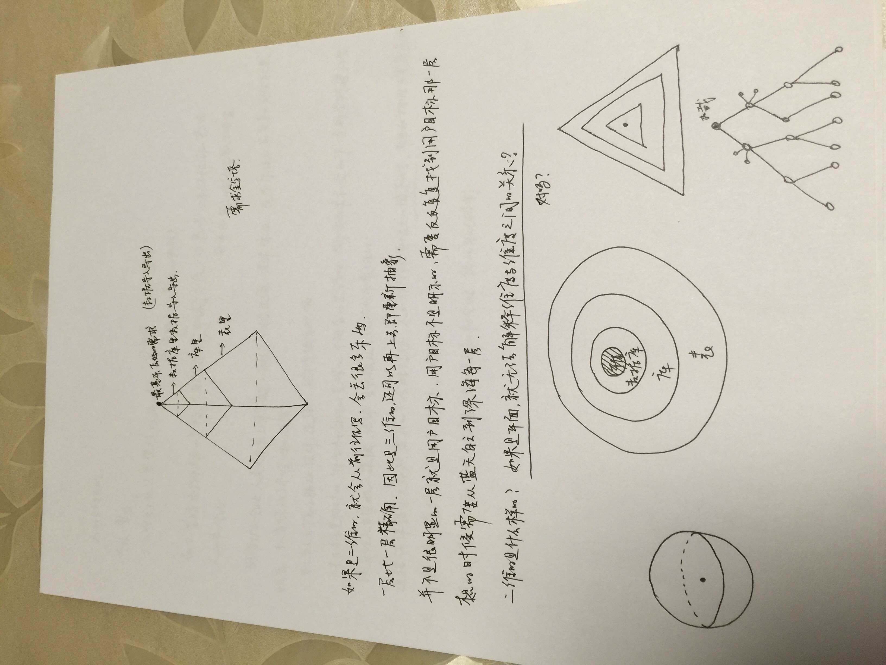
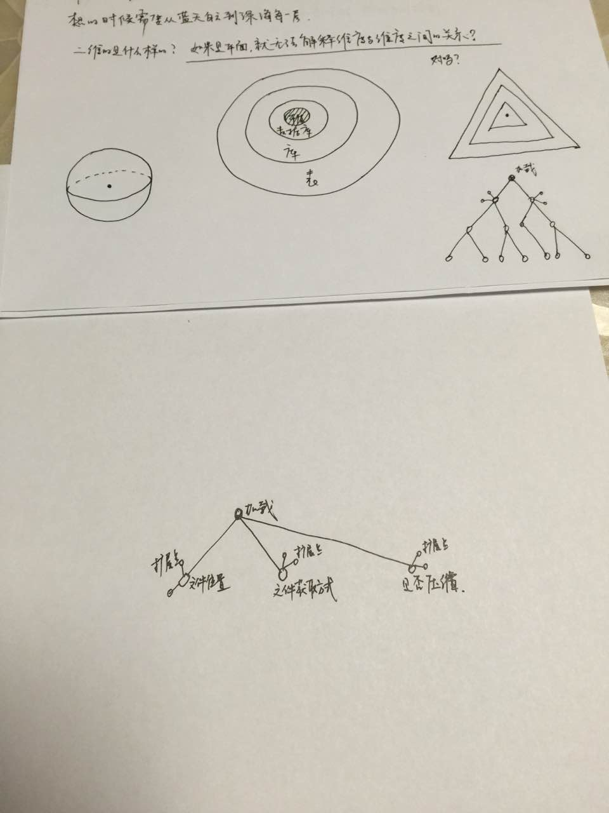
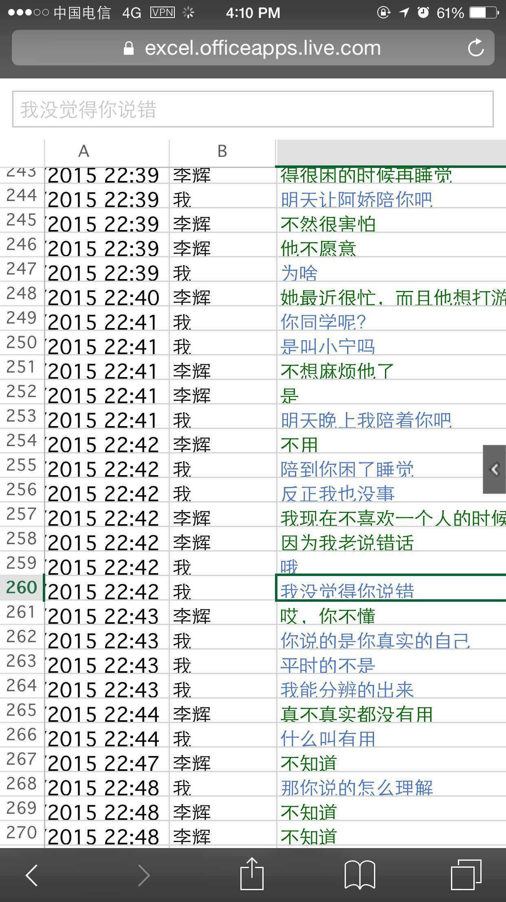
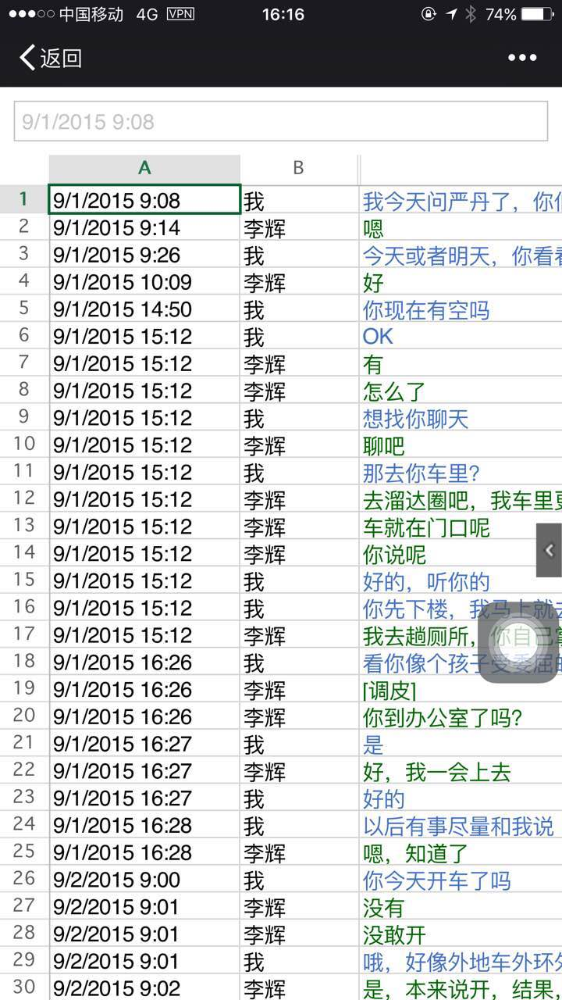
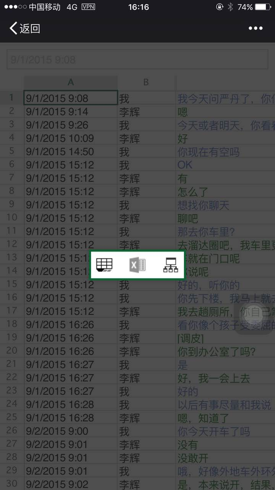
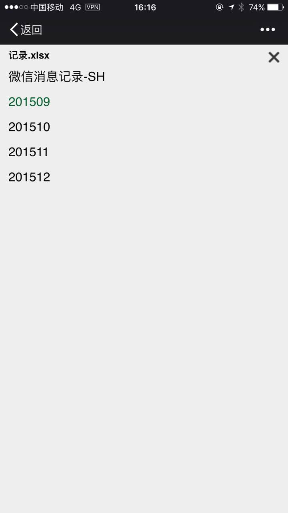
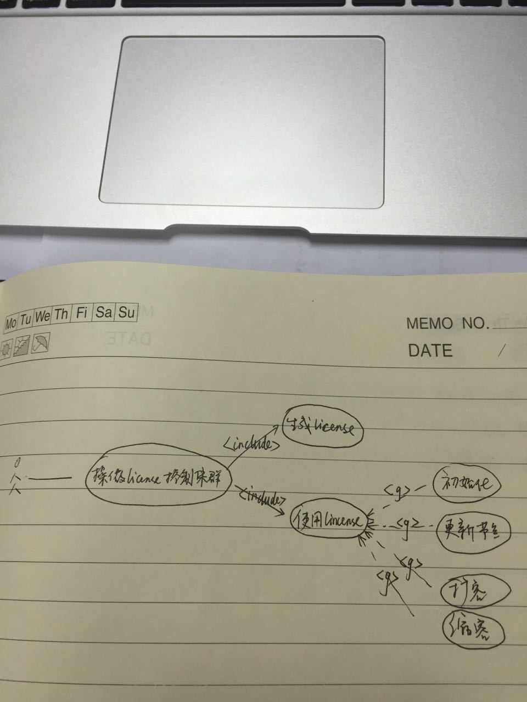
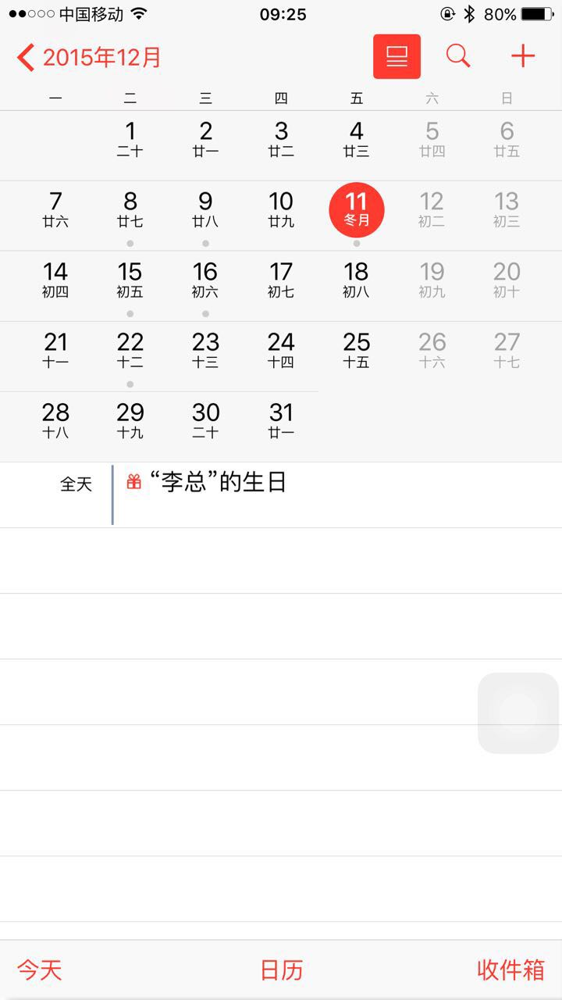
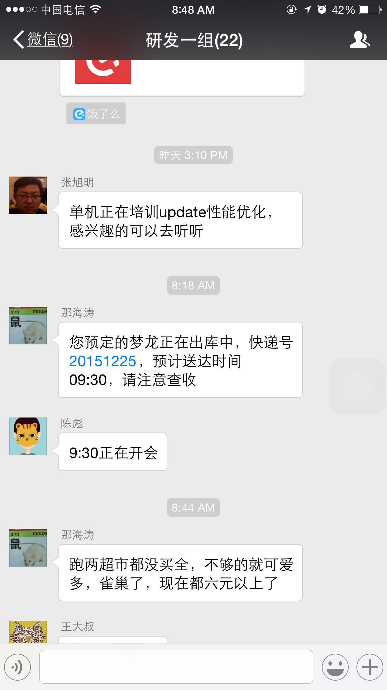
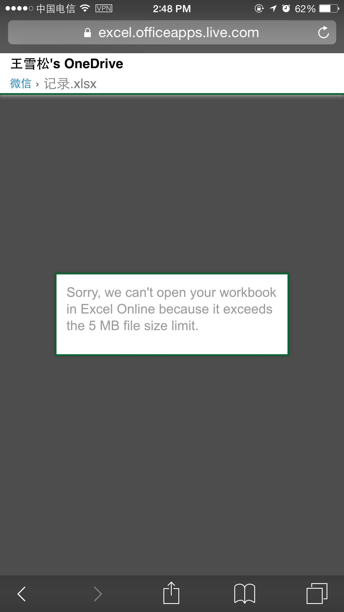

2015-12¶
2015-12-01¶
2015-12-01 08:56:03 |
你 |
每天都这么早，昨天好像晚点 |
2015-12-01 08:56:26 |
我 |
是，昨天没起来 |
2015-12-01 08:56:34 |
你 |
昨天睡的很好 |
2015-12-01 08:56:55 |
我 |
不错，今天还打球吗 |
2015-12-01 08:57:13 |
你 |
打 |
2015-12-01 08:58:20 |
我 |
好的 |
2015-12-01 09:00:26 |
你 |
你为什么每天来这么早 |
2015-12-01 09:00:34 |
你 |
你是不是不想让我打球去 |
2015-12-01 09:00:43 |
我 |
事情多，早上睡不着 |
2015-12-01 09:00:49 |
我 |
不是呀 |
2015-12-01 09:00:59 |
我 |
打球挺好的 |
2015-12-01 09:01:05 |
我 |
我是羡慕 |
2015-12-01 09:01:22 |
我 |
可惜我的腿现在打不了 |
2015-12-01 09:02:22 |
你 |
没事，我替你打 |
2015-12-01 09:02:28 |
我 |
好 |
2015-12-01 09:07:37 |
你 |
甲哥那报告写的不错吧 我写的 |
2015-12-01 09:08:01 |
我 |
是 |
2015-12-01 09:34:49 |
你 |
刚才甲哥说洪越说license 规格说明书不写了 |
2015-12-01 09:59:39 |
我 |
说的是H3C，中兴的还没定 |
2015-12-01 10:59:15 |
你 |
你可真热心啊 |
2015-12-01 10:59:36 |
我 |
？ |
2015-12-01 10:59:48 |
我 |
我热心什么 |
2015-12-01 11:01:01 |
你 |
没什么 |
2015-12-01 11:01:04 |
你 |
随便说说 |
2015-12-01 11:01:46 |
我 |
哈哈 |
2015-12-01 11:01:54 |
我 |
你吃醋了？ |
2015-12-01 11:02:09 |
你 |
没有啊 totally not |
2015-12-01 11:02:18 |
我 |
你是不知道 |
2015-12-01 11:02:34 |
我 |
我都快被气疯了 |
2015-12-01 11:03:01 |
我 |
我现在是给东海擦屁股 |
2015-12-01 11:03:30 |
我 |
东海有一个提交，里面有好多垃圾代码 |
2015-12-01 11:03:43 |
我 |
结果现在合并出问题了 |
2015-12-01 11:03:49 |
你 |
你不用解释啊 |
2015-12-01 11:04:04 |
我 |
我不管HDFS又要延期 |
2015-12-01 11:04:21 |
我 |
你要是不想听那就算了 |
2015-12-01 11:04:50 |
你 |
不说拉倒 |
2015-12-01 11:07:19 |
我 |
我生气了 |
2015-12-01 11:07:25 |
我 |
生你的气 |
2015-12-01 11:07:34 |
你 |
为啥 |
2015-12-01 11:08:29 |
你 |
我只是觉得你自己反应异常，别人延期你也这样？然后说了一句话，你就生气了，为啥？ |
2015-12-01 11:09:37 |
你 |
话说我可一点没看出来 你被hdfs的项目气疯了 |
2015-12-01 11:10:03 |
我 |
我反应异常就是已经是生气了 |
2015-12-01 11:10:14 |
我 |
你又不想听我解释 |
2015-12-01 11:11:13 |
我 |
我也就是和你唠叨唠叨，说完了心里舒服一点 |
2015-12-01 11:11:22 |
我 |
你要是不爱听我就不说了 |
2015-12-01 11:11:27 |
我 |
我也不需要解释什么 |
2015-12-01 11:13:03 |
你 |
你自己什么情况你自己清楚 我愿不愿意听你说你心里也清楚 我不解释 |
2015-12-01 11:14:17 |
你 |
信不足则多言 |
2015-12-01 11:16:20 |
我 |
信不信随你 |
2015-12-01 11:40:58 |
你 |
你为什么非得在我跟陈彪说话的时候跟他说话 |
2015-12-01 12:06:41 |
你 |
讨厌你 |
2015-12-01 12:07:56 |
你 |
看你能狡辩到什么时候 |
2015-12-01 12:49:13 |
我 |
你知道早上老毛的事情吗 |
2015-12-01 12:56:45 |
你 |
不知道 |
2015-12-01 12:57:39 |
你 |
说这些事真的挺没意义的，算了，不想说了 |
2015-12-01 14:32:58 |
我 |
你知道我为啥生你的气吗 |
2015-12-01 14:33:17 |
我 |
我最烦的就是吃醋 |
2015-12-01 14:33:45 |
我 |
你那种说话的口气让我很不舒服 |
2015-12-01 14:36:45 |
我 |
上午我已经非常不顺了，想着和你唠叨两句，发发牢骚 |
2015-12-01 14:37:23 |
我 |
可是你说的话确实让我很生气 |
2015-12-01 14:41:20 |
我 |
我不知道你去哪了 |
2015-12-01 14:41:44 |
我 |
你要是真不想理我那就算了 |
2015-12-01 14:50:43 |
你 |
这么容易就放弃 |
2015-12-01 14:50:59 |
你 |
你很讨厌我吃醋，那就不吃了 |
2015-12-01 14:51:44 |
我 |
稍等 |
2015-12-01 14:51:46 |
我 |
谢谢你 |
2015-12-01 15:19:27 |
我 |
你刚才去哪了？ |
2015-12-01 15:19:40 |
我 |
今天上午晨会老杨给我小鞋穿了 |
2015-12-01 15:21:47 |
你 |
怎么了 |
2015-12-01 15:21:59 |
你 |
他为啥给你小鞋穿啊 |
2015-12-01 15:23:26 |
我 |
别说了，昨天老毛发现了一个问题，今天我汇报，老杨让测试给我记个bug |
2015-12-01 15:23:58 |
你 |
那是bug吗 |
2015-12-01 15:24:01 |
我 |
我就不想记bug，扯了半天 |
2015-12-01 15:24:07 |
你 |
哦 |
2015-12-01 15:24:21 |
我 |
可以是，也可以不是 |
2015-12-01 15:24:32 |
我 |
最郁闷的不是这个 |
2015-12-01 15:24:33 |
你 |
他以什么理由记啊 |
2015-12-01 15:24:45 |
你 |
是他的态度是吗？ |
2015-12-01 15:25:07 |
我 |
老杨说从产品的角度上说这是个bug |
2015-12-01 15:25:28 |
我 |
你知道那个口吻和田一样一样的 |
2015-12-01 15:26:03 |
你 |
他俩本来就是穿一个裤子的 |
2015-12-01 15:26:16 |
我 |
开完会我去找老毛，我想即使记bug也得是研发记，不能测试记 |
2015-12-01 15:26:32 |
我 |
结果你猜老毛说什么 |
2015-12-01 15:26:33 |
你 |
后来呢 |
2015-12-01 15:26:43 |
我 |
他说是他搞错了 |
2015-12-01 15:26:48 |
你 |
晕 |
2015-12-01 15:26:53 |
你 |
怎么回事啊到底 |
2015-12-01 15:26:58 |
我 |
他把参数用错了 |
2015-12-01 15:27:19 |
我 |
你说我能不生气吗 |
2015-12-01 15:27:27 |
你 |
参数用错是个什么概念 |
2015-12-01 15:27:33 |
你 |
就是确实是bug呗 |
2015-12-01 15:27:40 |
我 |
不是 |
2015-12-01 15:27:51 |
我 |
老毛输入参数错了 |
2015-12-01 15:28:05 |
我 |
命令行敲错了 |
2015-12-01 15:28:19 |
我 |
后面还有 |
2015-12-01 15:28:40 |
你 |
这跟测试啥事？ |
2015-12-01 15:28:46 |
你 |
这件事真是说不清楚 |
2015-12-01 15:28:50 |
我 |
回来后，我让刘甲合并HDFS的代码 |
2015-12-01 15:29:07 |
你 |
咋的了 |
2015-12-01 15:29:18 |
你 |
又合错了？ |
2015-12-01 15:29:21 |
我 |
结果发现东海把当初给农行用的测试版的代码提交了 |
2015-12-01 15:29:47 |
你 |
我觉得你们的状态就是你每天天天着急 别人都跟没事人似得 |
2015-12-01 15:29:50 |
你 |
怎么这样啊 |
2015-12-01 15:29:59 |
我 |
结果他们开发的代码基础是错的 |
2015-12-01 15:30:09 |
你 |
哎呀 |
2015-12-01 15:30:12 |
你 |
真受不了 |
2015-12-01 15:30:20 |
我 |
我就想办法解决吧 |
2015-12-01 15:30:33 |
我 |
两条腿走路 |
2015-12-01 15:30:52 |
你 |
你想说什么啊 |
2015-12-01 15:30:58 |
我 |
一边刘甲去改提交，把东海的删掉 |
2015-12-01 15:31:04 |
你 |
哦 |
2015-12-01 15:31:06 |
你 |
知道了 |
2015-12-01 15:31:19 |
我 |
另一边让阿娇他们改代码 |
2015-12-01 15:31:28 |
我 |
然后就是你看见的了 |
2015-12-01 15:31:30 |
你 |
首先 这件事来说 你没有错 也该帮 其次 我觉得我也没错啊 |
2015-12-01 15:32:20 |
你 |
这么大的事 我也没看见你怎么样 然后我就看见你说帮他们干什么什么的 就多了句嘴 你就这样了 |
2015-12-01 15:32:28 |
你 |
又生气 又算了啥的 |
2015-12-01 15:32:43 |
我 |
一开始我没生气 |
2015-12-01 15:32:59 |
我 |
我还逗你呢，说你吃醋 |
2015-12-01 15:33:17 |
你 |
我那句话错了 |
2015-12-01 15:33:50 |
我 |
你那一句不用解释我就来火 |
2015-12-01 15:33:51 |
你 |
我去评审了刚才， |
2015-12-01 15:34:08 |
你 |
为啥火啊 |
2015-12-01 15:35:01 |
你 |
我觉你跟我就没再一个频道 |
2015-12-01 15:36:53 |
你 |
你忙吗 想跟你问个问题 |
2015-12-01 15:36:55 |
我 |
有可能 |
2015-12-01 15:36:58 |
我 |
你说 |
2015-12-01 15:37:05 |
你 |
我去找你行吗？ |
2015-12-01 15:37:27 |
我 |
行，我这有人 |
2015-12-01 15:37:38 |
你 |
你有时间吗 |
2015-12-01 15:38:09 |
我 |
有吧 |
2015-12-01 15:38:24 |
我 |
这家伙有点缠人 |
2015-12-01 15:38:46 |
我 |
要是工作你就过来 |
2015-12-01 16:10:26 |
你 |
你干嘛呢 |
2015-12-01 16:10:45 |
我 |
没事，干点乱七八糟的 |
2015-12-01 16:10:48 |
我 |
你呢 |
2015-12-01 16:11:06 |
你 |
我随便看看 |
2015-12-01 16:11:10 |
你 |
想跟你聊天 |
2015-12-01 16:11:18 |
我 |
好 |
2015-12-01 16:11:23 |
我 |
我先问你吧 |
2015-12-01 16:11:39 |
我 |
你早上是因为吃醋吗？ |
2015-12-01 16:12:08 |
你 |
你不是不喜欢吗 |
2015-12-01 16:12:31 |
我 |
我是想知道真相 |
2015-12-01 16:12:47 |
我 |
早上你和我说的第一句话是不是因为吃醋 |
2015-12-01 16:13:34 |
你 |
是 |
2015-12-01 16:13:54 |
我 |
后来说的不用解释也是因为吃醋？ |
2015-12-01 16:16:44 |
你 |
是吧， |
2015-12-01 16:16:50 |
你 |
然后你就生气了 |
2015-12-01 16:16:58 |
你 |
[撇嘴] |
2015-12-01 16:17:12 |
我 |
好了，对不起，哄哄你 |
2015-12-01 16:17:20 |
我 |
早上确实心情非常不好 |
2015-12-01 16:17:41 |
我 |
平时我肯定不会生气 |
2015-12-01 16:17:46 |
你 |
我没看出来你心情不好 |
2015-12-01 16:18:01 |
我 |
其实你吃醋我也没有生气 |
2015-12-01 16:18:06 |
我 |
我还逗你呢 |
2015-12-01 16:18:08 |
你 |
也许我知道你心情不好的话 我就不会这么说话了 |
2015-12-01 16:18:39 |
我 |
你看我们说话你心里不舒服了？ |
2015-12-01 16:18:50 |
我 |
[链接] 新文档 |
2015-12-01 16:19:06 |
我 |
你点进去看看 |
2015-12-01 16:19:38 |
你 |
这是什么 |
2015-12-01 16:19:53 |
我 |
一个一起写文档的东西 |
2015-12-01 16:20:10 |
你 |
哦 |
2015-12-01 16:20:47 |
你 |
我没有不舒服 可能有吧 我也不知道 |
2015-12-01 16:20:53 |
你 |
就是突然想说那么句话 |
2015-12-01 16:21:02 |
你 |
说出去就会心情好 就说了 |
2015-12-01 16:21:57 |
我 |
哦 |
2015-12-01 16:22:03 |
我 |
那以后你就说吧 |
2015-12-01 16:22:47 |
你 |
不说了 |
2015-12-01 16:23:00 |
我 |
说吧，我真的没事 |
2015-12-01 16:26:12 |
我 |
你说了心情就好了 |
2015-12-01 16:26:30 |
我 |
我一般不会这样 |
2015-12-01 16:26:45 |
我 |
是今天心情太糟糕 |
2015-12-01 16:27:04 |
我 |
其实今天开始的时候我还哄你呢 |
2015-12-01 16:27:13 |
你 |
等 |
2015-12-01 16:32:22 |
你 |
没事了 |
2015-12-01 16:32:25 |
你 |
都过去了 |
2015-12-01 16:32:41 |
我 |
我是说以后 |
2015-12-01 16:32:47 |
你 |
刚才蓓蓓跟洪越要license的软件需求规格说明书 |
2015-12-01 16:32:59 |
我 |
你只要告诉我你吃醋了就行 |
2015-12-01 16:33:12 |
你 |
我不告诉哦你 |
2015-12-01 16:33:29 |
你 |
我吃醋怎么可能告诉你 你太天真了 |
2015-12-01 16:33:47 |
我 |
你告诉我我就不会生气 |
2015-12-01 16:34:19 |
你 |
那你生气吧 回头我再哄你 |
2015-12-01 16:35:04 |
我 |
不好，还是我哄你好 |
2015-12-01 16:35:19 |
我 |
我要是真生气了是很可怕的 |
2015-12-01 16:35:32 |
我 |
会伤到你 |
2015-12-01 16:35:55 |
你 |
那我就不吃醋了 |
2015-12-01 16:36:06 |
你 |
我觉得你现在脑子并不清楚 |
2015-12-01 16:36:12 |
你 |
别讨论这个问题了 |
2015-12-01 16:36:36 |
我 |
今天就把王旭吓到了 |
2015-12-01 16:36:45 |
你 |
我问你个问题 你想想你年轻的时候 你吃醋的时候 会告诉你对象吗 |
2015-12-01 16:36:48 |
我 |
我现在很清楚 |
2015-12-01 16:37:01 |
我 |
我现在不年轻呀 |
2015-12-01 16:37:30 |
我 |
算了，你还是按你自己的习惯办吧 |
2015-12-01 16:37:45 |
你 |
我吃醋的时候当然不想跟你说了 |
2015-12-01 16:37:50 |
我 |
我的方法和常人总是有点不一样 |
2015-12-01 16:37:51 |
你 |
我想让你自己发现 |
2015-12-01 16:37:57 |
我 |
好 |
2015-12-01 16:38:12 |
我 |
那我发现了你得承认 |
2015-12-01 16:38:56 |
你 |
我会尽量让自己不吃醋 |
2015-12-01 16:39:02 |
你 |
自己消化 |
2015-12-01 16:41:07 |
我 |
这样不好，我会心疼的 |
2015-12-01 16:42:03 |
你 |
你要是真心疼 就不会因为我吃醋生气了 |
2015-12-01 16:42:36 |
我 |
平时我真的心疼，每次也会哄你 |
2015-12-01 16:42:53 |
我 |
今天实在是太乱了 |
2015-12-01 16:43:06 |
你 |
嗯，我说了，我已经原谅你了 |
2015-12-01 16:43:09 |
你 |
没事了 |
2015-12-01 16:43:27 |
我 |
所以以后还是我哄你吧 |
2015-12-01 16:43:35 |
我 |
反正我也不生气 |
2015-12-01 16:44:01 |
你 |
这个你自己说服自己就好 |
2015-12-01 16:44:18 |
我 |
是 |
2015-12-01 16:44:45 |
我 |
刚才那个网址你进去了吗 |
2015-12-01 16:46:23 |
你 |
嗯 |
2015-12-01 16:46:33 |
你 |
杨总为什么给你穿小鞋 |
2015-12-01 16:46:35 |
我 |
看见我写的了吗 |
2015-12-01 16:46:59 |
我 |
最近因为阿娇的事情我逼他太紧了 |
2015-12-01 16:47:55 |
你 |
阿娇怎么了？ |
2015-12-01 16:48:34 |
我 |
任职资格，我让他给阿娇提高等 |
2015-12-01 16:49:12 |
我 |
还有一些其他事情 |
2015-12-01 16:49:32 |
你 |
哦 |
2015-12-01 16:49:34 |
你 |
明白了 |
2015-12-01 16:52:23 |
你 |
最近王志新干嘛呢 |
2015-12-01 16:52:27 |
我 |
你去电脑上 yiqixie.com，就是“一起写”的汉语拼音 |
2015-12-01 17:06:53 |
我 |
你新加了一个文件夹？ |
2015-12-01 17:07:01 |
你 |
我不知道啊 |
2015-12-01 17:07:08 |
你 |
也不知大家在哪编辑 |
2015-12-01 17:07:28 |
我 |
我也是刚玩 |
2015-12-01 17:10:31 |
我 |
好像网站宕机了 |
2015-12-01 17:10:51 |
你 |
是，我觉得也是 |
2015-12-01 17:11:09 |
你 |
回头再弄吧，你从哪知道这个东西的 |
2015-12-01 17:11:13 |
我 |
明天再说吧，你该准备去打球了 |
2015-12-01 17:11:18 |
我 |
网上找的 |
2015-12-01 17:11:21 |
你 |
早呢 |
2015-12-01 17:11:24 |
你 |
等会 |
2015-12-01 17:48:01 |
我 |
你的朋友圈是什么意思 |
2015-12-01 17:50:18 |
你 |
没什么 |
2015-12-01 17:50:25 |
我 |
哦 |
2015-12-01 17:50:38 |
我 |
总觉得有什么 |
2015-12-01 17:50:48 |
你 |
你觉得是什么 |
2015-12-01 17:50:53 |
我 |
好像很有禅意的样子 |
2015-12-01 17:51:05 |
我 |
参不透 |
2015-12-01 17:51:19 |
你 |
哪能啊 |
2015-12-01 19:04:05 |
你 |
你走了吗 |
2015-12-01 19:04:08 |
你 |
我现在回去 |
2015-12-01 19:06:35 |
你 |
走了吗 |
2015-12-01 19:09:03 |
你 |
不理我？ |
2015-12-01 19:17:38 |
我 |
没有 |
2015-12-01 19:17:49 |
我 |
还在呢 |
2015-12-01 19:17:57 |
我 |
今天这么早 |
2015-12-01 19:18:14 |
你 |
走不，可以跟你呆一个小时 |
2015-12-01 19:18:18 |
你 |
走吗？ |
2015-12-01 19:18:25 |
我 |
好 |
2015-12-01 19:18:47 |
我 |
你在哪等我 |
2015-12-01 19:19:16 |
你 |
我现在门口，得上去拿东西 |
2015-12-01 19:19:31 |
我 |
好的 |
2015-12-01 19:19:33 |
你 |
车就在门口呢 |
2015-12-01 19:20:25 |
我 |
好 |
2015-12-01 19:21:27 |
你 |
怎么办 |
2015-12-01 19:21:52 |
我 |
你不是上楼吗？ |
2015-12-01 19:24:08 |
你 |
我去那屋喊句？ |
2015-12-01 19:24:25 |
我 |
喊谁 |
2015-12-01 19:25:23 |
你 |
那我就走了 |
2015-12-01 19:25:32 |
你 |
在车里等你 |
2015-12-01 19:25:35 |
我 |
好的 |
2015-12-01 19:28:16 |
我 |
下楼了 |
2015-12-02¶
2015-12-02 09:20:03 |
我 |
幸亏昨天你留时间了 |
2015-12-02 09:20:06 |
你 |
昨天甲哥11点多回家的 |
2015-12-02 09:20:11 |
你 |
怎么了 |
2015-12-02 09:20:14 |
我 |
这周可能都没空了 |
2015-12-02 09:20:21 |
你 |
哦 |
2015-12-02 09:20:28 |
你 |
要发版是吗 |
2015-12-02 09:20:32 |
我 |
是 |
2015-12-02 09:20:34 |
你 |
8号送测 |
2015-12-02 09:20:41 |
我 |
我想周五 |
2015-12-02 09:20:43 |
你 |
发版前你们都挺紧张的 |
2015-12-02 09:20:45 |
你 |
恩恩 |
2015-12-02 09:20:53 |
你 |
我知道 |
2015-12-02 09:20:55 |
你 |
不烦你 |
2015-12-02 09:21:21 |
我 |
你真的好可爱 |
2015-12-02 09:21:35 |
你 |
怎么突然这么说 |
2015-12-02 09:21:56 |
我 |
看你写的不烦我 |
2015-12-02 09:57:13 |
你 |
我把antrl的用户需求说明书发给范树磊他们组的，行吗？ |
2015-12-02 09:57:47 |
我 |
你发吧，我还没空看 |
2015-12-02 10:05:34 |
你 |
发了 |
2015-12-02 10:05:45 |
我 |
好的 |
2015-12-02 10:39:03 |
你 |
不错啊 雷厉风行 像你的风格 你就是对你们组的太好了 |
2015-12-02 10:39:49 |
我 |
我就是心太软 |
2015-12-02 10:40:30 |
我 |
知道时间压力大，当初还是让他们去准备任职了 |
2015-12-02 10:48:08 |
你 |
就是 活人惯得 |
2015-12-02 10:48:56 |
我 |
我是不是也应该对你一样呀[呲牙] |
2015-12-02 10:51:46 |
你 |
这。。。如果你想的话[可怜]，我就哭 |
2015-12-02 11:00:40 |
我 |
想哭就到我怀里哭 |
2015-12-02 11:03:10 |
我 |
说话越来越有哲理了 |
2015-12-02 11:05:55 |
你 |
没有 |
2015-12-02 11:06:03 |
你 |
你好意思， |
2015-12-02 11:06:10 |
你 |
你们组的人疯了 |
2015-12-02 11:06:40 |
我 |
我怎么好意思？ |
2015-12-02 11:06:56 |
你 |
哈哈 |
2015-12-02 11:07:04 |
你 |
让我在你怀里哭 |
2015-12-02 11:07:13 |
你 |
我说的对吗？那句话 |
2015-12-02 11:07:17 |
我 |
你去搜一下 |
2015-12-02 11:07:23 |
我 |
庾澄庆的 |
2015-12-02 11:07:43 |
你 |
听乔布斯的传记，觉得这句话说的很有道理， |
2015-12-02 11:07:52 |
你 |
好听吗？ |
2015-12-02 11:07:57 |
我 |
对呀 |
2015-12-02 11:15:42 |
我 |
找到了吗 |
2015-12-02 11:15:59 |
你 |
没呢 |
2015-12-02 11:18:05 |
你 |
正在听 |
2015-12-02 11:18:21 |
我 |
好听吗 |
2015-12-02 11:18:53 |
你 |
怎么突然想到这首歌了 |
2015-12-02 11:19:00 |
你 |
挺应景啊 |
2015-12-02 11:19:19 |
我 |
对呀，很应景的 |
2015-12-02 11:19:28 |
你 |
还不错 |
2015-12-02 11:19:49 |
我 |
经典 |
2015-12-02 11:25:30 |
我 |
喜欢吗 |
2015-12-02 11:25:41 |
你 |
恩 不错 |
2015-12-02 11:25:45 |
你 |
单曲循环 |
2015-12-02 11:25:52 |
我 |
不至于吧 |
2015-12-02 11:26:09 |
你 |
我听一遍一般没啥感觉 |
2015-12-02 11:26:13 |
我 |
其实以前有好多经典的歌曲 |
2015-12-02 11:26:16 |
你 |
反正也没事 |
2015-12-02 11:26:28 |
你 |
我学学监控工具啊 反正没事干 |
2015-12-02 11:26:36 |
我 |
好的 |
2015-12-02 11:26:37 |
你 |
了解下产品 |
2015-12-02 11:26:42 |
我 |
应该的 |
2015-12-02 11:26:48 |
你 |
是 |
2015-12-02 11:27:11 |
你 |
我看洪越写了个监控工具的需求 别等着到时候我啥也不知道 |
2015-12-02 13:17:08 |
我 |
你的QQ号 |
2015-12-02 13:17:35 |
你 |
542704230 |
2015-12-02 13:24:42 |
我 |
加你了，不会给你惹麻烦吧 |
2015-12-02 13:25:11 |
你 |
没事 |
2015-12-02 13:25:20 |
你 |
别在QQ这说话了 |
2015-12-02 13:25:26 |
你 |
很少很少上 |
2015-12-02 13:25:40 |
我 |
我也几乎不用QQ |
2015-12-02 13:25:52 |
我 |
只是想看看你写的东西 |
2015-12-02 13:40:30 |
你 |
我大致看了下 觉得好幼稚 又臭又长 多是写牢骚的话 你还是别看了 |
2015-12-02 13:40:36 |
你 |
慢慢的负情绪 |
2015-12-02 13:40:43 |
你 |
满满的负情绪 |
2015-12-02 13:44:42 |
我 |
挺好的 |
2015-12-02 13:44:49 |
我 |
很真实 |
2015-12-02 13:46:24 |
我 |
其实每个人都一样 |
2015-12-02 13:46:44 |
我 |
总是希望自己做得更好一点 |
2015-12-02 13:46:46 |
你 |
你也一样吗 |
2015-12-02 13:47:01 |
我 |
一样的 |
2015-12-02 13:47:02 |
你 |
我爸爸就不希望 |
2015-12-02 13:47:12 |
你 |
他只希望我跟我姐能做的更好 |
2015-12-02 13:47:14 |
你 |
哈哈 |
2015-12-02 13:47:16 |
你 |
是 |
2015-12-02 13:47:21 |
我 |
比如我不喜欢照相 |
2015-12-02 13:47:27 |
我 |
不喜欢照镜子 |
2015-12-02 13:47:36 |
你 |
你还有这爱好呢啊 |
2015-12-02 13:47:38 |
你 |
为啥啊？ |
2015-12-02 13:47:44 |
我 |
因为觉得自己很丑 |
2015-12-02 13:47:53 |
你 |
你一点都不丑 |
2015-12-02 13:48:05 |
我 |
从小就这样 |
2015-12-02 13:48:30 |
你 |
那估计你审美有问题 |
2015-12-02 13:49:04 |
你 |
要不你们组的都那么丑 你不会看着他们都挺好看的吧 |
2015-12-02 13:49:08 |
你 |
哎呀 |
2015-12-02 13:49:16 |
我 |
没有 |
2015-12-02 13:49:20 |
你 |
谁说你丑了 哦 你自己认为的 |
2015-12-02 13:49:24 |
我 |
我觉得你好看 |
2015-12-02 13:49:28 |
你 |
我觉得你长得很可爱啊 |
2015-12-02 13:49:34 |
我 |
是，我也知道 |
2015-12-02 13:49:45 |
你 |
圆圆的脸 圆圆的眼睛 |
2015-12-02 13:49:46 |
我 |
只是自己心理这一关过不去 |
2015-12-02 13:49:50 |
你 |
为啥啊 |
2015-12-02 13:50:00 |
你 |
好奇怪 不都说看着自己好看吗 |
2015-12-02 13:50:06 |
我 |
不知道，就是从小如此 |
2015-12-02 13:50:08 |
你 |
你是我知道第一个这样的 |
2015-12-02 13:50:10 |
你 |
啊 |
2015-12-02 13:50:17 |
你 |
那岂不是很惨 |
2015-12-02 13:50:23 |
我 |
我也没有特意去改过 |
2015-12-02 13:50:30 |
你 |
好可怜 |
2015-12-02 13:50:42 |
我 |
就是不照镜子而已 |
2015-12-02 13:55:27 |
你 |
现在也这样吗 |
2015-12-02 13:55:33 |
你 |
为什么不照镜子？ |
2015-12-02 13:55:51 |
我 |
不喜欢镜子里面的人 |
2015-12-02 13:56:01 |
我 |
从小就没喜欢过 |
2015-12-02 13:56:07 |
你 |
你考察过不照镜子的人什么心理吗 |
2015-12-02 13:56:17 |
我 |
没有 |
2015-12-02 13:57:27 |
你 |
我喜欢照镜子 |
2015-12-02 13:57:34 |
你 |
怎么办 你不会讨厌我把 |
2015-12-02 13:57:45 |
我 |
不会呀 |
2015-12-02 13:57:51 |
我 |
你那么美 |
2015-12-02 13:58:04 |
我 |
我只是不喜欢镜子里面的自己 |
2015-12-02 13:58:17 |
我 |
不是不喜欢照镜子的行为 |
2015-12-02 14:08:37 |
你 |
想跟你讨论出世 入世的话题 |
2015-12-02 14:08:50 |
我 |
可以 |
2015-12-02 14:08:54 |
你 |
你为什么不爱照镜子 |
2015-12-02 14:08:59 |
我 |
我不保证一直有时间 |
2015-12-02 14:09:10 |
我 |
忙了就先不回你了 |
2015-12-02 14:09:23 |
我 |
这个是小时候遗留的 |
2015-12-02 14:09:24 |
你 |
没事 |
2015-12-02 14:09:28 |
你 |
你忙就忙你的 |
2015-12-02 14:09:36 |
我 |
具体原因我也不知道 |
2015-12-02 14:09:53 |
我 |
好像是因为觉得镜子里面的人不是我 |
2015-12-02 14:09:56 |
你 |
可是为什么从每个人都一样 都希望变得更好这句 转到了不喜欢照镜子 |
2015-12-02 14:10:06 |
你 |
肯定有问题 |
2015-12-02 14:10:13 |
你 |
你不会是穿越过来的吧 |
2015-12-02 14:10:18 |
我 |
这个可能和我的自我意识成熟有关 |
2015-12-02 14:10:32 |
我 |
我不知道 |
2015-12-02 14:10:34 |
你 |
是不是太早熟了 |
2015-12-02 14:11:33 |
我 |
我说我不喜欢照镜子，是因为你说以前你写的东西看上去很幼稚 |
2015-12-02 14:11:45 |
我 |
我的意思是说很多人都一样 |
2015-12-02 14:11:55 |
我 |
我也会这样 |
2015-12-02 14:12:03 |
你 |
哦 是说会讨厌自己的东西 |
2015-12-02 14:12:12 |
我 |
差不多 |
2015-12-02 14:12:24 |
我 |
就是人总是希望自己是优秀的 |
2015-12-02 14:12:34 |
你 |
哦 明白了 |
2015-12-02 14:14:52 |
我 |
你不是想说出世和入世吗？ |
2015-12-02 14:15:08 |
你 |
恩 |
2015-12-02 14:15:16 |
你 |
就是想这个问题有点大 |
2015-12-02 14:15:22 |
你 |
不知道从哪个角度问 |
2015-12-02 14:15:30 |
我 |
大也不大 |
2015-12-02 14:15:45 |
我 |
不一定非得是串行的 |
2015-12-02 14:15:58 |
我 |
其实出世和入世是可以交叉的 |
2015-12-02 14:16:01 |
我 |
比如说我 |
2015-12-02 14:16:07 |
你 |
那些道士下山就是入世把 |
2015-12-02 14:16:14 |
你 |
恩 这个我知道 |
2015-12-02 14:16:25 |
我 |
我经常自省，特别是在夜深人静的时候，这个可以看成我的出世 |
2015-12-02 14:16:32 |
你 |
而且入世才是最终吧 |
2015-12-02 14:16:37 |
你 |
哦 |
2015-12-02 14:16:41 |
你 |
接着说 |
2015-12-02 14:17:02 |
我 |
自省的时候思考的一些东西，我会在第二天或者后面去实践，这个可以看成入世 |
2015-12-02 14:17:21 |
我 |
比如我和你说的很多东西其实都是我在自省的时候思考的 |
2015-12-02 14:17:29 |
我 |
特别是关于你的 |
2015-12-02 14:17:48 |
我 |
比如如何教你，你现在是什么水平 |
2015-12-02 14:17:59 |
我 |
我应该采用什么样的方法才能让你成长 |
2015-12-02 14:18:12 |
我 |
这些都是我在出世的时候去想得 |
2015-12-02 14:18:14 |
你 |
恩 是 |
2015-12-02 14:18:23 |
我 |
然后在入世的时候就是实践了 |
2015-12-02 14:18:43 |
你 |
是呢 我跟你说过 觉得你教我是有一套东西的 只是当时我根本感受不到 |
2015-12-02 14:19:02 |
我 |
其实平时和你聊天的时候我是来不及处理信息的，一般都是先记下，在自省的时候再进行分析 |
2015-12-02 14:19:33 |
你 |
哦 |
2015-12-02 14:19:55 |
你 |
你接着说 我想想 |
2015-12-02 14:20:02 |
我 |
其实在入世之前我已经分析过了好多场景，有很多东西我发现当时你是无法理解的，所以就不会告诉你 |
2015-12-02 14:21:33 |
你 |
然后 你会根据我的反应 判定为掌握的程度 然后再调整你的方式 方法 进度啥的 |
2015-12-02 14:21:36 |
你 |
对吧 |
2015-12-02 14:21:52 |
你 |
可是 你怎么知道我什么能懂 什么不懂呢 |
2015-12-02 14:22:28 |
我 |
不完全知道 |
2015-12-02 14:22:50 |
我 |
有时候会认为你懂，和你说过后才发现你不懂 |
2015-12-02 14:23:05 |
我 |
你还记得我和你说过，人是一个应急系统 |
2015-12-02 14:23:20 |
你 |
是 |
2015-12-02 14:23:22 |
你 |
记得 |
2015-12-02 14:23:35 |
我 |
说的就是我不停的从你那获得信息，然后调整 |
2015-12-02 14:23:45 |
你 |
而且我发现 你说过的话 有的我就记得 有的我就忘了 |
2015-12-02 14:24:41 |
你 |
我记得的 不是重要的 是我能理解的 不理解的都忘了 或者有的不理解 先记下 后来自己琢磨通的 |
2015-12-02 14:24:54 |
我 |
对呀 |
2015-12-02 14:24:58 |
我 |
重要的就是理解 |
2015-12-02 14:25:19 |
你 |
那你分析的那些场景 是怎么来的 |
2015-12-02 14:26:02 |
我 |
你是说被我分析的还是我分析完成的 |
2015-12-02 14:26:54 |
你 |
你自己想的那部分 |
2015-12-02 14:27:23 |
我 |
就是模拟呀 |
2015-12-02 14:27:52 |
你 |
你说教跟学是不是本身就不在一个层次啊 |
2015-12-02 14:28:07 |
我 |
那当然 |
2015-12-02 14:28:17 |
我 |
教的应该更高 |
2015-12-02 14:28:22 |
我 |
否则就是讨论了 |
2015-12-02 14:28:43 |
你 |
是 |
2015-12-02 14:33:44 |
你 |
我好像以前有过一次你说的那个出世的感觉 |
2015-12-02 14:33:56 |
我 |
你说说 |
2015-12-02 14:37:39 |
你 |
旭明在，等 |
2015-12-02 14:41:13 |
你 |
就是我刚知道田管测试和需求的时候，我就一直想开发中心会是个什么样子 |
2015-12-02 14:41:26 |
我 |
接着说 |
2015-12-02 14:42:01 |
你 |
然后不断弱化自己的存在，从外部看开发中心，我应该怎么做，谁会对我不利，谁会对我有利 |
2015-12-02 14:42:12 |
我 |
对 |
2015-12-02 14:42:32 |
你 |
就那么一次， |
2015-12-02 14:42:52 |
我 |
不着急，以后还会有的 |
2015-12-02 14:42:54 |
你 |
然后局面一下子就变了， |
2015-12-02 14:43:07 |
你 |
也许就是这个感觉 |
2015-12-02 14:44:30 |
我 |
是 |
2015-12-02 16:03:55 |
我 |
真的是要疯了 |
2015-12-02 16:04:08 |
你 |
怎么了 |
2015-12-02 16:04:09 |
我 |
你听什么呢 |
2015-12-02 16:04:10 |
你 |
事多 |
2015-12-02 16:04:29 |
你 |
什么都没听 就是带着耳机呢 |
2015-12-02 16:04:31 |
你 |
障眼法 |
2015-12-02 16:04:34 |
我 |
哦 |
2015-12-02 16:17:20 |
你 |
怎么那么看着我 |
2015-12-02 16:17:38 |
我 |
怎么看你了？ |
2015-12-02 16:17:52 |
你 |
你是不是想吵架 |
2015-12-02 16:18:02 |
我 |
不敢 |
2015-12-02 16:18:24 |
我 |
你喊我的时候我脑子里想别的 |
2015-12-02 16:18:34 |
你 |
哦 |
2015-12-02 16:18:42 |
我 |
第一眼我都没有认出你来 |
2015-12-02 16:18:48 |
你 |
不敢最好[傲慢] |
2015-12-02 16:19:07 |
我 |
所以我才想问问我当时是什么样子 |
2015-12-02 16:19:27 |
我 |
我可不敢和你吵架 |
2015-12-02 16:19:31 |
我 |
怕怕的 |
2015-12-02 16:19:58 |
你 |
哈哈 |
2015-12-02 16:20:17 |
你 |
你要牢记这种怕怕的感觉 |
2015-12-02 16:20:19 |
你 |
别惹我 |
2015-12-02 16:22:46 |
我 |
小人不敢 |
2015-12-02 16:23:14 |
你 |
恩 表现挺好 |
2015-12-02 16:23:41 |
我 |
[流泪] |
2015-12-02 16:47:58 |
我 |
终于可以歇一会了 |
2015-12-02 16:48:14 |
你 |
快歇会 |
2015-12-02 16:48:20 |
你 |
每天真够充实的 |
2015-12-02 16:48:23 |
我 |
是 |
2015-12-02 16:48:28 |
我 |
太充实了 |
2015-12-02 16:48:29 |
你 |
好像过了一个世纪 |
2015-12-02 16:48:40 |
我 |
O(∩_∩)O哈哈~ |
2015-12-02 17:06:07 |
我 |
干什么呢 |
2015-12-02 17:06:15 |
我 |
今天是不是很无聊 |
2015-12-02 17:06:23 |
你 |
看监控工具的需求 |
2015-12-02 17:06:30 |
你 |
有点 跟我姐聊天呢 |
2015-12-02 17:06:38 |
我 |
哦 |
2015-12-02 17:08:37 |
我 |
聊什么呢，能剧透一点不 |
2015-12-02 17:09:35 |
你 |
哎 |
2015-12-02 17:09:43 |
你 |
可以 |
2015-12-02 17:10:17 |
你 |
我听她说说以前的事 她至今觉得很遗憾的事 |
2015-12-02 17:10:30 |
我 |
哦 |
2015-12-02 17:12:35 |
我 |
昨天给你的网站好像好了 |
2015-12-02 17:12:36 |
你 |
算了 |
2015-12-02 17:12:40 |
你 |
哦 |
2015-12-02 17:12:43 |
我 |
心情不好吗 |
2015-12-02 17:12:47 |
你 |
不说了 都是以前的事 |
2015-12-02 17:12:49 |
你 |
没有 |
2015-12-02 17:13:25 |
我 |
现在我有点空，陪你会 |
2015-12-02 17:13:30 |
你 |
好 |
2015-12-02 17:14:17 |
你 |
好了 |
2015-12-02 17:14:21 |
你 |
那个网站 |
2015-12-02 17:15:22 |
我 |
yiqixie.com |
2015-12-02 17:16:03 |
你 |
我刚才写了句话 你看看能不能看到 |
2015-12-02 17:16:11 |
我 |
好的 |
2015-12-02 17:17:44 |
我 |
我看见了 |
2015-12-02 17:17:50 |
我 |
写了几个字 |
2015-12-02 17:18:47 |
你 |
我又写了 你在写几个 |
2015-12-02 17:19:12 |
我 |
好的 |
2015-12-02 17:27:55 |
我 |
算了，还是用这个和你聊天比较好 |
2015-12-02 17:28:15 |
我 |
以后你要想给我写信就用一起写吧 |
2015-12-02 17:28:27 |
我 |
写别的也可以 |
2015-12-02 17:28:38 |
我 |
比如写写心情什么的 |
2015-12-02 17:28:50 |
你 |
OK‘ |
2015-12-02 17:29:34 |
我 |
你是累了吗？ |
2015-12-02 17:30:32 |
你 |
没有啊 |
2015-12-02 17:30:34 |
你 |
没有 |
2015-12-02 17:30:45 |
你 |
在想可选过程究竟是是什么 |
2015-12-02 17:36:02 |
我 |
想到了什么 |
2015-12-02 17:36:15 |
你 |
没啥 |
2015-12-02 17:36:37 |
你 |
就是我一直以为可选过程可以分担一个维度的 后来看看书 发现想错了 |
2015-12-02 17:37:10 |
你 |
可选涉及不到维度 是在一个维度里的更细致的描述 |
2015-12-02 17:37:27 |
我 |
对呀 |
2015-12-02 17:37:44 |
你 |
我有点混 |
2015-12-02 17:37:55 |
我 |
可选其实是某种if else 的场景 |
2015-12-02 17:38:02 |
你 |
还有 怎么有的用例 有多个正常过程 是怎么回事 |
2015-12-02 17:38:07 |
你 |
对 |
2015-12-02 17:38:25 |
我 |
复杂用例有可能 |
2015-12-02 17:38:54 |
你 |
想不明白 我找找书 |
2015-12-02 17:41:13 |
我 |
好的 |
2015-12-03¶
2015-12-03 08:52:38 |
你 |
刚才电梯里就我跟赵总两个人 太压抑了 |
2015-12-03 08:53:49 |
我 |
没事的，赵总不一定知道你是谁 |
2015-12-03 08:54:55 |
你 |
他肯定不知道 |
2015-12-03 09:15:18 |
我 |
我给你买个VPN吧 |
2015-12-03 09:15:33 |
你 |
不要 |
2015-12-03 09:15:43 |
我 |
为啥 |
2015-12-03 09:15:59 |
你 |
你买了我就再也不理你了 |
2015-12-03 09:16:12 |
你 |
你就当我过了 |
2015-12-03 09:16:43 |
我 |
那你自己会买吗 |
2015-12-03 09:17:39 |
我 |
不是送你的礼物，只是觉得我给你的好多东西你都看不了 |
2015-12-03 09:18:01 |
我 |
我基本上只用国外的网站，所以一直有 |
2015-12-03 09:18:39 |
你 |
我自己买吧 |
2015-12-03 09:18:43 |
你 |
你别管了 |
2015-12-03 09:18:46 |
我 |
你现在能看见我给你分享的聊天记录吗 |
2015-12-03 09:19:04 |
我 |
我这测试好像直接访问不了 |
2015-12-03 09:19:12 |
你 |
很久没看了，最开始看过一次 |
2015-12-03 09:19:16 |
我 |
只是给你的手机用的 |
2015-12-03 09:19:46 |
我 |
我给发一个推荐我还能有10块钱 |
2015-12-03 09:20:17 |
你 |
那我自己买，给你推荐吧，我还有10块钱 |
2015-12-03 09:20:37 |
我 |
好吧 |
2015-12-03 09:20:48 |
我 |
你为啥不让我买？ |
2015-12-03 09:21:03 |
你 |
我为啥要让你买啊 |
2015-12-03 09:22:06 |
我 |
http://refyt.com/?r=d6d26995e6876fd8 |
2015-12-03 09:23:18 |
你 |
这个是按月支付的吗？ |
2015-12-03 09:24:26 |
你 |
按年支付 |
2015-12-03 09:24:34 |
你 |
我买了能干什么啊 |
2015-12-03 09:25:29 |
你 |
买哪个比较合适？ |
2015-12-03 09:26:16 |
我 |
最小的那个 |
2015-12-03 09:27:52 |
我 |
我一直觉得这些事情不适合你去做 |
2015-12-03 09:28:10 |
我 |
应该是别人做完了你用就可以了 |
2015-12-03 09:28:11 |
你 |
什么事情？ |
2015-12-03 09:28:18 |
你 |
啊？哈哈 |
2015-12-03 09:28:27 |
你 |
不是啊 我自己做也行啊 |
2015-12-03 09:28:28 |
我 |
就是买这个呀 |
2015-12-03 09:28:44 |
我 |
这个不是钱的问题 |
2015-12-03 09:28:58 |
我 |
我只是想让你省心 |
2015-12-03 09:29:13 |
我 |
简单说就是宠着你 |
2015-12-03 09:30:05 |
我 |
这个还有一个用处，公司屏蔽了淘宝，用这个就可以用公司网络上淘宝，省流量 |
2015-12-03 09:33:25 |
你 |
恩 我知道 没事 |
2015-12-03 09:50:19 |
你 |
那个下载一键安装配置文件的时候没啥反应 没看见安装包好像 |
2015-12-03 09:50:56 |
我 |
你是用手机浏览器下载的吗？ |
2015-12-03 09:51:13 |
你 |
就是微信链接过去的 |
2015-12-03 09:51:29 |
你 |
可能是Safari |
2015-12-03 09:51:49 |
我 |
待会我给你看吧 |
2015-12-03 09:51:55 |
你 |
好 |
2015-12-03 09:52:21 |
我 |
我就说还是我给你全弄好了省心 |
2015-12-03 09:52:40 |
你 |
哈 我就差一步就弄好了 |
2015-12-03 09:52:45 |
你 |
我都搞明白了 |
2015-12-03 09:52:51 |
我 |
好的 |
2015-12-03 10:33:12 |
你 |
要是想电脑识别手机就必须下载iturns是吗 |
2015-12-03 10:33:20 |
你 |
然后安装个苹果助手啥的 |
2015-12-03 10:35:15 |
我 |
你的Mac上自带 |
2015-12-03 10:35:28 |
我 |
win上的iTunes不好使 |
2015-12-03 10:35:32 |
你 |
哦 |
2015-12-03 10:35:47 |
我 |
助手之类的能不用就不用 |
2015-12-03 10:35:58 |
你 |
哦 好吧 |
2015-12-03 10:36:01 |
你 |
我看看 |
2015-12-03 10:38:39 |
我 |
你可以连公司的网络，然后开VPN |
2015-12-03 10:38:48 |
我 |
我现在就一直这样 |
2015-12-03 10:41:36 |
你 |
你有空看看我的手机呗 |
2015-12-03 10:42:00 |
我 |
好的 |
2015-12-03 10:42:06 |
你 |
就是连上电脑后一直震动，可能是软件更新啥的 |
2015-12-03 10:42:16 |
我 |
不要更新 |
2015-12-03 10:42:17 |
你 |
我前天在家弄也是这样 |
2015-12-03 10:42:32 |
你 |
他一直振动，也没什么提示 |
2015-12-03 11:04:29 |
我 |
等有时间我得好好教教你怎么用Mac和iPhone |
2015-12-03 11:05:02 |
我 |
好多好东西你都没用上 |
2015-12-03 11:06:53 |
你 |
你哪有时间 |
2015-12-03 11:08:20 |
你 |
我这个苹果系统的时间都不会设置，乔布斯脑袋挨驴踢了 |
2015-12-03 11:08:41 |
我 |
不是自动设置的吗 |
2015-12-03 13:00:54 |
我 |
你们还没回来吗？等着阿娇干活呢 |
2015-12-03 13:17:28 |
你 |
Sorry 回来了 |
2015-12-03 14:01:37 |
你 |
跟谁问呢？ |
2015-12-03 14:01:40 |
你 |
群里 |
2015-12-03 14:17:08 |
我 |
刚看见，正在武总这开会 |
2015-12-03 14:17:19 |
你 |
没事 |
2015-12-03 14:17:21 |
你 |
开吧 |
2015-12-03 14:17:25 |
你 |
开的愉快 |
2015-12-03 14:17:32 |
我 |
淘气 |
2015-12-03 14:54:35 |
我 |
对吧 |
2015-12-03 14:54:44 |
你 |
对 |
2015-12-03 14:54:46 |
你 |
逗你呢 |
2015-12-03 14:55:04 |
你 |
你是来看我的吗？ |
2015-12-03 14:59:59 |
你 |
监控工具那个写完了 |
2015-12-03 15:00:04 |
你 |
那个特别简单 |
2015-12-03 15:00:05 |
你 |
哈哈 |
2015-12-03 15:29:43 |
我 |
太忙了 |
2015-12-03 15:29:58 |
我 |
每次都是去看你 |
2015-12-03 15:30:22 |
我 |
看完你在找个理由 |
2015-12-03 15:30:23 |
你 |
你怎么来了 |
2015-12-03 15:30:36 |
我 |
所以王旭就比较郁闷 |
2015-12-03 15:30:43 |
你 |
哈哈 |
2015-12-03 15:30:48 |
你 |
你回去吧，没啥事 |
2015-12-03 15:30:52 |
我 |
不是洪越要求我来吗 |
2015-12-03 15:31:16 |
我 |
不回去，正好和你聊会 |
2015-12-03 15:31:33 |
你 |
哦，好 |
2015-12-03 15:31:38 |
你 |
那就呆着吧 |
2015-12-03 15:43:30 |
你 |
你来了真意外 |
2015-12-03 15:43:40 |
我 |
为什么意外 |
2015-12-03 15:43:48 |
我 |
以后需求我都参加 |
2015-12-03 15:44:01 |
我 |
这样也好保护你 |
2015-12-03 15:44:06 |
你 |
真的啊， |
2015-12-03 15:44:11 |
我 |
对呀 |
2015-12-03 15:44:13 |
你 |
开心 |
2015-12-03 15:44:42 |
我 |
正好洪越也强烈要求我作为监督者 |
2015-12-03 15:44:48 |
你 |
哈哈 |
2015-12-03 15:44:53 |
我 |
我就顺水推舟呗 |
2015-12-03 15:45:07 |
你 |
好 |
2015-12-03 15:56:11 |
你 |
评审你去了 我咋这高兴呢 |
2015-12-03 15:56:32 |
我 |
buzhid |
2015-12-03 15:56:38 |
我 |
不知道 |
2015-12-03 15:56:50 |
我 |
是不是因为你喜欢我[呲牙] |
2015-12-03 16:10:03 |
我 |
咋不理我了 |
2015-12-03 16:10:17 |
你 |
没有 找点事干 |
2015-12-03 16:10:28 |
你 |
没事干 |
2015-12-03 16:10:29 |
我 |
干什么呢 |
2015-12-03 16:10:38 |
你 |
我的那个说明书写完了 你看嘛 |
2015-12-03 16:10:42 |
你 |
没啥看的也 |
2015-12-03 16:10:56 |
你 |
刚才那个用户说明书还有个表达问题 我没提 |
2015-12-03 16:11:07 |
我 |
不看了，我觉得你现在已经可以出徒了 |
2015-12-03 16:11:13 |
你 |
我觉得王志新的写作水平就这样了 提也没用 |
2015-12-03 16:11:18 |
我 |
是 |
2015-12-03 16:11:57 |
你 |
业务上，要求8a产品提供新的加载功能，满足不具备Linux系统知识的用户使用该工具能够通过windows操作系统远程数据加载。 |
2015-12-03 16:11:59 |
你 |
这句话 |
2015-12-03 16:12:19 |
我 |
哈哈 |
2015-12-03 16:12:33 |
我 |
这是要坑死人的节奏 |
2015-12-03 16:12:46 |
你 |
咋了 |
2015-12-03 16:13:10 |
你 |
这句话毫无前提 |
2015-12-03 16:13:18 |
你 |
还有错误 |
2015-12-03 16:19:15 |
我 |
热死了 |
2015-12-03 16:19:54 |
你 |
热？ |
2015-12-03 16:21:11 |
我 |
对呀 |
2015-12-03 16:21:21 |
我 |
你过来试试 |
2015-12-03 16:21:31 |
我 |
我这已经27度了 |
2015-12-03 16:21:44 |
你 |
那还不热死了 |
2015-12-03 16:21:47 |
你 |
开窗户 |
2015-12-03 16:22:16 |
我 |
严丹怕冷 |
2015-12-03 16:53:34 |
你 |
我现在看咱们的聊天记录的话 能看吗？ |
2015-12-03 16:53:54 |
我 |
开 VPN 应该可以，就是会慢点 |
2015-12-03 17:00:49 |
我 |
看见了吗 |
2015-12-03 17:02:55 |
你 |
恩 看见了 |
2015-12-03 17:03:00 |
你 |
正在看 |
2015-12-03 17:03:03 |
你 |
好有意思 |
2015-12-03 17:03:06 |
我 |
好的 |
2015-12-03 17:39:36 |
我 |
看完了？ |
2015-12-03 17:42:05 |
你 |
没呢 |
2015-12-03 17:42:07 |
你 |
太逗了 |
2015-12-03 17:42:34 |
我 |
哦 |
2015-12-03 17:42:42 |
我 |
是你逗还是我逗？ |
2015-12-03 17:43:03 |
你 |
我看到一句超级搞笑的 我说的“有的时候我特别生你的气，都被我用理智压下去了” |
2015-12-03 17:43:07 |
你 |
是不是特别好玩‘ |
2015-12-03 17:43:24 |
你 |
你说的话我现在看来 都能理解了 当时就是不理解 |
2015-12-03 17:43:57 |
我 |
所以我才留着，等着你看呢 |
2015-12-03 18:05:41 |
我 |
回家前想着关上聊天记录 |
2015-12-04¶
2015-12-04 08:51:57 |
你 |
morning |
2015-12-04 08:55:23 |
我 |
早 |
2015-12-04 08:55:28 |
我 |
睡好了吗 |
2015-12-04 09:04:32 |
你 |
还好 |
2015-12-04 09:04:34 |
你 |
你呢 |
2015-12-04 09:04:47 |
我 |
不好 |
2015-12-04 09:05:03 |
我 |
昨天坐最后一班地铁回去的 |
2015-12-04 09:05:13 |
你 |
又加班 |
2015-12-04 09:05:14 |
我 |
到家就快11点了 |
2015-12-04 09:05:19 |
你 |
哦 这么晚 |
2015-12-04 09:05:24 |
你 |
天天如此啊 |
2015-12-04 09:05:36 |
我 |
困得我在浴缸里先睡了一觉 |
2015-12-04 09:05:48 |
你 |
哈哈 还泡澡啦 |
2015-12-04 09:05:58 |
我 |
我想争取今天能发出去 |
2015-12-04 09:06:02 |
你 |
哦 |
2015-12-04 09:06:19 |
你 |
准备的怎么样了 |
2015-12-04 09:06:22 |
我 |
我家的水压低，没法淋浴 |
2015-12-04 09:06:52 |
我 |
50%可能性，已经做好明天加班的准备了 |
2015-12-04 09:06:55 |
你 |
哦 |
2015-12-04 09:07:14 |
你 |
明天我也可能加班 可能 啊 我老公应该不让 |
2015-12-04 09:07:18 |
你 |
怕我累 |
2015-12-04 09:07:35 |
我 |
那你就别来了 |
2015-12-04 09:07:45 |
你 |
我想来 |
2015-12-04 09:07:51 |
你 |
再看吧 |
2015-12-04 09:07:57 |
我 |
哦 |
2015-12-04 09:09:55 |
你 |
虽然我对我自己挺放心的 还是让你看一眼把 |
2015-12-04 09:09:59 |
你 |
应该没啥事了 |
2015-12-04 09:10:17 |
我 |
好的 |
2015-12-04 09:10:58 |
你 |
有时间就看 没有就算了 我今天会发出去 |
2015-12-04 09:49:41 |
你 |
咋的了 先别吵了 |
2015-12-04 09:49:59 |
我 |
耿燕惹事 |
2015-12-04 10:52:05 |
你 |
为什么说可维护性比可扩展性要大，大的那部分是什么 |
2015-12-04 10:52:21 |
我 |
太多了 |
2015-12-04 10:52:55 |
我 |
这篇文章有点理想化，里面有很多东西是上个世纪的思想 |
2015-12-04 10:53:07 |
我 |
你看看就可以了，不必当真 |
2015-12-04 10:53:11 |
你 |
哦 |
2015-12-04 10:53:24 |
你 |
维护至少包括修bug |
2015-12-04 10:53:49 |
我 |
其实咱们现在的工作就是维护 |
2015-12-04 10:53:50 |
你 |
扩展是为了最大限度的适应变化是吗 |
2015-12-04 10:53:56 |
你 |
恩 我觉得很像 |
2015-12-04 10:54:30 |
你 |
这文章写的不错 多好啊 跟你说的有很多相同的地方 |
2015-12-04 10:55:08 |
我 |
思想类似，其实很多地方还是有区别的 |
2015-12-04 10:55:47 |
我 |
这些区别需要站到比这篇文章更高的层次才能理解 |
2015-12-04 10:58:24 |
我 |
比如他的设计模式那一段和我的思想就是完全相反的 |
2015-12-04 10:58:59 |
我 |
我认为只要掌握了设计原则，模式只是这些原则的一些具体运用 |
2015-12-04 10:59:14 |
我 |
是根据实际情况制定的战术 |
2015-12-04 10:59:34 |
我 |
绝不是什么不得已，也不是什么润滑剂 |
2015-12-04 10:59:35 |
你 |
设计模式是啥？ |
2015-12-04 10:59:42 |
你 |
恩 |
2015-12-04 10:59:53 |
我 |
这个问的好 |
2015-12-04 10:59:58 |
你 |
那个润滑剂好像不对 |
2015-12-04 11:00:01 |
我 |
你把我问住了 |
2015-12-04 11:00:04 |
你 |
哈哈 |
2015-12-04 11:00:11 |
你 |
因为我一直听你讲原则 |
2015-12-04 11:00:19 |
你 |
我知道原则是什么 |
2015-12-04 11:00:42 |
你 |
还有几句话是不对的 |
2015-12-04 11:00:50 |
我 |
原则是战略，模式是战术 |
2015-12-04 11:00:53 |
你 |
好像都是先有鸡还是先有蛋的问题 |
2015-12-04 11:01:02 |
我 |
不是 |
2015-12-04 11:01:20 |
我 |
使用模式是为了达到我们的目标 |
2015-12-04 11:01:30 |
我 |
而目标就是需求 |
2015-12-04 11:02:06 |
你 |
恩 |
2015-12-04 11:02:20 |
我 |
而为了达到目标所选择的路径的依据就是原则 |
2015-12-04 11:02:45 |
我 |
所以模式是依赖于原则的 |
2015-12-04 11:02:59 |
我 |
现有原则再谈模式 |
2015-12-04 11:03:14 |
我 |
空谈模式就是刷流氓 |
2015-12-04 11:03:25 |
你 |
类比下 |
2015-12-04 11:03:34 |
你 |
跟人类比下 |
2015-12-04 11:03:41 |
我 |
没法比 |
2015-12-04 11:03:48 |
我 |
人类太复杂了 |
2015-12-04 11:04:08 |
我 |
我还没有办法抽象出简单的原则 |
2015-12-04 11:04:09 |
你 |
说点简单的 我好能理解 |
2015-12-04 11:04:18 |
我 |
比如说人是自私的 |
2015-12-04 11:04:19 |
你 |
那模式是最后设计完的架构吗？ |
2015-12-04 11:04:31 |
我 |
先利己再利他 |
2015-12-04 11:04:37 |
我 |
模式不是 |
2015-12-04 11:04:50 |
你 |
你比如说 单一职责这种原则 类比成做人的原则 |
2015-12-04 11:04:57 |
我 |
还有就是人的基本需求 |
2015-12-04 11:05:08 |
你 |
乱了 |
2015-12-04 11:05:10 |
我 |
比如你现在特别在意的 |
2015-12-04 11:05:27 |
你 |
什么 |
2015-12-04 11:05:42 |
我 |
单一职责只能类比人类的组织结构 |
2015-12-04 11:06:00 |
你 |
人类的组织结构？ |
2015-12-04 11:06:02 |
我 |
因为组织结构是没有感性的 |
2015-12-04 11:06:09 |
我 |
比如公司 |
2015-12-04 11:06:13 |
你 |
哦 |
2015-12-04 11:06:59 |
你 |
这篇文章说的系统中“类”啊什么的用的越少 架构越好 对吗？ |
2015-12-04 11:07:03 |
你 |
这句话理解不了 |
2015-12-04 11:07:16 |
我 |
不对 |
2015-12-04 11:07:29 |
我 |
后半部分基本上是瞎说 |
2015-12-04 11:07:48 |
你 |
恩 好像没有什么推理了 |
2015-12-04 11:08:04 |
你 |
而且 模块划分那部分呢？ |
2015-12-04 11:08:12 |
你 |
算了 不说这个了 |
2015-12-04 11:08:16 |
我 |
一样的 |
2015-12-04 11:08:17 |
你 |
我想问你个事 |
2015-12-04 11:08:28 |
我 |
说吧 |
2015-12-04 11:09:08 |
你 |
他说软件之所以变化的根本原因是 软件变化的成本低 这句话也不对 |
2015-12-04 11:09:35 |
我 |
是 |
2015-12-04 11:09:50 |
你 |
根本原因是需求的变化 因为软件要服务于人 人需求变了 软件就得变 |
2015-12-04 11:10:00 |
你 |
即使成本再高 也要变 |
2015-12-04 11:10:03 |
我 |
但是这里面还有一些经济学的规律 |
2015-12-04 11:10:15 |
你 |
好了 不说了这个了 |
2015-12-04 11:10:23 |
我 |
好吧 |
2015-12-04 11:10:56 |
你 |
我看咱们的聊天记录的时候 你提到一点 说我本性中有偷懒的成分 |
2015-12-04 11:11:05 |
你 |
你是这么推理的 |
2015-12-04 11:11:08 |
我 |
是 |
2015-12-04 11:11:46 |
我 |
你以前写需求的时候就很明显 |
2015-12-04 11:11:54 |
你 |
因为我一直有小问题 >光想着完成，不关注质量 |
2015-12-04 11:12:03 |
你 |
那现在还有吗？ |
2015-12-04 11:12:04 |
我 |
还有就是一些其他事情，只不过没那么明显 |
2015-12-04 11:12:14 |
你 |
还有是不是 |
2015-12-04 11:12:19 |
我 |
有 |
2015-12-04 11:12:28 |
我 |
工作中少了很多 |
2015-12-04 11:12:49 |
你 |
然后你说出现这种可能的三个原因 |
2015-12-04 11:13:03 |
你 |
是一直犯错的三个原因 |
2015-12-04 11:14:01 |
你 |
1 不听话 2 浪费你的时间 3 态度问题 |
2015-12-04 11:15:13 |
你 |
最近好像好多生人来找你 |
2015-12-04 11:15:44 |
你 |
你想过有没有一种可能是过分关注呢 我指的是老犯错这件事 |
2015-12-04 11:16:05 |
你 |
或者是我那时候还没有掌握游戏规则 |
2015-12-04 11:16:33 |
我 |
后面这两条说对了 |
2015-12-04 11:16:54 |
我 |
只是那时候你听不懂 |
2015-12-04 11:17:07 |
你 |
还有件事 我这种偷懒跟洪越那种应该不一样把 |
2015-12-04 11:17:11 |
我 |
所以我就说的简单一点 |
2015-12-04 11:17:18 |
我 |
不一样 |
2015-12-04 11:17:30 |
你 |
这件事是我在你跟我说了王志态度问题后 我才开始想的 |
2015-12-04 11:18:07 |
你 |
我想如果我跟他都归结为态度问题 那我和他的态度问题是完全不一样的 |
2015-12-04 11:18:43 |
我 |
是 |
2015-12-04 11:18:48 |
你 |
所以我的偷懒跟洪越也是不一样的 |
2015-12-04 11:18:51 |
我 |
是 |
2015-12-04 11:18:56 |
你 |
你忙的话 就先忙吧 |
2015-12-04 11:19:03 |
你 |
我看你没啥时间 |
2015-12-04 11:19:12 |
我 |
你知道我现在什么感觉吗 |
2015-12-04 11:19:17 |
你 |
为什么最近好多新人找你 |
2015-12-04 11:19:19 |
我 |
有力使不上 |
2015-12-04 11:19:31 |
我 |
因为这个是农行的 |
2015-12-04 11:19:44 |
我 |
来找我的都是一部的 |
2015-12-04 11:20:09 |
你 |
“有力使不上”怎么解？ |
2015-12-04 11:20:10 |
我 |
平时他们才不会理我呢 |
2015-12-04 11:20:23 |
我 |
看着阿娇她们犯错 |
2015-12-04 11:20:36 |
我 |
自己又不能替他们干 |
2015-12-04 11:20:47 |
我 |
所以只能看着着急 |
2015-12-04 11:21:08 |
我 |
就是所谓的笑着看你们犯错 |
2015-12-04 11:21:09 |
你 |
那就指导下呗 |
2015-12-04 11:21:12 |
你 |
哦 |
2015-12-04 11:21:14 |
我 |
没用的 |
2015-12-04 11:21:17 |
你 |
跟我不也是一样 |
2015-12-04 11:21:27 |
你 |
现在应该好多了 |
2015-12-04 11:21:32 |
你 |
慢慢就好了 |
2015-12-04 11:21:34 |
我 |
以前我指导你的时候也这样 |
2015-12-04 11:21:46 |
我 |
总有个过程呀 |
2015-12-04 11:21:54 |
你 |
我从聊天记录上看出来了 |
2015-12-04 11:22:00 |
我 |
他们很少被我训练 |
2015-12-04 11:22:09 |
你 |
我现在看那个记录的时候 最大的感觉是什么 你知道吗？ |
2015-12-04 11:22:16 |
我 |
所以成长比你慢 |
2015-12-04 11:22:20 |
我 |
不知道 |
2015-12-04 11:22:50 |
你 |
因为我现在能看懂你说的话了 我也知道当时我的心理活动 |
2015-12-04 11:23:12 |
你 |
所以我最大的感觉 就是 咱俩就从来没有在一个频道过 |
2015-12-04 11:23:19 |
你 |
是不是很浪费你的感情 |
2015-12-04 11:23:45 |
我 |
不是 |
2015-12-04 11:26:38 |
你 |
看范树磊的邮件 |
2015-12-04 11:27:12 |
你 |
为什么不是 |
2015-12-04 11:28:39 |
我 |
稍等 |
2015-12-04 11:30:21 |
我 |
你的想法我懂，我的想法你不懂 |
2015-12-04 11:30:30 |
我 |
所以只能是我包容你 |
2015-12-04 11:30:45 |
我 |
这不是浪费 |
2015-12-04 11:31:41 |
你 |
是过程 |
2015-12-04 11:32:50 |
我 |
对 |
2015-12-04 12:22:34 |
你 |
我在想，我的变化究竟是什么，是对你更了解了？还是我自己变了？ |
2015-12-04 12:22:55 |
我 |
你自己 |
2015-12-04 12:27:03 |
我 |
你不睡觉吗 |
2015-12-04 13:09:45 |
我 |
[链接] 转发微博 |
2015-12-04 13:24:38 |
我 |
睡觉了吗 |
2015-12-04 13:26:16 |
你 |
睡了 |
2015-12-04 13:26:29 |
我 |
好多人 |
2015-12-04 13:26:33 |
我 |
好的 |
2015-12-04 13:30:50 |
你 |
这个人应该是把生命都看透了 |
2015-12-04 13:31:08 |
我 |
是，打击太大 |
2015-12-04 13:31:18 |
我 |
关键是他没有放弃 |
2015-12-04 13:31:22 |
你 |
是 |
2015-12-04 13:31:29 |
我 |
也没有抱怨 |
2015-12-04 13:31:38 |
我 |
是真正看透了 |
2015-12-04 13:31:39 |
你 |
也并不是所有有这种经历的都会像他这么透彻 |
2015-12-04 13:31:45 |
我 |
是 |
2015-12-04 13:32:01 |
你 |
所以他对人应该是非常非常真诚的 |
2015-12-04 13:32:11 |
你 |
这种人永远也不会朝三暮四 |
2015-12-04 13:32:34 |
我 |
是 |
2015-12-04 13:33:06 |
你 |
而且他做的所有事都是发自内心的 不是为了做而做 |
2015-12-04 13:33:23 |
我 |
是 |
2015-12-04 13:37:39 |
我 |
你看了杨总回的邮件了吗 |
2015-12-04 13:37:47 |
你 |
看了 |
2015-12-04 13:37:54 |
你 |
跟你说说我的理解 |
2015-12-04 13:38:00 |
你 |
看我想的对不对 |
2015-12-04 13:38:05 |
我 |
好 |
2015-12-04 13:40:15 |
你 |
我想领导对取消界面那个需求本身就不怎么想做 因为对整个产品的规划没什么好处 他想知道的是如果不是很重要 就直接做个定制化的响应就得了 而且别干扰现在的产品 |
2015-12-04 13:40:37 |
你 |
他问来问去 就是想找到一个我们开发的理由 |
2015-12-04 13:41:07 |
我 |
是 |
2015-12-04 13:41:16 |
你 |
领导根据多个因素判断是否要开发某个需求 |
2015-12-04 13:41:21 |
我 |
这就是番薯傻的地方 |
2015-12-04 13:41:33 |
我 |
对 |
2015-12-04 13:41:40 |
你 |
第一封加载那个 他回的根本就不是领导问的 |
2015-12-04 13:42:02 |
我 |
是 |
2015-12-04 13:42:15 |
我 |
明年我可有事干了 |
2015-12-04 13:42:27 |
你 |
那个需求领导也是要做定制化的 随便能给个东西 现场能用就行了 不用改现有产品 |
2015-12-04 13:42:53 |
我 |
是 |
2015-12-04 13:43:09 |
你 |
给的这个东西是定制化的 既然是定制化 就是很么药治什么病 |
2015-12-04 13:43:16 |
你 |
管他单薄不单薄呢 |
2015-12-04 13:43:22 |
你 |
本身就不是个产品 |
2015-12-04 13:43:25 |
你 |
我说的对吗 |
2015-12-04 13:43:31 |
我 |
对 |
2015-12-04 13:44:12 |
你 |
你明年得好好管管他 |
2015-12-04 13:45:48 |
你 |
“技术上能直接实现，跳转页面链接上加上用户名和密码即可，不需要调整产品。”这句话里的不需要调整产品是什么意思 |
2015-12-04 13:46:58 |
我 |
就是不用开房 |
2015-12-04 13:47:02 |
我 |
开发 |
2015-12-04 13:47:04 |
你 |
哈哈 |
2015-12-04 13:47:07 |
你 |
这胡说的 |
2015-12-04 13:47:12 |
我 |
倒霉的搜狗输入法 |
2015-12-04 13:47:30 |
我 |
换百度输入法了 |
2015-12-04 13:47:39 |
你 |
呵呵 |
2015-12-04 13:47:57 |
你 |
其实这都不算是需求 |
2015-12-04 13:48:27 |
我 |
是 |
2015-12-04 13:49:00 |
我 |
这就是洪越对需求把握不好，领导对他不满意的主要原因 |
2015-12-04 13:49:11 |
你 |
恩 是 |
2015-12-04 13:49:34 |
你 |
不过这个是挺难的 需要站的很高 |
2015-12-04 13:49:51 |
我 |
领导通知洪越了，好像不让他做了，改成解决方案 |
2015-12-04 13:50:22 |
你 |
就是洪越给的开发理由 领导需要自己去整合 脑子都是领导费的 |
2015-12-04 13:50:37 |
我 |
对 |
2015-12-04 13:51:05 |
我 |
以前 Server 这边都是我费脑子想 |
2015-12-04 13:51:08 |
你 |
或者有时候洪越就是描述现象 没有探知现象背后的真正的理由 领导必须从他的文档啥的里边自己抽丝剥茧的找 |
2015-12-04 13:51:11 |
你 |
是 |
2015-12-04 13:51:14 |
你 |
我知道 |
2015-12-04 13:51:15 |
我 |
洪越不管工具 |
2015-12-04 13:51:54 |
我 |
这次洪越算是撞枪口上了 |
2015-12-04 13:52:01 |
你 |
有的时候 我参加用户说明书的评审 就发现 洪越的逻辑链并不完整 |
2015-12-04 13:52:02 |
你 |
是 |
2015-12-04 13:52:07 |
你 |
又撞了 |
2015-12-04 13:52:27 |
你 |
他不知道 需求对于领导来说关心的是什么 |
2015-12-04 13:53:55 |
我 |
是 |
2015-12-04 14:06:11 |
你 |
什么叫善于引导用户？ |
2015-12-04 14:07:45 |
我 |
让用户按照自己的想法行动 |
2015-12-04 14:23:45 |
你 |
再问你个问题？ |
2015-12-04 14:23:55 |
我 |
说吧 |
2015-12-04 14:24:14 |
你 |
最开始周六那次 你拉我手那次 你找我的目的是什么 |
2015-12-04 14:24:55 |
我 |
很多 |
2015-12-04 14:25:06 |
我 |
最重要的是道歉 |
2015-12-04 14:25:31 |
你 |
到什么歉 |
2015-12-04 14:25:53 |
我 |
让你受委屈了 |
2015-12-04 14:26:18 |
你 |
为什么你觉得我受委屈了 就给我道歉 |
2015-12-04 14:26:36 |
我 |
是我闯的祸 |
2015-12-04 14:26:47 |
你 |
我受委屈是事实 你也没有必要道歉啊 |
2015-12-04 14:26:54 |
你 |
还有别的吗？ |
2015-12-04 14:27:10 |
我 |
我和你的位置不一样，我看得到的你看不见 |
2015-12-04 14:27:25 |
你 |
你看到什么我看不见得了 |
2015-12-04 14:27:32 |
你 |
你说说 这个对我很重要 |
2015-12-04 14:28:29 |
我 |
稍等 |
2015-12-04 15:54:57 |
你 |
增哥答完辩 被问死了 我慰问下去 你先忙 |
2015-12-04 16:38:01 |
我 |
你怎么是周日，我打算明天过来呢 |
2015-12-04 16:38:29 |
你 |
没事，你明天吧 |
2015-12-04 16:38:45 |
你 |
我对象叫他哥们来我家，我不想跟他们玩 |
2015-12-04 16:38:51 |
你 |
你安排你的 |
2015-12-04 16:38:54 |
我 |
我可以不来的，你要是来我就来 |
2015-12-04 16:39:03 |
你 |
你别来了 |
2015-12-04 16:39:12 |
你 |
你不回家吗 |
2015-12-04 16:39:17 |
你 |
别来了，真的 |
2015-12-04 16:39:24 |
我 |
哦 |
2015-12-04 16:39:36 |
我 |
主要还是害怕出事 |
2015-12-04 17:02:23 |
我 |
我明天过来，明天下午再回家 |
2015-12-04 17:33:52 |
你 |
我怎么打开电脑摄像头 |
2015-12-04 17:34:00 |
你 |
Mac系统的 |
2015-12-04 17:34:29 |
我 |
FaceTime |
2015-12-04 18:20:26 |
我 |
周日就两个人加班了 |
2015-12-04 18:20:50 |
你 |
嗯，好几个我看 |
2015-12-04 18:20:57 |
你 |
怎么是两个呢 |
2015-12-04 18:21:15 |
你 |
好忙啊今天 |
2015-12-04 18:21:42 |
我 |
是 |
2015-12-04 18:29:25 |
我 |
你走了？ |
2015-12-04 18:30:39 |
你 |
是 |
2015-12-04 18:31:26 |
我 |
唉 |
2015-12-04 18:31:34 |
我 |
一天没空理你 |
2015-12-05¶
2015-12-05 10:00:28 |
你 |
没什么问题吧 |
2015-12-05 10:04:49 |
你 |
不理我 |
2015-12-05 10:05:17 |
你 |
没事就好 别毁了 |
2015-12-05 10:05:20 |
你 |
回 |
2015-12-05 10:05:34 |
你 |
别回了 |
2015-12-05 17:08:32 |
你 |
 |
2015-12-05 17:08:45 |
你 |
我画线的这句话对吗？ |
2015-12-05 17:09:04 |
你 |
好像二维三维这个概念有的模糊 |
2015-12-05 17:09:19 |
我 |
对 |
2015-12-05 17:09:30 |
你 |
还有需要反复推敲用户目标这句话 |
2015-12-05 17:09:53 |
你 |
 |
2015-12-05 17:09:55 |
我 |
也对 |
2015-12-05 17:10:21 |
我 |
这个不太对 |
2015-12-05 17:10:35 |
你 |
拿这幅图来说，是个二维的，就不能体现纬度和纬度的关系 |
2015-12-05 17:10:38 |
你 |
是不对 |
2015-12-05 17:10:48 |
我 |
是 |
2015-12-05 17:11:12 |
你 |
我是从金字塔的图上想的画线那句话 |
2015-12-05 17:11:28 |
你 |
但是在现实中没找到合适的例子 |
2015-12-05 17:12:21 |
你 |
金字塔的横切永远是一个三角形，这个三角形是纬度之间的关系造成的，没有三角形就不是这个东西 |
2015-12-05 17:13:29 |
你 |
那每个棱上去一点，也会构成三角形，如果层次错了，三角形就会失真，但至少再不济还是三角形，不会成直线 |
2015-12-05 17:14:12 |
你 |
球体和三角形的模型是有区别的， |
2015-12-05 17:14:58 |
你 |
我明白了 |
2015-12-05 17:15:04 |
我 |
你是用几何来类比 |
2015-12-05 17:16:00 |
你 |
三角形是可以切出四边形的，但球体永远是圆形，所以球体的模型是错的 |
2015-12-05 17:16:03 |
你 |
就是 |
2015-12-05 17:16:44 |
我 |
那么你的维度是对应的层还是边 |
2015-12-05 17:16:49 |
你 |
|
2015-12-05 17:16:59 |
你 |
|
2015-12-05 17:17:04 |
你 |
棱 |
2015-12-05 17:17:36 |
我 |
对了 |
2015-12-05 17:17:57 |
你 |
|
2015-12-05 17:17:58 |
我 |
所以球形是没有维度的 |
2015-12-05 17:18:09 |
你 |
|
2015-12-05 17:18:37 |
你 |
|
2015-12-05 17:18:50 |
你 |
|
2015-12-05 17:18:59 |
你 |
|
2015-12-05 17:19:08 |
你 |
|
2015-12-05 17:19:12 |
我 |
你已经有基本的抽象和建模能力了 |
2015-12-05 17:19:45 |
你 |
我先把需求这块搞明白 |
2015-12-05 17:19:59 |
你 |
|
2015-12-05 17:20:35 |
你 |
|
2015-12-05 17:21:01 |
你 |
|
2015-12-05 17:21:22 |
你 |
你们今天没事吧 |
2015-12-05 17:21:33 |
我 |
需求金字塔重点在层次 |
2015-12-05 17:21:45 |
我 |
所以顶点无意义 |
2015-12-05 17:22:02 |
你 |
哦，原来如此 |
2015-12-05 17:22:14 |
你 |
|
2015-12-05 17:22:24 |
我 |
今天没事，我中午就回来了 |
2015-12-05 17:22:28 |
你 |
我说呢 |
2015-12-05 17:22:37 |
我 |
对 |
2015-12-05 17:22:39 |
你 |
那就好 |
2015-12-05 17:22:42 |
你 |
明白了 |
2015-12-05 17:23:34 |
你 |
你还有个问题没回答我呢 |
2015-12-05 17:23:38 |
你 |
昨天我问的 |
2015-12-05 17:23:40 |
我 |
？ |
2015-12-05 17:23:53 |
我 |
第一次那个问题吗 |
2015-12-05 17:24:04 |
你 |
|
2015-12-05 17:24:17 |
你 |
|
2015-12-05 17:24:24 |
你 |
|
2015-12-05 17:24:36 |
你 |
|
2015-12-05 17:24:56 |
你 |
|
2015-12-05 17:25:35 |
你 |
语音是不是不好听 |
2015-12-05 17:25:40 |
你 |
你回家了吗 |
2015-12-05 17:25:58 |
我 |
我回家了 |
2015-12-05 17:26:26 |
我 |
我得听几遍才能理解你想问的 |
2015-12-05 17:26:39 |
你 |
哈哈 |
2015-12-05 17:26:49 |
你 |
算了，也不是什么重要的 |
2015-12-05 17:26:54 |
我 |
扩展点的说法不对 |
2015-12-05 17:26:55 |
你 |
别费脑子了 |
2015-12-05 17:27:10 |
你 |
怎么不对了 |
2015-12-05 17:28:21 |
我 |
金字塔是多维度 |
2015-12-05 17:28:43 |
我 |
但是金字塔的棱不是正交的 |
2015-12-05 17:29:42 |
我 |
扩展点一般是正交维度在一个平面或空间的点 |
2015-12-05 17:30:51 |
你 |
后边这句不理解 |
2015-12-05 17:31:35 |
我 |
你想象两个正交维度 |
2015-12-05 17:31:45 |
我 |
组成一个平面 |
2015-12-05 17:31:51 |
你 |
我以为棱是正交的 |
2015-12-05 17:31:59 |
你 |
我给你打电话方便吗？ |
2015-12-05 17:32:05 |
我 |
不方便 |
2015-12-05 17:32:35 |
你 |
两个棱也能组成一个平面啊 |
2015-12-05 17:33:24 |
我 |
平面中的点就是扩展点 |
2015-12-05 17:33:51 |
我 |
基本需求是在轴上，就是在维度上 |
2015-12-05 17:33:56 |
我 |
比如加载 |
2015-12-05 17:34:12 |
你 |
啊？ |
2015-12-05 17:34:13 |
我 |
压缩是一个维度 |
2015-12-05 17:34:22 |
你 |
对啊，这个是 |
2015-12-05 17:34:34 |
我 |
统配是一个维度 |
2015-12-05 17:34:36 |
你 |
文件位置也是 |
2015-12-05 17:34:40 |
我 |
对 |
2015-12-05 17:34:55 |
你 |
那远程和本地不是扩展点吗 |
2015-12-05 17:35:07 |
我 |
不是 |
2015-12-05 17:35:15 |
你 |
啊？那我理解错了 |
2015-12-05 17:35:22 |
我 |
本地和远程是一个维度 |
2015-12-05 17:35:36 |
你 |
是一个维度的 |
2015-12-05 17:35:52 |
你 |
那他两是什么关系啊 |
2015-12-05 17:36:28 |
我 |
文件位置不同 |
2015-12-05 17:37:05 |
你 |
这个问题我得当面跟你问问 |
2015-12-05 17:37:14 |
你 |
等周一问你吧 |
2015-12-05 17:37:19 |
你 |
行吗 |
2015-12-05 17:37:30 |
我 |
行 |
2015-12-05 17:37:50 |
你 |
有句话是对扩展是开放的，对修改是封闭的 |
2015-12-05 17:38:02 |
你 |
主语是设计吧 |
2015-12-05 17:38:13 |
你 |
看来我对这句话的理解有问题 |
2015-12-05 17:38:33 |
我 |
是设计 |
2015-12-05 17:38:42 |
我 |
有什么问题？ |
2015-12-05 17:43:33 |
你 |
等见面说吧 |
2015-12-05 17:43:41 |
你 |
不过这都是设计 |
2015-12-05 17:43:44 |
我 |
我觉得也是 |
2015-12-05 17:43:47 |
你 |
你吃晚饭了吗 |
2015-12-05 17:43:52 |
我 |
吃完了 |
2015-12-05 17:43:53 |
你 |
明天有空吗 |
2015-12-05 17:43:54 |
我 |
你呢 |
2015-12-05 17:43:59 |
你 |
我可以跟你聊天 |
2015-12-05 17:44:04 |
你 |
我明天加班 |
2015-12-05 17:44:05 |
我 |
不知道，我儿子回来了 |
2015-12-05 17:44:16 |
你 |
哦，那算了，你陪他们吧 |
2015-12-05 17:44:17 |
我 |
应该可以和你聊天 |
2015-12-05 17:44:23 |
你 |
今天回来的吗？ |
2015-12-05 17:44:36 |
你 |
没事 |
2015-12-05 17:44:38 |
我 |
是，明天他要写作业 |
2015-12-05 17:44:54 |
你 |
真可怜，就两天还得写作业 |
2015-12-05 17:45:24 |
我 |
对呀，不然怎么上清北 |
2015-12-05 17:45:31 |
你 |
你还没回答我的问题呢 |
2015-12-05 17:45:40 |
你 |
哎 |
2015-12-05 17:46:00 |
你 |
我就不发表意见了，你本来想让他在天津哪个学校 |
2015-12-05 17:46:11 |
你 |
就是正常发挥的话 |
2015-12-05 17:46:18 |
你 |
天津哪个学校好啊 |
2015-12-05 17:46:24 |
你 |
耀华？ |
2015-12-05 17:46:31 |
我 |
一中 |
2015-12-05 17:46:38 |
你 |
天中好吗 |
2015-12-05 17:46:46 |
我 |
不知道 |
2015-12-05 17:47:01 |
你 |
你还没回答我的问题呢，估计是忘了 |
2015-12-05 17:47:30 |
你 |
你是在把我要回来那次会上决定帮我的是吗 |
2015-12-05 17:47:44 |
你 |
那次还没有做好准备估计 |
2015-12-05 17:47:57 |
你 |
你说出那句话的时候后悔了吗？ |
2015-12-05 17:48:10 |
我 |
稍等 |
2015-12-05 17:48:53 |
你 |
其实你来带我这件事对老杨来说是个好事，他巴不得你说这句话呢 |
2015-12-05 17:49:04 |
我 |
是 |
2015-12-05 17:49:59 |
我 |
我只是后悔把你给需求组 |
2015-12-05 17:50:40 |
你 |
现在也后悔吗 |
2015-12-05 17:50:55 |
你 |
从什么时候后悔的 |
2015-12-05 17:51:09 |
我 |
后悔 |
2015-12-05 17:51:32 |
你 |
我现在的问题跟以前都有重复的，你别嫌我烦，因为以前你的回答我理解的都不对 |
2015-12-05 17:51:34 |
我 |
从知道洪越气哭了你开始就后悔了 |
2015-12-05 17:51:42 |
我 |
我不烦 |
2015-12-05 17:52:03 |
你 |
等我回头看聊天记录的时候才会明白，我去找聊天记录有时候太麻烦，太多了 |
2015-12-05 17:52:11 |
你 |
所以你千万别烦啊 |
2015-12-05 17:52:46 |
你 |
就是你跟以前相同的回答，在我这也是完全不同的信息， |
2015-12-05 17:52:58 |
我 |
我知道 |
2015-12-05 17:53:02 |
我 |
没事的 |
2015-12-05 17:53:52 |
你 |
那你是什么时候决定帮我的呢 |
2015-12-05 17:54:10 |
我 |
就在找你的前几天 |
2015-12-05 17:54:13 |
你 |
我记得你说过，你决定帮我这个决定考虑了 |
2015-12-05 17:54:22 |
我 |
具体我记不起了 |
2015-12-05 17:54:24 |
你 |
一段时间 |
2015-12-05 17:54:35 |
你 |
那你后来为什么找我呢 |
2015-12-05 17:54:46 |
你 |
你知道我为啥一直关心这个问题 |
2015-12-05 17:56:07 |
你 |
其实在你找我之前，我对你没啥印象，或者说我没觉得我对你有什么特殊的，但就从你找我之后我才特别注意你了，就是换了角色的注意你 |
2015-12-05 17:56:57 |
你 |
我不能跟你说了，我得帮我老公打杂去，他要做鱼，等我有空跟你说吧 |
2015-12-05 20:12:45 |
你 |
干嘛呢？ |
2015-12-05 20:12:54 |
你 |
忙呢吗？ |
2015-12-05 20:13:18 |
我 |
不忙 |
2015-12-05 20:14:23 |
你 |
干嘛呢？ |
2015-12-05 20:14:54 |
我 |
没事，等你呢 |
{kind=link}
{kind=link}
2015-12-06¶
2015-12-06 10:38:40 |
你 |
到单位了 |
2015-12-06 10:39:19 |
你 |
忘带电脑充电器了，只能在手里上聊了 |
2015-12-06 10:39:59 |
我 |
唉 |
2015-12-06 10:40:05 |
我 |
睡好了吗 |
2015-12-06 10:40:10 |
你 |
还行 |
2015-12-06 10:40:13 |
你 |
挺好的 |
2015-12-06 10:41:02 |
你 |
你呢 |
2015-12-06 10:41:29 |
我 |
昨天睡的早 |
2015-12-06 10:41:57 |
你 |
哦，几点起的 |
2015-12-06 10:41:58 |
我 |
凌晨醒了，开手机看见你后来写的东西 |
2015-12-06 10:42:08 |
你 |
我睡到了九点了 |
2015-12-06 10:42:17 |
你 |
十点到这的 |
2015-12-06 10:42:30 |
你 |
我写的乱七八糟的 |
2015-12-06 10:43:00 |
你 |
没啥事干最近，把你们那个流程看了看， |
2015-12-06 10:43:18 |
我 |
好 |
2015-12-06 10:43:26 |
你 |
你儿子干嘛呢 |
2015-12-06 10:43:28 |
我 |
那个流程还有问题 |
2015-12-06 10:43:31 |
你 |
写作业呢吗？ |
2015-12-06 10:43:32 |
我 |
刚起床 |
2015-12-06 10:43:39 |
我 |
我给他做饭呢 |
2015-12-06 10:43:56 |
你 |
这么好，那你先做吧，我还没吃饭呢 |
2015-12-06 10:43:59 |
你 |
他妈呢 |
2015-12-06 10:45:18 |
我 |
忙着给他洗衣服呢 |
2015-12-06 10:48:04 |
你 |
哦， |
2015-12-06 10:49:50 |
我 |
还有别人加班吗 |
2015-12-06 10:51:11 |
你 |
李培生 |
2015-12-06 10:51:14 |
你 |
我俩 |
2015-12-06 10:51:35 |
我 |
很无聊吧 |
2015-12-06 10:51:44 |
你 |
他们正则那个怎么测这么多啊，比测试的都多，正常吗 |
2015-12-06 10:51:52 |
你 |
还行， |
2015-12-06 10:52:09 |
你 |
这不是有你呢嘛 |
2015-12-06 10:52:21 |
你 |
你要是不跟我聊天我可能会无聊 |
2015-12-06 10:52:34 |
我 |
正常，我没看过他们的测试用例 |
2015-12-06 10:53:06 |
我 |
我担心的是缺少维度，缺少交叉测试 |
2015-12-06 10:53:18 |
你 |
嗯， |
2015-12-06 10:53:36 |
我 |
没精力管他们了 |
2015-12-06 10:53:43 |
你 |
他们也不知道找没找纬度啥的 |
2015-12-06 10:53:53 |
你 |
让刘甲盯着点呗 |
2015-12-06 10:54:06 |
我 |
我是让刘甲盯着 |
2015-12-06 10:54:10 |
你 |
你以后可能更没精力管这些了 |
2015-12-06 10:54:20 |
我 |
只是最近刘甲实在太忙 |
2015-12-06 10:54:27 |
你 |
要是二组也过来的话 |
2015-12-06 10:54:31 |
你 |
是， |
2015-12-06 10:54:53 |
你 |
你得拔人啊，不然都累死了 |
2015-12-06 10:55:08 |
你 |
宋文斌什么时候来 |
2015-12-06 10:55:16 |
你 |
他来了会好点吗 |
2015-12-06 10:55:25 |
我 |
还不知道能不能来 |
2015-12-06 10:55:43 |
我 |
而且他也管不好人 |
2015-12-06 10:55:53 |
你 |
他那边有事吗 |
2015-12-06 10:56:04 |
你 |
也不是管人啊，就是盯着点呗 |
2015-12-06 10:56:17 |
我 |
好像人事那边有点问题 |
2015-12-06 10:56:33 |
你 |
哦，麻烦 |
2015-12-06 10:56:39 |
我 |
是 |
2015-12-06 10:57:12 |
你 |
你这边看来甲哥最顶事了 |
2015-12-06 10:57:33 |
我 |
其实不是 |
2015-12-06 10:57:34 |
你 |
还有评审啥的，设计的，测试的，别让东海去了 |
2015-12-06 10:57:48 |
我 |
最近我一直在练刘甲 |
2015-12-06 10:57:49 |
你 |
耽误时间 |
2015-12-06 10:57:55 |
你 |
嗯， |
2015-12-06 10:58:06 |
你 |
就得练 |
2015-12-06 10:58:35 |
你 |
刘甲还可以吧，我挺喜欢刘甲的 |
2015-12-06 10:58:50 |
你 |
我跟你们组的他最好，除了阿娇 |
2015-12-06 10:59:26 |
你 |
你肯定看得更明白，你自己安排吧，我也是瞎说的 |
2015-12-06 11:04:25 |
我 |
刚刚有事 |
2015-12-06 11:04:54 |
我 |
要是我不回你，你别着急 |
2015-12-06 11:06:17 |
你 |
没事，你先忙吧 |
2015-12-06 11:06:45 |
我 |
也不忙，就是偶尔会有事 |
2015-12-06 11:11:29 |
我 |
问个问题，你不让我给你买生日礼物是什么原因？ |
2015-12-06 11:12:34 |
你 |
没什么原因，就是不想 |
2015-12-06 11:13:00 |
我 |
好吧，其实我认为还是有原因的 |
2015-12-06 11:13:19 |
你 |
你觉得什么原因 |
2015-12-06 11:13:27 |
我 |
我不知道 |
2015-12-06 11:13:30 |
我 |
你看 |
2015-12-06 11:13:40 |
我 |
你昨晚和我说了那么多 |
2015-12-06 11:14:15 |
我 |
就解决了我以前的一个疑惑 |
2015-12-06 11:14:23 |
你 |
是 |
2015-12-06 11:14:31 |
你 |
李培生跟我聊天呢 |
2015-12-06 11:14:33 |
我 |
同样这件事我也有疑惑 |
2015-12-06 11:14:38 |
你 |
各种崇拜 |
2015-12-06 11:14:42 |
我 |
好的，等你吧 |
2015-12-06 11:14:53 |
我 |
崇拜你吗？ |
2015-12-06 11:14:57 |
你 |
我想跟你聊 |
2015-12-06 11:15:11 |
你 |
怎么可能是我，刘甲和你 |
2015-12-06 11:15:20 |
我 |
哦 |
2015-12-06 11:15:46 |
我 |
我到真希望他能崇拜你 |
2015-12-06 11:16:17 |
你 |
我想会吧 |
2015-12-06 11:16:25 |
你 |
你为什么这么想 |
2015-12-06 11:17:23 |
我 |
这就说明你有能力了 |
2015-12-06 11:18:08 |
我 |
其实你是挺有魅力的，只是缺一些能力 |
2015-12-06 11:19:01 |
你 |
缺什么能力，我补补 |
2015-12-06 11:22:19 |
你 |
不理我了 |
2015-12-06 11:24:18 |
我 |
就是工作能力 |
2015-12-06 11:24:32 |
我 |
不仅仅是完成需求 |
2015-12-06 11:24:50 |
我 |
还有管理能力 |
2015-12-06 11:33:12 |
你 |
怎么培养啊 |
2015-12-06 11:33:29 |
我 |
和现在一样 |
2015-12-06 11:33:36 |
我 |
先教你理论 |
2015-12-06 11:33:43 |
你 |
那来吧， |
2015-12-06 11:33:44 |
我 |
然后让你实践 |
2015-12-06 11:33:48 |
你 |
好 |
2015-12-06 11:33:58 |
你 |
总想跟你玩怎么办 |
2015-12-06 11:34:24 |
我 |
那就玩呗 |
2015-12-06 11:34:33 |
我 |
有什么问题吗 |
2015-12-06 11:35:29 |
你 |
没有啊，怕你哪天不要我了 |
2015-12-06 11:35:46 |
我 |
肯定不会的 |
2015-12-06 11:36:07 |
你 |
李培生说你对杨丽颖好呢 |
2015-12-06 11:36:41 |
我 |
大家都能看出来 |
2015-12-06 11:45:01 |
我 |
你今天几点回去？ |
2015-12-06 11:51:33 |
我 |
你去吃饭了？ |
2015-12-06 11:53:44 |
你 |
是 |
2015-12-06 11:53:48 |
你 |
你吃饭吗？ |
2015-12-06 11:53:57 |
我 |
我吃完了，等你吧 |
2015-12-06 11:54:06 |
你 |
我也吃完了 |
2015-12-06 11:54:14 |
你 |
聊天吧， |
2015-12-06 11:54:23 |
我 |
好的 |
2015-12-06 11:54:24 |
你 |
那个家伙，说了半天 |
2015-12-06 11:54:27 |
你 |
不想听 |
2015-12-06 11:54:37 |
我 |
哈哈 |
2015-12-06 11:54:41 |
你 |
回到上一个话题 |
2015-12-06 11:54:59 |
你 |
但是他就没看出来你对我好 |
2015-12-06 11:55:02 |
你 |
哈哈 |
2015-12-06 11:55:15 |
我 |
这就说明我的策略成功了 |
2015-12-06 11:55:16 |
你 |
就是你照顾我像照顾杨丽颖那样 |
2015-12-06 11:55:20 |
你 |
哈哈 |
2015-12-06 11:55:27 |
你 |
就你会想 |
2015-12-06 11:56:15 |
你 |
昨天跟你说了那么多，是不是给你解惑了？ |
2015-12-06 11:56:23 |
我 |
是 |
2015-12-06 11:56:42 |
你 |
这只是冰山一角，还有各种事呢 |
2015-12-06 11:57:03 |
我 |
我知道，所以等你慢慢给我讲呢 |
2015-12-06 11:57:21 |
我 |
我先和你说一件事情吧 |
2015-12-06 11:57:27 |
你 |
好 |
2015-12-06 11:57:29 |
你 |
说吧 |
2015-12-06 11:58:51 |
我 |
首先我喜欢你完全和性无关 |
2015-12-06 11:59:18 |
你 |
哦，大半天就这么几个字啊 |
2015-12-06 11:59:23 |
你 |
哦，知道了 |
2015-12-06 11:59:26 |
我 |
和你的交往过程中有时候会有很暧昧的时候 |
2015-12-06 11:59:44 |
你 |
说到点上了 |
2015-12-06 11:59:57 |
我 |
但是这些都和性无关 |
2015-12-06 12:00:07 |
我 |
如果你不喜欢我以后可以不做 |
2015-12-06 12:00:18 |
你 |
那个什么有关 |
2015-12-06 12:00:24 |
你 |
我说过不喜欢吗？ |
2015-12-06 12:00:31 |
我 |
其次我不会伤害你，我只是想保护你 |
2015-12-06 12:00:48 |
你 |
这个我知道 |
2015-12-06 12:00:58 |
你 |
你还没回答，为什么会暧昧 |
2015-12-06 12:01:04 |
我 |
所以我绝不会让你让你变成你所痛恨的人 |
2015-12-06 12:01:08 |
你 |
是我跟你暧昧吗？ |
2015-12-06 12:01:10 |
我 |
等我都写完 |
2015-12-06 12:01:15 |
你 |
哦 |
2015-12-06 12:01:21 |
你 |
sorry |
2015-12-06 12:02:02 |
你 |
其实很少，我说的是你跟我暧昧的时候很少 |
2015-12-06 12:02:07 |
我 |
第三，最重要的，我想帮你，或者说解救你出来 |
2015-12-06 12:02:15 |
你 |
大部分可能是我理解错了 |
2015-12-06 12:02:24 |
你 |
哦，这个我也知道 |
2015-12-06 12:03:07 |
我 |
你知道我有什么感觉吗 |
2015-12-06 12:03:25 |
你 |
什么 |
2015-12-06 12:03:37 |
我 |
我想给你一个环境 |
2015-12-06 12:03:49 |
我 |
一个绝对安全的环境 |
2015-12-06 12:03:58 |
我 |
在这里你什么都不用担心 |
2015-12-06 12:04:09 |
我 |
没有什么能伤害到你 |
2015-12-06 12:04:32 |
我 |
所有的一切伤害我都替你挡住 |
2015-12-06 12:04:40 |
你 |
是 |
2015-12-06 12:05:04 |
你 |
你想让我感受到这种环境，然后把恐惧放下 |
2015-12-06 12:05:12 |
我 |
是 |
2015-12-06 12:05:23 |
你 |
然后让我施展 |
2015-12-06 12:05:31 |
我 |
不是 |
2015-12-06 12:05:37 |
我 |
是让你快乐 |
2015-12-06 12:05:38 |
你 |
你这是要我脱胎换骨啊 |
2015-12-06 12:05:50 |
我 |
不是 |
2015-12-06 12:06:11 |
我 |
是展现你真正的自己 |
2015-12-06 12:06:16 |
你 |
就是把我由于小时候的经历，养成的病治好 |
2015-12-06 12:06:25 |
我 |
在你心灵深处的自己 |
2015-12-06 12:06:29 |
你 |
是让我认清自己 |
2015-12-06 12:06:30 |
我 |
对 |
2015-12-06 12:06:44 |
你 |
抛却道德，法律对我的约束 |
2015-12-06 12:06:50 |
我 |
不是 |
2015-12-06 12:07:08 |
我 |
必要的约束还是有的 |
2015-12-06 12:07:10 |
你 |
当然不是让我犯法 |
2015-12-06 12:07:23 |
我 |
只是要分清好的和坏的 |
2015-12-06 12:07:39 |
你 |
就是先认清，然后在自己选择如何去做 |
2015-12-06 12:07:41 |
我 |
其实最重要的不是行为上的约束 |
2015-12-06 12:07:51 |
我 |
而是心理上的约束 |
2015-12-06 12:08:02 |
你 |
因为我现在根本认不清 |
2015-12-06 12:08:07 |
我 |
是 |
2015-12-06 12:08:17 |
你 |
只是被动的接受 |
2015-12-06 12:08:26 |
我 |
心理上的约束是以伤害心灵为代价的，是非常残忍的一种手段 |
2015-12-06 12:08:34 |
你 |
是 |
2015-12-06 12:08:40 |
我 |
你知道刑讯逼供 |
2015-12-06 12:08:50 |
你 |
我算个典例 |
2015-12-06 12:08:59 |
我 |
要点不是肉体上的疼痛，而是心理上的崩溃 |
2015-12-06 12:09:10 |
你 |
哦，是吗 |
2015-12-06 12:09:26 |
我 |
有很多人最后都精神失常 |
2015-12-06 12:09:39 |
你 |
嗯 |
2015-12-06 12:10:10 |
你 |
为什么精神失常，是心理崩溃的一种表现对吧 |
2015-12-06 12:10:18 |
我 |
所以我对以道德的名义进行的心理上的伤害最反感 |
2015-12-06 12:10:21 |
我 |
对 |
2015-12-06 12:10:36 |
你 |
就像颠覆整个世界观 |
2015-12-06 12:10:51 |
我 |
比这个厉害 |
2015-12-06 12:11:10 |
我 |
好了，我要说的说完了 |
2015-12-06 12:11:11 |
你 |
就像多年后发现自己的妈妈不是亲妈一样 |
2015-12-06 12:11:20 |
你 |
嗯，我明白了 |
2015-12-06 12:11:25 |
你 |
那我说 |
2015-12-06 12:11:30 |
我 |
好 |
2015-12-06 12:11:44 |
你 |
你能看到真实的我吗？那个我看不到的我 |
2015-12-06 12:11:58 |
我 |
我能感觉到，但是不全面 |
2015-12-06 12:12:11 |
你 |
那你喜欢的是哪个我？ |
2015-12-06 12:12:40 |
我 |
我喜欢的就是你 |
2015-12-06 12:12:46 |
我 |
整个你 |
2015-12-06 12:13:00 |
我 |
外在的和真实的 |
2015-12-06 12:14:54 |
你 |
嗯 |
2015-12-06 12:15:02 |
你 |
那我需要怎么配合你 |
2015-12-06 12:15:36 |
我 |
就一个，信任我 |
2015-12-06 12:15:54 |
我 |
其他都可以按照你自己的感觉走 |
2015-12-06 12:16:11 |
你 |
好 |
2015-12-06 12:16:22 |
我 |
即使你想冲我发火，打我，或者不理我都可以 |
2015-12-06 12:16:34 |
你 |
啊？ |
2015-12-06 12:17:02 |
你 |
我为什么要这么做，你是说要跟你展现真实的我是吗 |
2015-12-06 12:17:11 |
你 |
不顾忌角色 |
2015-12-06 12:17:26 |
我 |
其实就是让你随性 |
2015-12-06 12:17:29 |
你 |
不顾忌任何事 |
2015-12-06 12:17:48 |
你 |
嗯，我可以试试 |
2015-12-06 12:18:14 |
我 |
我给你一个安全的环境，这个环境里你可以随性，随便怎么样都行 |
2015-12-06 12:18:20 |
你 |
我对你应该已经顾及的很少了，就是在咱们俩单独相处的过程中 |
2015-12-06 12:18:39 |
你 |
嗯，然后呢 |
2015-12-06 12:18:47 |
我 |
所有的问题都由我来解决 |
2015-12-06 12:18:59 |
我 |
有的问题我自己解决 |
2015-12-06 12:19:02 |
你 |
我们这么做的目的是什么 |
2015-12-06 12:19:09 |
我 |
有的的问题我会教你怎么解决 |
2015-12-06 12:19:12 |
你 |
我明白你的意思 |
2015-12-06 12:19:22 |
你 |
是工作之外的吗 |
2015-12-06 12:19:28 |
我 |
所有的 |
2015-12-06 12:19:40 |
你 |
啊？工作也算吗？ |
2015-12-06 12:19:56 |
我 |
只要你想，也可以算 |
2015-12-06 12:20:00 |
你 |
我们这么做的目的是什么？是让我认清自己 |
2015-12-06 12:20:05 |
你 |
工作就算了 |
2015-12-06 12:20:44 |
我 |
我没有什么目的，如果真要说有目的，那就是让你能走自己的路 |
2015-12-06 12:21:02 |
你 |
嗯，好 |
2015-12-06 12:21:06 |
我 |
其实这个环境的本质非常简单，就是自由 |
2015-12-06 12:21:14 |
你 |
我知道了 |
2015-12-06 12:21:16 |
你 |
嗯 |
2015-12-06 12:21:34 |
你 |
然后上一个问题 |
2015-12-06 12:21:40 |
你 |
就是暧昧的那个 |
2015-12-06 12:22:02 |
我 |
有些暧昧是我故意的 |
2015-12-06 12:22:12 |
你 |
为什么 |
2015-12-06 12:22:25 |
我 |
以前我说过，有些东西我觉得有矛盾，说不清 |
2015-12-06 12:22:49 |
我 |
所以会用一些方法去试验 |
2015-12-06 12:23:10 |
我 |
就像你说的，其实我基本上不会和你暧昧 |
2015-12-06 12:23:16 |
你 |
是因为你觉得我喜欢？ |
2015-12-06 12:23:21 |
我 |
不是 |
2015-12-06 12:23:34 |
你 |
矛盾在哪？ |
2015-12-06 12:23:36 |
我 |
是你的行为和你说的有不符合逻辑的敌方 |
2015-12-06 12:23:40 |
你 |
不理解 |
2015-12-06 12:23:41 |
我 |
地方 |
2015-12-06 12:23:46 |
你 |
哪里？ |
2015-12-06 12:23:59 |
你 |
这跟暧昧有关系吗 |
2015-12-06 12:24:15 |
我 |
你一直担心别人看你是水性杨花那种 |
2015-12-06 12:24:21 |
你 |
是 |
2015-12-06 12:25:08 |
我 |
很多时候能看出来你会刻意去做一些事情 |
2015-12-06 12:25:38 |
你 |
做一些让自己看上去不水性杨花的事情吗？ |
2015-12-06 12:25:45 |
我 |
可是我的直觉是，你本性不是，你的担心很可能是受外界影响所致 |
2015-12-06 12:26:10 |
我 |
你昨天和我说完，就和我想的基本上一样 |
2015-12-06 12:26:18 |
我 |
就是你被心理暗示了 |
2015-12-06 12:26:25 |
我 |
虽然是无意间的 |
2015-12-06 12:26:45 |
你 |
你跟我暧昧是要试探我是吗？ |
2015-12-06 12:27:00 |
我 |
而我做这些暧昧的事情就是想知道你到底是什么原因 |
2015-12-06 12:27:11 |
你 |
那结果呢 |
2015-12-06 12:27:45 |
我 |
我就是觉得你是被心理暗示了，而且应该还是道德原因 |
2015-12-06 12:27:53 |
我 |
具体的事情我没有猜到 |
2015-12-06 12:27:54 |
你 |
结果是你找到原因了，但你没找到我究竟是什么样的 |
2015-12-06 12:27:59 |
你 |
是 |
2015-12-06 12:28:08 |
我 |
我一直以为是你自己发生的事情 |
2015-12-06 12:28:18 |
你 |
啊？我自己？ |
2015-12-06 12:28:25 |
我 |
对 |
2015-12-06 12:28:28 |
你 |
你以为我跟别人有过？ |
2015-12-06 12:28:31 |
我 |
这种案例非常多 |
2015-12-06 12:28:38 |
你 |
然后受到了创伤 |
2015-12-06 12:28:39 |
我 |
不是 |
2015-12-06 12:28:50 |
我 |
是别人在你小时候伤害过你 |
2015-12-06 12:29:04 |
我 |
但是大家都指责是你的原因 |
2015-12-06 12:29:37 |
你 |
哦，不是，是我爸妈，不过最后指责或多或少也到我头上点 |
2015-12-06 12:29:50 |
我 |
从你现在的心态看，这种伤害本身不大。就是大家对你的指责使你承受了很大的压力 |
2015-12-06 12:30:00 |
我 |
这就是我以前想的 |
2015-12-06 12:30:26 |
你 |
算是吧，我觉得该告诉你了，就是我这方面的事情 |
2015-12-06 12:30:37 |
你 |
我也想过估计你也想了 |
2015-12-06 12:30:39 |
我 |
你还记得我问过你为什么对我摸你的手反应那么大吗 |
2015-12-06 12:30:44 |
你 |
告诉你也没啥 |
2015-12-06 12:30:47 |
你 |
嗯 |
2015-12-06 12:31:03 |
我 |
而且你的回答非常模糊 |
2015-12-06 12:31:14 |
你 |
知道了 |
2015-12-06 12:31:20 |
我 |
所以我基本上认为我想得差不多 |
2015-12-06 12:31:29 |
你 |
现在你也知道为什么了吧 |
2015-12-06 12:31:35 |
我 |
知道了 |
2015-12-06 12:31:45 |
你 |
嗯，这块就没有矛盾了 |
2015-12-06 12:31:48 |
你 |
是吗 |
2015-12-06 12:31:51 |
我 |
是 |
2015-12-06 12:32:33 |
你 |
你要是说你的暧昧是试探我，我就知道了，其实你的试探有时候也会让你看上去挺矛盾的 |
2015-12-06 12:32:41 |
你 |
比如，拉我手这件事 |
2015-12-06 12:32:56 |
我 |
接着说 |
2015-12-06 12:33:01 |
你 |
哈哈，我们都是互相的，我一直问你为什么喜欢我 |
2015-12-06 12:33:36 |
你 |
你想，我虽然不理解你的那种喜欢，但是我关心的是你对我是不是男女的那种， |
2015-12-06 12:33:38 |
我 |
你担心我是因为性，或者是因为你的行为吸引我 |
2015-12-06 12:33:45 |
你 |
对 |
2015-12-06 12:33:49 |
你 |
我很担心这个 |
2015-12-06 12:34:00 |
我 |
没有 |
2015-12-06 12:34:09 |
我 |
所以我今天非常明确的告诉你没有 |
2015-12-06 12:34:15 |
你 |
如果是男女的那种，就触碰我的底线了 |
2015-12-06 12:34:21 |
你 |
你先听我说完 |
2015-12-06 12:34:27 |
我 |
好 |
2015-12-06 12:35:47 |
你 |
如果是，我的反应是这样的，第一，即使我喜欢你，我也不可能继续跟你接触，我的认识里是禁止的，第二如果我不喜欢你，就更离你远远的，即使你帮我，什么都好，第一件事，就是离开 |
2015-12-06 12:36:21 |
你 |
所以，我一直在想你究竟为什么喜欢我，你所谓的喜欢会是什么， |
2015-12-06 12:36:52 |
你 |
你一直跟我解释，你能控制好自己，你认识到人类的动物性，社会性，我相信你， |
2015-12-06 12:37:34 |
你 |
但是当你想拉我手的时候，我的全身的神经就敏感起来，会觉得你以前说的都是骗人的， |
2015-12-06 12:37:58 |
你 |
这就是我看到的你身上的矛盾 |
2015-12-06 12:38:54 |
你 |
其实，你的行为，不管你出于什么目的的行为，到我这的解读都是不一样的，因为信任的程度不够，真的 |
2015-12-06 12:40:57 |
你 |
而且，我对喜欢的把握只有最本能的，当我看到暧昧的信息，又知道你喜欢我的时候，会很容易觉得你的喜欢也是本能的，如果恰好那个时候对你也有好感，就很危险，因为我一旦陷下去的话，完全没有你的那种理智，后果会很惨 |
2015-12-06 12:41:04 |
你 |
你说我说的对不对 |
2015-12-06 12:41:17 |
我 |
对 |
2015-12-06 12:41:32 |
我 |
我有两个问题 |
2015-12-06 12:41:39 |
你 |
说吧 |
2015-12-06 12:42:45 |
我 |
一、我最近摸你的手，比如上次在车里给你捂手，你还觉得我以前说的是骗你吗 |
2015-12-06 12:43:13 |
你 |
会有 |
2015-12-06 12:43:16 |
你 |
真的 |
2015-12-06 12:43:20 |
我 |
好吧 |
2015-12-06 12:43:22 |
你 |
你别生气 |
2015-12-06 12:43:42 |
我 |
不过上次是真的心疼你手凉 |
2015-12-06 12:43:49 |
我 |
我不生气 |
2015-12-06 12:43:57 |
你 |
而且你说你不把握机会啥的这些话的时候，我虽然在笑，但心理很难过，也会害怕 |
2015-12-06 12:44:14 |
我 |
那个是在逗你 |
2015-12-06 12:44:30 |
你 |
因为我潜意识，或大部分意识是相信你的，你矛盾的表现让我挺失望的 |
2015-12-06 12:44:32 |
你 |
哈哈 |
2015-12-06 12:44:43 |
你 |
我把底牌都告诉你了 |
2015-12-06 12:44:53 |
你 |
你不许生气，不许不管我 |
2015-12-06 12:44:54 |
我 |
其实你说的那个阶段我知道 |
2015-12-06 12:45:49 |
我 |
那时我并没有想到去做什么 |
2015-12-06 12:45:53 |
你 |
你虽然很厉害，但是女孩子对自己暴露给男孩子的那种恐惧，你可能了解的并不深刻 |
2015-12-06 12:46:05 |
你 |
我相信你，你不用解释，真的 |
2015-12-06 12:46:35 |
你 |
虽然我并没有什么好的，也没什么看头，但是依然会下意识的保护自己 |
2015-12-06 12:46:41 |
你 |
希望你能理解 |
2015-12-06 12:46:52 |
我 |
我能理解 |
2015-12-06 12:46:54 |
你 |
为什么撤回 |
2015-12-06 12:47:03 |
我 |
以后我不拿这些开玩笑了 |
2015-12-06 12:47:09 |
你 |
有的时候我也会逗你啊 |
2015-12-06 12:47:13 |
我 |
少打了一个不字 |
2015-12-06 12:47:26 |
你 |
我跟别人也会逗着玩， |
2015-12-06 12:47:36 |
我 |
你逗我我没事的 |
2015-12-06 12:47:42 |
你 |
就是因为心理坦荡，我才敢 |
2015-12-06 12:47:54 |
我 |
我逗你你就会害怕 |
2015-12-06 12:48:04 |
你 |
是， |
2015-12-06 12:48:14 |
我 |
我不想让你害怕 |
2015-12-06 12:48:32 |
我 |
更何况还只是逗你 |
2015-12-06 12:48:34 |
你 |
有的时候会调戏刘甲，我觉得我们本来就没事，所以无所谓 |
2015-12-06 12:49:07 |
你 |
有的时候逗我，我也会很开心 |
2015-12-06 12:49:18 |
我 |
真的 |
2015-12-06 12:49:19 |
你 |
会觉得自己很特殊 |
2015-12-06 12:49:25 |
你 |
真的， |
2015-12-06 12:49:35 |
你 |
会拉近咱们之间的心理距离 |
2015-12-06 12:49:56 |
我 |
那以后我逗你你害怕的时候要立刻告诉我，好不好 |
2015-12-06 12:49:58 |
你 |
我就想，你都那么喜欢我了，我还不能跟你放肆放肆吗 |
2015-12-06 12:50:05 |
我 |
对呀 |
2015-12-06 12:50:15 |
你 |
好， |
2015-12-06 12:50:30 |
你 |
还有，你不逗我，我怎么知道你是喜欢我的呢 |
2015-12-06 12:50:52 |
你 |
对吧，如果我知道你根本不喜欢我，那所有的事情就没有下文了 |
2015-12-06 12:50:58 |
我 |
好 |
2015-12-06 12:51:22 |
你 |
今天的话题效率很高 |
2015-12-06 12:51:38 |
我 |
是 |
2015-12-06 12:51:42 |
你 |
对了，你说我到底是不是水性杨花的那种啊 |
2015-12-06 12:51:49 |
我 |
不是 |
2015-12-06 12:51:54 |
我 |
肯定不是 |
2015-12-06 12:52:01 |
你 |
是我更能理解你了，所以能听懂你说的话 |
2015-12-06 12:52:19 |
你 |
我觉得我也不是 |
2015-12-06 12:52:37 |
你 |
女人为什么会有水性杨花的那种呢 |
2015-12-06 12:52:46 |
你 |
再问你个问题 |
2015-12-06 12:53:00 |
你 |
你觉得我看重钱吗？ |
2015-12-06 12:53:36 |
我 |
我觉得你在意钱，不看重钱 |
2015-12-06 12:53:50 |
你 |
虽然我小的时候家里并不好，但不知怎么的，我跟我姐都挺贵气的 |
2015-12-06 12:54:05 |
你 |
在意是指什么，跟杨丽颖那种一样吗？ |
2015-12-06 12:54:12 |
我 |
不是 |
2015-12-06 12:54:19 |
你 |
我觉得你挺不喜欢她那种的 |
2015-12-06 12:54:28 |
我 |
是 |
2015-12-06 12:54:37 |
你 |
在我心里钱一文不值 |
2015-12-06 12:54:57 |
你 |
真的，就是不得不靠它，才会在意 |
2015-12-06 12:55:20 |
你 |
这也是我爸妈把我俩培养的最成功的地方 |
2015-12-06 12:55:21 |
我 |
我说的就是这个意思 |
2015-12-06 12:56:32 |
你 |
因为我小时候，他俩老吵架，气氛不好，所以我从很小的时候就觉得一个好氛围的家庭比什么都重要 |
2015-12-06 12:56:52 |
你 |
而且等到了中学，就不会那么缺钱了， |
2015-12-06 12:56:58 |
我 |
是 |
2015-12-06 12:57:13 |
你 |
所以我觉得我绝对不可能因为钱出卖我的任何东西 |
2015-12-06 12:57:36 |
你 |
包括朋友，家人，我自己，所以我是很难被收买的 |
2015-12-06 12:57:43 |
你 |
得打感情牌， |
2015-12-06 12:57:45 |
我 |
是 |
2015-12-06 12:58:17 |
你 |
所以我很讨厌为了钱计较的人，为了钱伤感情，把钱看的很重的人 |
2015-12-06 12:58:26 |
我 |
我也一样 |
2015-12-06 12:58:37 |
你 |
我能感觉出来 |
2015-12-06 12:58:40 |
你 |
真的 |
2015-12-06 12:58:55 |
你 |
所以你也很难被收买 |
2015-12-06 12:59:01 |
我 |
是 |
2015-12-06 12:59:06 |
你 |
你应该更难被收买 |
2015-12-06 12:59:13 |
我 |
哈哈 |
2015-12-06 12:59:33 |
你 |
我爸爸那天还说， |
2015-12-06 12:59:46 |
你 |
你不觉得你爸妈这种品质很可贵吗？ |
2015-12-06 12:59:56 |
你 |
我当时就想吐血 |
2015-12-06 13:00:01 |
我 |
哈哈 |
2015-12-06 13:00:22 |
你 |
这就到生日礼物的事了 |
2015-12-06 13:00:53 |
你 |
我爸妈是那种特别实在的人，心地很善良 |
2015-12-06 13:01:55 |
你 |
我跟我姐也是这样，总是想着自己多付出一些，所以我不让你买生日礼物，我觉得这份礼我还不起， |
2015-12-06 13:02:21 |
你 |
不管是多贵的，多便宜的，都不想让你花这份心思 |
2015-12-06 13:02:29 |
你 |
真的，你放弃吧 |
2015-12-06 13:03:37 |
我 |
好吧 |
2015-12-06 13:03:51 |
你 |
嗯， |
2015-12-06 13:04:01 |
你 |
多谢成全 |
2015-12-06 13:04:04 |
你 |
哈哈 |
2015-12-06 13:04:17 |
你 |
你有事吗 |
2015-12-06 13:04:24 |
我 |
为什么你老是想还不起我 |
2015-12-06 13:04:34 |
你 |
你儿子今天回石家庄吗 |
2015-12-06 13:04:39 |
我 |
以前你也说过 |
2015-12-06 13:04:46 |
我 |
周二回去 |
2015-12-06 13:04:55 |
你 |
那你呢？ |
2015-12-06 13:05:03 |
你 |
周一上班吗？ |
2015-12-06 13:05:10 |
我 |
晚上回去 |
2015-12-06 13:05:17 |
你 |
哦，好 |
2015-12-06 13:05:23 |
我 |
明天不敢不上班 |
2015-12-06 13:05:27 |
你 |
我是英雄主义的任务 |
2015-12-06 13:05:44 |
你 |
跟我混不会让你吃亏的 |
2015-12-06 13:05:46 |
你 |
哈哈 |
2015-12-06 13:06:12 |
我 |
说实话 |
2015-12-06 13:06:14 |
你 |
当然你看重的跟我看中的东西不一样，可是你看重的我又看不见 |
2015-12-06 13:06:23 |
你 |
所以一直觉得欠你的 |
2015-12-06 13:06:26 |
你 |
真的 |
2015-12-06 13:06:42 |
我 |
我不觉得这个理由能解决我的疑惑 |
2015-12-06 13:07:17 |
我 |
先这样吧 |
2015-12-06 13:07:22 |
你 |
那把你想的说出来呗 |
2015-12-06 13:07:24 |
我 |
我也不着急 |
2015-12-06 13:07:49 |
你 |
你肯定想过 |
2015-12-06 13:07:55 |
我 |
是 |
2015-12-06 13:07:58 |
你 |
我才不信你没想过呢 |
2015-12-06 13:08:04 |
你 |
说下，我听听 |
2015-12-06 13:08:18 |
我 |
我觉得和你的安全感有关 |
2015-12-06 13:08:28 |
你 |
可能吧 |
2015-12-06 13:08:34 |
我 |
是缺乏安全感的一种表现形式 |
2015-12-06 13:08:56 |
我 |
简单说就是自己尽可能不欠人情 |
2015-12-06 13:09:09 |
我 |
这样没有心理负担 |
2015-12-06 13:09:17 |
你 |
是， |
2015-12-06 13:09:19 |
我 |
也不用还人情 |
2015-12-06 13:09:23 |
你 |
是 |
2015-12-06 13:09:25 |
你 |
哈哈 |
2015-12-06 13:09:31 |
你 |
是的， |
2015-12-06 13:09:49 |
我 |
其实担心的还是怕人情还不起 |
2015-12-06 13:10:00 |
你 |
而且我要是还得起就接受 |
2015-12-06 13:10:02 |
你 |
对 |
2015-12-06 13:10:24 |
你 |
所以阿娇给我的苹果我会要，你给我的我可能就不要了 |
2015-12-06 13:10:33 |
我 |
还，怕自己不舒服，不还，怕别人说什么 |
2015-12-06 13:10:34 |
你 |
因为你跟阿娇不一样 |
2015-12-06 13:10:56 |
你 |
怕别人不舒服吧，也不至于说什么，这是同理心的表现吗 |
2015-12-06 13:11:03 |
你 |
这是不是也是病啊 |
2015-12-06 13:11:06 |
我 |
是 |
2015-12-06 13:11:13 |
你 |
你也会这样吧 |
2015-12-06 13:11:18 |
你 |
你会怎么样 |
2015-12-06 13:11:20 |
我 |
以前会 |
2015-12-06 13:11:25 |
你 |
现在不会了 |
2015-12-06 13:11:28 |
我 |
现在不会了 |
2015-12-06 13:11:38 |
你 |
嗯，我知道了 |
2015-12-06 13:12:07 |
你 |
你不会计较别人，但不会担心别人计较你吗 |
2015-12-06 13:12:28 |
我 |
担心有用吗 |
2015-12-06 13:12:46 |
我 |
当然咱俩的地位不一样 |
2015-12-06 13:12:59 |
我 |
我的资本比你多 |
2015-12-06 13:13:00 |
你 |
哈哈 |
2015-12-06 13:13:12 |
你 |
你比我有钱 |
2015-12-06 13:13:13 |
我 |
所以不会太担心这事 |
2015-12-06 13:13:15 |
你 |
哈哈 |
2015-12-06 13:13:17 |
你 |
对啊 |
2015-12-06 13:13:27 |
你 |
我会担心 |
2015-12-06 13:13:32 |
我 |
比如现在我经常使唤旭明和刘甲 |
2015-12-06 13:13:40 |
你 |
是 |
2015-12-06 13:13:43 |
我 |
从来不担心还人情的问题 |
2015-12-06 13:13:48 |
你 |
对啊 |
2015-12-06 13:13:51 |
你 |
哈哈 |
2015-12-06 13:14:11 |
你 |
他们还乐意伱使唤呢 |
2015-12-06 13:14:15 |
我 |
是 |
2015-12-06 13:14:39 |
我 |
所以我给你买礼物也差不多 |
2015-12-06 13:14:44 |
你 |
我就不一样了，甲哥帮我做件事，我就想着怎么帮帮他 |
2015-12-06 13:14:46 |
你 |
是 |
2015-12-06 13:14:51 |
我 |
是我乐意给你买 |
2015-12-06 13:15:01 |
我 |
真的，不骗你 |
2015-12-06 13:15:04 |
你 |
可我不乐意要 |
2015-12-06 13:15:10 |
你 |
我也不骗你 |
2015-12-06 13:15:14 |
我 |
我知道 |
2015-12-06 13:15:15 |
你 |
真的 |
2015-12-06 13:15:21 |
我 |
所以我也不强求 |
2015-12-06 13:15:26 |
你 |
嗯 |
2015-12-06 13:15:36 |
你 |
别说这件事了 |
2015-12-06 13:15:50 |
你 |
我问你个问题，你说我为什么命这么好呢 |
2015-12-06 13:15:56 |
你 |
哈哈 |
2015-12-06 13:16:01 |
我 |
人好 |
2015-12-06 13:16:10 |
我 |
天助自助者 |
2015-12-06 13:16:15 |
你 |
真的吗？ |
2015-12-06 13:16:19 |
我 |
是 |
2015-12-06 13:16:23 |
你 |
你觉得我命好吗 |
2015-12-06 13:16:31 |
你 |
真的，我觉得我命特别好 |
2015-12-06 13:16:49 |
我 |
是 |
2015-12-06 13:17:05 |
你 |
你看，你手下这么多人，都眼巴巴等着你指导一二呢，偏偏你选中了我 |
2015-12-06 13:18:07 |
你 |
不光是这件事，还有很多事，你看甲哥，东海，都会帮我，想到这些心里特别温暖 |
2015-12-06 13:18:18 |
我 |
多好 |
2015-12-06 13:18:30 |
你 |
正能量啊，当然你功不可没啊 |
2015-12-06 13:18:32 |
你 |
哈哈 |
2015-12-06 13:19:15 |
你 |
借用我姐的一句话，能被你喜欢，是这么多年来让我最惊喜的事 |
2015-12-06 13:19:30 |
我 |
我好荣幸 |
2015-12-06 13:19:40 |
你 |
能碰到你我觉得都很幸运了 |
2015-12-06 13:19:53 |
你 |
更何况这样 |
2015-12-06 13:20:02 |
你 |
为什么就是我了呢 |
2015-12-06 13:20:06 |
你 |
好喜欢 |
2015-12-06 13:20:18 |
你 |
对了，再问你个问题 |
2015-12-06 13:20:28 |
你 |
我是不是问题太多了 |
2015-12-06 13:20:40 |
我 |
不是 |
2015-12-06 13:21:12 |
你 |
你为什么总用美来形容我 |
2015-12-06 13:21:19 |
你 |
而不是漂亮 |
2015-12-06 13:21:25 |
你 |
有区别吗 |
2015-12-06 13:21:37 |
我 |
有，区别很大 |
2015-12-06 13:21:46 |
你 |
我现在早上出门前，对着我老公说，老公，你看我美吗？ |
2015-12-06 13:21:48 |
你 |
哈哈 |
2015-12-06 13:22:05 |
你 |
有什么区别， |
2015-12-06 13:22:09 |
我 |
漂亮只是皮囊 |
2015-12-06 13:22:11 |
你 |
我是不是话太多了 |
2015-12-06 13:22:27 |
我 |
美更多的是心灵 |
2015-12-06 13:22:28 |
你 |
你是不是听累了 |
2015-12-06 13:22:32 |
我 |
没有 |
2015-12-06 13:22:45 |
我 |
可喜欢听你说了 |
2015-12-06 13:22:51 |
你 |
真的吗 |
2015-12-06 13:22:55 |
你 |
为什么 |
2015-12-06 13:23:00 |
我 |
真的 |
2015-12-06 13:23:12 |
你 |
一个爱说的，碰到一个爱听的 |
2015-12-06 13:23:15 |
你 |
哈哈 |
2015-12-06 13:23:25 |
我 |
美是说从里到外都很好 |
2015-12-06 13:23:33 |
你 |
你不怕把我宠坏了啊 |
2015-12-06 13:23:47 |
我 |
人长的漂亮，给人的感觉也特别好 |
2015-12-06 13:23:53 |
我 |
这就是美 |
2015-12-06 13:23:58 |
你 |
那照镜子看的都是外表吧 |
2015-12-06 13:24:01 |
我 |
不怕 |
2015-12-06 13:24:12 |
你 |
你看到过我爸妈的照片吗 |
2015-12-06 13:24:16 |
我 |
想永远宠着你 |
2015-12-06 13:24:23 |
我 |
看过 |
2015-12-06 13:24:30 |
你 |
是不是挺好看的 |
2015-12-06 13:24:40 |
我 |
嗯 |
2015-12-06 13:24:54 |
你 |
我像我妈妈多点是吗 |
2015-12-06 13:25:11 |
我 |
是 |
2015-12-06 13:25:20 |
你 |
我妈妈长得好看，气质不好，没我美 |
2015-12-06 13:25:23 |
你 |
哈哈 |
2015-12-06 13:25:35 |
我 |
是 |
2015-12-06 13:25:37 |
你 |
我姐更像 |
2015-12-06 13:26:04 |
你 |
还有，你总是说我应该就是被宠着的 |
2015-12-06 13:26:31 |
你 |
是因为你看到我特别傻甜的那一面了是吗 |
2015-12-06 13:27:08 |
我 |
差不多吧 |
2015-12-06 13:27:09 |
你 |
阿娇是个多么幸福的孩子，她的命才好呢，她从小的那种氛围，就是我梦中才有的 |
2015-12-06 13:27:12 |
你 |
哈哈 |
2015-12-06 13:27:28 |
你 |
你不怕把我宠坏吗 |
2015-12-06 13:28:06 |
你 |
不过很多家庭都差不多，你跟我还不是一样，虽然表现形式差不多 |
2015-12-06 13:28:37 |
我 |
不怕 |
2015-12-06 13:28:53 |
我 |
宠不坏 |
2015-12-06 13:29:11 |
你 |
不过我知道你对我是真的好 |
2015-12-06 13:29:13 |
你 |
真的 |
2015-12-06 13:29:25 |
你 |
虽然我还是会经常吃醋 |
2015-12-06 13:29:28 |
你 |
哈哈 |
2015-12-06 13:30:09 |
你 |
日报不知道写什么 |
2015-12-06 13:30:12 |
你 |
怎么办 |
2015-12-06 13:30:42 |
我 |
就写调研企业管理器 |
2015-12-06 13:30:57 |
我 |
不是有个第四阶段吗 |
2015-12-06 13:31:04 |
我 |
你现在回家吗 |
2015-12-06 13:33:41 |
你 |
不回 |
2015-12-06 13:34:01 |
你 |
第四阶段？就是antrl那个啊 |
2015-12-06 13:34:07 |
我 |
是 |
2015-12-06 13:34:12 |
你 |
我看流程那个能写吗 |
2015-12-06 13:34:23 |
你 |
也不能说调研流程啊 |
2015-12-06 13:34:29 |
你 |
算了不写了 |
2015-12-06 13:34:31 |
我 |
对呀 |
2015-12-06 13:34:36 |
你 |
哈哈 |
2015-12-06 13:35:03 |
你 |
歇会吧 |
2015-12-06 13:35:43 |
我 |
好 |
2015-12-06 13:35:49 |
我 |
累吗 |
2015-12-06 13:35:54 |
你 |
不累 |
2015-12-06 13:35:57 |
你 |
没事 |
2015-12-06 13:36:29 |
你 |
王大叔，你会一直这么保护我，不放弃我，对吗？ |
2015-12-06 13:36:43 |
我 |
对 |
2015-12-06 13:42:24 |
你 |
我老公两点半过来接我 |
2015-12-06 13:43:28 |
我 |
好的 |
2015-12-06 13:43:50 |
我 |
晚上你还写吗？ |
2015-12-06 13:44:02 |
你 |
应该不会写了，没时间 |
2015-12-06 13:44:24 |
我 |
好的 |
2015-12-06 13:44:26 |
你 |
昨天我老公的朋友来我家玩，我自己在小屋呆着才有空 |
2015-12-06 13:44:35 |
我 |
哦 |
2015-12-06 13:45:02 |
我 |
没事，我有空我就写点 |
2015-12-06 13:45:08 |
你 |
好 |
2015-12-06 13:45:18 |
我 |
你知道文档可以在微信里面写 |
2015-12-06 13:45:22 |
你 |
我有空会回的 |
2015-12-06 13:45:30 |
你 |
是吗？不知道 |
2015-12-06 13:45:33 |
你 |
我看看 |
2015-12-06 13:45:51 |
我 |
有一起写的公众号 |
2015-12-06 13:45:57 |
你 |
嗯 |
2015-12-06 13:46:05 |
我 |
从里面就可以看见 |
2015-12-06 13:46:23 |
我 |
你要是找不到我明天给你看看 |
2015-12-06 13:47:04 |
你 |
好 |
2015-12-06 13:48:07 |
你 |
你说我的能力不够那部分， |
2015-12-06 13:48:10 |
你 |
怎么做 |
2015-12-06 13:48:22 |
我 |
慢慢练吧 |
2015-12-06 13:48:29 |
你 |
好 |
2015-12-06 13:48:34 |
我 |
这个就是经验了 |
2015-12-06 13:48:48 |
我 |
干得多，知道的多 |
2015-12-06 13:48:55 |
你 |
我用看看关于linux的书吗 |
2015-12-06 13:48:57 |
我 |
能力就上来了 |
2015-12-06 13:49:02 |
你 |
嗯， |
2015-12-06 13:49:13 |
我 |
还是多练习吧 |
2015-12-06 13:49:20 |
我 |
不要老用win |
2015-12-06 13:49:29 |
我 |
要逼着自己 |
2015-12-06 13:49:46 |
我 |
我当初就是逼着自己用Linux的 |
2015-12-06 13:49:47 |
你 |
嗯 |
2015-12-06 13:50:05 |
我 |
其实我自己也没有看过书，也没有系统学过 |
2015-12-06 13:50:18 |
我 |
就是不停的解决问题 |
2015-12-06 13:50:19 |
你 |
真的吗 |
2015-12-06 13:50:22 |
我 |
对呀 |
2015-12-06 13:50:55 |
你 |
哦，我想看看cpp的书 |
2015-12-06 13:51:02 |
你 |
你就是奇葩 |
2015-12-06 13:51:03 |
我 |
不用 |
2015-12-06 13:51:27 |
我 |
回来我教你一点设计 |
2015-12-06 13:51:42 |
你 |
你说的啊 |
2015-12-06 13:52:16 |
你 |
我想知道那些名词都是啥意思 |
2015-12-06 13:52:29 |
你 |
类啊，对象啊，接口啥的 |
2015-12-06 13:52:40 |
你 |
我对这个接口最感兴趣 |
2015-12-06 13:53:00 |
我 |
好的 |
2015-12-06 14:04:37 |
我 |
你下楼之前告诉我一声 |
2015-12-06 14:54:05 |
你 |
我走了，下楼 |
2015-12-06 14:54:08 |
你 |
别回了 |
2015-12-07¶
2015-12-07 08:51:25 |
你 |
你还没到？我都到了 |
2015-12-07 08:53:58 |
我 |
今天有点事，晚了 |
2015-12-07 09:37:28 |
我 |
昨天李培生怎么说的我对杨丽莹好 |
2015-12-07 09:38:08 |
你 |
没怎么说 |
2015-12-07 09:38:15 |
你 |
你不是不关心嘛 |
2015-12-07 09:38:21 |
你 |
干嘛问[调皮] |
2015-12-07 09:38:55 |
我 |
我是想知道别人眼里看见的是什么 |
2015-12-07 09:39:48 |
我 |
很难得有这么一个相对不受影响的角色 |
2015-12-07 09:39:52 |
你 |
他也没说啥，就说看你经常给她讲东西 |
2015-12-07 09:40:00 |
你 |
是 |
2015-12-07 09:40:19 |
你 |
然后就是对她挺温柔的 |
2015-12-07 09:40:22 |
你 |
没了 |
2015-12-07 09:40:47 |
我 |
明白了 |
2015-12-07 11:42:49 |
你 |
跟谁一起？ |
2015-12-07 11:43:19 |
我 |
除了胖子，剩下的 |
2015-12-07 13:14:09 |
我 |
你中午看见胖子了？ |
2015-12-07 13:19:17 |
我 |
今天说没事，上午还是没空理你，下午又是一下午的会 |
2015-12-07 13:34:51 |
你 |
没事，你忙你的 |
2015-12-07 14:09:42 |
你 |
我昨天做梦 王洪越买凶杀我 买的他小舅子 姓白 |
2015-12-07 14:09:58 |
我 |
哈哈 |
2015-12-07 14:10:17 |
我 |
他得有多恨你呀 |
2015-12-07 14:10:20 |
你 |
后来我找到他（洪越）家去了 跟他理论半天 |
2015-12-07 14:10:51 |
我 |
你应该直接把他干掉，斩草除根 |
2015-12-07 14:11:12 |
你 |
我不能犯罪啊 |
2015-12-07 14:11:24 |
我 |
哈哈 |
2015-12-07 14:11:26 |
你 |
我老公又出差了 |
2015-12-07 14:11:30 |
我 |
啊 |
2015-12-07 14:11:36 |
我 |
不是两周吗 |
2015-12-07 14:11:45 |
我 |
这刚一周 |
2015-12-07 14:12:04 |
你 |
对啊，今天早上走的 |
2015-12-07 14:18:41 |
我 |
这次是不是能快点回来 |
2015-12-07 14:21:18 |
你 |
周末回来 |
2015-12-07 14:21:34 |
我 |
还好 |
2015-12-07 14:21:57 |
我 |
可怜你又得自己过一周了 |
2015-12-07 14:24:17 |
你 |
是 |
2015-12-07 14:24:27 |
你 |
我昨天就是害怕以后自己睡做的梦 |
2015-12-07 14:24:52 |
我 |
唉 |
2015-12-07 14:25:27 |
我 |
要不拉着阿娇去吧 |
2015-12-07 14:27:44 |
你 |
她不跟我回 |
2015-12-07 14:27:53 |
你 |
我也不想让她去 |
2015-12-07 14:28:03 |
我 |
哦 |
2015-12-07 14:30:54 |
你 |
你没去开会吗 |
2015-12-07 14:31:37 |
我 |
旭明去开会了吗 |
2015-12-07 14:31:46 |
我 |
我闹肚子了 |
2015-12-07 14:32:10 |
你 |
啊？吃坏了？ |
2015-12-07 14:32:27 |
我 |
应该是昨晚上着凉了 |
2015-12-07 14:33:59 |
你 |
严重吗？ |
2015-12-07 14:35:44 |
我 |
没事 |
2015-12-07 14:52:25 |
我 |
你晚上回家也可以挂VPN呀，也可以看纪录 |
2015-12-07 14:52:32 |
你 |
嗯 |
2015-12-07 14:52:35 |
你 |
知道了 |
2015-12-07 15:14:37 |
我 |
这两天太忙，记录都没来得及更新 |
2015-12-07 15:39:38 |
你 |
没事 |
2015-12-07 15:48:22 |
你 |
我想让你把4000条以下的记录保存别处去，不然我每次打开都得翻好久，行不 |
2015-12-07 15:48:57 |
我 |
可以，我马上做 |
2015-12-07 15:49:30 |
我 |
我开一个新的页吧 |
2015-12-07 15:49:34 |
你 |
不急 |
2015-12-07 15:50:01 |
你 |
我忘了看到哪了，就是大概4000多， |
2015-12-07 15:50:08 |
你 |
4000多了 |
2015-12-07 15:50:20 |
我 |
好的 |
2015-12-07 16:00:12 |
我 |
我刚更新了，按月分页 |
2015-12-07 16:00:20 |
我 |
第一页还没删 |
2015-12-07 16:00:30 |
我 |
你从第二页看吧 |
2015-12-07 16:04:49 |
我 |
看见了吗 |
2015-12-07 16:09:26 |
你 |
不好看 |
2015-12-07 16:09:32 |
你 |
手机看不出分页来 |
2015-12-07 16:10:12 |
我 |
哦，最上面没有sheet页标签吗？ |
2015-12-07 16:11:00 |
你 |
 |
2015-12-07 16:11:10 |
我 |
你把网址发给我 |
2015-12-07 16:11:47 |
你 |
http://1drv.ms/1fvLiMX |
2015-12-07 16:12:19 |
你 |
我能用电脑看吗？ |
2015-12-07 16:13:26 |
我 |
可以 |
2015-12-07 16:14:12 |
你 |
显示不能访问 |
2015-12-07 16:14:50 |
我 |
手机上，浏览器左侧有个<号 |
2015-12-07 16:15:15 |
我 |
你点一下，有三个图标，点左边的 |
2015-12-07 16:15:28 |
你 |
截下图呗 |
2015-12-07 16:15:56 |
你 |
看不到 |
2015-12-07 16:16:32 |
我 |
说错了，是右边 |
2015-12-07 16:16:50 |
我 |
 |
2015-12-07 16:16:51 |
我 |
 |
2015-12-07 16:16:52 |
我 |
 |
2015-12-07 16:17:10 |
我 |
看见了吗 |
2015-12-07 16:17:59 |
你 |
找到了 |
2015-12-07 16:18:09 |
我 |
好的 |
2015-12-07 16:18:44 |
你 |
好了 多谢 |
2015-12-07 16:18:57 |
我 |
不客气 |
2015-12-07 16:19:04 |
你 |
太无聊了 |
2015-12-07 16:19:07 |
你 |
哎 |
2015-12-07 16:19:11 |
我 |
怎么了 |
2015-12-07 16:19:13 |
你 |
我还是看书吧 |
2015-12-07 16:19:23 |
你 |
我看记录啦 |
2015-12-07 16:19:28 |
你 |
没事干 |
2015-12-07 16:19:43 |
我 |
好的，文档我也更新了 |
2015-12-07 16:19:49 |
你 |
好 |
2015-12-07 16:19:57 |
我 |
太忙了 |
2015-12-07 16:20:27 |
你 |
我不忙 |
2015-12-07 16:20:45 |
我 |
你先看吧，有问题可以问我 |
2015-12-07 16:21:11 |
你 |
好 |
2015-12-07 17:12:22 |
我 |
无聊 |
2015-12-07 17:12:31 |
我 |
你今天几点走 |
2015-12-07 17:16:03 |
你 |
看一起写‘ |
2015-12-07 17:16:18 |
我 |
好 |
2015-12-07 17:50:34 |
你 |
我想知道你的经历 |
2015-12-07 17:50:59 |
我 |
我会告诉你的 |
2015-12-07 17:51:10 |
你 |
我知道对我没有作用，各有各的道，我就是想知道，跟悟道没关系 |
2015-12-07 17:51:17 |
我 |
我只是说你需要自己去实践 |
2015-12-07 17:51:27 |
你 |
我知道 |
2015-12-07 17:51:36 |
我 |
你想听我就告诉你 |
2015-12-07 17:52:02 |
你 |
就像你可以告诉我方法论 可以告诉我模型 但是抽象的过程必须我自己经历 |
2015-12-07 17:52:12 |
你 |
你会不会对我失望啊 |
2015-12-07 17:53:13 |
我 |
不会呀 |
2015-12-07 17:53:23 |
我 |
你现在做的很好 |
2015-12-07 17:53:46 |
我 |
后面就是难度会逐渐升高 |
2015-12-07 17:53:47 |
你 |
那就好 |
2015-12-07 17:53:53 |
你 |
恩 |
2015-12-07 17:54:00 |
我 |
我一个是担心你会放弃 |
2015-12-07 17:54:29 |
我 |
另一个是担心你方向错了，就像走火入魔 |
2015-12-07 17:55:01 |
你 |
哦 首先我为什么会放弃？ |
2015-12-07 17:56:35 |
我 |
过不了你心里的坎 |
2015-12-07 17:58:01 |
我 |
还记得我说过你有时会偷懒 |
2015-12-07 18:01:17 |
你 |
嗯 |
2015-12-07 18:01:29 |
你 |
你怕什么？ |
2015-12-07 18:01:53 |
我 |
因为觉得难就放弃了 |
2015-12-07 18:02:16 |
你 |
我现在有任何事是因为难放弃的吗？ |
2015-12-07 18:03:40 |
你 |
未来不迎， |
2015-12-07 18:04:03 |
你 |
走到哪算哪吧，如果放弃也是该放弃 |
2015-12-07 18:10:11 |
我 |
哈哈 |
2015-12-07 18:10:26 |
我 |
不至于这么悲观吧 |
2015-12-07 18:10:38 |
我 |
我只是一个担心而已 |
2015-12-07 18:14:52 |
我 |
简单一点说，当初写需求的时候，你因为偷懒有写东西没写到位。我担心的是你因此而放弃一些东西 |
2015-12-07 18:15:51 |
我 |
未来你面对的就不仅仅是写东西这么简单了 |
2015-12-07 18:16:15 |
你 |
我知道 |
2015-12-07 18:16:23 |
我 |
我不是说你一定会放弃 |
2015-12-07 18:16:34 |
你 |
我知道 |
2015-12-07 18:16:52 |
我 |
我是想先告诉你未来不会太简单 |
2015-12-07 18:17:16 |
我 |
你现在还有选择的机会 |
2015-12-07 18:17:28 |
我 |
我是希望你能继续走下去 |
2015-12-07 18:17:43 |
你 |
我知道 |
2015-12-07 18:17:45 |
我 |
我也会尽力帮你走下去 |
2015-12-07 18:17:49 |
你 |
我没有想不走 |
2015-12-07 18:17:59 |
你 |
我也知道你为什么告诉我这些 |
2015-12-07 18:19:31 |
我 |
好了，无论如何我永远支持你，保护你 |
2015-12-07 18:19:40 |
你 |
哈哈 |
2015-12-07 18:19:47 |
你 |
这句话好真诚 |
2015-12-07 18:20:05 |
我 |
就是很真诚的 |
2015-12-07 18:21:29 |
你 |
我想说的是 你见过半途而废的吗？ |
2015-12-07 18:21:41 |
我 |
没有 |
2015-12-07 18:21:50 |
你 |
恩 |
2015-12-07 18:27:21 |
你 |
你几点下班 |
2015-12-07 18:27:42 |
我 |
不知道 |
2015-12-07 18:27:46 |
我 |
还在开会 |
2015-12-07 18:37:11 |
你 |
你没在办公室啊 |
2015-12-07 18:37:15 |
你 |
我一会回家了 |
2015-12-07 18:37:19 |
你 |
没什么事 |
2015-12-07 18:37:28 |
我 |
好的 |
2015-12-07 18:37:45 |
你 |
我在回答问题上给你留言了 有句话没听懂 |
2015-12-07 18:38:03 |
我 |
好的，我回去看看 |
2015-12-07 18:38:18 |
你 |
中间部分 我用红色标记了 |
2015-12-07 18:42:31 |
我 |
你要带阿娇吗？ |
2015-12-07 18:42:44 |
你 |
不带 |
2015-12-07 18:43:09 |
我 |
要不我跟你走？ |
2015-12-07 18:43:14 |
你 |
行啊 |
2015-12-07 18:43:21 |
你 |
你什么时候走？ |
2015-12-07 18:43:26 |
你 |
我叫你去 |
2015-12-07 18:43:30 |
我 |
稍等一下 |
2015-12-07 18:43:38 |
我 |
我问一下项目进度 |
2015-12-07 18:43:49 |
你 |
好 |
2015-12-07 18:51:14 |
我 |
你下楼吧，我马上下去 |
2015-12-07 18:51:21 |
你 |
好 |
2015-12-07 18:59:04 |
我 |
下楼了 |
2015-12-07 18:59:41 |
我 |
你车在哪？ |
2015-12-07 18:59:42 |
你 |
好，就在门口 |
2015-12-07 18:59:51 |
我 |
ok |
2015-12-07 21:19:23 |
你 |
到了 |
2015-12-07 21:20:01 |
我 |
好的，赶紧吃饭吧 |
2015-12-07 21:20:10 |
我 |
我 还没到 |
2015-12-07 21:21:37 |
你 |
嗯，我看看有啥吃的，我自己真有点害怕 |
2015-12-07 21:43:07 |
我 |
到家了 |
2015-12-07 22:22:29 |
我 |
我看了你说的不懂的地方，我其实是简化了，后面我还会再详细说的 |
2015-12-07 22:42:00 |
你 |
好 |
2015-12-07 22:42:50 |
你 |
睡觉了吗？干嘛呢 |
2015-12-07 22:43:10 |
我 |
没有呀，正处理邮件呢 |
2015-12-07 22:43:15 |
我 |
你困吗 |
2015-12-07 22:43:53 |
你 |
不困 |
2015-12-07 22:44:03 |
我 |
好的 |
2015-12-07 22:48:28 |
我 |
你试试本上能看记录吗 |
2015-12-07 22:48:54 |
你 |
不想试 |
2015-12-07 22:49:08 |
你 |
你干嘛呢 |
2015-12-07 22:49:24 |
你 |
香港的演员真的素质好高 |
2015-12-07 22:49:25 |
我 |
正在调整记录呢 |
2015-12-07 22:49:35 |
我 |
怎么讲 |
2015-12-07 22:49:54 |
你 |
哦，辛苦啊 |
2015-12-07 22:51:36 |
你 |
最近工作不那么大压力了，我吃的好多 |
2015-12-07 22:51:41 |
你 |
不会胖吧 |
2015-12-07 22:51:57 |
我 |
嘿嘿 |
2015-12-07 22:55:37 |
我 |
忙什么呢 |
2015-12-07 22:56:00 |
你 |
看舞林大会呢 |
2015-12-07 22:57:01 |
我 |
好的 |
2015-12-07 22:57:09 |
你 |
我看评委对演员的评价跟你说我好像 |
2015-12-07 22:57:35 |
我 |
哦 |
2015-12-07 22:59:02 |
你 |
你干嘛呢 |
2015-12-07 22:59:49 |
我 |
没事，等着你呢 |
2015-12-07 23:01:35 |
我 |
一页2000行左右行吗 |
2015-12-07 23:01:45 |
你 |
好 |
2015-12-07 23:01:48 |
你 |
好 |
2015-12-07 23:01:59 |
我 |
怎么发两个？ |
2015-12-07 23:03:16 |
你 |
没事 |
2015-12-07 23:12:40 |
你 |
嗨 |
2015-12-07 23:12:46 |
你 |
你睡觉了吗 |
2015-12-07 23:12:51 |
我 |
没有 |
2015-12-07 23:12:55 |
你 |
那干嘛呢 |
2015-12-07 23:13:08 |
你 |
我吃的有点多 |
2015-12-07 23:13:09 |
我 |
改记录 |
2015-12-07 23:13:25 |
你 |
改记录？是不是很麻烦啊 |
2015-12-07 23:13:32 |
你 |
吃多了 |
2015-12-07 23:13:35 |
你 |
哈哈 |
2015-12-07 23:13:44 |
我 |
已经改好了 |
2015-12-07 23:14:13 |
我 |
今天就这样吧，明天少吃点 |
2015-12-07 23:14:20 |
我 |
你做的什么好吃的 |
2015-12-07 23:14:46 |
你 |
面条，其实不好吃 |
2015-12-07 23:15:46 |
你 |
我还喝了一杯可乐 |
2015-12-07 23:16:08 |
我 |
那就没事，就是气撑得 |
2015-12-07 23:16:33 |
你 |
你睡觉吗 |
2015-12-07 23:16:43 |
我 |
不睡，陪着你 |
2015-12-07 23:16:47 |
我 |
你困了吗 |
2015-12-07 23:16:53 |
你 |
没有 |
2015-12-07 23:16:59 |
我 |
好 |
2015-12-07 23:17:05 |
你 |
明天事多吗 |
2015-12-07 23:17:20 |
我 |
好像不多，下午开评审会 |
2015-12-07 23:17:43 |
你 |
|
2015-12-07 23:17:46 |
你 |
|
2015-12-07 23:27:34 |
你 |
好了 |
2015-12-07 23:27:50 |
我 |
好的 |
2015-12-07 23:27:52 |
你 |
困不 |
2015-12-07 23:27:56 |
我 |
上床了吗 |
2015-12-07 23:27:59 |
我 |
不困 |
2015-12-07 23:28:13 |
你 |
嗯 |
2015-12-07 23:28:33 |
你 |
我看了会电视 |
2015-12-07 23:28:46 |
你 |
你为啥不喜欢照镜子 |
2015-12-07 23:29:11 |
我 |
就是不认为镜子里面的是我 |
2015-12-07 23:29:30 |
你 |
从小就这样吗？ |
2015-12-07 23:29:48 |
你 |
还是长大后才这样 |
2015-12-07 23:30:00 |
我 |
小时候 |
2015-12-07 23:30:34 |
你 |
哦，好吧 |
2015-12-07 23:31:05 |
你 |
你喜欢我跟我的长相有关吗 |
2015-12-07 23:31:18 |
我 |
没有直接关系 |
2015-12-07 23:31:48 |
你 |
哦，好吧 |
2015-12-07 23:32:05 |
我 |
你长的很漂亮 |
2015-12-07 23:32:27 |
我 |
不过我已经过了以貌取人的时候了 |
2015-12-07 23:32:56 |
我 |
喜欢你更多的是心灵上的 |
2015-12-07 23:33:10 |
你 |
嗯 |
2015-12-07 23:33:26 |
你 |
我还有点以貌取人 |
2015-12-07 23:33:43 |
你 |
你觉得你是更喜欢我还是杨丽颖？ |
2015-12-07 23:33:52 |
你 |
我好像没完了 |
2015-12-07 23:33:53 |
我 |
哦，我还能入您的法眼吧 |
2015-12-07 23:34:01 |
你 |
哈哈，能 |
2015-12-07 23:34:02 |
我 |
当然是你了 |
2015-12-07 23:34:11 |
你 |
我们俩谁好看 |
2015-12-07 23:34:32 |
我 |
你更好看一点 |
2015-12-07 23:34:42 |
你 |
这个问题，坑很多 |
2015-12-07 23:34:46 |
你 |
是吧 |
2015-12-07 23:35:06 |
我 |
是 |
2015-12-07 23:35:08 |
你 |
虽然我知道你撒谎，不过我还是爱听 |
2015-12-07 23:35:13 |
你 |
哈哈 |
2015-12-07 23:35:21 |
我 |
我没撒谎 |
2015-12-07 23:35:32 |
我 |
首先我喜欢你的长发 |
2015-12-07 23:35:42 |
你 |
她也是长头发啊 |
2015-12-07 23:35:43 |
我 |
第二你的脸型也比她好 |
2015-12-07 23:35:52 |
我 |
没你长 |
2015-12-07 23:35:54 |
你 |
啊？才不是呢 |
2015-12-07 23:36:01 |
你 |
这个说的不对 |
2015-12-07 23:36:06 |
我 |
而且她老扎着 |
2015-12-07 23:36:16 |
你 |
我觉得我唯一比她好看的是眼睛 |
2015-12-07 23:36:27 |
你 |
别的都没她好看 |
2015-12-07 23:36:35 |
我 |
你的嘴也比她好看 |
2015-12-07 23:37:04 |
你 |
你觉得我比她好看？ |
2015-12-07 23:37:09 |
我 |
对呀 |
2015-12-07 23:37:24 |
我 |
身材什么的你们差不多 |
2015-12-07 23:37:33 |
你 |
好吧，要是你不骗我的话 |
2015-12-07 23:37:41 |
我 |
不骗你 |
2015-12-07 23:37:46 |
你 |
她穿衣服风格你喜欢吗？ |
2015-12-07 23:37:50 |
我 |
我比较喜欢胸大的 |
2015-12-07 23:37:59 |
我 |
不喜欢，太随便了 |
2015-12-07 23:38:03 |
你 |
哦 |
2015-12-07 23:38:09 |
你 |
我算吗？ |
2015-12-07 23:38:13 |
我 |
没有你穿的好 |
2015-12-07 23:38:17 |
你 |
应该不算 |
2015-12-07 23:38:28 |
我 |
你不算[呲牙] |
2015-12-07 23:38:34 |
你 |
哈哈 |
2015-12-07 23:38:41 |
你 |
那你喜欢阿娇那种 |
2015-12-07 23:38:47 |
你 |
哈哈 |
2015-12-07 23:38:48 |
我 |
不是 |
2015-12-07 23:39:10 |
你 |
不会是旭明吧[调皮] |
2015-12-07 23:39:21 |
你 |
哈哈，男人都喜欢大胸美女 |
2015-12-07 23:39:25 |
我 |
怎么可能 |
2015-12-07 23:39:38 |
我 |
我媳妇就是大胸 |
2015-12-07 23:39:54 |
你 |
要不你喜欢呢 |
2015-12-07 23:39:55 |
我 |
属于能闷死我的那种 |
2015-12-07 23:40:03 |
你 |
啊？ |
2015-12-07 23:40:10 |
你 |
我开始脑补了 |
2015-12-07 23:40:20 |
你 |
你媳妇胖吗？ |
2015-12-07 23:40:29 |
我 |
比我胖点 |
2015-12-07 23:40:47 |
你 |
哦 |
2015-12-07 23:40:59 |
你 |
我是觉得一般就可以 |
2015-12-07 23:41:07 |
我 |
是 |
2015-12-07 23:41:10 |
你 |
别太大，穿衣服不好看 |
2015-12-07 23:41:19 |
你 |
也不好买衣服 |
2015-12-07 23:41:20 |
我 |
是 |
2015-12-07 23:41:32 |
你 |
穿衬衣还会露 |
2015-12-07 23:41:43 |
你 |
我也属于比较保守型的 |
2015-12-07 23:41:54 |
我 |
是，我媳妇也是 |
2015-12-07 23:42:04 |
你 |
那还好 |
2015-12-07 23:42:27 |
你 |
说实话，那种露沟的，我实在是接受不了 |
2015-12-07 23:42:38 |
我 |
O(∩_∩)O哈哈~ |
2015-12-07 23:42:43 |
你 |
露的多也不是性感吧 |
2015-12-07 23:42:51 |
你 |
你喜欢露沟的？ |
2015-12-07 23:42:59 |
我 |
一般吧 |
2015-12-07 23:43:17 |
你 |
夏天穿衣服太少，露的太多 |
2015-12-07 23:43:32 |
我 |
其实不太关注露多少 |
2015-12-07 23:43:45 |
你 |
你手那么小还喜欢大胸的 |
2015-12-07 23:43:55 |
我 |
我关注的是大小和形状 |
2015-12-07 23:44:09 |
你 |
是身材吗？ |
2015-12-07 23:44:27 |
你 |
最近发现严丹比以前臭美了 |
2015-12-07 23:44:28 |
我 |
不是 |
2015-12-07 23:44:36 |
我 |
是胸型 |
2015-12-07 23:44:42 |
你 |
哦， |
2015-12-07 23:44:45 |
你 |
好吧 |
2015-12-07 23:44:46 |
我 |
其实她一直这样 |
2015-12-07 23:44:49 |
你 |
哦 |
2015-12-07 23:44:53 |
你 |
还好 |
2015-12-07 23:45:00 |
你 |
一直这样挺好 |
2015-12-07 23:45:38 |
我 |
你说的是严丹吧 |
2015-12-07 23:45:48 |
你 |
我就不喜欢那种一直土土得，想起来哪天打扮的很过分，想起来哪天又不在乎 |
2015-12-07 23:46:03 |
你 |
你应该一直不怎么关注这些， |
2015-12-07 23:46:05 |
我 |
我也不喜欢 |
2015-12-07 23:46:16 |
我 |
也不是不关注 |
2015-12-07 23:46:20 |
你 |
都是女生 |
2015-12-07 23:46:32 |
我 |
只是不在意而已 |
2015-12-07 23:46:44 |
你 |
你怎么知道我胸不大的[抓狂] |
2015-12-07 23:46:57 |
我 |
一眼就看出来了 |
2015-12-07 23:47:03 |
我 |
这是基本功好不好 |
2015-12-07 23:47:18 |
你 |
啥基本功？ |
2015-12-07 23:47:29 |
我 |
男人的基本功 |
2015-12-07 23:47:33 |
你 |
哈哈 |
2015-12-07 23:47:37 |
你 |
好吧 |
2015-12-07 23:47:47 |
你 |
阿娇总是嘲笑我 |
2015-12-07 23:48:03 |
我 |
笑你什么 |
2015-12-07 23:48:11 |
你 |
你说呢 |
2015-12-07 23:48:30 |
我 |
不会吧，以为你们不会开这种玩笑 |
2015-12-07 23:48:43 |
你 |
没有啊，经常开 |
2015-12-07 23:49:04 |
我 |
看样子她也是嫉妒你 |
2015-12-07 23:49:05 |
你 |
哈哈，我俩还会对摸呢，就是开玩笑嘛 |
2015-12-07 23:49:18 |
你 |
没有，她才不嫉妒我呢 |
2015-12-07 23:49:20 |
我 |
脑补中 |
2015-12-07 23:49:26 |
你 |
这方面至少不会 |
2015-12-07 23:50:01 |
你 |
你补的肯定不对，我们就是，快速的摸一把，然后就开始笑 |
2015-12-07 23:50:05 |
你 |
很有意思的 |
2015-12-07 23:50:09 |
你 |
哈哈 |
2015-12-07 23:50:18 |
我 |
O(∩_∩)O哈哈~ |
2015-12-07 23:50:34 |
你 |
而且我俩都把陈彪当女生看 |
2015-12-07 23:50:44 |
我 |
啊 |
2015-12-07 23:50:45 |
你 |
经常开各种玩笑 |
2015-12-07 23:50:53 |
我 |
可怜的陈彪 |
2015-12-07 23:50:57 |
你 |
哈哈 |
2015-12-07 23:51:09 |
你 |
困了呗， |
2015-12-07 23:51:14 |
我 |
不困 |
2015-12-07 23:51:25 |
你 |
你还喜欢啥样的 |
2015-12-07 23:51:34 |
我 |
有气质的 |
2015-12-07 23:51:40 |
你 |
喜欢长头发的，大胸的， |
2015-12-07 23:51:48 |
我 |
知性的 |
2015-12-07 23:51:52 |
我 |
温柔的 |
2015-12-07 23:51:53 |
你 |
我算是有气质的吗？ |
2015-12-07 23:51:59 |
我 |
算 |
2015-12-07 23:52:03 |
你 |
算是知性的吗 |
2015-12-07 23:52:17 |
你 |
算是温柔的吗？ |
2015-12-07 23:52:18 |
我 |
有一点 |
2015-12-07 23:52:25 |
我 |
应该不算 |
2015-12-07 23:52:38 |
你 |
好吧 |
2015-12-07 23:52:47 |
我 |
你不会对号入座吧 |
2015-12-07 23:52:51 |
你 |
我的气质好还是杨丽颖气质好 |
2015-12-07 23:52:54 |
你 |
当然了 |
2015-12-07 23:53:09 |
我 |
你们俩的气质不一样 |
2015-12-07 23:53:10 |
你 |
杨丽颖算是秀气，温柔 |
2015-12-07 23:53:16 |
我 |
不是 |
2015-12-07 23:53:24 |
我 |
其实她很凶的 |
2015-12-07 23:53:27 |
你 |
知性？ |
2015-12-07 23:53:31 |
我 |
只是你们平时看不见 |
2015-12-07 23:53:32 |
你 |
啊？ |
2015-12-07 23:53:49 |
你 |
我凶还是她凶 |
2015-12-07 23:53:53 |
我 |
你看见过她和东海争论吗 |
2015-12-07 23:54:07 |
我 |
比程度，她比你厉害 |
2015-12-07 23:54:26 |
你 |
哈哈，我看你说她凶的时候就像是受很大委屈似的 |
2015-12-07 23:54:39 |
我 |
？ |
2015-12-07 23:54:40 |
你 |
那你喜欢杨丽颖什么？ |
2015-12-07 23:54:46 |
我 |
是我受委屈？ |
2015-12-07 23:54:48 |
你 |
气质好？ |
2015-12-07 23:54:52 |
我 |
不是 |
2015-12-07 23:54:55 |
我 |
能力好 |
2015-12-07 23:55:00 |
我 |
特别是建模 |
2015-12-07 23:55:06 |
你 |
哦 |
2015-12-07 23:55:22 |
我 |
现在东海喜欢找她讨论技术方案 |
2015-12-07 23:55:35 |
你 |
嗯 |
2015-12-07 23:55:41 |
我 |
现在他们四个人，很明显陈彪不如杨丽莹 |
2015-12-07 23:55:52 |
我 |
其实杨丽莹才有多少工作经验 |
2015-12-07 23:55:53 |
你 |
我身上一股油烟味 |
2015-12-07 23:56:02 |
你 |
嗯，是 |
2015-12-07 23:56:03 |
我 |
做饭做的 |
2015-12-07 23:56:07 |
你 |
烦死了 |
2015-12-07 23:56:19 |
我 |
要不洗澡吧，主要是头发 |
2015-12-07 23:56:38 |
你 |
不洗，明天洗 |
2015-12-07 23:56:39 |
我 |
就是有点晚了 |
2015-12-07 23:56:42 |
你 |
太麻烦 |
2015-12-07 23:56:53 |
我 |
你撒点香水 |
2015-12-07 23:56:58 |
我 |
花露水也行 |
2015-12-07 23:57:09 |
你 |
这是我讨厌做饭的最主要的原因 |
2015-12-07 23:57:22 |
你 |
说到香水 |
2015-12-07 23:57:44 |
你 |
你不觉得耿燕身上的味太重吗 |
2015-12-07 23:58:06 |
我 |
我没注意过 |
2015-12-07 23:58:09 |
你 |
每次她到哪哪就是一股难闻的香味 |
2015-12-07 23:58:24 |
我 |
只注意到胖子的体味很重 |
2015-12-07 23:58:34 |
你 |
那么重你还没注意啊，你鼻子好使吗？ |
2015-12-07 23:58:50 |
你 |
这我倒没怎么注意 |
2015-12-07 23:58:56 |
我 |
可能是因为我对她不关心，所以没注意 |
2015-12-07 23:58:58 |
你 |
他离我远 |
2015-12-07 23:59:04 |
你 |
很重 |
2015-12-07 23:59:16 |
我 |
明天我去看看 |
2015-12-07 23:59:23 |
你 |
我有的时候想起来也会涂香水 |
2015-12-07 23:59:31 |
你 |
有的时候就忘了 |
2015-12-07 23:59:35 |
我 |
我好像闻到过 |
2015-12-07 23:59:44 |
你 |
你喜欢吗？ |
{kind=link}
{kind=link}
{kind=link}
{kind=link}
2015-12-08¶
2015-12-08 00:00:00 |
我 |
说实话当时不讨厌 |
2015-12-08 00:00:08 |
我 |
不过现在实在是想不起来了 |
2015-12-08 00:00:13 |
你 |
我特别喜欢我那香水的味 |
2015-12-08 00:00:20 |
你 |
随便吧 |
2015-12-08 00:00:49 |
你 |
总比有体味的好，看来你对味道不怎么敏感 |
2015-12-08 00:01:07 |
你 |
12点了已经 |
2015-12-08 00:01:11 |
你 |
你累吗 |
2015-12-08 00:01:19 |
我 |
不累 |
2015-12-08 00:01:22 |
你 |
要不睡觉吧 |
2015-12-08 00:01:25 |
我 |
你呢 |
2015-12-08 00:01:32 |
你 |
我一点不困 |
2015-12-08 00:01:36 |
你 |
怎么办， |
2015-12-08 00:01:45 |
我 |
那就陪到你困吧 |
2015-12-08 00:01:52 |
你 |
要不你给我讲点高大上的东西 |
2015-12-08 00:01:59 |
你 |
我一会就睡着了 |
2015-12-08 00:02:02 |
你 |
哈哈 |
2015-12-08 00:02:05 |
我 |
然后你就困了？ |
2015-12-08 00:02:09 |
你 |
哈哈 |
2015-12-08 00:02:19 |
我 |
原来你把我当成安眠药 |
2015-12-08 00:02:22 |
你 |
因为想那个很费脑子 |
2015-12-08 00:02:29 |
你 |
没有啦，开玩笑呢 |
2015-12-08 00:02:33 |
我 |
我知道 |
2015-12-08 00:02:39 |
你 |
聊点轻松的话题 |
2015-12-08 00:02:45 |
我 |
好 |
2015-12-08 00:02:50 |
你 |
男人女人的 |
2015-12-08 00:02:54 |
你 |
有八卦吗 |
2015-12-08 00:03:07 |
我 |
不知道 |
2015-12-08 00:03:28 |
我 |
你说说吧 |
2015-12-08 00:03:30 |
你 |
哦，洪越最近老老实实的了 |
2015-12-08 00:03:40 |
你 |
我哪有什么八卦 |
2015-12-08 00:03:48 |
我 |
应该是领导找他谈过几次了 |
2015-12-08 00:04:07 |
你 |
谈能谈什么 |
2015-12-08 00:04:22 |
我 |
肯定还是工作态度什么的 |
2015-12-08 00:04:23 |
你 |
老田最近怎么样 |
2015-12-08 00:04:28 |
你 |
是 |
2015-12-08 00:04:32 |
我 |
没什么变化 |
2015-12-08 00:04:39 |
我 |
和你说一件事情吧 |
2015-12-08 00:04:42 |
你 |
嗯 |
2015-12-08 00:04:44 |
你 |
好啊 |
2015-12-08 00:04:47 |
你 |
说呗 |
2015-12-08 00:04:57 |
我 |
今天会上，洪越说招人的事情 |
2015-12-08 00:05:00 |
你 |
你以前什么都跟我说 |
2015-12-08 00:05:13 |
你 |
招需求的？ |
2015-12-08 00:05:21 |
我 |
领导说高总说了，需求组怎么都是女的 |
2015-12-08 00:05:34 |
我 |
不让招女的了 |
2015-12-08 00:05:40 |
你 |
哦， |
2015-12-08 00:05:49 |
你 |
高总这都管啊 |
2015-12-08 00:05:50 |
我 |
上周洪越好像又面试一个女的 |
2015-12-08 00:06:23 |
你 |
一面过了吗？ |
2015-12-08 00:06:25 |
我 |
对，公司好像对男女比例有内控 |
2015-12-08 00:06:37 |
我 |
不知道，这次没找我 |
2015-12-08 00:06:44 |
你 |
需求组还用再招吗？ |
2015-12-08 00:06:52 |
我 |
肯定的 |
2015-12-08 00:06:54 |
你 |
我看两个就够了 |
2015-12-08 00:07:05 |
我 |
应该不够 |
2015-12-08 00:07:09 |
你 |
阿娇给洪越推荐了个 |
2015-12-08 00:07:12 |
我 |
四个差不多 |
2015-12-08 00:07:18 |
我 |
也是女生吗 |
2015-12-08 00:07:23 |
你 |
是 |
2015-12-08 00:07:31 |
我 |
估计够呛 |
2015-12-08 00:07:48 |
你 |
我们这边对需求的了解都不深， |
2015-12-08 00:08:03 |
你 |
至少工大的都是白纸一张 |
2015-12-08 00:08:14 |
我 |
谁都一样 |
2015-12-08 00:08:22 |
你 |
哦， |
2015-12-08 00:08:37 |
我 |
现在学校都不教这个了 |
2015-12-08 00:08:48 |
我 |
也没有几个老师明白 |
2015-12-08 00:08:56 |
你 |
是，学校啥也不交 |
2015-12-08 00:08:57 |
我 |
老师都忙着挣钱去了 |
2015-12-08 00:09:01 |
你 |
教 |
2015-12-08 00:09:31 |
我 |
说说你和你对象吧 |
2015-12-08 00:09:34 |
你 |
应届生都得培养，我们学校的老师们，一个个水平都太差 |
2015-12-08 00:09:38 |
你 |
好啊 |
2015-12-08 00:09:45 |
你 |
我们没什么 |
2015-12-08 00:09:52 |
你 |
最近也不吵架了 |
2015-12-08 00:10:27 |
我 |
看你的空间，你很爱他，也很依恋他 |
2015-12-08 00:10:34 |
你 |
是 |
2015-12-08 00:10:43 |
你 |
我真的很爱他 |
2015-12-08 00:10:50 |
你 |
他也值得我爱 |
2015-12-08 00:11:07 |
你 |
我总是跟你抱怨他，可能你对他印象不好 |
2015-12-08 00:11:14 |
我 |
没有呀 |
2015-12-08 00:11:23 |
你 |
哦，那我想多了 |
2015-12-08 00:12:02 |
你 |
他就是太大男子主义，还特别好面子 |
2015-12-08 00:12:06 |
我 |
你们什么时候开始同居的 |
2015-12-08 00:13:02 |
你 |
我跟你说，其实我是专科，接了本科，然后考得研 |
2015-12-08 00:13:15 |
我 |
然后呢 |
2015-12-08 00:13:32 |
你 |
我是3年专科，2年本科， |
2015-12-08 00:13:45 |
你 |
我跟我对象是专科同学 |
2015-12-08 00:14:08 |
我 |
挺好的 |
2015-12-08 00:14:23 |
你 |
第一次是在专科毕业分开的那天 |
2015-12-08 00:14:38 |
你 |
后来我们有2年的异地恋 |
2015-12-08 00:15:01 |
我 |
从空间里看出来了 |
2015-12-08 00:15:03 |
你 |
2年后我考上研，就到天津来了，基本也是异地， |
2015-12-08 00:15:28 |
你 |
虽然在天津，大概一个月见一次吧 |
2015-12-08 00:15:33 |
你 |
就是这样 |
2015-12-08 00:15:42 |
我 |
肯定是你去他那 |
2015-12-08 00:15:57 |
你 |
在石家庄的时候都是他来找我 |
2015-12-08 00:16:17 |
你 |
因为他跟别人合住，我去找他不合适 |
2015-12-08 00:16:22 |
我 |
够辛苦的 |
2015-12-08 00:16:31 |
你 |
嗯，是 |
2015-12-08 00:16:35 |
你 |
聚少离多 |
2015-12-08 00:16:48 |
我 |
那阵你是不是特别想他 |
2015-12-08 00:16:53 |
你 |
大部分都分着， |
2015-12-08 00:17:05 |
你 |
是吧，我都忘了， |
2015-12-08 00:17:14 |
你 |
东东很照顾我， |
2015-12-08 00:17:18 |
我 |
这都能忘 |
2015-12-08 00:17:25 |
我 |
怎么照顾你 |
2015-12-08 00:17:31 |
你 |
一般也特别宠我 |
2015-12-08 00:18:08 |
我 |
是像我这样照顾你吗 |
2015-12-08 00:18:24 |
你 |
应该是吧 |
2015-12-08 00:18:43 |
你 |
一般都是我说什么是什么 |
2015-12-08 00:19:09 |
你 |
说实话，他这爱面子，大男子主义的毛病，以前我都没发现 |
2015-12-08 00:19:22 |
我 |
哦 |
2015-12-08 00:19:29 |
我 |
就是因为太宠你了 |
2015-12-08 00:19:36 |
你 |
后来在天津了，在一块久了就发现了 |
2015-12-08 00:19:43 |
你 |
不过也还能接受 |
2015-12-08 00:20:02 |
你 |
你不会觉得我跟他同居的太早吧？ |
2015-12-08 00:20:04 |
我 |
让着他点就行了 |
2015-12-08 00:20:09 |
我 |
不会 |
2015-12-08 00:20:20 |
我 |
我和我媳妇也一样 |
2015-12-08 00:20:25 |
你 |
是，我们现在都不怎么因为这些吵了 |
2015-12-08 00:20:59 |
你 |
你们那个年代，说实话，你们确实挺早的，你媳妇应该也很爱你吧 |
2015-12-08 00:21:11 |
我 |
是 |
2015-12-08 00:21:22 |
我 |
其实当时她的风险更大 |
2015-12-08 00:21:30 |
你 |
对啊 |
2015-12-08 00:21:36 |
你 |
压力会很大 |
2015-12-08 00:21:39 |
你 |
真的 |
2015-12-08 00:21:41 |
我 |
我们经常会谈起那段时光 |
2015-12-08 00:21:51 |
你 |
是吗？ |
2015-12-08 00:21:55 |
你 |
很美好吧 |
2015-12-08 00:22:08 |
我 |
现在她觉得她做的最正确的一件事情就是和我同居 |
2015-12-08 00:22:21 |
你 |
为什么 |
2015-12-08 00:22:35 |
你 |
同居了先拴住你啊 |
2015-12-08 00:22:36 |
我 |
很美好呀 |
2015-12-08 00:22:43 |
我 |
不是 |
2015-12-08 00:23:00 |
我 |
其实我们都很享受那段时光 |
2015-12-08 00:23:15 |
我 |
后来的生活就一直没有那种感觉了 |
2015-12-08 00:23:16 |
你 |
我老公现在跟他一谈我追他的时候，他就说忘了 |
2015-12-08 00:23:29 |
你 |
因为太熟悉了 |
2015-12-08 00:23:31 |
我 |
O(∩_∩)O哈哈~ |
2015-12-08 00:23:44 |
你 |
以前我很爱跟他说， |
2015-12-08 00:24:00 |
你 |
后来我看他真的不愿意说，我也就不说了 |
2015-12-08 00:24:25 |
你 |
但你们这个岁数，还有爱情吗？ |
2015-12-08 00:24:33 |
我 |
有呀 |
2015-12-08 00:24:42 |
你 |
我看你老婆还叫你 宝 呢 |
2015-12-08 00:24:48 |
我 |
而且比以前更浓了 |
2015-12-08 00:24:51 |
我 |
是 |
2015-12-08 00:25:00 |
我 |
我们家都是宝 |
2015-12-08 00:25:11 |
你 |
哈哈，好吧 |
2015-12-08 00:25:12 |
我 |
大宝、小宝 |
2015-12-08 00:25:32 |
你 |
可能我到了你这岁数也还能像你一样 |
2015-12-08 00:25:47 |
你 |
印象中我爸妈就不是情侣 |
2015-12-08 00:26:00 |
你 |
他俩的爱都是错位的， |
2015-12-08 00:26:19 |
我 |
时代不同 |
2015-12-08 00:26:20 |
你 |
但我唯一确定的是我妈妈很爱我爸爸 |
2015-12-08 00:26:32 |
我 |
想法不同 |
2015-12-08 00:26:37 |
你 |
是 |
2015-12-08 00:26:42 |
你 |
你爱你老婆吗 |
2015-12-08 00:26:50 |
我 |
当然爱了 |
2015-12-08 00:26:52 |
你 |
除了她你爱过别人吗 |
2015-12-08 00:26:59 |
我 |
爱过 |
2015-12-08 00:27:07 |
你 |
谁？ |
2015-12-08 00:27:17 |
我 |
在她之前我有一个正式的女友 |
2015-12-08 00:27:18 |
你 |
你高中的女朋友吗？ |
2015-12-08 00:27:28 |
我 |
后来吹了 |
2015-12-08 00:27:35 |
你 |
为啥？ |
2015-12-08 00:27:46 |
我 |
她结婚了 |
2015-12-08 00:28:04 |
你 |
因为她结婚了，你们分手了？ |
2015-12-08 00:28:08 |
我 |
是 |
2015-12-08 00:28:09 |
你 |
什么推理 |
2015-12-08 00:28:29 |
我 |
我又等了她一年才追的我媳妇 |
2015-12-08 00:28:47 |
你 |
你见到你老婆的时候，有那种一见钟情的感觉吗？ |
2015-12-08 00:28:54 |
我 |
其实没有 |
2015-12-08 00:29:10 |
我 |
我们作为朋友谈了一年多 |
2015-12-08 00:29:20 |
你 |
说实话，我的爱情超级简单，正儿八经的就一个男朋友 |
2015-12-08 00:29:36 |
你 |
你们那个年代，都比我丰富很多 |
2015-12-08 00:29:45 |
我 |
没有啦 |
2015-12-08 00:29:59 |
你 |
你还左一个右一个的 |
2015-12-08 00:30:10 |
我 |
我倒是想简单点的 |
2015-12-08 00:30:17 |
你 |
哈哈 |
2015-12-08 00:30:21 |
我 |
可是不如愿 |
2015-12-08 00:30:41 |
你 |
那倒是，不过现在不是很幸福嘛， |
2015-12-08 00:30:48 |
我 |
是 |
2015-12-08 00:30:49 |
你 |
终归是值得 |
2015-12-08 00:30:57 |
我 |
对呀 |
2015-12-08 00:31:29 |
你 |
从朋友到爱人是什么感觉 |
2015-12-08 00:31:36 |
你 |
我都是一步到位的 |
2015-12-08 00:31:46 |
我 |
很紧张 |
2015-12-08 00:32:16 |
我 |
我向她表白的时候紧张死了 |
2015-12-08 00:32:28 |
我 |
不是心理上的紧张 |
2015-12-08 00:32:33 |
你 |
你怕拒绝吗 |
2015-12-08 00:32:43 |
我 |
是真紧张，手都发抖 |
2015-12-08 00:32:58 |
你 |
为什么 |
2015-12-08 00:33:06 |
我 |
不知道，当时脑子已经停摆了 |
2015-12-08 00:33:16 |
你 |
哈哈 |
2015-12-08 00:33:28 |
你 |
哎，是怕拒绝吗 |
2015-12-08 00:33:31 |
我 |
要不是我媳妇还记得 |
2015-12-08 00:33:44 |
我 |
我都不记得我当时说啥了 |
2015-12-08 00:34:04 |
你 |
真的啊？为什么 |
2015-12-08 00:34:15 |
你 |
我怎么没有过这样的时候呢 |
2015-12-08 00:34:16 |
我 |
当时已经没有心情去考虑是不是会被拒绝 |
2015-12-08 00:34:30 |
你 |
那考虑啥了 |
2015-12-08 00:34:40 |
我 |
感觉就是把话说出来就已经累死了 |
2015-12-08 00:34:56 |
你 |
你还准备了？ |
2015-12-08 00:35:03 |
我 |
当然了 |
2015-12-08 00:35:04 |
你 |
哈哈，不至于吧 |
2015-12-08 00:35:24 |
我 |
没想到我平时那么能说 |
2015-12-08 00:35:35 |
我 |
结果是这样吧 |
2015-12-08 00:35:38 |
你 |
是啊， |
2015-12-08 00:35:51 |
你 |
你完全是hold住场面的人啊 |
2015-12-08 00:35:58 |
你 |
还不如我呢 |
2015-12-08 00:36:12 |
我 |
我媳妇能hold住我 |
2015-12-08 00:36:18 |
你 |
我比你强太多了，甩你好几条胡同 |
2015-12-08 00:36:30 |
你 |
你媳妇是啥样的人啊， |
2015-12-08 00:36:36 |
你 |
很强势吗？ |
2015-12-08 00:36:51 |
我 |
所以这辈子我再也不追了 |
2015-12-08 00:37:04 |
我 |
很强势 |
2015-12-08 00:37:05 |
你 |
哦， |
2015-12-08 00:37:12 |
你 |
哦 |
2015-12-08 00:37:23 |
你 |
你怕她吗？ |
2015-12-08 00:37:29 |
我 |
其实人也很温柔的 |
2015-12-08 00:37:37 |
我 |
有一点怕 |
2015-12-08 00:37:38 |
你 |
你打的过她吗？ |
2015-12-08 00:37:53 |
我 |
我们从来不打 |
2015-12-08 00:37:57 |
你 |
哈哈，为什么怕？ |
2015-12-08 00:38:03 |
我 |
只是会打儿子 |
2015-12-08 00:38:12 |
你 |
她会打吗？ |
2015-12-08 00:38:15 |
我 |
会 |
2015-12-08 00:38:24 |
你 |
对了，问你个问题， |
2015-12-08 00:38:28 |
我 |
她脾气比我急 |
2015-12-08 00:38:38 |
你 |
我跟你媳妇有相同的地方吗？ |
2015-12-08 00:38:44 |
我 |
没有 |
2015-12-08 00:38:56 |
你 |
一点没有？ |
2015-12-08 00:39:05 |
我 |
没有 |
2015-12-08 00:39:26 |
你 |
我强势吗？ |
2015-12-08 00:39:39 |
你 |
我平时强势吗 |
2015-12-08 00:39:42 |
我 |
你比她差远了 |
2015-12-08 00:39:48 |
你 |
气场呢？ |
2015-12-08 00:39:56 |
你 |
我没有说你老婆 |
2015-12-08 00:40:02 |
我 |
也不行 |
2015-12-08 00:40:22 |
你 |
我有点觉得你在说马大姐 |
2015-12-08 00:40:40 |
你 |
那你喜欢你老婆那样的吗？ |
2015-12-08 00:40:41 |
我 |
才不是呢 |
2015-12-08 00:40:49 |
我 |
喜欢呀 |
2015-12-08 00:41:21 |
我 |
讲理我讲不过我媳妇 |
2015-12-08 00:41:26 |
你 |
哦，到底是温柔的还是强势的啊 |
2015-12-08 00:41:38 |
我 |
都有呀 |
2015-12-08 00:41:50 |
你 |
我想不出你媳妇是啥样的 |
2015-12-08 00:42:08 |
你 |
以德服人的吗？ |
2015-12-08 00:42:14 |
你 |
胡搅蛮缠吗？ |
2015-12-08 00:42:25 |
我 |
都不是 |
2015-12-08 00:42:37 |
我 |
其实她很讲理 |
2015-12-08 00:42:45 |
我 |
就是爱着急 |
2015-12-08 00:42:56 |
我 |
我特别怕她着急 |
2015-12-08 00:43:05 |
你 |
怎么跟我似的 |
2015-12-08 00:43:16 |
你 |
我算爱着急的吗？ |
2015-12-08 00:43:31 |
我 |
她一和我儿子着急，我就先打儿子 |
2015-12-08 00:43:48 |
你 |
你们俩跟我跟东东好像， |
2015-12-08 00:43:51 |
你 |
啊 |
2015-12-08 00:43:53 |
我 |
省得她着急打儿子 |
2015-12-08 00:44:03 |
你 |
跟我老姑似的 |
2015-12-08 00:44:11 |
我 |
你不算爱着急的 |
2015-12-08 00:44:17 |
你 |
她一着急你就哄她是吧 |
2015-12-08 00:44:33 |
你 |
我一着急我老公就不理我了 |
2015-12-08 00:44:34 |
我 |
是 |
2015-12-08 00:44:46 |
你 |
我怎么觉得你特别崇拜你媳妇 |
2015-12-08 00:45:06 |
我 |
是宠着 |
2015-12-08 00:45:22 |
你 |
理解不了 |
2015-12-08 00:45:41 |
我 |
我媳妇自己说的 |
2015-12-08 00:45:56 |
你 |
我觉得你崇拜她 |
2015-12-08 00:46:00 |
我 |
追她之前，我们辩论，我赢 |
2015-12-08 00:46:11 |
我 |
追她之后，她赢 |
2015-12-08 00:46:24 |
我 |
没有崇拜 |
2015-12-08 00:46:25 |
你 |
嗯，还比较爱分析 |
2015-12-08 00:46:41 |
我 |
只是宠着她 |
2015-12-08 00:46:56 |
你 |
好吧 |
2015-12-08 00:47:05 |
你 |
看来你真的很爱她 |
2015-12-08 00:47:21 |
我 |
其实我们俩也有不好的时候 |
2015-12-08 00:47:31 |
你 |
啊？ |
2015-12-08 00:47:33 |
我 |
你还记得我自杀吗 |
2015-12-08 00:47:34 |
你 |
真的啊 |
2015-12-08 00:47:38 |
你 |
嗯嗯 |
2015-12-08 00:47:43 |
你 |
我一直记得 |
2015-12-08 00:47:48 |
我 |
差不多就是被她逼的 |
2015-12-08 00:47:54 |
你 |
啊？ |
2015-12-08 00:47:58 |
你 |
为啥？ |
2015-12-08 00:48:06 |
我 |
虽然到现在她都不是很清楚 |
2015-12-08 00:48:19 |
我 |
回来有空和你说吧 |
2015-12-08 00:48:30 |
你 |
好吧 |
2015-12-08 00:48:44 |
你 |
你就跟个谜团一样 |
2015-12-08 00:48:57 |
你 |
太多太多的不合理 |
2015-12-08 00:49:07 |
我 |
我经历的太多 |
2015-12-08 00:49:20 |
你 |
是 |
2015-12-08 00:49:21 |
我 |
所以才会有现在的领悟 |
2015-12-08 00:49:27 |
你 |
是 |
2015-12-08 00:49:49 |
我 |
所以不想让你经历这些 |
2015-12-08 00:50:07 |
我 |
我的经历绝对不适合你 |
2015-12-08 00:50:22 |
我 |
你想听，我可以全告诉你 |
2015-12-08 00:50:36 |
你 |
哦，我不是说你的经历不适合我 |
2015-12-08 00:50:52 |
你 |
我不是说你的经历适合我 |
2015-12-08 00:51:00 |
你 |
我就是想知道而已， |
2015-12-08 00:51:15 |
你 |
现在也没那么想知道了 |
2015-12-08 00:51:21 |
我 |
我怕的是这个对你有影响 |
2015-12-08 00:51:34 |
我 |
让你不自觉的想模仿我 |
2015-12-08 00:51:35 |
你 |
算了，你还是别人我说了 |
2015-12-08 00:51:40 |
你 |
哦， |
2015-12-08 00:51:43 |
我 |
为啥 |
2015-12-08 00:52:20 |
你 |
好吧，我觉得太乱了，跟我周围的人对号入座，发现哪个也不合适 |
2015-12-08 00:52:26 |
你 |
想象不到 |
2015-12-08 00:52:31 |
你 |
我困了 |
2015-12-08 00:52:35 |
我 |
睡吧 |
2015-12-08 00:52:38 |
你 |
我要睡觉啦 |
2015-12-08 00:52:45 |
我 |
终于把你讲困了 |
2015-12-08 00:52:49 |
你 |
哦 |
2015-12-08 00:52:58 |
你 |
晚安，好梦 |
2015-12-08 00:53:02 |
我 |
晚安 |
2015-12-09¶
2015-12-09 22:29:13 |
你 |
[链接] 年度大总结！太精辟了！ |
2015-12-09 22:33:30 |
你 |
感谢你的陪伴，感谢你陪我度过每一天 |
2015-12-09 22:33:44 |
我 |
不用 |
2015-12-09 22:34:00 |
我 |
你安好，我就安心 |
2015-12-09 22:34:31 |
你 |
为了爱我的人，保重我自己 |
2015-12-09 22:34:36 |
我 |
是 |
2015-12-09 22:35:32 |
你 |
其实我做不到 |
2015-12-09 22:35:44 |
你 |
我也是伤人伤己型的 |
2015-12-09 22:38:31 |
我 |
还不算吧 |
2015-12-09 22:39:04 |
你 |
看啥事，工作中肯定不是 |
2015-12-09 22:39:37 |
你 |
跟我老公，我觉对是，不过，希望在悟道的过程中慢慢改变自己 |
2015-12-09 22:40:04 |
我 |
你已经开始了 |
2015-12-09 22:40:17 |
你 |
嗯，我想会的 |
2015-12-09 22:40:26 |
你 |
谢谢你 |
2015-12-09 22:40:56 |
你 |
我已经好多了，道，终究还得我自己悟，你帮不了我的， |
2015-12-09 22:41:12 |
我 |
对 |
2015-12-09 22:41:52 |
我 |
其实像这种争吵可以看成一种磨难 |
2015-12-09 22:41:58 |
你 |
是 |
2015-12-09 22:42:08 |
你 |
是考验 |
2015-12-09 22:42:18 |
你 |
经历， |
2015-12-09 22:42:21 |
你 |
实践 |
2015-12-09 22:42:26 |
我 |
通过这个磨难可以求道 |
2015-12-09 22:42:32 |
你 |
对 |
2015-12-09 22:42:40 |
你 |
必须自己悟啊 |
2015-12-09 22:42:46 |
我 |
对呀 |
2015-12-09 22:42:51 |
你 |
哈哈 |
2015-12-09 22:43:00 |
你 |
你不也是实践过来的嘛 |
2015-12-09 22:43:22 |
我 |
对呀 |
2015-12-09 22:43:24 |
你 |
像你这样的真的很少， |
2015-12-09 22:43:41 |
你 |
就是说对婚姻的认识 |
2015-12-09 22:43:46 |
你 |
对家庭的付出 |
2015-12-09 22:43:51 |
你 |
对老婆 |
2015-12-09 22:44:02 |
我 |
是，我知道 |
2015-12-09 22:44:16 |
你 |
我姐也劝我，跟你劝的有一点是一样的 |
2015-12-09 22:45:15 |
你 |
你先忙吧，我洗漱去了 |
2015-12-09 22:45:25 |
我 |
哪一点 |
2015-12-09 22:45:32 |
我 |
好的 |
2015-12-09 22:47:33 |
你 |
她说让我独立起来，让我别想自己委屈，说你现在干什么都只有一个目的，就是让自己快乐，我自己是主体，其他的都是为我服务，跟你说的，这件事之所以这么干，长期利益上来说是值得的 |
2015-12-09 22:48:22 |
我 |
没错 |
2015-12-09 22:48:35 |
我 |
重要的是让自己快乐 |
2015-12-09 23:14:47 |
你 |
你在干活吗 |
2015-12-09 23:15:08 |
你 |
是不是带口罩说话很不舒服 |
2015-12-09 23:15:22 |
我 |
还行吧 |
2015-12-09 23:15:28 |
我 |
就是怕你听不清 |
2015-12-09 23:15:34 |
我 |
说话声音会比较大 |
2015-12-09 23:15:39 |
我 |
我更新文档了 |
2015-12-09 23:15:59 |
你 |
我看完了 |
2015-12-09 23:16:06 |
我 |
现在每天我在地铁上写一段，然后粘贴到文档里 |
2015-12-09 23:16:15 |
你 |
哈哈， |
2015-12-09 23:16:28 |
我 |
平时环境太吵，静不下来 |
2015-12-09 23:16:42 |
我 |
所以每天最多一段 |
2015-12-09 23:16:48 |
你 |
嗯，我看的都不过瘾 |
2015-12-09 23:16:55 |
你 |
还是连载的 |
2015-12-09 23:16:58 |
我 |
我知道 |
2015-12-09 23:17:05 |
我 |
实在是写不快了 |
2015-12-09 23:17:20 |
你 |
不过我每天重新看一遍，总会多看出些东西来 |
2015-12-09 23:17:44 |
我 |
境界有提升 |
2015-12-09 23:18:31 |
你 |
不算吧 |
2015-12-09 23:18:41 |
我 |
算 |
2015-12-09 23:18:48 |
你 |
就是你的推理是基于很多的 |
2015-12-09 23:18:56 |
我 |
是 |
2015-12-09 23:19:01 |
你 |
我看的时候，会多一点点出来 |
2015-12-09 23:19:14 |
我 |
其实这个写的还是很粗 |
2015-12-09 23:19:28 |
我 |
有很多东西没有说到位 |
2015-12-09 23:19:31 |
你 |
我知道 |
2015-12-09 23:20:04 |
你 |
有的对于我来说也会有跳跃，我有看不懂的 |
2015-12-09 23:20:28 |
你 |
不过慢慢想，自己把逻辑链完善起来 |
2015-12-09 23:21:02 |
我 |
你也可以问我，我看看哪写的不好，再不上 |
2015-12-09 23:21:37 |
我 |
再补上 |
2015-12-09 23:21:53 |
你 |
嗯，好 |
2015-12-09 23:23:07 |
你 |
你有空给我讲讲Cpp里的概念把，最基本的就行，大致有个印象，省的设计评审的时候，我都听不懂 |
2015-12-09 23:23:08 |
我 |
困了吗 |
2015-12-09 23:23:14 |
我 |
好的 |
2015-12-09 23:23:38 |
你 |
就是形象点的， |
2015-12-09 23:23:55 |
你 |
细节不用说 |
2015-12-09 23:23:56 |
我 |
好 |
2015-12-09 23:24:16 |
你 |
我明天写日志吧 |
2015-12-09 23:24:22 |
我 |
可以 |
2015-12-09 23:24:26 |
你 |
今天懒得开电脑了 |
2015-12-09 23:24:27 |
我 |
早点睡吧 |
2015-12-09 23:24:39 |
我 |
今天哭了那么多，累了吧 |
2015-12-09 23:24:40 |
你 |
对了，你有写文档的事可以交给我， |
2015-12-09 23:24:51 |
你 |
你把早点告诉我，我可以帮你写 |
2015-12-09 23:24:56 |
我 |
好 |
2015-12-09 23:25:03 |
我 |
比如煎饼果子 |
2015-12-09 23:25:14 |
你 |
去去去 |
2015-12-09 23:25:27 |
我 |
O(∩_∩)O哈哈~ |
2015-12-09 23:25:31 |
我 |
逗你呢 |
2015-12-09 23:26:06 |
你 |
我姐写文章也特别好，他今天写了个我看了，我觉得她没有我水平高了， |
2015-12-09 23:26:18 |
你 |
以前她写的比我好 |
2015-12-09 23:26:27 |
我 |
关键是你的境界高了 |
2015-12-09 23:26:34 |
我 |
看东西不一样了 |
2015-12-09 23:26:58 |
你 |
我指的是，简单的，我可以帮你写，然后你自己改就行 |
2015-12-09 23:27:07 |
我 |
好的 |
2015-12-09 23:28:49 |
你 |
我说怎么会有煎饼果子 |
2015-12-09 23:28:57 |
你 |
原来我打错字了 |
2015-12-09 23:29:07 |
你 |
我指的是要点 |
2015-12-09 23:29:12 |
你 |
哈哈 |
2015-12-09 23:29:13 |
我 |
我知道 |
2015-12-09 23:29:18 |
我 |
也知道你没看出来 |
2015-12-09 23:29:23 |
你 |
哈哈 |
2015-12-09 23:30:42 |
你 |
你是不是还有工作？ |
2015-12-09 23:30:47 |
我 |
没有了 |
2015-12-09 23:30:49 |
你 |
都这么晚了 |
2015-12-09 23:30:56 |
你 |
我以为才十点多呢 |
2015-12-09 23:30:59 |
我 |
是，困了吗 |
2015-12-09 23:31:12 |
你 |
你中午能睡会觉吗？ |
2015-12-09 23:31:26 |
我 |
最近不行，事情太多，放不下 |
2015-12-09 23:31:42 |
你 |
哦，那你受的了吗？ |
2015-12-09 23:32:03 |
我 |
最近晚上睡的很好 |
2015-12-09 23:32:24 |
你 |
估计是累的 |
2015-12-09 23:32:34 |
我 |
有可能 |
2015-12-09 23:32:52 |
我 |
最近颈椎好了 |
2015-12-09 23:32:58 |
你 |
是吗？ |
2015-12-09 23:33:07 |
我 |
就是上次去你那后，就逐渐好了 |
2015-12-09 23:33:08 |
你 |
你还说我家枕头舒服呢 |
2015-12-09 23:33:16 |
我 |
是 |
2015-12-09 23:33:19 |
你 |
哈哈 |
2015-12-09 23:33:28 |
你 |
下次把枕头带走吧 |
2015-12-09 23:33:35 |
你 |
如果你不嫌弃的话 |
2015-12-09 23:33:37 |
我 |
不用 |
2015-12-09 23:33:50 |
你 |
我给我对象打个电话 |
2015-12-09 23:33:59 |
我 |
要不是我不好解释，我肯定会拿得 |
2015-12-09 23:34:01 |
我 |
好的 |
2015-12-09 23:34:08 |
你 |
你说他冷处理我的时候，想让我给他打电话吗 |
2015-12-09 23:34:35 |
我 |
只要你不和他吵，他还是想的 |
2015-12-09 23:34:52 |
你 |
我听见他说话就生气 |
2015-12-09 23:35:08 |
我 |
这也是一种修炼 |
2015-12-09 23:35:10 |
你 |
我给他打个就睡了，你睡觉吧 |
2015-12-09 23:35:20 |
我 |
不要提今天吵架的事情 |
2015-12-09 23:35:26 |
你 |
晚安 |
2015-12-09 23:35:34 |
我 |
就问问平安就可以了 |
2015-12-09 23:35:41 |
我 |
晚安 |
2015-12-10¶
2015-12-10 07:24:19 |
我 |
[链接] 你的人生本无意义，除非…… |
2015-12-10 09:22:59 |
你 |
你说这么大雾 我老公都不问问我上班怎么样 |
2015-12-10 09:23:39 |
我 |
我也没问呀 |
2015-12-10 09:23:56 |
我 |
没事的，他不知道雾有多大 |
2015-12-10 09:24:11 |
我 |
昨晚打电话怎么样 |
2015-12-10 09:24:27 |
你 |
打了 他啥也没说 我也懒得搭理他 |
2015-12-10 09:24:50 |
我 |
其实他是很内疚的 |
2015-12-10 09:24:59 |
你 |
我昨天气的 今天浑身没劲 感觉像中毒了 |
2015-12-10 09:25:03 |
你 |
飘飘的 |
2015-12-10 09:25:04 |
我 |
只是碍于面子不承认 |
2015-12-10 09:25:12 |
我 |
今天多吃点 |
2015-12-10 09:25:31 |
我 |
有糖或者巧克力吗？ |
2015-12-10 09:25:46 |
你 |
不是饿的 我也不想吃 |
2015-12-10 09:25:51 |
你 |
就是气的 |
2015-12-10 09:26:02 |
你 |
心情好了就没事了 我自己调节下吧 |
2015-12-10 09:26:06 |
我 |
我知道，吃点会好 |
2015-12-10 10:09:49 |
我 |
我给你分享个图片，你开一下共享 |
2015-12-10 10:16:29 |
你 |
唉 我不是个要面子的人 我老公是 但是他也不承认 更不乐意别人指证他是 |
2015-12-10 10:17:08 |
我 |
我知道你不是 |
2015-12-10 10:18:02 |
我 |
你需要了解你对象 |
2015-12-10 10:18:18 |
我 |
其实很久以来你并不了解他 |
2015-12-10 10:18:49 |
我 |
他把自己藏起来了，只让你看他想让你看见的 |
2015-12-10 10:18:50 |
你 |
我知道他爱面子 但是我不知道怎么办 |
2015-12-10 10:18:51 |
你 |
我也不能站在他的角度看问题 因为我从来不爱面子 |
2015-12-10 10:19:09 |
你 |
不知道那是什么感觉 |
2015-12-10 10:19:33 |
我 |
唉，回来我教你吧 |
2015-12-10 10:20:38 |
你 |
你说 他为什么会变成这样？ |
2015-12-10 10:20:45 |
你 |
是小时候的环境造成的吗？ |
2015-12-10 10:21:10 |
我 |
是 |
2015-12-10 10:21:52 |
你 |
他妈妈虽然很强势 但是他爸爸不是懦弱型的 或者说 不会跟他妈妈吵 但是绝对不听他妈妈的 就是她妈妈说 他爸爸该怎么做 怎么做 |
2015-12-10 10:22:04 |
你 |
他家经常冷战 他爸妈冷战 |
2015-12-10 10:22:10 |
你 |
这是他姐姐跟我说的 |
2015-12-10 10:22:22 |
我 |
我知道，关键是他自己 |
2015-12-10 10:22:41 |
我 |
是他自己对婚姻和家庭的认知 |
2015-12-10 10:22:42 |
你 |
那为什么他会这样了呢？ |
2015-12-10 10:22:47 |
你 |
不理解 |
2015-12-10 10:23:09 |
我 |
也许他就只知道这一种解决方案 |
2015-12-10 10:23:25 |
我 |
这涉及到心理学 |
2015-12-10 10:23:39 |
我 |
今天别想这事了 |
2015-12-10 10:23:40 |
你 |
你说我是看错人了吗？我在上学时候看上他 是对的吗？ |
2015-12-10 10:24:03 |
我 |
没有对错，不准这么想 |
2015-12-10 10:24:04 |
你 |
我只是问问 |
2015-12-10 10:24:05 |
你 |
我想他是能给我我想要的生活的 |
2015-12-10 10:24:18 |
我 |
是 |
2015-12-10 10:24:33 |
我 |
你周六来加班吗 |
2015-12-10 10:24:34 |
你 |
至少他不是我爸爸那种 |
2015-12-10 10:24:43 |
你 |
不来了 |
2015-12-10 10:25:04 |
我 |
肯定不是 |
2015-12-10 10:25:05 |
你 |
我可能去北京 |
2015-12-10 10:25:25 |
我 |
好吧，咱俩总是赶不上 |
2015-12-10 10:25:39 |
我 |
我这周六倒是有空了 |
2015-12-10 10:25:40 |
你 |
我跟你说 |
2015-12-10 10:25:56 |
你 |
你记得 我以前跟你说的那个他的亲戚吗？ |
2015-12-10 10:26:14 |
你 |
我俩吵架是因为 我这周生日 想让我姐姐过来 |
2015-12-10 10:26:32 |
你 |
我姐也说来 我想跟她一起 聊聊天 逛逛街啥的 |
2015-12-10 10:26:57 |
你 |
然后他说这周如歌会来 我不想让她来 就因为这件事 |
2015-12-10 10:27:19 |
你 |
我想不行我就去北京吧 不想跟外人在一起 |
2015-12-10 10:27:32 |
我 |
是那个小孩提出来的还是你老公邀请的？ |
2015-12-10 10:27:50 |
你 |
我老公每周都叫她 |
2015-12-10 10:27:58 |
你 |
我觉得完全没必要 |
2015-12-10 10:28:03 |
我 |
是 |
2015-12-10 10:28:21 |
你 |
而且我并不喜欢她 |
2015-12-10 10:28:30 |
我 |
你老公知道吗 |
2015-12-10 10:28:31 |
你 |
他也知道我不喜欢 |
2015-12-10 10:28:37 |
你 |
知道啊 |
2015-12-10 10:28:42 |
我 |
明白了 |
2015-12-10 10:28:45 |
你 |
我早就跟他说过 |
2015-12-10 10:28:54 |
我 |
因为你是他老婆 |
2015-12-10 10:28:59 |
你 |
这种亲戚 有什么走的 |
2015-12-10 10:29:12 |
你 |
他说我不近人情 |
2015-12-10 10:29:18 |
你 |
说我不体谅他 |
2015-12-10 10:29:21 |
我 |
所以他更重视在别人的面子 |
2015-12-10 10:29:28 |
我 |
我就猜到了 |
2015-12-10 10:29:48 |
我 |
这就是情人和老婆的差别 |
2015-12-10 10:29:49 |
你 |
说对我失望 |
2015-12-10 10:30:25 |
我 |
我觉得你应该坚持 |
2015-12-10 10:30:36 |
我 |
平时就无所谓了 |
2015-12-10 10:30:44 |
你 |
我肯定坚持 我想这周都去北京了 |
2015-12-10 10:30:50 |
我 |
一年就任性这么一天 |
2015-12-10 10:31:19 |
你 |
你这么了解我 你想我应该从来都不会任性 |
2015-12-10 10:31:28 |
我 |
是 |
2015-12-10 10:31:29 |
你 |
肯定不会因为任性干扰别人 |
2015-12-10 10:31:33 |
你 |
从来就不会 |
2015-12-10 10:31:36 |
我 |
是 |
2015-12-10 10:31:46 |
我 |
今天不准哭啊 |
2015-12-10 10:31:53 |
你 |
这件事有很多细节我都没跟你说 |
2015-12-10 10:32:00 |
我 |
我知道 |
2015-12-10 10:32:01 |
你 |
我觉得韩笑东太过了 |
2015-12-10 10:32:26 |
我 |
他自己不这么认为 |
2015-12-10 10:32:39 |
你 |
他的面子 加注在我身上负担太重了 |
2015-12-10 10:32:51 |
我 |
是 |
2015-12-10 10:33:08 |
你 |
他一点都不觉得 我稍微有一点点点的情绪 他就生气 |
2015-12-10 10:33:39 |
你 |
我当着那些亲戚肯定不会表现出来 就是我俩的时候才会跟他抱怨两句 这都不行 |
2015-12-10 10:33:51 |
你 |
这都已经不体谅他 不近人情了 |
2015-12-10 10:34:25 |
我 |
你知道你错在哪吗 |
2015-12-10 10:34:27 |
你 |
我一说起来就生气 气的不行 不说了 我得缓缓 |
2015-12-10 10:34:33 |
你 |
你说说 |
2015-12-10 10:34:38 |
你 |
我不知道 |
2015-12-10 10:34:48 |
你 |
有空吗？ |
2015-12-10 10:34:55 |
我 |
有 |
2015-12-10 10:35:10 |
我 |
简单说就是太宠他 |
2015-12-10 10:35:28 |
我 |
不过这么说你不会明白 |
2015-12-10 10:35:59 |
你 |
我想所有的付出 如果不是为了自己 都是没有意义的 |
2015-12-10 10:36:49 |
我 |
这么说吧，当初你告我是你追的他，我就预感到会有这种事情 |
2015-12-10 10:37:05 |
你 |
我以前太傻了 |
2015-12-10 10:38:16 |
我 |
也不是 |
2015-12-10 10:38:32 |
我 |
这个就是一个成长的过程 |
2015-12-10 10:38:38 |
我 |
说起来就会很多 |
2015-12-10 10:39:06 |
我 |
你也没有做错什么，你的性格就是这样，让你做别的可能还不如现在呢 |
2015-12-10 10:39:23 |
你 |
是 |
2015-12-10 10:39:59 |
你 |
我自己看不开 说什么都没用 说也只能是 让我先知道我在做的是什么 怎么做还得我自己 |
2015-12-10 10:41:19 |
我 |
你说的没错，关键是你现在不知道这种情况的原因 |
2015-12-10 10:41:34 |
我 |
所以你除了呕气，你无能为力 |
2015-12-10 10:42:16 |
你 |
是 所以才不能站在他的角度想问题 |
2015-12-10 10:42:19 |
你 |
你说的没错 |
2015-12-10 10:42:28 |
我 |
还想接着聊吗？ |
2015-12-10 10:42:32 |
你 |
所以我原谅不了他 |
2015-12-10 10:42:33 |
你 |
想 |
2015-12-10 10:42:48 |
我 |
那我想问你几个私密的问题 |
2015-12-10 10:43:14 |
你 |
恩 |
2015-12-10 10:43:17 |
你 |
你问吧 |
2015-12-10 10:44:02 |
我 |
首先，你追他的时候，他是不是在闪躲 |
2015-12-10 10:44:37 |
你 |
不算吧 |
2015-12-10 10:44:53 |
我 |
很爽快的答应了？ |
2015-12-10 10:44:59 |
你 |
因为他前女友伤害了他 他不想找对象 |
2015-12-10 10:45:10 |
你 |
所以很久很久才好的 |
2015-12-10 10:45:15 |
你 |
有大半年 |
2015-12-10 10:45:40 |
你 |
不过后来我就不追她了 他又觉得我好了 后来他就跟我好了 |
2015-12-10 10:45:42 |
你 |
哈哈 |
2015-12-10 10:46:34 |
我 |
你们俩好了多久你才给他的？ |
2015-12-10 10:47:05 |
你 |
两年吧 |
2015-12-10 10:47:07 |
你 |
差不多 |
2015-12-10 10:47:23 |
你 |
就是毕业以后 我俩是大二上半年好的 |
2015-12-10 10:47:33 |
我 |
之前他提出来过吗 |
2015-12-10 10:47:51 |
你 |
当时挺匆忙的 因为要分开了 要是还上学 应该不会 |
2015-12-10 10:47:54 |
你 |
没有 |
2015-12-10 10:48:12 |
你 |
因为我受不了 有同学在 |
2015-12-10 10:48:31 |
我 |
这个和你无关，关键是他 |
2015-12-10 10:48:39 |
我 |
他是否主动提出来过 |
2015-12-10 10:48:56 |
你 |
我俩第一次也是他提的 |
2015-12-10 10:49:14 |
我 |
你拒绝过几次 |
2015-12-10 10:49:33 |
你 |
没毕业他也没提 |
2015-12-10 10:49:38 |
你 |
毕业的时候他提的 |
2015-12-10 10:49:53 |
我 |
提一次你就答应了？ |
2015-12-10 10:50:12 |
你 |
没有 |
2015-12-10 10:50:28 |
你 |
当时我拒绝了 不过看他挺失望的 |
2015-12-10 10:50:43 |
我 |
几次？你还记得吗？ |
2015-12-10 10:50:55 |
你 |
他以前不提 是因为我跟他说过 毕业以前绝对不可能会发生 |
2015-12-10 10:51:03 |
你 |
他还是很尊重我的 |
2015-12-10 10:51:14 |
我 |
或者说从第一次提，到后面时间有多久？ |
2015-12-10 10:52:38 |
你 |
是这样 我们毕业的时候他就提出来了 我当时不想 但是后来想想 反正也是要结婚的 就答应了 而且我俩从第一次以后 就分开了 隔了很久才又见面 |
2015-12-10 10:52:42 |
我 |
你知道吗？尊重在恋爱里是不重要的 |
2015-12-10 10:53:08 |
你 |
就是情人之间的尊重是有水分的 |
2015-12-10 10:53:34 |
我 |
对 |
2015-12-10 10:54:05 |
我 |
其实我最想知道还是没看见 |
2015-12-10 10:54:11 |
我 |
我说说我想知道什么 |
2015-12-10 10:54:18 |
你 |
恩 |
2015-12-10 10:54:19 |
我 |
你自己对号入座吧 |
2015-12-10 10:54:21 |
你 |
好 |
2015-12-10 10:54:43 |
我 |
你看了我写的文档，人的基本需求应该是性 |
2015-12-10 10:54:51 |
你 |
恩 |
2015-12-10 10:55:05 |
我 |
情人的关系主要是以性为核心的，其实和感情关系不大 |
2015-12-10 10:55:15 |
我 |
培养感情也是为了性 |
2015-12-10 10:56:11 |
你 |
恩 |
2015-12-10 10:56:14 |
你 |
你接着说 |
2015-12-10 10:56:22 |
我 |
在这个过程中，男性应该主动，并且具有一定的入侵性。而女性则恰好相反 |
2015-12-10 10:56:36 |
你 |
恩 |
2015-12-10 10:56:37 |
你 |
是 |
2015-12-10 10:56:53 |
我 |
那么根据经济学原理，稀缺的价值高 |
2015-12-10 10:57:22 |
我 |
所以难度越高，未来的维系成本越低 |
2015-12-10 10:57:44 |
你 |
这句话不太懂？ |
2015-12-10 10:58:16 |
我 |
要是他老求你，每次都达不到目的，那么他会比较珍惜 |
2015-12-10 10:58:22 |
我 |
这回懂了吧 |
2015-12-10 10:58:28 |
你 |
恩 |
2015-12-10 10:58:48 |
我 |
其实他对你的尊重可能是另外一种情况 |
2015-12-10 10:59:06 |
我 |
我不了解实际情况，所以这个纯属瞎猜 |
2015-12-10 10:59:10 |
你 |
为了更容易的得到 |
2015-12-10 10:59:16 |
我 |
不是 |
2015-12-10 10:59:19 |
你 |
我知道 你接着说吧 |
2015-12-10 10:59:20 |
我 |
他在等 |
2015-12-10 10:59:24 |
你 |
等？ |
2015-12-10 10:59:30 |
你 |
等什么 |
2015-12-10 10:59:53 |
我 |
也就是说，他比你有耐心 |
2015-12-10 11:00:08 |
你 |
是 |
2015-12-10 11:00:13 |
我 |
他在等你自己解除心防 |
2015-12-10 11:00:14 |
你 |
很有耐心 |
2015-12-10 11:00:19 |
你 |
哦 |
2015-12-10 11:00:24 |
你 |
然后呢 |
2015-12-10 11:00:45 |
我 |
你当初定下的底线其实也是把底牌给了人家 |
2015-12-10 11:01:08 |
我 |
所以从经济学的角度，他选择了一个成本最低的方法 |
2015-12-10 11:01:19 |
你 |
结果是什么 |
2015-12-10 11:01:31 |
我 |
就像现在吵架 |
2015-12-10 11:01:34 |
你 |
我不知道你想说什么 |
2015-12-10 11:01:35 |
我 |
他也是在等 |
2015-12-10 11:01:41 |
你 |
等什么？ |
2015-12-10 11:01:46 |
你 |
你说的很对 |
2015-12-10 11:01:53 |
你 |
上边说的都没有错的 |
2015-12-10 11:01:54 |
我 |
他认为通过等，你还是会按照他的想法办的 |
2015-12-10 11:02:02 |
你 |
是 |
2015-12-10 11:02:05 |
你 |
就是这样的 |
2015-12-10 11:02:29 |
我 |
所以我说是你太宠他了 |
2015-12-10 11:02:54 |
你 |
我明白了 |
2015-12-10 11:03:27 |
你 |
他不想付出任何东西，让我自己慢慢好，因为他知道我肯定会好 |
2015-12-10 11:03:47 |
我 |
差不多吧 |
2015-12-10 11:03:56 |
你 |
整个过程他就是在观望，让我自己折磨，折腾 |
2015-12-10 11:04:00 |
我 |
这个不一定对，因为我没有得到我想要的信息 |
2015-12-10 11:04:05 |
你 |
你说的很对 |
2015-12-10 11:04:20 |
我 |
我觉得只是他已经习惯了等 |
2015-12-10 11:04:31 |
我 |
不一定是非让你自己折磨自己 |
2015-12-10 11:04:45 |
你 |
我上次跟他因为冷处理吵架，我就说分手，那次是真的了，他就坐不住了，后来我还是妥协了 |
2015-12-10 11:04:46 |
我 |
就是说他不想让你难受 |
2015-12-10 11:04:58 |
我 |
但是他觉得通过等你自己会好 |
2015-12-10 11:05:02 |
你 |
可是这样是我最难受的， |
2015-12-10 11:05:27 |
你 |
你知道整个过程我都在恨他，每一分每一秒都在加重 |
2015-12-10 11:05:44 |
你 |
等我自己缓过来了，更多的是不在乎了， |
2015-12-10 11:05:50 |
我 |
所以你不应该生气 |
2015-12-10 11:06:01 |
你 |
唉 |
2015-12-10 11:06:06 |
我 |
既然知道他在等，那么你生气也没有用 |
2015-12-10 11:06:42 |
我 |
本身他还是爱你，只是你已经给他养成了这么一个习惯 |
2015-12-10 11:06:52 |
你 |
你说的很对，昨天我第一次跟你说打电话，说了两句就挂了，他说他觉得我还有情绪，不想跟我说话 |
2015-12-10 11:07:10 |
你 |
他还在等 |
2015-12-10 11:08:03 |
我 |
你知道吗，你换一种方式可能会有效果 |
2015-12-10 11:08:12 |
你 |
什么？ |
2015-12-10 11:08:34 |
你 |
我先说，你说的都对，你就按照你自己想的推就可以 |
2015-12-10 11:08:46 |
你 |
我想他也是典型的 |
2015-12-10 11:08:51 |
你 |
跟我一样 |
2015-12-10 11:09:46 |
我 |
稍等 |
2015-12-10 11:10:54 |
我 |
你不发脾气了 |
2015-12-10 11:11:09 |
我 |
你和他非常正式、严肃的谈一次 |
2015-12-10 11:11:27 |
你 |
不行 |
2015-12-10 11:11:39 |
你 |
他听不进去 |
2015-12-10 11:11:44 |
我 |
谈什么不重要 |
2015-12-10 11:11:47 |
你 |
一点改变没有 |
2015-12-10 11:11:52 |
我 |
重要的是态度 |
2015-12-10 11:12:21 |
你 |
他总觉得他是对的 |
2015-12-10 11:12:39 |
你 |
而且 他从来不承认我优秀 或者是我比他优秀 |
2015-12-10 11:13:50 |
我 |
这些都不是重点 |
2015-12-10 11:14:07 |
你 |
重点是我说什么都是错的 |
2015-12-10 11:14:15 |
你 |
他比我有见识 |
2015-12-10 11:14:18 |
我 |
不是 |
2015-12-10 11:14:20 |
你 |
比我有远见 |
2015-12-10 11:14:24 |
你 |
说什么都不听 |
2015-12-10 11:14:32 |
你 |
你要是忙就先忙吧 |
2015-12-10 11:14:35 |
我 |
你也不听我说 |
2015-12-10 11:14:59 |
你 |
你说吧 我听 我只是想给你多提供一些细节 |
2015-12-10 11:15:14 |
我 |
我是说你要用一种超级冷静，超级理智的态度和他谈 |
2015-12-10 11:15:24 |
我 |
谈什么不重要 |
2015-12-10 11:15:49 |
我 |
重要的是让他感觉到你的态度和以前不一样 |
2015-12-10 11:16:01 |
我 |
是他不了解的一种情况 |
2015-12-10 11:16:30 |
我 |
你生气，他就认为通过等可以解决问题 |
2015-12-10 11:16:37 |
我 |
可是你不生气 |
2015-12-10 11:16:45 |
你 |
然后呢 |
2015-12-10 11:16:53 |
我 |
他就不知道是什么情况了 |
2015-12-10 11:17:06 |
你 |
然后呢 |
2015-12-10 11:17:21 |
我 |
然后你就可以和他谈任何想谈的 |
2015-12-10 11:17:40 |
我 |
重要的就是不论谈什么都不能生气 |
2015-12-10 11:17:56 |
我 |
其实道理很简单 |
2015-12-10 11:17:57 |
你 |
我不保证我能做到 |
2015-12-10 11:18:07 |
你 |
一 冷静 二 不生气 |
2015-12-10 11:18:15 |
我 |
你的本质就是这样 |
2015-12-10 11:18:32 |
我 |
他根据你的本质找到了一套解决方案 |
2015-12-10 11:18:51 |
我 |
所以每次都用这套解决方案 |
2015-12-10 11:19:00 |
我 |
你要想改变现状 |
2015-12-10 11:20:12 |
你 |
好 我听你的 |
2015-12-10 11:20:17 |
我 |
就必须改变自己 |
2015-12-10 11:20:35 |
我 |
让他的解决方案失效 |
2015-12-10 11:21:09 |
你 |
恩 |
2015-12-10 11:21:39 |
我 |
然后在让他建立一个有利于你的解决方案 |
2015-12-10 11:21:52 |
你 |
恩 |
2015-12-10 11:23:31 |
我 |
我不知道你能理解多少，我也不想让你对你老公有什么不好的想法 |
2015-12-10 11:23:48 |
我 |
我只是基于简单的心理学和经济学推理出这个 |
2015-12-10 11:23:57 |
你 |
我知道 |
2015-12-10 11:24:09 |
你 |
我想让你告诉我 你说他还爱我吗？ |
2015-12-10 11:24:24 |
你 |
答案很重要 |
2015-12-10 11:24:35 |
你 |
我需要动力 |
2015-12-10 11:24:39 |
我 |
爱你呀 |
2015-12-10 11:24:41 |
你 |
不然我说付不了自己 |
2015-12-10 11:24:44 |
你 |
说服 |
2015-12-10 11:24:53 |
你 |
那样 努力就废了 |
2015-12-10 11:25:11 |
我 |
而且我觉得他应该还是特别爱你 |
2015-12-10 11:28:27 |
我 |
你还爱他吗 |
2015-12-10 11:29:59 |
你 |
当然 |
2015-12-10 11:30:30 |
我 |
这就是基础 |
2015-12-10 11:31:16 |
我 |
你放心吧，现在这种情况还没到让他不爱你的地步，差远了 |
2015-12-10 11:31:45 |
你 |
恩 |
2015-12-10 11:33:10 |
我 |
该去吃饭 |
2015-12-10 11:35:50 |
你 |
恩 |
2015-12-10 12:06:10 |
我 |
吃完了吗 |
2015-12-10 12:06:15 |
我 |
我吃完了 |
2015-12-10 12:08:19 |
你 |
嗯， |
2015-12-10 12:09:29 |
你 |
我到宿舍了，睡会，你也睡会吧，太累了 |
2015-12-10 12:09:41 |
我 |
好的 |
2015-12-10 12:19:47 |
你 |
我爸爸要是知道他老闺女受这种委屈，肯定心疼死了 |
2015-12-10 12:20:14 |
我 |
是呗，我都心疼死了 |
2015-12-10 12:20:26 |
我 |
还好我能帮上你 |
2015-12-10 12:22:04 |
你 |
嗯，谢谢你，真的 |
2015-12-10 12:22:21 |
我 |
好的，睡吧 |
2015-12-10 13:37:18 |
你 |
License的需求看了吗 |
2015-12-10 13:37:37 |
你 |
我婆婆和公公这周末来 |
2015-12-10 13:37:47 |
你 |
我也是醉了 |
2015-12-10 13:38:17 |
我 |
是不是你对象折腾来的 |
2015-12-10 13:38:25 |
你 |
不是 |
2015-12-10 13:38:32 |
你 |
本来说来 不知道这周来 |
2015-12-10 13:38:40 |
你 |
老王，我不想面对他们 |
2015-12-10 13:38:43 |
你 |
怎么办 |
2015-12-10 13:39:28 |
我 |
没办法，最多你说接到紧急任务，需要加班 |
2015-12-10 13:39:52 |
我 |
或者是你父母有事需要赶紧回家看看 |
2015-12-10 13:48:00 |
我 |
说实话，其实我觉得他们告诉你来的时间实在是太凑巧了 |
2015-12-10 13:49:32 |
你 |
没有 本来就说来的 |
2015-12-10 13:49:59 |
我 |
不是，我是说他们告诉你来的这个时间点 |
2015-12-10 13:50:02 |
你 |
: 我爸打电话说，周六来。我让他们改签票了，改成周日下午三点半到了。 我: 这周来吗？ : 嗯，这周，也不提前说，快来了，才说 我: 哦 行吧 我周末去北京了 下午争取赶他们来回来 |
2015-12-10 13:50:43 |
我 |
好 |
2015-12-10 13:51:06 |
你 |
我一说去北京 他就不搭理我了 |
2015-12-10 13:51:12 |
你 |
我真是受够了 |
2015-12-10 13:51:17 |
你 |
我想回家 |
2015-12-10 13:51:27 |
我 |
我觉得你也应该回家 |
2015-12-10 13:51:43 |
我 |
其实你是一个特别恋家的人 |
2015-12-10 13:51:50 |
你 |
是 |
2015-12-10 13:52:00 |
你 |
我中午特别想我爸爸 |
2015-12-10 13:52:04 |
我 |
你是希望你对象能代替你父母的角色 |
2015-12-10 13:53:29 |
我 |
晚上给你爸打个电话吧 |
2015-12-10 13:54:06 |
你 |
恩 |
2015-12-10 13:59:58 |
我 |
心情还没好吗？ |
2015-12-10 14:00:24 |
你 |
我没事了 让我自己待会吧 |
2015-12-10 14:01:36 |
我 |
说实话，我不想让你这么待着，但是我这时候老找你也是挺烦人的。我等你吧。 |
2015-12-10 14:21:47 |
我 |
你说的 license 的需求是哪个？ |
2015-12-10 14:22:12 |
你 |
就洪越写的那个 |
2015-12-10 14:22:33 |
我 |
是 H3C 的吗？就是发给刘甲的那个？ |
2015-12-10 14:23:14 |
你 |
你翻翻邮箱吧 昨天发的 |
2015-12-10 14:23:30 |
我 |
好的，这两天邮件太多 |
2015-12-10 14:38:22 |
我 |
我得把你的喜糖藏起来了 |
2015-12-10 14:38:41 |
我 |
刚才洪越跑过来找我要糖吃 |
2015-12-10 14:40:51 |
你 |
哦 |
2015-12-10 14:40:57 |
你 |
藏起来吧 |
2015-12-10 14:42:32 |
你 |
我想我之所以不能像我姐一样坦然的放下 只关心自己的快乐 是因为我没有李杰那么自私 自私会帮助成全道吗？ |
2015-12-10 14:42:40 |
我 |
不要皱眉头 |
2015-12-10 14:42:52 |
我 |
不会 |
2015-12-10 14:42:54 |
你 |
自私了就会自在乎自己是吗 |
2015-12-10 14:43:02 |
你 |
我错了吗 |
2015-12-10 14:44:39 |
我 |
你没错 |
2015-12-10 14:44:57 |
我 |
准确说是本无对错 |
2015-12-10 14:45:17 |
我 |
自私确实是人的本性 |
2015-12-10 14:45:36 |
我 |
但是是要分情况的 |
2015-12-10 14:46:32 |
我 |
这件事打字确实太难说了，要不咱俩出去说 |
2015-12-10 14:47:07 |
你 |
不用了 别说了 |
2015-12-10 14:48:56 |
我 |
你现在的状态非常不稳定 |
2015-12-10 14:49:17 |
你 |
没有我在想问题 |
2015-12-10 14:49:41 |
我 |
和我当初自杀前的状态很相似，我知道你不会这么极端，但是你自己本身现在遇到问题了 |
2015-12-10 14:49:52 |
我 |
晚上我要和你面谈一次 |
2015-12-10 14:49:56 |
我 |
必须的 |
2015-12-10 14:50:28 |
我 |
你不是一直想知道我为什么会自杀吗？我今天晚上告诉你 |
2015-12-10 14:50:31 |
你 |
好 |
2015-12-10 14:51:06 |
你 |
老婆，对不起，我们和好吧，周末别去北京了，让李杰来天津吧。 |
2015-12-10 14:51:15 |
你 |
刚才东东给我发的 刚刚 |
2015-12-10 14:51:42 |
我 |
这不挺好的吗 |
2015-12-10 14:51:44 |
你 |
我又失败了 |
2015-12-10 14:51:54 |
我 |
怎么失败了？ |
2015-12-10 14:55:56 |
你 |
其实他不是真心的 |
2015-12-10 14:56:11 |
我 |
你怎么知道？ |
2015-12-10 14:56:15 |
你 |
是想稳住我 别在他父母跟前丢人 |
2015-12-10 14:57:14 |
我 |
有证据吗？ |
2015-12-10 14:58:02 |
你 |
就是对他的了解 |
2015-12-10 14:58:08 |
你 |
你早就猜到了是吗 |
2015-12-10 14:58:09 |
我 |
其实我相信你的判断，但是这不能只靠靠主观判断 |
2015-12-10 14:58:15 |
我 |
是 |
2015-12-10 14:59:21 |
我 |
如果没有足够的证据，你还是这种想法，那是你的失败，因为从明面上说，是你自己不占理 |
2015-12-10 15:00:02 |
我 |
其实你如果不想的话，还是有办法的 |
2015-12-10 15:00:09 |
你 |
怎么办 |
2015-12-10 15:00:20 |
我 |
只是首先你必须放弃你现在的情绪化 |
2015-12-10 15:00:28 |
你 |
我想说我对他真的真的很失望 |
2015-12-10 15:00:49 |
我 |
我知道，但是这个是你现在情绪化的结果 |
2015-12-10 15:01:00 |
我 |
实际情况可能没有那么严重 |
2015-12-10 15:01:11 |
我 |
还是我说的，重要的是证据 |
2015-12-10 15:01:20 |
你 |
什么证据 |
2015-12-10 15:01:34 |
你 |
证据就是我对他的了解 |
2015-12-10 15:01:39 |
你 |
这是必然的 |
2015-12-10 15:02:06 |
我 |
简单说，就是如果两个人打起来，在他父母和你父母面前说这件事，最终谁占理 |
2015-12-10 15:03:07 |
你 |
我不会跟他在他父母面前打的，我会躲着，不见他爸妈，他怕的是这个，他知道我不会打，他想让我在他父母面前好好表现， |
2015-12-10 15:03:39 |
我 |
我说的不是实际，而是模拟 |
2015-12-10 15:03:51 |
我 |
在你脑子里模拟这个场景 |
2015-12-10 15:05:26 |
你 |
我不知道，他爸妈心里肯定是向着他们儿子 |
2015-12-10 15:05:38 |
我 |
所以还有你父母呀 |
2015-12-10 15:05:53 |
你 |
啥？ |
2015-12-10 15:06:08 |
我 |
亲呀，我平时教你的方法论和逻辑链去哪了？ |
2015-12-10 15:06:11 |
你 |
你说让我回家？ |
2015-12-10 15:06:18 |
我 |
不是的 |
2015-12-10 15:06:24 |
我 |
打字太麻烦了 |
2015-12-10 15:06:25 |
你 |
我不理解了， |
2015-12-10 15:06:35 |
我 |
是让你在脑子里模拟这个场景 |
2015-12-10 15:06:57 |
我 |
然后根据你对所有人的了解来模拟每个人的反应 |
2015-12-10 15:07:10 |
我 |
这样你就知道你应该说什么，不该说什么 |
2015-12-10 15:07:21 |
你 |
哦 |
2015-12-10 15:07:27 |
我 |
相当于演练 |
2015-12-10 15:07:35 |
我 |
累死我了 |
2015-12-10 15:07:44 |
我 |
这个就是一种抽象能力 |
2015-12-10 15:07:51 |
你 |
嗯 |
2015-12-10 15:07:59 |
我 |
而你一直在和我谈实际 |
2015-12-10 15:08:03 |
你 |
我还在自己的角色里拔不出来呢 |
2015-12-10 15:08:11 |
我 |
所以我一直说你的抽象能力差 |
2015-12-10 15:08:15 |
你 |
我怎么知道你想说什么 |
2015-12-10 15:08:59 |
我 |
是你没注意，我一开始就说是模拟了 |
2015-12-10 15:09:00 |
你 |
主要没有那种可能性 |
2015-12-10 15:09:33 |
我 |
这个不考虑可能性，只是利用这种场景来整理你的思路和战略 |
2015-12-10 15:09:44 |
我 |
我平时就是这么思考的 |
2015-12-10 15:09:51 |
你 |
哦 |
2015-12-10 15:09:52 |
我 |
比如我思考我和田的关系 |
2015-12-10 15:09:58 |
你 |
我想想 |
2015-12-10 15:10:17 |
我 |
我就假想如果我做领导，田在我手下，他会做什么 |
2015-12-10 15:10:34 |
我 |
然后换过来考虑 |
2015-12-10 15:10:53 |
我 |
这其中我还会考虑老杨会是什么反应 |
2015-12-10 15:10:54 |
你 |
哦 |
2015-12-10 15:11:01 |
你 |
嗯 |
2015-12-10 15:11:19 |
我 |
经过这么比较之后，我就知道我会得到什么，会失去什么。 |
2015-12-10 15:11:30 |
我 |
最后就是我可以决定我的战略 |
2015-12-10 15:11:43 |
我 |
现在我的战略就是让田去表演 |
2015-12-10 15:12:19 |
我 |
明白一点了吗 |
2015-12-10 15:12:59 |
你 |
嗯 |
2015-12-10 15:13:10 |
你 |
我不知道我的假设都有啥 |
2015-12-10 15:14:01 |
你 |
如果我端着，对韩笑东的低头没有回应，结果是什么 |
2015-12-10 15:14:13 |
你 |
如果我选择和好，结果是什么 |
2015-12-10 15:14:19 |
我 |
结果就是你不占理 |
2015-12-10 15:14:33 |
你 |
哪个会让我满意 |
2015-12-10 15:14:41 |
我 |
晚上面谈说好吗，我的手快抽筋了 |
2015-12-10 15:14:47 |
你 |
好 |
2015-12-10 15:14:49 |
你 |
你歇会吧 |
2015-12-10 15:14:57 |
我 |
你老一两个字，我得写一段话 |
2015-12-10 15:14:58 |
你 |
别打字了 |
2015-12-10 15:15:03 |
你 |
哦 |
2015-12-10 15:15:05 |
你 |
别打了 |
2015-12-10 15:15:20 |
我 |
还好我用的是我的机械键盘 |
2015-12-10 15:15:34 |
我 |
要是手机，我的手非残废了不可 |
2015-12-10 15:15:35 |
你 |
哦，你歇会吧 |
2015-12-10 15:15:39 |
你 |
哦 |
2015-12-10 15:15:48 |
我 |
[流泪] |
2015-12-10 15:15:50 |
你 |
哦还要我怎么说啊 |
2015-12-10 15:16:00 |
你 |
就是别打了 |
2015-12-10 15:16:01 |
我 |
笑一笑 |
2015-12-10 15:16:12 |
我 |
要是平时你就该逗我了 |
2015-12-10 15:16:29 |
我 |
你也知道我是在逗你 |
2015-12-10 15:16:34 |
你 |
嗯 |
2015-12-10 15:16:47 |
你 |
不知道，你别打字了 |
2015-12-10 15:17:09 |
我 |
不过用机械键盘真的非常舒服 |
2015-12-10 15:17:19 |
你 |
看看发版的事 |
2015-12-10 15:17:23 |
我 |
比本的键盘舒服多了 |
2015-12-10 15:17:33 |
我 |
我不管了，没你重要 |
2015-12-10 15:17:37 |
你 |
I don’t care |
2015-12-10 15:17:42 |
你 |
我没事了 |
2015-12-10 15:17:45 |
你 |
真的 |
2015-12-10 15:22:53 |
我 |
笑一笑 |
2015-12-10 15:23:12 |
你 |
我要出去一下 打电话 |
2015-12-10 15:23:18 |
我 |
好 |
2015-12-10 15:59:31 |
我 |
回来了吗？我在开会，上传的规格 |
2015-12-10 16:11:31 |
我 |
你又哭了？ |
2015-12-10 16:12:33 |
你 |
嗯，没说好，一会我也开会去吧，你们开到哪了，分分心，我已经快崩溃了 |
2015-12-10 16:12:49 |
我 |
好的 |
2015-12-10 16:13:05 |
我 |
心疼死了 |
2015-12-10 16:13:44 |
你 |
刚开上是吧 |
2015-12-10 16:13:54 |
我 |
开一半了 |
2015-12-10 16:34:10 |
我 |
好点吗 |
2015-12-10 16:34:42 |
你 |
特别想发火，差点疯了 |
2015-12-10 16:35:57 |
我 |
啊，因为评审吗 |
2015-12-10 16:36:45 |
你 |
不是 |
2015-12-10 16:36:50 |
你 |
评审没我啥事 |
2015-12-10 16:37:15 |
我 |
好的，刚才我说的你明白吗 |
2015-12-10 16:37:35 |
我 |
这就是我说的流程里面的原则 |
2015-12-10 16:51:13 |
我 |
不理我了？ |
2015-12-10 17:01:51 |
你 |
没有 |
2015-12-10 17:03:08 |
我 |
我知道，逗你呢 |
2015-12-10 17:07:34 |
你 |
我老公开始哄我了 |
2015-12-10 17:07:40 |
你 |
我得端着 |
2015-12-10 17:07:45 |
我 |
对 |
2015-12-10 17:08:21 |
你 |
你几点走？ |
2015-12-10 17:08:43 |
我 |
看你， 我可以说有人接我，不让他们送我 |
2015-12-10 17:08:50 |
你 |
好 |
2015-12-10 17:09:14 |
你 |
我跟我对象说，让他跟如歌说不让她来了 |
2015-12-10 17:09:38 |
我 |
对，这次就是因为这个，如果不坚持就没有价值了 |
2015-12-10 17:09:54 |
你 |
是，而且，我这也是锻炼他 |
2015-12-10 17:10:00 |
你 |
看看他的诚意 |
2015-12-10 17:10:03 |
我 |
是 |
2015-12-10 17:11:34 |
你 |
 |
2015-12-10 17:11:58 |
你 |
license的这么画用例图对吗？ |
2015-12-10 17:12:24 |
我 |
我没看过，应该对吧，没看出来什么问题 |
2015-12-10 17:16:23 |
你 |
现在流程上多出来研发给出可行性评估了吗？ |
2015-12-10 17:17:23 |
我 |
我现在是这么执行的，不知道耿燕那边改了没有 |
2015-12-10 17:17:37 |
我 |
今天还有一件乐事呢 |
2015-12-10 17:18:18 |
我 |
刚才我们找行政，让他们过来给我们装电视，人家已经把师傅喊来了 |
2015-12-10 17:18:34 |
你 |
然后田又干啥了？ |
2015-12-10 17:18:35 |
你 |
哈哈 |
2015-12-10 17:18:40 |
我 |
结果田说不让人家装，说要装活动的架子 |
2015-12-10 17:18:49 |
你 |
哈哈 |
2015-12-10 17:18:50 |
我 |
这次我们就根本没有买架子 |
2015-12-10 17:19:00 |
你 |
哈哈 |
2015-12-10 17:19:02 |
我 |
结果他不让装 |
2015-12-10 17:19:04 |
你 |
你没告诉他吧 |
2015-12-10 17:19:07 |
你 |
哈哈 |
2015-12-10 17:19:23 |
我 |
我后来和他说了，他非得要装活动的 |
2015-12-10 17:19:29 |
我 |
那我就不管了 |
2015-12-10 17:19:39 |
你 |
别管 乐享其成 |
2015-12-10 17:20:22 |
我 |
本来这个电视是研发一组报的，明年开发中心的规划里面报了一个带活动架子的 |
2015-12-10 17:20:41 |
你 |
恩 |
2015-12-10 17:21:06 |
我 |
今天他又把耿燕得罪了 |
2015-12-10 17:21:20 |
你 |
哈哈 |
2015-12-10 17:21:28 |
我 |
他现在说话总是以领导的口吻训别人 |
2015-12-10 17:22:04 |
我 |
说某某事情你必须做到 |
2015-12-10 17:22:20 |
你 |
哈哈 |
2015-12-10 17:22:41 |
我 |
我就跟相声里面说的一样，宠着他 |
2015-12-10 17:22:54 |
我 |
不对 |
2015-12-10 17:22:57 |
我 |
是惯着他 |
2015-12-10 17:23:10 |
我 |
使劲惯着他 |
2015-12-10 17:23:24 |
你 |
对‘ |
2015-12-10 17:41:12 |
你 |
你哪去了 |
2015-12-10 17:41:30 |
我 |
番薯 |
2015-12-10 17:49:10 |
我 |
又让耿大姐粘上了 |
2015-12-10 17:49:18 |
你 |
哈哈 |
2015-12-10 17:49:52 |
你 |
最近洪越不粘着杨丽莹了？ |
2015-12-10 17:50:17 |
我 |
不知道 |
2015-12-10 18:24:16 |
你 |
要是阿娇跟我一起走你就等我回，我回来接你 |
2015-12-10 18:24:40 |
我 |
好的 |
2015-12-10 18:24:56 |
我 |
或者你在桥下等我也行 |
2015-12-10 18:25:49 |
你 |
没事，你等我，我接你，对了，我觉得我一直不能理解海底级用例是什么 |
2015-12-10 18:26:54 |
我 |
当项目很大的时候是有意义的 |
2015-12-10 18:27:21 |
你 |
我好像一直没接触过 |
2015-12-10 18:27:25 |
你 |
不知道 |
2015-12-10 18:27:43 |
我 |
我也没接触过 |
2015-12-10 18:27:52 |
你 |
那不就得了 |
2015-12-10 18:27:59 |
你 |
早说啊 |
2015-12-10 18:28:00 |
我 |
怎么了 |
2015-12-10 18:28:13 |
你 |
你都没见过，我也可以不见，哈哈 |
2015-12-10 18:28:14 |
我 |
没接触过不等于不知道呀 |
2015-12-10 18:28:22 |
我 |
对呀 |
2015-12-10 18:28:23 |
你 |
哦， |
2015-12-10 18:28:35 |
你 |
对什么 |
2015-12-10 18:31:26 |
我 |
你也可以不见呀 |
2015-12-10 18:31:32 |
我 |
不用管他 |
2015-12-10 18:32:59 |
我 |
你几点走 |
2015-12-10 18:33:26 |
你 |
7’ |
2015-12-10 18:33:38 |
我 |
哦 |
2015-12-10 18:46:33 |
我 |
阿娇走了吗 |
2015-12-10 18:46:42 |
你 |
是 |
2015-12-10 18:47:26 |
我 |
那我先下楼，你还是向前开，我在前面等你 |
2015-12-10 18:56:39 |
我 |
我出来了 |
2015-12-10 22:59:51 |
我 |
到家了吗 |
2015-12-10 23:22:04 |
你 |
早到了 |
2015-12-10 23:22:07 |
你 |
你呢 |
2015-12-10 23:22:18 |
我 |
一样 |
2015-12-10 23:22:35 |
我 |
看你半天没理我，让我好担心 |
2015-12-10 23:23:10 |
你 |
没事 |
2015-12-10 23:23:17 |
你 |
忘跟你说了 |
2015-12-10 23:23:20 |
我 |
好的，睡觉吧 |
2015-12-10 23:23:25 |
你 |
嗯， |
2015-12-10 23:23:33 |
你 |
我看电视呢 |
2015-12-10 23:23:47 |
我 |
真有精神 |
2015-12-10 23:23:54 |
你 |
你睡觉吧 |
2015-12-10 23:24:04 |
我 |
我睡不了 |
2015-12-10 23:24:10 |
你 |
为啥 |
2015-12-10 23:24:28 |
我 |
刚才杨总不同意bug的评审 |
2015-12-10 23:24:40 |
你 |
怎么了 |
2015-12-10 23:24:59 |
我 |
会议纪要写的不清楚 |
2015-12-10 23:25:01 |
你 |
向着谁说的 |
2015-12-10 23:25:11 |
我 |
肯定是测试呀 |
2015-12-10 23:25:23 |
你 |
哦 |
2015-12-10 23:25:34 |
我 |
从来都是测试给我们找茬 |
2015-12-10 23:25:50 |
你 |
好吧 |
2015-12-10 23:25:57 |
你 |
怎么弄 |
2015-12-10 23:26:19 |
我 |
刚才我把东海他们拉了一个群 |
2015-12-10 23:26:31 |
我 |
正等他们的结果呢 |
2015-12-10 23:26:36 |
你 |
哦 |
2015-12-10 23:26:42 |
你 |
几个bug |
2015-12-10 23:26:50 |
你 |
怎么这么麻烦 |
2015-12-10 23:26:53 |
我 |
我说最好今天晚上回复领导 |
2015-12-10 23:26:58 |
你 |
嗯 |
2015-12-10 23:26:59 |
我 |
就一个 |
2015-12-10 23:27:03 |
你 |
态度重要 |
2015-12-10 23:27:07 |
我 |
对 |
2015-12-10 23:27:59 |
你 |
你知道你跟我说这些事的时候吗？我特别爱听 |
2015-12-10 23:28:15 |
我 |
是我的事情吗？ |
2015-12-10 23:28:18 |
你 |
很八卦还很有种你领导的感觉 |
2015-12-10 23:28:25 |
你 |
不是工作的事 |
2015-12-10 23:28:27 |
你 |
哈哈 |
2015-12-10 23:28:33 |
我 |
哦 |
2015-12-10 23:28:35 |
你 |
你就干等着呢啊 |
2015-12-10 23:28:45 |
我 |
是呀 |
2015-12-10 23:29:10 |
我 |
四个人就东海和陈彪说话了 |
2015-12-10 23:29:36 |
你 |
别人可能睡觉了 |
2015-12-10 23:29:43 |
你 |
阿娇肯定睡了 |
2015-12-10 23:30:19 |
你 |
你先等会，我洗漱去了先 |
2015-12-10 23:30:24 |
我 |
好 |
{kind=link}
2015-12-11¶
2015-12-11 00:13:55 |
你 |
解决了吗 |
2015-12-11 00:14:14 |
我 |
没有，问题有点大了 |
2015-12-11 00:14:21 |
我 |
四个人都来了 |
2015-12-11 00:14:28 |
你 |
怎么了 |
2015-12-11 00:14:39 |
我 |
会影响入库数据 |
2015-12-11 00:14:48 |
你 |
什么问题 |
2015-12-11 00:15:25 |
我 |
hdfs节点崩溃会导致加载入库的数据错误 |
2015-12-11 00:16:51 |
我 |
你睡觉吧 |
2015-12-11 00:17:12 |
你 |
需求写了吗 |
2015-12-11 00:17:34 |
你 |
不写也是问题 |
2015-12-11 00:18:04 |
你 |
什么问题查到了吗 |
2015-12-11 00:18:36 |
我 |
我忘了 |
2015-12-11 00:18:48 |
你 |
哦 |
2015-12-11 00:18:51 |
你 |
怎么了 |
2015-12-11 00:18:59 |
我 |
就是蓓蓓killHadoop的节点 |
2015-12-11 00:19:13 |
你 |
我说研发这边 |
2015-12-11 00:19:14 |
我 |
他们测试没事就kill |
2015-12-11 00:19:26 |
我 |
问题没有找到 |
2015-12-11 00:19:35 |
我 |
所以才Delay |
2015-12-11 00:19:37 |
你 |
他们想往死里整你们 |
2015-12-11 00:19:43 |
你 |
算了 |
2015-12-11 00:20:37 |
我 |
没办法，也怨我太高调 |
2015-12-11 00:20:46 |
你 |
怎么了 |
2015-12-11 00:20:54 |
你 |
你啥时候高调了 |
2015-12-11 00:21:19 |
你 |
这很正常啊 |
2015-12-11 00:21:46 |
我 |
在别人眼睛里就不是了 |
2015-12-11 00:22:09 |
你 |
今天听了你的经历，虽然很家常，但还是感同身受， |
2015-12-11 00:22:31 |
你 |
也许人生来就是受苦的 |
2015-12-11 00:23:03 |
你 |
困了，睡觉 |
2015-12-11 00:23:28 |
我 |
睡吧 |
2015-12-11 06:58:05 |
我 |
虽然你过农历生日，今天还是想和你说一句：生日快乐 |
2015-12-11 08:44:27 |
你 |
谢啦亲爱的，哈哈 |
2015-12-11 08:44:42 |
你 |
亲爱的王大叔 |
2015-12-11 08:44:46 |
我 |
睡好了吗 |
2015-12-11 08:45:18 |
你 |
还行 |
2015-12-11 08:45:49 |
我 |
我昨天1点多才睡 |
2015-12-11 08:46:12 |
我 |
一堆的破事，烦死了 |
2015-12-11 08:46:16 |
你 |
那你今天还来这么早 |
2015-12-11 08:46:21 |
你 |
不多睡会 |
2015-12-11 08:46:27 |
我 |
弄的也没写文档 |
2015-12-11 08:46:34 |
我 |
事情太多了 |
2015-12-11 08:46:46 |
我 |
就早上还能干会 |
2015-12-11 08:46:55 |
你 |
恩 |
2015-12-11 08:47:00 |
你 |
不重要但是紧急啊 |
2015-12-11 08:47:02 |
你 |
是吧 |
2015-12-11 08:47:04 |
我 |
到现在工时还没统计呢 |
2015-12-11 08:47:10 |
我 |
对呀 |
2015-12-11 08:47:18 |
我 |
今天还有周报 |
2015-12-11 08:47:19 |
你 |
哦 要不我帮你 |
2015-12-11 08:47:33 |
我 |
这些你都帮不上 |
2015-12-11 08:47:34 |
你 |
昨天本来改写的把 我占你时间太长了 |
2015-12-11 08:51:35 |
我 |
没事的，本来我就不爱干 |
2015-12-11 08:51:50 |
我 |
哄好你心情愉悦 |
2015-12-11 08:51:59 |
你 |
我已经好了 |
2015-12-11 08:52:07 |
我 |
好的 |
2015-12-11 08:52:14 |
你 |
我姐今天来 我超级兴奋 |
2015-12-11 08:52:37 |
我 |
哈哈 |
2015-12-11 08:52:49 |
我 |
周末好好玩吧 |
2015-12-11 08:52:55 |
你 |
恩 |
2015-12-11 08:52:57 |
你 |
好 |
2015-12-11 09:07:59 |
我 |
我刚看了洪越写的 license 需求，就是一个要求说明书 |
2015-12-11 09:08:13 |
你 |
恩 |
2015-12-11 09:08:24 |
你 |
没有用例 |
2015-12-11 09:09:16 |
你 |
老岳的那个文档 把每个章节应该写什么都说了 他跟王就是瞎写 |
2015-12-11 09:24:56 |
我 |
没错 |
2015-12-11 09:25:24 |
我 |
你知道你在我通讯录里是什么名字吗 |
2015-12-11 09:25:34 |
你 |
啥？ |
2015-12-11 09:25:44 |
我 |
猜 |
2015-12-11 09:25:53 |
你 |
乖乖 |
2015-12-11 09:26:18 |
我 |
才不是呢，太显眼了 |
2015-12-11 09:26:26 |
我 |
 |
2015-12-11 09:26:31 |
你 |
李笨 |
2015-12-11 09:26:36 |
我 |
知道了吗 |
2015-12-11 09:26:39 |
你 |
哈哈 |
2015-12-11 09:26:47 |
你 |
李总 |
2015-12-11 09:26:55 |
你 |
好吧 这次干的不错 |
2015-12-11 09:27:43 |
我 |
等着你名实相符的一天呢 |
2015-12-11 09:28:18 |
你 |
好 |
2015-12-11 09:28:29 |
你 |
慢慢等 要有耐心 |
2015-12-11 09:29:18 |
你 |
你为什么喜欢有野心的人 |
2015-12-11 09:29:36 |
我 |
这叫有进取心 |
2015-12-11 09:29:49 |
你 |
嗯，是 |
2015-12-11 09:40:35 |
我 |
洪越和田吃瘪了 |
2015-12-11 09:41:03 |
你 |
我听见了 |
2015-12-11 09:41:29 |
你 |
洪越是捧臭脚的 |
2015-12-11 09:41:36 |
我 |
是 |
2015-12-11 10:07:18 |
我 |
田又吃瘪了 |
2015-12-11 10:07:37 |
你 |
他老是想冒 |
2015-12-11 10:07:42 |
你 |
还不做好准备 |
2015-12-11 10:07:49 |
你 |
老杨可不是吃素的 |
2015-12-11 10:20:49 |
我 |
今天的晨会太精彩了 |
2015-12-11 10:21:02 |
你 |
已经开了一个小时了 |
2015-12-11 10:21:15 |
我 |
是 |
2015-12-11 10:25:25 |
你 |
王旭好惨 |
2015-12-11 10:25:30 |
你 |
你老是整人家 |
2015-12-11 10:25:50 |
我 |
其实是他自己想的不全 |
2015-12-11 11:46:02 |
我 |
今天你很乐呀 |
2015-12-11 12:14:32 |
你 |
没有啊，还行吧， |
2015-12-11 12:23:32 |
你 |
我看你每天都挺快乐的 |
2015-12-11 12:23:58 |
我 |
苦中作乐 |
2015-12-11 12:27:20 |
你 |
哈哈 |
2015-12-11 12:27:29 |
你 |
我兴奋的睡不着了 |
2015-12-11 12:27:48 |
我 |
那就躺会吧 |
2015-12-11 12:27:59 |
我 |
你姐几点到 |
2015-12-11 12:28:14 |
你 |
7点的火车 |
2015-12-11 12:28:44 |
我 |
好的 |
2015-12-11 12:40:15 |
我 |
中午和领导一起吃的饭 |
2015-12-11 13:00:40 |
你 |
怎么跟他吃的，他叫的你？ |
2015-12-11 13:01:00 |
你 |
简聊是啥，怎么不拉我 |
2015-12-11 13:01:04 |
你 |
讨厌你们 |
2015-12-11 13:01:09 |
我 |
是，今天严丹没来，我们没有车 |
2015-12-11 13:01:16 |
你 |
哦，对 |
2015-12-11 13:01:20 |
你 |
严丹呢 |
2015-12-11 13:01:52 |
你 |
我刚才睡着了 |
2015-12-11 13:02:03 |
我 |
你找刘甲，我不适合说这个，你就磨他，别说我同意 |
2015-12-11 13:02:12 |
我 |
严丹儿子发烧了 |
2015-12-11 13:02:17 |
你 |
我不，算了 |
2015-12-11 13:02:28 |
你 |
你们的群，你们说去呗 |
2015-12-11 13:02:33 |
你 |
我不参加 |
2015-12-11 13:02:39 |
我 |
我其实是想把你拉进来的 |
2015-12-11 13:02:57 |
我 |
这个和咱俩以前的聊天工具很相似 |
2015-12-11 13:03:03 |
我 |
可以私聊的 |
2015-12-11 13:03:32 |
你 |
哦，为啥不用研发一组？ |
2015-12-11 13:11:20 |
我 |
这是给开发中心准备的 |
2015-12-11 13:44:25 |
我 |
我早上在组里发的鼠标，我以为你会过来看呢 |
2015-12-11 14:06:12 |
你 |
我为什么要看 我对这些不感兴趣 |
2015-12-11 14:06:23 |
我 |
好的 |
2015-12-11 16:09:55 |
你 |
咋了 |
2015-12-11 16:10:15 |
我 |
没事呀 |
2015-12-11 16:10:51 |
我 |
怎么了 |
2015-12-11 16:13:28 |
我 |
看什么呢 |
2015-12-11 16:13:43 |
我 |
也不理我？ |
2015-12-11 16:17:55 |
你 |
没有，看hadoop呢 |
2015-12-11 16:18:14 |
你 |
你手机非得这么响啊 |
2015-12-11 16:18:20 |
我 |
把我静音了？ |
2015-12-11 16:18:32 |
我 |
没声了 |
2015-12-11 16:18:35 |
你 |
所有都静音 |
2015-12-11 16:18:50 |
你 |
站着很累， |
2015-12-11 16:18:56 |
我 |
连震动都没有？ |
2015-12-11 16:18:59 |
你 |
不想听了， |
2015-12-11 16:19:04 |
我 |
你坐旭明的 |
2015-12-11 16:19:05 |
你 |
没有，啥也没有 |
2015-12-11 16:19:23 |
你 |
好主意 |
2015-12-11 16:19:25 |
你 |
哈哈 |
2015-12-11 16:19:39 |
我 |
小笨笨 |
2015-12-11 16:19:42 |
你 |
你一下午干啥了 |
2015-12-11 16:19:55 |
你 |
我在你们屋超级别扭 |
2015-12-11 16:20:03 |
我 |
哦 |
2015-12-11 16:20:08 |
我 |
忙死我了 |
2015-12-11 16:20:17 |
我 |
周报刚发出去 |
2015-12-11 16:20:19 |
你 |
对了，我姐5:30到南站 |
2015-12-11 16:20:25 |
你 |
我应该六点就走了 |
2015-12-11 16:20:26 |
我 |
好呀 |
2015-12-11 16:20:34 |
我 |
你能早点见到 |
2015-12-11 16:20:38 |
你 |
嗯 |
2015-12-11 16:20:49 |
你 |
你怎么可以一下午不跟我说话呢 |
2015-12-11 16:20:53 |
你 |
[动画表情] |
2015-12-11 16:21:02 |
你 |
拍死你 |
2015-12-11 16:21:09 |
我 |
你也没找我 |
2015-12-11 16:21:18 |
你 |
不想找 |
2015-12-11 16:21:21 |
你 |
开玩笑呢 |
2015-12-11 16:21:24 |
你 |
不聊了 |
2015-12-11 16:21:32 |
我 |
哦 |
2015-12-11 16:24:30 |
我 |
你应该把微信的震动开开 |
2015-12-11 16:25:03 |
你 |
你能转过去吗 |
2015-12-11 16:25:14 |
我 |
为什么 |
2015-12-11 16:25:20 |
我 |
转向你？ |
2015-12-11 16:25:40 |
你 |
当然不是 |
2015-12-11 16:25:57 |
你 |
我老想笑 |
2015-12-11 16:26:03 |
我 |
我走了 |
2015-12-11 16:26:15 |
你 |
别回来了 |
2015-12-11 16:26:40 |
我 |
[发怒] |
2015-12-11 16:29:59 |
我 |
我回来了 |
2015-12-11 16:30:06 |
我 |
哼哼 |
2015-12-11 17:04:44 |
你 |
还没统计加班呢？ |
2015-12-11 17:05:01 |
我 |
忘了[抓狂] |
2015-12-11 17:05:13 |
你 |
就知道你忘了 |
2015-12-11 17:05:19 |
我 |
嘿嘿 |
2015-12-11 17:05:31 |
我 |
谢谢 |
2015-12-11 17:25:56 |
你 |
出门就碰杨总了， |
2015-12-11 17:26:07 |
你 |
他说没事 |
2015-12-11 17:26:13 |
我 |
命好 |
2015-12-11 17:26:23 |
你 |
[动画表情] |
2015-12-11 17:26:33 |
你 |
这只猫好可怜 |
2015-12-11 17:27:01 |
我 |
是呗，瞧被你折磨的 |
2015-12-11 17:27:22 |
你 |
走了 |
{kind=link}
2015-12-14¶
2015-12-14 09:38:52 |
你 |
我嘴上长个大泡 |
2015-12-14 09:41:44 |
我 |
啊，是上火了吗 |
2015-12-14 09:45:04 |
你 |
是 |
2015-12-14 09:47:20 |
我 |
好吃的吃太多了？ |
2015-12-14 09:47:48 |
你 |
没有吧 不过吃的是不少 我家太热了 |
2015-12-14 09:48:04 |
我 |
开窗户呀 |
2015-12-14 09:48:09 |
你 |
我婆婆昨天来了 |
2015-12-14 09:48:18 |
我 |
哦 |
2015-12-14 09:48:54 |
我 |
今天多喝水吧，没办法了 |
2015-12-14 09:49:04 |
你 |
恩 是 |
2015-12-14 09:49:41 |
你 |
我得一直喝水 |
2015-12-14 09:49:44 |
我 |
我更新文档了 |
2015-12-14 09:51:12 |
你 |
好 我去看看 |
2015-12-14 10:38:12 |
我 |
看见了吗 |
2015-12-14 10:38:20 |
你 |
看见了 |
2015-12-14 10:38:30 |
我 |
不错吧 |
2015-12-14 10:48:47 |
我 |
不理我[难过] |
2015-12-14 10:48:52 |
你 |
没有 |
2015-12-14 10:49:15 |
你 |
刚才得到消息 我老姑家弟妹的孩子流产了 |
2015-12-14 10:49:25 |
你 |
这是我身边的第三个流产的 |
2015-12-14 10:49:59 |
我 |
唉 |
2015-12-14 10:50:27 |
我 |
你先忙吧，我这没事 |
2015-12-14 11:37:48 |
你 |
你怎么了 |
2015-12-14 11:37:57 |
我 |
没事呀 |
2015-12-14 11:38:13 |
你 |
跟耿燕吵什么 |
2015-12-14 11:38:27 |
我 |
她又给我找事 |
2015-12-14 11:38:40 |
我 |
现在她没事就琢磨我 |
2015-12-14 11:39:24 |
你 |
哦 |
2015-12-14 11:39:32 |
你 |
使劲吵她 |
2015-12-14 11:39:48 |
我 |
对呀 |
2015-12-14 11:40:13 |
我 |
你去吃饭了？ |
2015-12-14 11:43:57 |
你 |
嗯 |
2015-12-14 14:15:14 |
你 |
你想知道阿娇对任职结果的态度吗？ |
2015-12-14 14:24:16 |
我 |
想 |
2015-12-14 14:27:22 |
你 |
不告诉你 |
2015-12-14 14:27:31 |
我 |
淘气 |
2015-12-14 14:31:08 |
我 |
先说说你对结果的态度吧 |
2015-12-14 14:31:43 |
你 |
没啥 |
2015-12-14 14:32:02 |
我 |
啥叫没啥 |
2015-12-14 14:33:45 |
你 |
我觉得就那样，不高不低，不好不坏 |
2015-12-14 14:34:15 |
你 |
说实话，我也没太在意结果 |
2015-12-14 14:34:33 |
我 |
那就是正好了？ |
2015-12-14 14:34:55 |
你 |
你的意思是评高了？ |
2015-12-14 14:35:15 |
我 |
我问的是你的感觉 |
2015-12-14 14:35:48 |
你 |
我说了 |
2015-12-14 14:35:55 |
你 |
我不知道你想问啥 |
2015-12-14 14:36:18 |
我 |
没想问啥，就是想知道和你的预期是否相符 |
2015-12-14 14:37:59 |
你 |
说实话，有点失落 |
2015-12-14 14:38:09 |
你 |
就一点点啊 |
2015-12-14 14:38:42 |
你 |
我也不知道高应该是啥样的，我又不认可王洪越…就这样呗 |
2015-12-14 14:39:14 |
你 |
你到底想知道啥 |
2015-12-14 14:39:26 |
我 |
稍等 |
2015-12-14 14:46:03 |
我 |
其实我就是想知道这个结果和你的预期之间是否有差距 |
2015-12-14 14:48:46 |
你 |
我的表现和结果有差距 我的心里预期和结果也有差距 |
2015-12-14 14:49:00 |
我 |
都说说吧 |
2015-12-14 14:49:32 |
你 |
我就是对我的表现很失望 别的没了 |
2015-12-14 14:51:11 |
我 |
正常的，答辩从来都是这样的 |
2015-12-14 14:52:49 |
你 |
我没事 我从出来就没在意过这个结果 |
2015-12-14 14:53:50 |
我 |
好的。那阿娇呢？ |
2015-12-14 14:54:12 |
你 |
阿娇说公司太不公平了 |
2015-12-14 14:54:34 |
我 |
？ |
2015-12-14 14:55:09 |
你 |
就说我们一起来的 结果不一样 |
2015-12-14 14:55:44 |
我 |
岗位不一样，工作不一样，成果不一样，怎么比？ |
2015-12-14 14:57:11 |
你 |
就是啊 他说一起来的 凭什么研发的要求严 需求的要求松 |
2015-12-14 14:57:18 |
你 |
我也没说什么 |
2015-12-14 14:57:25 |
我 |
我知道的好多人都不一样，研发肯定会吃点亏，门槛高，高手多，如果没有特别突出的成绩，很难往高里评 |
2015-12-14 14:57:56 |
我 |
你觉得需求要求松吗？ |
2015-12-14 14:58:11 |
你 |
你为什么这么问啊 |
2015-12-14 14:58:27 |
我 |
只不过你恰好是我带着，要是洪越带你觉得你会多少 |
2015-12-14 14:59:03 |
你 |
我关注的是阿娇说研发的要求高 需求的要求低是怎么回事 |
2015-12-14 14:59:19 |
我 |
简单说需求要求不低 |
2015-12-14 14:59:39 |
你 |
此话怎讲啊 |
2015-12-14 14:59:40 |
我 |
让她自己做做就知道了 |
2015-12-14 15:00:12 |
我 |
你不觉得你的全局观要比她好吗 |
2015-12-14 15:00:29 |
你 |
说实话我不关心这个 |
2015-12-14 15:00:39 |
你 |
研发的要求高阿娇怎么知道的 |
2015-12-14 15:00:56 |
我 |
我也不知道 |
2015-12-14 15:01:16 |
你 |
因为杨丽颖告诉她的 |
2015-12-14 15:02:41 |
我 |
今天吗？[惊讶] |
2015-12-14 15:03:23 |
我 |
她还说什么了？ |
2015-12-14 15:04:13 |
你 |
你还想知道他说的什么 |
2015-12-14 15:04:33 |
我 |
所有 |
2015-12-14 15:04:57 |
你 |
你自己猜吧 我不知道她知道什么 但我想你应该知道她知道什么 |
2015-12-14 15:05:37 |
我 |
阿娇和你还说了什么 |
2015-12-14 15:06:52 |
我 |
你知道李伟吗？你知道刘雪风吗？ |
2015-12-14 15:07:42 |
我 |
你知道刘雪风也是评委吗？你知道上周刘雪风过生日请了李伟和杨丽莹吗？ |
2015-12-14 15:10:26 |
我 |
所以我当然不知道她知道什么了 |
2015-12-14 15:10:37 |
你 |
我不知道你说这些干嘛 |
2015-12-14 15:10:45 |
你 |
我怎么会知道这些 |
2015-12-14 15:12:11 |
我 |
对不起 |
2015-12-14 15:12:38 |
我 |
今天气我的事情太多了，刚才给你写带着气呢 |
2015-12-14 15:12:48 |
你 |
那你就先忙你的吧 |
2015-12-14 15:13:02 |
你 |
我也不知道你为什么生气 |
2015-12-14 15:13:10 |
我 |
是不是真气到你了？ |
2015-12-14 15:13:42 |
你 |
说实话 我在等你为什么说这些？你要是不想说就拉到 |
2015-12-14 15:14:21 |
你 |
而且 你要是事情多我可以等你有时间跟你说啊 你何苦呢 说出这么牵强的理由 |
2015-12-14 15:14:31 |
我 |
你刚才说的那句话我感觉好像认为我知道 |
2015-12-14 15:14:46 |
我 |
什么牵强的理由？ |
2015-12-14 15:14:49 |
你 |
你知道什么 |
2015-12-14 15:15:06 |
你 |
因为你忙 所以说话带气 有关系吗？ |
2015-12-14 15:23:26 |
我 |
不是忙，是一堆人在气我 |
2015-12-14 15:23:31 |
我 |
不是你 |
2015-12-14 15:23:52 |
我 |
是我错了，不该把你卷进来 |
2015-12-14 15:25:35 |
你 |
不知道你说什么 |
2015-12-14 15:25:38 |
你 |
什么？ |
2015-12-14 15:27:07 |
你 |
你先忙吧 别管我了 |
2015-12-14 15:36:30 |
我 |
今天我不仅是忙，而且事情很不顺，自己一直很生气，中午吃饭前刚把旭明训了一顿，他都快哭了。你刚才说的我应该知道杨丽莹知道什么，我就觉得你好像认为我和她说过什么。其实我什么也不知道，所以我才想知道杨丽莹和阿娇到底说了什么。因为当时在生气，所以就噼里啪啦说了一大堆。 |
2015-12-14 15:42:24 |
我 |
我真的快被气疯了 |
2015-12-14 16:04:14 |
你 |
我没事了 |
2015-12-14 16:06:06 |
你 |
你怎么样？ |
2015-12-14 16:06:19 |
我 |
疯了 |
2015-12-14 16:06:46 |
我 |
H3C测试找事 |
2015-12-14 16:07:51 |
我 |
部门间代码审计耿燕找事 |
2015-12-14 16:08:15 |
我 |
田也在找事 |
2015-12-14 16:08:17 |
你 |
哦 |
2015-12-14 16:08:21 |
你 |
那也没办法啊 |
2015-12-14 16:08:24 |
我 |
洪越也在找事 |
2015-12-14 16:08:34 |
我 |
旭明和刘甲都出事 |
2015-12-14 16:08:48 |
你 |
出事很正常 |
2015-12-14 16:08:52 |
你 |
你平常心吧 |
2015-12-14 16:08:54 |
我 |
HDFS一部测出问题 |
2015-12-14 16:09:12 |
你 |
我晕 一部的测出问题啦？ |
2015-12-14 16:09:23 |
我 |
测出崩溃了 |
2015-12-14 16:09:41 |
我 |
算了，就这样吧 |
2015-12-14 16:09:44 |
你 |
我知道了这事 阿娇代码写错啦 |
2015-12-14 16:12:40 |
我 |
我现在想砸东西 |
2015-12-14 16:16:45 |
你 |
那你打我一顿吧 |
2015-12-14 16:17:15 |
我 |
我怎么舍得 |
2015-12-14 16:17:28 |
你 |
你打吧 |
2015-12-14 16:17:30 |
你 |
使劲打 |
2015-12-14 16:17:57 |
我 |
摸摸行吗？ |
2015-12-14 16:18:04 |
你 |
可能吗？ |
2015-12-14 16:18:07 |
你 |
开玩笑 |
2015-12-14 16:18:24 |
你 |
打我 我也只是说说而已 |
2015-12-14 16:18:32 |
我 |
谢谢你，心情好多啦 |
2015-12-14 16:18:47 |
你 |
好多了吧 |
2015-12-14 16:18:57 |
你 |
你刚才是不是脑补打我的画面了 |
2015-12-14 16:18:58 |
我 |
是 |
2015-12-14 16:19:02 |
我 |
没有 |
2015-12-14 16:19:22 |
你 |
哦 我就知道你很容易哄好的 |
2015-12-14 16:19:23 |
我 |
只脑补了摸你的[色] |
2015-12-14 16:19:33 |
你 |
这些话还是别说了 |
2015-12-14 16:19:39 |
你 |
[动画表情] |
2015-12-14 16:19:53 |
我 |
哈哈，不说了 |
2015-12-14 16:19:58 |
你 |
[动画表情] |
2015-12-14 16:20:05 |
你 |
并不是很喜欢 |
2015-12-14 16:20:17 |
你 |
看在你这么难受就让你开一次玩笑吧 |
2015-12-14 16:20:24 |
我 |
好吧，以后不说了 |
2015-12-14 16:20:29 |
你 |
我跟你的事 还没完呢 |
2015-12-14 16:20:31 |
你 |
你等着 |
2015-12-14 16:20:46 |
我 |
救命呀[流泪] |
2015-12-14 16:20:51 |
你 |
你给我等着！！！！！！！！💀 |
2015-12-14 16:21:02 |
我 |
好怕怕呀 |
2015-12-14 16:21:15 |
你 |
好恶心啊 |
2015-12-14 16:21:41 |
你 |
好点了把 |
2015-12-14 16:21:45 |
我 |
是 |
2015-12-14 17:52:47 |
我 |
你几点走？ |
2015-12-14 17:53:15 |
你 |
六点半吧 |
2015-12-14 17:53:28 |
我 |
好的，今天太忙了 |
2015-12-14 18:00:00 |
我 |
看着你好像很美 |
2015-12-14 18:00:10 |
你 |
臭美？ |
2015-12-14 18:00:39 |
我 |
就是美呀 |
2015-12-14 18:00:51 |
我 |
人美，心情也美 |
2015-12-14 18:01:13 |
你 |
人也不美 心情也不美 |
2015-12-14 18:15:35 |
你 |
你咋了， |
2015-12-14 18:15:38 |
你 |
天 |
2015-12-14 18:15:55 |
你 |
别拿别人的错误惩罚自己 |
2015-12-14 18:16:54 |
我 |
没办法 |
2015-12-14 18:17:05 |
我 |
所有的事情都失控 |
2015-12-14 18:17:22 |
我 |
我刚才在范树磊屋里发飙了 |
2015-12-14 18:45:08 |
我 |
你说啥呢？ |
2015-12-14 18:45:19 |
你 |
我也觉得多 |
2015-12-14 18:45:37 |
你 |
你今天生真气了吧， |
2015-12-14 18:46:09 |
我 |
是 |
2015-12-14 18:46:12 |
你 |
有点小过啊，毕竟耿燕也是女的 |
2015-12-14 18:46:27 |
你 |
快别生气了，何必呢 |
2015-12-14 18:46:37 |
我 |
控制不住了 |
2015-12-14 18:54:14 |
你 |
郁闷了？ |
2015-12-14 18:54:49 |
你 |
快别生气了，我要回家了 |
2015-12-14 18:55:01 |
你 |
你这是压力太大 |
2015-12-15¶
2015-12-15 08:47:56 |
你 |
还没来？ |
2015-12-15 08:48:12 |
我 |
是，马上 |
2015-12-15 08:53:18 |
我 |
你今天没开车？ |
2015-12-15 08:53:47 |
你 |
没有 |
2015-12-15 08:53:53 |
你 |
我老公送我来的 |
2015-12-15 08:53:58 |
我 |
哦 |
2015-12-15 09:40:37 |
我 |
你忙什么呢 |
2015-12-15 09:40:51 |
你 |
企业管理器需求啊 |
2015-12-15 09:41:09 |
你 |
用户说明书到现在没评呢 我这软件的没法写 |
2015-12-15 09:44:02 |
我 |
你先写吧 |
2015-12-15 09:44:16 |
我 |
应该变动不大 |
2015-12-15 11:18:58 |
我 |
我写的你看了吗？ |
2015-12-15 11:20:28 |
你 |
你在哪呢 |
2015-12-15 11:23:44 |
你 |
昨天写的看完了， |
2015-12-15 11:24:01 |
我 |
武总开会 |
2015-12-15 11:24:18 |
我 |
没有新写的了 |
2015-12-15 11:24:36 |
你 |
嗯 |
2015-12-15 11:24:39 |
你 |
开吧 |
2015-12-15 11:24:53 |
我 |
昨天太忙，也没顾上问你有没有问题 |
2015-12-15 11:25:08 |
你 |
等你回来再说吧 |
2015-12-15 11:25:40 |
我 |
我怕我回去更忙 |
2015-12-15 11:27:28 |
你 |
那你就先忙 |
2015-12-15 11:28:15 |
我 |
好吧 |
2015-12-15 12:12:22 |
我 |
还没开完呢 |
2015-12-15 14:02:52 |
你 |
忙吗？ |
2015-12-15 14:04:43 |
我 |
不忙，看监控的演示 |
2015-12-15 14:05:22 |
你 |
你不在工位上吗？ |
2015-12-15 14:05:36 |
我 |
不在，武总办公室 |
2015-12-15 14:53:36 |
我 |
无聊 |
2015-12-15 14:53:51 |
我 |
你干什么呢 |
2015-12-15 15:03:00 |
你 |
看记录 |
2015-12-15 15:03:49 |
我 |
哦，最近的我还没来得及更新 |
2015-12-15 15:04:37 |
你 |
没事 |
2015-12-15 15:04:41 |
你 |
我看以前的呢 |
2015-12-15 15:05:00 |
我 |
是不是又看出来很多新的 |
2015-12-15 15:05:11 |
你 |
没有 |
2015-12-15 15:05:21 |
我 |
哦 |
2015-12-15 15:05:22 |
你 |
你有时间吗 我像个你说件事 |
2015-12-15 15:05:28 |
我 |
说吧 |
2015-12-15 15:05:30 |
你 |
想 |
2015-12-15 15:05:44 |
你 |
王大叔 你以后尽量别发火了行吗？ |
2015-12-15 15:05:55 |
你 |
你昨天真的真的真的吓到我了 |
2015-12-15 15:05:59 |
我 |
行，听你的 |
2015-12-15 15:06:05 |
我 |
对不起 |
2015-12-15 15:06:06 |
你 |
主要我小时候被我爸爸吓坏了 |
2015-12-15 15:06:14 |
你 |
现在看到这种场面 很难过 |
2015-12-15 15:06:18 |
你 |
尤其还是你 |
2015-12-15 15:06:29 |
你 |
你记得我以前跟你说过 很害怕你生气 |
2015-12-15 15:06:35 |
我 |
我记得 |
2015-12-15 15:06:43 |
你 |
要是是洪越啥的 我才不在意呢 |
2015-12-15 15:06:45 |
我 |
真对不起，吓到你了 |
2015-12-15 15:06:52 |
我 |
以后我不生气了 |
2015-12-15 15:07:02 |
你 |
我真的知道你很生气 但是你别那样了 |
2015-12-15 15:07:15 |
你 |
我特别害怕 |
2015-12-15 15:07:19 |
我 |
好的 |
2015-12-15 15:07:25 |
你 |
就是那个场面会一直在脑子里 |
2015-12-15 15:07:29 |
我 |
我以后不生气了 |
2015-12-15 15:07:35 |
我 |
不吓你 |
2015-12-15 15:07:37 |
你 |
就跟我小时候一样 |
2015-12-15 15:08:50 |
你 |
我小时候爸爸打我俩还有我妈妈的场景 我这辈子都忘不了了 |
2015-12-15 15:09:03 |
你 |
我只是强迫自己别去想 |
2015-12-15 15:09:08 |
我 |
我知道 |
2015-12-15 15:09:17 |
我 |
我保证以后不会了 |
2015-12-15 15:09:34 |
你 |
所以 我是管不了我爸爸了 可能跟你说会有点用 |
2015-12-15 15:09:55 |
我 |
一定有用 |
2015-12-15 15:10:02 |
我 |
我听你的 |
2015-12-15 15:10:03 |
你 |
恩 |
2015-12-15 15:10:13 |
你 |
你别这么痛快的答应我 |
2015-12-15 15:10:17 |
你 |
我希望你能记住 |
2015-12-15 15:10:44 |
我 |
一定能记得住，我答应你就做得到 |
2015-12-15 15:10:55 |
你 |
好 |
2015-12-15 15:10:57 |
你 |
谢谢 |
2015-12-15 15:11:16 |
我 |
我得谢谢你 |
2015-12-15 15:11:32 |
你 |
不用啊 为什么谢我 |
2015-12-15 15:11:52 |
我 |
你关心我呀 |
2015-12-15 15:12:03 |
你 |
我想像我这样的人也可能不多 反正我得告诉你 我的想法 不然我会憋死的 |
2015-12-15 15:12:44 |
我 |
我也希望你能告诉我 |
2015-12-15 15:29:40 |
我 |
你今天去打球吗 |
2015-12-15 15:49:02 |
你 |
不去 |
2015-12-15 15:49:05 |
你 |
今天不去 |
2015-12-15 15:49:25 |
我 |
哦，今天要早回去？ |
2015-12-15 15:57:46 |
你 |
正则的出bug了 |
2015-12-15 15:58:07 |
我 |
没事，迟早的 |
2015-12-15 15:58:26 |
你 |
嗯，我觉得很正常 |
2015-12-15 15:58:35 |
我 |
正则我没管，出事正常 |
2015-12-15 15:59:02 |
你 |
这 |
2015-12-15 15:59:39 |
你 |
没事就行 |
2015-12-15 15:59:44 |
你 |
你好点了吗？ |
2015-12-15 16:00:07 |
我 |
我没事了，就是累 |
2015-12-15 16:00:43 |
你 |
歇会吧 |
2015-12-15 16:00:51 |
我 |
是 |
2015-12-15 16:05:06 |
你 |
看着你就累 |
2015-12-15 16:10:23 |
我 |
是，最近心累 |
2015-12-15 16:36:39 |
你 |
干嘛呢？ |
2015-12-15 16:36:55 |
你 |
看着王志新就讨厌，长那么丑 |
2015-12-15 16:36:58 |
我 |
没事，歇着呢，你开评审吗？ |
2015-12-15 16:37:06 |
我 |
就是，比你差远了 |
2015-12-15 16:37:15 |
我 |
还是喜欢看你 |
2015-12-15 16:37:16 |
你 |
我反正也无聊，过来听听 |
2015-12-15 16:37:26 |
你 |
主要我懒得看她 |
2015-12-15 16:37:29 |
我 |
应该的，积累经验 |
2015-12-15 16:37:35 |
你 |
声音也不好听 |
2015-12-15 16:38:12 |
你 |
还那么丑 |
2015-12-15 16:38:19 |
你 |
讨厌她 |
2015-12-15 16:39:43 |
你 |
人身攻击 |
2015-12-15 16:39:46 |
你 |
哈哈 |
2015-12-15 16:41:32 |
我 |
别说她了 |
2015-12-15 16:41:41 |
我 |
听着就没有心情 |
2015-12-15 16:42:31 |
你 |
哈哈，是 |
2015-12-15 16:42:38 |
你 |
你好点了吗？ |
2015-12-15 16:42:48 |
你 |
快歇会吧 |
2015-12-15 16:42:53 |
我 |
没事了 |
2015-12-15 16:42:58 |
我 |
刚吃了西洋参 |
2015-12-15 16:43:19 |
你 |
这西洋参是什么神药 |
2015-12-15 16:44:30 |
你 |
[动画表情] |
2015-12-15 16:44:47 |
我 |
就是给你吃你不吃的 |
2015-12-15 16:44:55 |
我 |
小药片 |
2015-12-15 16:45:17 |
你 |
哈哈 |
2015-12-15 16:45:20 |
你 |
好 |
2015-12-15 16:51:49 |
我 |
说说你的事情吧 |
2015-12-15 16:52:10 |
你 |
好，什么事？ |
2015-12-15 16:52:32 |
我 |
你昨天说的，你的事还没完呢 |
2015-12-15 16:53:03 |
你 |
也没啥事，看你这么累，不想说了 |
2015-12-15 16:53:36 |
我 |
哦，你骗我？[发怒] |
2015-12-15 16:53:48 |
我 |
我要拍桌子了！ |
2015-12-15 16:53:56 |
你 |
你从哪看出我骗你了 |
2015-12-15 16:54:14 |
你 |
你拍吧，再也不理你了 |
2015-12-15 16:54:16 |
我 |
你不是说没事吗 |
2015-12-15 16:54:33 |
我 |
好吧，我不拍了，你理我吧 |
2015-12-15 16:54:35 |
你 |
你给我听好了，自找的 |
2015-12-15 16:54:40 |
我 |
[委屈] |
2015-12-15 16:55:48 |
你 |
我昨天问道阿娇知道研发和需求要求不一致了， |
2015-12-15 16:56:02 |
你 |
然后我说是杨丽颖告诉她的， |
2015-12-15 16:56:10 |
你 |
我问杨丽颖怎么知道的 |
2015-12-15 16:56:23 |
你 |
你就blabla一堆莫名其妙的话 |
2015-12-15 16:56:41 |
你 |
你要是不知道就直接说呗 |
2015-12-15 16:56:46 |
你 |
说那么多废话干嘛 |
2015-12-15 16:59:09 |
我 |
是呗，我也也觉得 |
2015-12-15 16:59:34 |
我 |
昨天就是火大 |
2015-12-15 17:00:37 |
你 |
所以我想这有问题 |
2015-12-15 17:00:50 |
我 |
哪有问题 |
2015-12-15 17:01:00 |
你 |
那杨丽英跟刘雪峰吃饭你怎么知道的 |
2015-12-15 17:01:07 |
你 |
吃饭也不能证明什么啊 |
2015-12-15 17:01:27 |
你 |
这件事杨丽英要是想安慰阿娇 我觉得没什么 我也得安慰 |
2015-12-15 17:02:55 |
你 |
不说了 |
2015-12-15 17:03:01 |
你 |
跟你没的说 |
2015-12-15 17:03:15 |
你 |
这件事以后谁提谁是小狗 |
2015-12-15 17:04:01 |
我 |
那我就是小狗吧 |
2015-12-15 17:06:41 |
我 |
我 安慰你吧 |
2015-12-15 17:07:31 |
你 |
不用 |
2015-12-15 17:07:49 |
我 |
用吧 |
2015-12-15 17:08:19 |
我 |
就是晚点了 |
2015-12-15 17:08:51 |
你 |
你别跟我说话 |
2015-12-15 17:08:55 |
你 |
看着你就烦 |
2015-12-15 17:09:05 |
我 |
啊 |
2015-12-15 17:09:10 |
我 |
不会吧 |
2015-12-15 17:09:21 |
我 |
你骗我呢，我知道 |
2015-12-15 17:12:24 |
我 |
不是真的吧[流泪] |
2015-12-15 17:13:34 |
你 |
我没事了 |
2015-12-15 17:13:39 |
你 |
这件事也没事了 |
2015-12-15 17:41:30 |
我 |
我儿子这次考砸了 |
2015-12-15 17:41:50 |
我 |
快200名了 |
2015-12-15 17:42:03 |
你 |
为啥 |
2015-12-15 17:43:20 |
我 |
不知道 |
2015-12-15 17:46:16 |
我 |
你生我气了？ |
2015-12-15 17:58:12 |
我 |
真生气了？ |
2015-12-16¶
2015-12-16 08:38:21 |
我 |
你昨天是不是生我气了？看着你很不高兴的样子，也不回我消息。我想以你的脾气也不会告诉我为啥，我只好自己瞎猜。一个是因为前天我说你了，还有就是你又吃醋了，要么就是因为任职资格。或者是这几件事情搅和到一起。不管是什么原因，我还是希望你能告诉我。是不是心里觉得委屈了？无论是什么情况，我都会宠着你的。也许你还会和我说没事，其实你有事没事我是能感觉到的，我真不想看着你那么难受，我真的很心疼。 |
2015-12-16 08:41:52 |
你 |
我没事，真的，我一会就好了，也总不能那天嘻嘻哈哈的吧 |
2015-12-16 08:42:17 |
我 |
那还就是有事 |
2015-12-16 08:42:35 |
你 |
没事了 真的 |
2015-12-16 08:42:41 |
你 |
我怎么说你才相信呢 |
2015-12-16 08:42:44 |
你 |
没啥事 |
2015-12-16 08:42:47 |
你 |
真的 |
2015-12-16 08:42:49 |
我 |
不知道 |
2015-12-16 08:42:55 |
你 |
我婆婆来了 你知道吧 |
2015-12-16 08:42:59 |
你 |
会有小矛盾 |
2015-12-16 08:43:01 |
我 |
我知道 |
2015-12-16 08:43:06 |
我 |
哦 |
2015-12-16 08:43:14 |
你 |
不是跟我婆婆的 就是会有 |
2015-12-16 08:43:24 |
我 |
这个我知道 |
2015-12-16 08:43:46 |
我 |
稍等，正和东海谈心呢 |
2015-12-16 09:09:05 |
我 |
我还在纠结你是不是生我的气 |
2015-12-16 09:09:38 |
你 |
你纠结吧 我不纠结 |
2015-12-16 09:10:14 |
我 |
你是故意气我吧 |
2015-12-16 09:10:49 |
我 |
你看看我冷的，也不可怜可怜我 |
2015-12-16 09:11:06 |
你 |
没有啊 |
2015-12-16 09:11:13 |
你 |
我怎么可怜你啊 |
2015-12-16 09:12:44 |
你 |
我自己制作铃声呢 |
2015-12-16 09:13:10 |
我 |
什么歌？ |
2015-12-16 09:13:23 |
你 |
后会无期 |
2015-12-16 09:13:25 |
你 |
哈哈 |
2015-12-16 09:13:48 |
我 |
我说你笑什么 |
2015-12-16 09:13:57 |
我 |
我真不该问 |
2015-12-16 09:55:11 |
我 |
今天终于可以喘口气了 |
2015-12-16 10:14:21 |
我 |
有空吗 |
2015-12-16 10:14:42 |
你 |
又出bug了 |
2015-12-16 10:14:57 |
我 |
正则吗？ |
2015-12-16 10:15:26 |
你 |
是 |
2015-12-16 10:15:49 |
我 |
没事，出吧 |
2015-12-16 10:16:11 |
我 |
就当成他们的锻炼 |
2015-12-16 10:16:36 |
我 |
要是他们这次不出，还不知道会骄傲成什么样 |
2015-12-16 10:23:38 |
你 |
是吗？ |
2015-12-16 10:23:54 |
我 |
是呗 |
2015-12-16 10:24:08 |
我 |
特别是新人 |
2015-12-16 10:24:09 |
你 |
哦 那就好 |
2015-12-16 10:24:14 |
你 |
大家都挺发愁的 |
2015-12-16 10:28:22 |
我 |
都是第一次 |
2015-12-16 10:28:29 |
你 |
恩 |
2015-12-16 10:28:32 |
我 |
刘甲也是第一次 |
2015-12-16 10:28:41 |
你 |
你刚才问我有空吗？有事吗？ |
2015-12-16 10:29:08 |
我 |
没事，想问问你能不能聊天 |
2015-12-16 10:29:19 |
你 |
聊呗 可以 |
2015-12-16 10:29:35 |
我 |
好呀 |
2015-12-16 10:29:58 |
我 |
你还没说你看完文档后的问题呢 |
2015-12-16 10:38:13 |
你 |
等有更长的时间再跟你讨论 |
2015-12-16 10:50:09 |
我 |
好吧 |
2015-12-16 10:57:25 |
你 |
干嘛呢？ |
2015-12-16 10:57:34 |
你 |
我那个企业管理器的快写完了 |
2015-12-16 10:57:37 |
我 |
没事呀 |
2015-12-16 10:57:44 |
你 |
你跟东海聊啥了 |
2015-12-16 10:57:48 |
你 |
八卦下啊 |
2015-12-16 10:58:00 |
我 |
他最近的状态不好 |
2015-12-16 10:58:09 |
我 |
和测试的沟通有问题 |
2015-12-16 10:58:44 |
你 |
哦 |
2015-12-16 10:58:48 |
我 |
老是让测试牵着鼻子走 |
2015-12-16 10:58:53 |
你 |
哈哈 |
2015-12-16 10:59:08 |
你 |
还没反应过来呢？ |
2015-12-16 10:59:09 |
我 |
还经常让蓓蓓训 |
2015-12-16 10:59:24 |
你 |
张蓓蓓这个姑娘谁都训 |
2015-12-16 10:59:26 |
我 |
昨天本来是蓓蓓的配置文件写错了 |
2015-12-16 10:59:36 |
你 |
她是那种软里带刺的 |
2015-12-16 10:59:50 |
我 |
结果闹的好像是我们犯错似的 |
2015-12-16 10:59:56 |
你 |
是吧 |
2015-12-16 11:00:23 |
你 |
我看研发的在测试跟前都挺老实的 |
2015-12-16 11:00:30 |
你 |
哈哈 |
2015-12-16 11:00:38 |
我 |
现在是真没精力带人了 |
2015-12-16 11:00:48 |
你 |
哦 |
2015-12-16 11:00:53 |
你 |
别这样啦 |
2015-12-16 11:01:04 |
你 |
谁叫研发的拿的工资多呢 |
2015-12-16 11:01:06 |
你 |
哈哈 |
2015-12-16 11:01:19 |
我 |
你也笑话我 |
2015-12-16 11:01:27 |
你 |
没有啊 |
2015-12-16 11:01:30 |
你 |
我这是安慰你 |
2015-12-16 11:01:40 |
我 |
我知道 |
2015-12-16 11:02:01 |
我 |
可是我宁可不拿这钱也不想这么累 |
2015-12-16 11:02:14 |
你 |
算了 没人欺负你 |
2015-12-16 11:02:25 |
我 |
谁说的 |
2015-12-16 11:02:32 |
我 |
好多人呢 |
2015-12-16 11:02:39 |
你 |
我安慰你的是欺负你 不是你累 |
2015-12-16 11:02:49 |
你 |
累靠工资就安慰不了了 |
2015-12-16 11:02:57 |
你 |
累得靠精神安慰你 |
2015-12-16 11:03:09 |
我 |
什么精神？ |
2015-12-16 11:03:13 |
你 |
想想跟你受苦的兄弟们 不然怎么办 累着呗 |
2015-12-16 11:03:14 |
你 |
哈哈 |
2015-12-16 11:03:21 |
我 |
共产主义精神？ |
2015-12-16 11:03:22 |
你 |
给你打气啊 |
2015-12-16 11:03:23 |
你 |
哈哈 |
2015-12-16 11:03:27 |
你 |
差不多吧 |
2015-12-16 11:03:31 |
你 |
无私主义 |
2015-12-16 11:03:41 |
我 |
要是没他们我还不会这么累 |
2015-12-16 11:03:49 |
你 |
我昨天做的那个梦特别好玩 |
2015-12-16 11:03:57 |
你 |
我看了一晚上你儿子额作文 |
2015-12-16 11:03:58 |
我 |
说说 |
2015-12-16 11:04:03 |
我 |
啊 |
2015-12-16 11:04:15 |
你 |
然后你跟王洪越还有别的两个人一起打五十K |
2015-12-16 11:04:18 |
你 |
哈哈 |
2015-12-16 11:04:23 |
你 |
你还一边打一边看 |
2015-12-16 11:04:41 |
你 |
我在旁边教训王志新 |
2015-12-16 11:04:43 |
你 |
哈哈 |
2015-12-16 11:04:45 |
我 |
哈哈 |
2015-12-16 11:04:56 |
你 |
顺便说你儿子作文写的不知道是啥 |
2015-12-16 11:05:03 |
你 |
挺爽的 |
2015-12-16 11:05:04 |
你 |
哈哈 |
2015-12-16 11:05:15 |
我 |
挺好玩 |
2015-12-16 11:05:27 |
你 |
是 |
2015-12-16 11:05:32 |
你 |
后来就醒了 |
2015-12-16 11:07:07 |
我 |
你训王志新那段最好玩 |
2015-12-16 11:09:02 |
你 |
包围符需求谁做？ |
2015-12-16 11:09:05 |
你 |
不写了吗？ |
2015-12-16 11:09:41 |
我 |
这个事一线还有变化 |
2015-12-16 11:10:10 |
我 |
老杨说让一线用ETL解决 |
2015-12-16 11:10:12 |
你 |
哦 |
2015-12-16 11:10:36 |
我 |
后面好像还有几个需求，洪越还没写呢 |
2015-12-16 11:10:49 |
你 |
啊？这么多 |
2015-12-16 11:10:53 |
你 |
等着呗 |
2015-12-16 11:18:56 |
我 |
就是 |
2015-12-16 11:25:40 |
我 |
收邮件 |
2015-12-16 11:26:44 |
你 |
收到 |
2015-12-16 11:32:07 |
我 |
洪越挨骂了 |
2015-12-16 11:35:08 |
你 |
怎么了 为啥 越级？ |
2015-12-16 11:38:02 |
你 |
老杨跟洪越谈话呢 |
2015-12-16 11:49:58 |
我 |
哈哈 |
2015-12-16 11:50:04 |
我 |
回去和你说 |
2015-12-16 13:29:12 |
你 |
你还没跟我说呢 |
2015-12-16 13:29:18 |
你 |
洪越为什么挨说 |
2015-12-16 13:29:22 |
我 |
稍等 |
2015-12-16 13:32:17 |
我 |
刚才给严丹抢票 |
2015-12-16 13:32:26 |
你 |
哦 抢吧 |
2015-12-16 13:32:43 |
你 |
那以后我请假啥的都跟王洪越说 |
2015-12-16 13:32:54 |
你 |
签字也是他签？ |
2015-12-16 13:33:36 |
我 |
早上老杨和洪越说了，给赵总的邮件里说明需求组的规划就是按照文档里面说的做 |
2015-12-16 13:34:03 |
我 |
结果洪越没写，赵总把工作安排给老杨了 |
2015-12-16 13:34:16 |
你 |
知道了 |
2015-12-16 13:34:19 |
我 |
老杨看见邮件就急了 |
2015-12-16 13:34:22 |
你 |
哈哈 |
2015-12-16 13:34:32 |
你 |
老杨肯定找他啊 |
2015-12-16 13:34:43 |
你 |
最起码活得他干 |
2015-12-16 13:34:54 |
我 |
不是，赵总安排是产品线干 |
2015-12-16 13:35:06 |
我 |
洪越管不了那么多 |
2015-12-16 13:35:24 |
我 |
从下个月开始你请假就得找洪越了 |
2015-12-16 13:35:38 |
你 |
老杨的意思不是让洪越把这份文档发给赵总是吧 |
2015-12-16 13:36:00 |
你 |
就是让他把需求组的规划发过去 这份文档写的太大了 是吗 |
2015-12-16 13:36:16 |
我 |
是让洪越发给赵总，但是让洪越说这些都是需求组来做 |
2015-12-16 13:36:32 |
你 |
哦 明白了 |
2015-12-16 13:36:39 |
我 |
这个文档是赵总安排洪越写的 |
2015-12-16 13:36:53 |
你 |
我知道了 |
2015-12-16 13:37:24 |
你 |
就是这个活杨总是让他干的 结果他给领导后 领导让杨总干是吧 |
2015-12-16 13:37:25 |
我 |
你看出来了吧，洪越还是有能力的，给赵总的文档就比需求写的好得多 |
2015-12-16 13:37:34 |
我 |
对 |
2015-12-16 13:37:59 |
你 |
恩 这份文档写的不错 最起码格局挺大的 |
2015-12-16 13:38:01 |
我 |
领导现在就怕事多，结果洪越还给他找事 |
2015-12-16 13:38:17 |
你 |
我看不出啥来 就觉得涉及的点挺多的 |
2015-12-16 13:38:20 |
我 |
所以我说洪越现在不负责任 |
2015-12-16 13:38:35 |
我 |
其实他要是想干，能干好 |
2015-12-16 13:38:50 |
我 |
就是太投机了 |
2015-12-16 13:38:58 |
你 |
也许他这个人性格本身就是投机的 |
2015-12-16 13:39:06 |
你 |
你还说过我偷懒呢 |
2015-12-16 13:39:18 |
我 |
偷懒和投机不一样 |
2015-12-16 13:40:32 |
我 |
洪越就是盯着领导 |
2015-12-16 13:40:56 |
我 |
刚开始是看着老杨，现在是赵总 |
2015-12-16 13:41:09 |
我 |
你说老杨能高兴吗 |
2015-12-16 13:41:52 |
你 |
知道了 |
2015-12-16 13:42:00 |
你 |
他老是得不偿失 |
2015-12-16 13:42:43 |
我 |
对呀，你先把工作做好，然后再盯着赵总，那至少老杨不会拦着 |
2015-12-16 13:42:55 |
你 |
哈哈 |
2015-12-16 13:43:02 |
我 |
现在这样老杨肯定会去赵总那抱怨 |
2015-12-16 13:43:11 |
你 |
是 |
2015-12-16 13:43:17 |
我 |
那赵总会对洪越什么印象 |
2015-12-16 13:43:49 |
你 |
你说他何苦呢 |
2015-12-16 13:45:26 |
我 |
这就是他的本性 |
2015-12-16 13:45:34 |
你 |
是 |
2015-12-16 13:45:43 |
我 |
也就是他从小培养的 |
2015-12-16 13:45:50 |
你 |
是 |
2015-12-16 13:46:04 |
我 |
现在已经很难改了 |
2015-12-16 13:46:34 |
我 |
这个也是社会性里的一部分 |
2015-12-16 13:46:48 |
你 |
社会性？ |
2015-12-16 13:47:52 |
我 |
就是他的环境，受到的教育形成的他现在这个性格 |
2015-12-16 13:48:14 |
你 |
哦 |
2015-12-16 13:49:24 |
我 |
他所处的环境让他形成了这种投机的习性 |
2015-12-16 13:50:00 |
你 |
人的社会性从出生那一刻就开始培养了 |
2015-12-16 13:50:08 |
你 |
动物性是天生的 |
2015-12-16 13:50:12 |
我 |
是 |
2015-12-16 13:50:35 |
我 |
家庭、学校、社会环境最重要 |
2015-12-16 13:54:36 |
你 |
恩 |
2015-12-16 13:54:42 |
你 |
最近身边老有人 |
2015-12-16 13:54:48 |
你 |
都没法跟你聊天 |
2015-12-16 13:56:14 |
我 |
没事的，我等你 |
2015-12-16 14:25:29 |
你 |
你今天不那么忙了？ |
2015-12-16 14:25:44 |
你 |
咱们聊天吧 |
2015-12-16 14:26:42 |
我 |
好的 |
2015-12-16 14:26:51 |
我 |
有点事情，不影响 |
2015-12-16 14:28:40 |
我 |
你想聊什么 |
2015-12-16 14:28:49 |
你 |
不知道 |
2015-12-16 14:28:53 |
你 |
没得聊 |
2015-12-16 14:29:00 |
我 |
不会吧 |
2015-12-16 14:29:16 |
你 |
怎么会这么说 |
2015-12-16 14:29:22 |
我 |
和我都无话可说了 |
2015-12-16 14:29:30 |
我 |
我好伤心呀 |
2015-12-16 14:29:40 |
你 |
能说的都说了 |
2015-12-16 14:29:43 |
你 |
不知道说什么 |
2015-12-16 14:30:14 |
我 |
说说你这几天的小矛盾吧 |
2015-12-16 14:30:29 |
你 |
也没啥 |
2015-12-16 14:30:33 |
你 |
家长里短 |
2015-12-16 14:30:40 |
你 |
你想听吗 浪费时间 |
2015-12-16 14:30:48 |
我 |
想 |
2015-12-16 14:31:14 |
你 |
我现在都想不起来了 就记得昨天婆婆做饭做少了 我跟我对象都没吃饱 |
2015-12-16 14:31:16 |
你 |
哈哈 |
2015-12-16 14:31:28 |
我 |
哦 |
2015-12-16 14:31:43 |
我 |
不会就是这些小事吧 |
2015-12-16 14:31:44 |
你 |
我婆婆特别敏感 |
2015-12-16 14:32:01 |
我 |
怎么敏感法 |
2015-12-16 14:32:08 |
你 |
而且岁数大了 |
2015-12-16 14:32:10 |
你 |
有代沟 |
2015-12-16 14:32:18 |
我 |
代沟正常 |
2015-12-16 14:32:21 |
你 |
我一般不跟他说啥 |
2015-12-16 14:33:56 |
我 |
那就是你自己心里不舒服？ |
2015-12-16 14:34:33 |
你 |
算了 这些事别聊了 不想聊 |
2015-12-16 14:35:08 |
我 |
好吧 |
2015-12-16 14:35:20 |
我 |
说说你看文档的想法吧 |
2015-12-16 14:39:26 |
我 |
你笑什么？ |
2015-12-16 14:40:42 |
你 |
看老田的表情 |
2015-12-16 14:43:20 |
我 |
有什么可笑的吗 |
2015-12-16 14:43:32 |
你 |
我没笑他 |
2015-12-16 14:43:37 |
你 |
我忘了我为啥笑了 |
2015-12-16 14:43:40 |
你 |
就是笑了 |
2015-12-16 14:43:42 |
我 |
好吧 |
2015-12-16 14:43:46 |
你 |
怎么着吧 |
2015-12-16 14:43:50 |
你 |
你还没完了 |
2015-12-16 14:43:59 |
我 |
老田又给我安排活 |
2015-12-16 14:44:03 |
我 |
真讨厌 |
2015-12-16 14:44:04 |
你 |
[动画表情] |
2015-12-16 14:44:21 |
你 |
拖死他 |
2015-12-16 14:44:50 |
我 |
不行呀，赵总安排的 |
2015-12-16 14:50:27 |
我 |
明年每个季度还要考试 |
2015-12-16 14:50:41 |
你 |
我晕 考啥试啊 |
2015-12-16 14:50:44 |
你 |
FAQ啊 |
2015-12-16 14:50:52 |
你 |
折腾吧 |
2015-12-16 14:50:55 |
我 |
不是 |
2015-12-16 14:51:07 |
我 |
明年的个人能力提升 |
2015-12-16 14:51:25 |
你 |
谁出卷子啊 |
2015-12-16 14:51:36 |
我 |
组长 |
2015-12-16 14:51:47 |
你 |
希望最终别流于形式了 |
2015-12-16 14:52:23 |
我 |
不会的，最后赵总要检查 |
2015-12-16 14:52:35 |
你 |
哦 |
2015-12-16 14:52:36 |
我 |
赵总这边的事情很少会流于形式 |
2015-12-16 14:53:07 |
我 |
老田不管组，他先让我们写考核形式 |
2015-12-16 14:53:19 |
我 |
然后他去汇总 |
2015-12-16 14:57:00 |
你 |
哦 好吧 那我的洪越考啊？ |
2015-12-16 14:57:07 |
我 |
对 |
2015-12-16 14:57:11 |
你 |
刚才旭明在这 |
2015-12-16 14:57:17 |
我 |
你明年和我不是一个系统了 |
2015-12-16 14:57:25 |
你 |
我晕 |
2015-12-16 14:58:35 |
我 |
唉 |
2015-12-16 14:58:41 |
我 |
是不是想回来了 |
2015-12-16 14:58:57 |
你 |
是啊 |
2015-12-16 14:59:02 |
你 |
不想走 |
2015-12-16 15:00:43 |
我 |
再等一年，我看看能不能把田捧走 |
2015-12-16 15:06:36 |
你 |
哈哈 |
2015-12-16 15:54:11 |
我 |
愁死我了 |
2015-12-16 15:54:37 |
你 |
这不有人出主意嘛 |
2015-12-16 15:55:17 |
我 |
尽是馊主意 |
2015-12-16 15:55:42 |
我 |
这就是干技术的 |
2015-12-16 15:56:20 |
你 |
开会不就是听他们的主意嘛 |
2015-12-16 15:56:22 |
你 |
听呗 |
2015-12-16 16:09:05 |
你 |
你干嘛在这开会啊？ |
2015-12-16 16:09:11 |
你 |
怎么不在你们屋啊 |
2015-12-16 16:09:34 |
我 |
有田和领导 |
2015-12-16 16:29:19 |
我 |
跑哪去了 |
2015-12-16 16:34:28 |
你 |
拿快递 |
2015-12-16 16:35:09 |
我 |
好的 |
2015-12-16 16:54:07 |
我 |
忙什么呢 |
2015-12-16 16:57:13 |
你 |
呆着 |
2015-12-16 16:57:41 |
你 |
刚才王志新说她和王洪越明天做我的车 |
2015-12-16 16:57:55 |
我 |
我早就想到了 |
2015-12-16 16:58:01 |
我 |
你怎么说的 |
2015-12-16 17:00:24 |
你 |
我没想 就说行 |
2015-12-16 17:00:31 |
你 |
其实心里超级不愿意 |
2015-12-16 17:00:48 |
你 |
最主要我不想跟他们一起吃饭 |
2015-12-16 17:00:54 |
我 |
你还是太善良了 |
2015-12-16 17:02:04 |
你 |
阿娇去吗？ |
2015-12-16 17:02:10 |
我 |
去 |
2015-12-16 17:02:15 |
我 |
你找阿娇吧 |
2015-12-16 17:14:54 |
你 |
问题解决 |
2015-12-16 17:14:55 |
你 |
哈哈 |
2015-12-16 17:15:01 |
我 |
? |
2015-12-16 17:15:04 |
你 |
胖子还是挺有用的 |
2015-12-16 17:15:35 |
我 |
你找到车了？ |
2015-12-16 17:15:44 |
你 |
找到了 |
2015-12-16 17:15:50 |
我 |
谁的？ |
2015-12-16 17:15:59 |
你 |
我才不开呢 拉着他们俩 想想头皮都发麻 |
2015-12-16 17:19:18 |
你 |
你有事吗？ |
2015-12-16 17:19:29 |
我 |
没事呀 |
2015-12-16 17:25:36 |
我 |
你太冒失了 |
2015-12-16 17:25:47 |
我 |
我怎么可能把他们拉进来 |
2015-12-16 17:26:04 |
你 |
我没想你把他们拉过来啊 |
2015-12-16 17:26:13 |
你 |
我想让旭明口头通知他们一下 |
2015-12-16 17:26:21 |
我 |
你这么说给人的感觉就是 |
2015-12-16 17:27:08 |
你 |
好吧 |
2015-12-16 17:27:10 |
你 |
我错了 |
2015-12-16 17:27:18 |
你 |
能撤回吗 |
2015-12-16 17:27:21 |
你 |
我撤回把 |
2015-12-16 17:27:22 |
我 |
没事，只是你太单纯了 |
2015-12-16 17:27:25 |
我 |
不用 |
2015-12-16 17:27:37 |
我 |
我回的那条就够了 |
2015-12-16 17:27:46 |
你 |
我当时没想 就是我不想跟他们说话 想让旭明通知下 |
2015-12-16 17:29:15 |
我 |
那你应该口头和旭明说或者微信里面单独和旭明说 |
2015-12-16 17:29:27 |
我 |
这个群里人太多，特别是有严丹 |
2015-12-16 17:31:50 |
你 |
恩 知道了 |
2015-12-16 17:32:00 |
你 |
是我冒失了 |
2015-12-16 17:32:15 |
我 |
以后还是要注意一些 |
2015-12-16 17:32:21 |
你 |
刚才我在旭明那说不开车 她还说她不开呢 |
2015-12-16 17:32:50 |
我 |
旭明就是有时候不开眼 |
2015-12-16 17:34:48 |
你 |
我说严丹呢，没说旭明，我挺感谢他的，不然我就得自己开车了 |
2015-12-16 17:35:06 |
我 |
哦 |
2015-12-16 17:37:57 |
你 |
哦 |
2015-12-16 17:38:04 |
你 |
我长记性了 |
2015-12-16 17:38:23 |
我 |
你几点下班？ |
2015-12-16 17:41:56 |
你 |
半点多吧 |
2015-12-16 17:42:09 |
你 |
|
2015-12-16 17:42:21 |
你 |
这些书你看过几本？ |
2015-12-16 17:44:01 |
我 |
10本左右 |
2015-12-16 17:49:27 |
你 |
哦，我就看过一本 |
2015-12-16 17:49:56 |
我 |
很多都是经典 |
2015-12-16 17:50:03 |
我 |
像红与黑 |
2015-12-16 17:50:25 |
你 |
我看看去 |
2015-12-16 17:50:34 |
你 |
看我大都也看不懂 |
2015-12-16 17:51:05 |
我 |
慢慢看吧 |
2015-12-16 17:53:31 |
你 |
我刚才在你们屋的时候 你干嘛呢？ |
2015-12-16 17:53:49 |
我 |
整理我们组的近期工作，领导要 |
2015-12-16 18:01:04 |
你 |
知道生活或社会有着阴阳两面并坦率地谈论这一现象的人显然并没有深入了解这种现象的意义，所以只适合在社会的阳面生活；只有那些对社会的阴面了然于胸且能与同类人心照不宣地对此避而不谈且佯装不知的人才能游刃有余地成为生活的主宰。 |
2015-12-16 18:01:53 |
我 |
稍等 |
2015-12-16 18:32:11 |
我 |
其实他说的还不全面 |
2015-12-16 18:32:40 |
你 |
还有什么 |
2015-12-16 18:32:45 |
我 |
对于阴暗面不应该是避而不谈，这是逃避。 |
2015-12-16 18:32:55 |
我 |
至少应该可以讨论 |
2015-12-16 18:33:14 |
我 |
要是能心平气和的讨论就更好了 |
2015-12-16 18:33:39 |
你 |
这部分可能是跟第一类那个坦率的谈论对应吧 |
2015-12-16 18:33:49 |
我 |
要是不仅能讨论，还能知道因果，还能顺势而为则是上上了 |
2015-12-16 18:33:57 |
我 |
对 |
2015-12-16 18:34:00 |
你 |
是 |
2015-12-16 18:34:45 |
我 |
很多人可以坦率的谈论好事，缺无法同样对待坏事 |
2015-12-16 18:35:14 |
你 |
是啊 或者坦率的谈论别人的坏事 却无法同样对待自己的坏事 |
2015-12-16 18:35:23 |
你 |
我有时就这样 |
2015-12-16 18:35:29 |
我 |
是 |
2015-12-16 18:42:29 |
你 |
下几点啊妞 |
2015-12-16 18:42:40 |
我 |
不知道 |
2015-12-16 18:43:32 |
你 |
你真可怜 |
2015-12-16 18:44:02 |
你 |
走了 |
2015-12-16 18:44:17 |
我 |
好的 |
2015-12-17¶
2015-12-17 09:06:43 |
我 |
你昨天怎么把本忘了 |
2015-12-17 09:07:02 |
你 |
恩 就是忘了 |
2015-12-17 09:07:30 |
你 |
死胖子 把我的包放在东海椅子上了 忘给我拿回去了 |
2015-12-17 09:07:40 |
你 |
不过他已经给我道歉了 |
2015-12-17 09:07:42 |
你 |
嘿嘿 |
2015-12-17 09:08:10 |
我 |
他怕他老婆误会，故意的吧 |
2015-12-17 09:09:05 |
你 |
随便吧 |
2015-12-17 09:09:08 |
你 |
红颜祸水 |
2015-12-17 09:10:07 |
我 |
我写了一个文档，关于昨天你发的书的 |
2015-12-17 09:10:17 |
我 |
也没什么 |
2015-12-17 09:19:08 |
我 |
待会开会你手机电够吗 |
2015-12-17 09:20:57 |
你 |
正在充 |
2015-12-17 10:07:15 |
我 |
问你个问题 |
2015-12-17 10:08:07 |
你 |
嗯 |
2015-12-17 10:08:11 |
你 |
说吧 |
2015-12-17 10:08:20 |
我 |
你什么情况下可以把你的手机长时间交给别人，不锁屏 |
2015-12-17 10:08:41 |
你 |
有选项吗？ |
2015-12-17 10:08:49 |
你 |
看人了， |
2015-12-17 10:09:04 |
我 |
什么样的人 |
2015-12-17 10:09:24 |
你 |
同事的话谁都不会给 |
2015-12-17 10:09:39 |
我 |
亲人呢 |
2015-12-17 10:09:52 |
你 |
亲人的话我姐随时都可以， |
2015-12-17 10:09:56 |
你 |
别人不行 |
2015-12-17 10:10:12 |
我 |
你对象都不行？ |
2015-12-17 10:10:42 |
你 |
没认识你的时候行 |
2015-12-17 10:11:41 |
我 |
哦，这个对我有点意外 |
2015-12-17 10:12:12 |
我 |
这不是重点 |
2015-12-17 10:12:29 |
你 |
重点是啥，是我对别人的信任是吗 |
2015-12-17 10:12:31 |
我 |
我告诉你一件事 |
2015-12-17 10:12:36 |
你 |
组织架构出来了 |
2015-12-17 10:13:24 |
我 |
从周一开始，好像每天洪越都拿杨丽莹的手机玩游戏 |
2015-12-17 10:14:01 |
你 |
哦，是吗，你们不都在玩吗 |
2015-12-17 10:14:31 |
我 |
至少我不会把手机给别人玩 |
2015-12-17 10:14:49 |
你 |
人跟人不一样 |
2015-12-17 10:15:01 |
我 |
是 |
2015-12-17 10:15:24 |
我 |
所以我才会问问你 |
2015-12-17 10:17:01 |
你 |
你想知道什么？ |
2015-12-17 10:17:30 |
我 |
想知道你是不是和我一样 |
2015-12-17 10:17:43 |
你 |
一样吗？ |
2015-12-17 10:18:06 |
我 |
一样，就是我的手机我对象可以看 |
2015-12-17 10:18:23 |
你 |
哦 |
2015-12-17 10:21:23 |
我 |
今天心情好点吗 |
2015-12-17 10:22:00 |
你 |
还好 |
2015-12-17 10:22:10 |
你 |
我想我开始调节自己 |
2015-12-17 10:22:23 |
你 |
不生你跟杨丽颖的气了 |
2015-12-17 10:22:26 |
我 |
调节什么 |
2015-12-17 10:22:55 |
我 |
前两天你真的生气了！ |
2015-12-17 10:23:22 |
我 |
是我这几天太忙，忽略你了 |
2015-12-17 10:23:25 |
你 |
阿娇任职那事，生的 |
2015-12-17 10:23:45 |
我 |
那天正是我最忙的时候 |
2015-12-17 10:24:07 |
我 |
知道你不高兴了，就是没空 |
2015-12-17 10:24:10 |
你 |
因为杨劝阿娇的时候，说需求的和研发的要求不一样，后来阿娇说公司不公平 |
2015-12-17 10:24:33 |
你 |
我想的事，让阿娇多努努力，这不明年还有机会 |
2015-12-17 10:24:56 |
你 |
但是她这么一说，阿娇觉得我跟她没有区别，就是公司不公平， |
2015-12-17 10:25:09 |
我 |
是 |
2015-12-17 10:25:21 |
你 |
而且我不喜欢她跟阿娇走太近 |
2015-12-17 10:25:28 |
你 |
阿娇是我的，哈哈 |
2015-12-17 10:25:38 |
我 |
阿娇没心 |
2015-12-17 10:25:40 |
你 |
不过后来我就好了 |
2015-12-17 10:26:02 |
你 |
你就看阿娇的工作态度， |
2015-12-17 10:26:25 |
你 |
她没心，所以很容易被收买， |
2015-12-17 10:26:31 |
我 |
是 |
2015-12-17 10:26:36 |
你 |
也没啥主见 |
2015-12-17 10:26:57 |
你 |
我有的时候会说说她，也不怎么说 |
2015-12-17 10:27:25 |
你 |
这件事，就让她以后努努力就行了，她也该努力了 |
2015-12-17 10:27:45 |
我 |
其实那天我对杨丽莹和阿娇的事情也很不高兴 |
2015-12-17 10:27:46 |
你 |
结果，就是公司不公平导致的，我也无语了，我啥也没说 |
2015-12-17 10:28:04 |
我 |
原来阿娇比这还低 |
2015-12-17 10:28:26 |
我 |
是我和杨总争取来的 |
2015-12-17 10:28:32 |
你 |
是啊，你把杨总都逼急了，才给她争取的 |
2015-12-17 10:28:42 |
你 |
其实她应该努力了， |
2015-12-17 10:28:47 |
我 |
结果这样 |
2015-12-17 10:28:50 |
你 |
我努力的时候他还睡觉呢 |
2015-12-17 10:29:03 |
我 |
说实话我也有点不舒服 |
2015-12-17 10:29:12 |
你 |
对啊，结果，她委屈的不行 |
2015-12-17 10:29:33 |
我 |
只是都是自己的手下，想想也就算了 |
2015-12-17 10:29:54 |
你 |
而且杨丽颖这么说很明显挑拨我俩了，不管她是有意的还是没心的，反正都挺不舒服 |
2015-12-17 10:30:02 |
你 |
不过我现在全好了， |
2015-12-17 10:30:05 |
我 |
不仅如此 |
2015-12-17 10:30:07 |
你 |
我没事了 |
2015-12-17 10:30:20 |
我 |
阿娇不说，对我肯定也有意见 |
2015-12-17 10:30:53 |
你 |
我以前跟阿娇提过一句，说你在杨总那给她说话啥的 |
2015-12-17 10:31:03 |
你 |
他对你没有意见，放心吧 |
2015-12-17 10:31:14 |
你 |
他对公司意见超级大 |
2015-12-17 10:31:22 |
我 |
你知道测试进一个你们师妹 |
2015-12-17 10:31:30 |
我 |
待遇比你们高 |
2015-12-17 10:31:31 |
你 |
知道 |
2015-12-17 10:31:33 |
你 |
八千 |
2015-12-17 10:31:49 |
你 |
BI还有个7千的 |
2015-12-17 10:31:57 |
你 |
不知道来没来 |
2015-12-17 10:32:03 |
你 |
叫王晶 |
2015-12-17 10:32:07 |
我 |
所以以后我安排工作，评PBC都不好办 |
2015-12-17 10:32:24 |
你 |
这跟你没啥关系吧 |
2015-12-17 10:32:27 |
我 |
阿娇不可能在我这得倒高评 |
2015-12-17 10:32:42 |
你 |
主要她一点不知道自己不好 |
2015-12-17 10:32:48 |
我 |
这可是和钱直接挂钩的 |
2015-12-17 10:32:51 |
我 |
是 |
2015-12-17 10:32:55 |
你 |
这件事得有人点个她 |
2015-12-17 10:33:00 |
我 |
和你差远了 |
2015-12-17 10:33:05 |
你 |
这次也算个机会啊 |
2015-12-17 10:33:13 |
我 |
你不行，我不行 |
2015-12-17 10:33:19 |
你 |
本来她的级我不是你订的 |
2015-12-17 10:33:25 |
你 |
可是没办法了 |
2015-12-17 10:33:39 |
你 |
我平时会简单说她两句， |
2015-12-17 10:33:56 |
你 |
我看她想听就多说句，不想听就少说句 |
2015-12-17 10:34:01 |
我 |
以后你还是少说吧 |
2015-12-17 10:34:22 |
你 |
她跟我还好， |
2015-12-17 10:34:53 |
我 |
其实我已经安排好了，明年升等可以把她调上来和你一样 |
2015-12-17 10:35:26 |
你 |
嗯 |
2015-12-17 10:35:47 |
你 |
她都没想到她这个水平 |
2015-12-17 10:35:58 |
你 |
很明显对自己不够了解 |
2015-12-17 10:36:11 |
你 |
对自己给团队的贡献也不了解 |
2015-12-17 10:36:12 |
我 |
只是觉得自己费这么大劲，还不如人家两句话 |
2015-12-17 10:36:33 |
我 |
有时觉得真没意思 |
2015-12-17 10:36:36 |
你 |
唉，你是为了阿娇，又不是别人 |
2015-12-17 10:36:41 |
我 |
是 |
2015-12-17 10:36:56 |
你 |
还有 |
2015-12-17 10:37:04 |
你 |
阿娇那个对象 |
2015-12-17 10:37:22 |
你 |
天天埋怨她，说咱们公司加班多，不给钱 |
2015-12-17 10:37:49 |
你 |
他俩买房子后会对钱要求越来越高，可能会更有情绪 |
2015-12-17 10:37:58 |
我 |
那就没办法了 |
2015-12-17 10:38:02 |
你 |
我老公就从来没埋怨过我 |
2015-12-17 10:38:13 |
我 |
这就是差距 |
2015-12-17 10:38:28 |
你 |
我就说，阿娇她是个很安逸的人，永远趋利避害 |
2015-12-17 10:38:43 |
你 |
不愿意委屈自己，你知道就行 |
2015-12-17 10:38:54 |
你 |
其实她很聪明， |
2015-12-17 10:38:56 |
我 |
好的 |
2015-12-17 10:39:36 |
你 |
那天我跟她说我跟她说，她跟杨有的近我不高兴了 |
2015-12-17 10:39:45 |
你 |
走得近 |
2015-12-17 10:39:47 |
你 |
打错了 |
2015-12-17 10:40:24 |
你 |
她第一反应是，“是不是你嫉妒她跟领导好啊”， |
2015-12-17 10:40:25 |
我 |
你不应该说 |
2015-12-17 10:40:36 |
我 |
没准哪天给你说出去 |
2015-12-17 10:40:40 |
你 |
我觉得没事啊 |
2015-12-17 10:40:44 |
你 |
我不在乎， |
2015-12-17 10:41:07 |
我 |
你还是太单纯了 |
2015-12-17 10:41:16 |
你 |
我对阿娇很真诚，剩下的就是她的选择了 |
2015-12-17 10:41:32 |
我 |
所以最后受伤的总是你 |
2015-12-17 10:41:37 |
你 |
我跟你说，自从上次那件事，我看开了很多， |
2015-12-17 10:41:57 |
你 |
我现在已经不那么在乎谁跟我不好啥的了，我觉得都无所谓 |
2015-12-17 10:42:10 |
我 |
哪件事 |
2015-12-17 10:42:36 |
你 |
就是杨丽颖跟阿娇说任职这件事 |
2015-12-17 10:43:03 |
我 |
哦 |
2015-12-17 10:43:06 |
你 |
而且我以为是你跟杨丽颖说研发和需求要求不一致的，还有一部的事 |
2015-12-17 10:43:27 |
我 |
我没那么不小心 |
2015-12-17 10:43:54 |
你 |
我想可能你想让杨丽颖告诉她 |
2015-12-17 10:44:03 |
你 |
所以我刚开始特别生气 |
2015-12-17 10:44:08 |
你 |
快被气死了， |
2015-12-17 10:44:14 |
你 |
后来我就没事了 |
2015-12-17 10:44:21 |
我 |
这里面有好多评委内部的政治 |
2015-12-17 10:44:30 |
我 |
我不会随便讲的 |
2015-12-17 10:44:39 |
你 |
可能吧 |
2015-12-17 10:44:43 |
你 |
无所谓 |
2015-12-17 10:44:48 |
你 |
没事， |
2015-12-17 10:44:55 |
你 |
我现在没事了 |
2015-12-17 10:45:07 |
我 |
所以那天我才会想知道她到底说了什么 |
2015-12-17 10:45:48 |
我 |
高总曾经说过，专家里面有向员工泄密的 |
2015-12-17 10:45:57 |
你 |
哦 |
2015-12-17 10:46:18 |
你 |
但是这件事除了你跟我说过，其他人都不知道 |
2015-12-17 10:46:26 |
你 |
所以我想是你告诉她的 |
2015-12-17 10:46:36 |
我 |
唉，这个怨我 |
2015-12-17 10:46:54 |
我 |
我信任你，所以没有多想 |
2015-12-17 10:47:02 |
你 |
不然她怎么会知道，而且她跟刘雪峰那些破烂事，我才不想知道呢 |
2015-12-17 10:47:09 |
我 |
其实我应该想的更全面一些 |
2015-12-17 10:47:45 |
你 |
我只想知道是不是你告诉她的，是不是你受意她告诉阿娇的 |
2015-12-17 10:47:51 |
我 |
还有一件事，阿娇是不是会和刘雪风搭车回家 |
2015-12-17 10:47:57 |
我 |
不是 |
2015-12-17 10:47:58 |
你 |
不会 |
2015-12-17 10:48:03 |
你 |
我俩不认识他 |
2015-12-17 10:48:10 |
你 |
阿娇一般都跟我走 |
2015-12-17 10:48:29 |
你 |
还有梁继展 |
2015-12-17 10:48:39 |
我 |
我听阿娇说过，她搭李宇豪的车 |
2015-12-17 10:48:52 |
你 |
哦，那就不知道了 |
2015-12-17 10:48:57 |
我 |
雪风经常坐李宇豪的车 |
2015-12-17 10:49:03 |
你 |
不知道 |
2015-12-17 10:49:17 |
你 |
再搭车也不可能说这些吧 |
2015-12-17 10:49:23 |
我 |
好像也是杨丽莹牵线的 |
2015-12-17 10:49:24 |
你 |
不知道 |
2015-12-17 10:49:38 |
我 |
不管了，随便了 |
2015-12-17 10:49:46 |
我 |
你自己知道就行了 |
2015-12-17 10:49:48 |
你 |
阿娇脑子一点也不好使 |
2015-12-17 10:49:53 |
我 |
是 |
2015-12-17 10:49:59 |
你 |
我有的时候特别生气， |
2015-12-17 10:50:13 |
你 |
她一点意识都没有 |
2015-12-17 10:50:18 |
你 |
傻了吧唧的 |
2015-12-17 10:51:01 |
我 |
是 |
2015-12-17 10:51:45 |
你 |
没办法了，我就做我自己的，别人都顺其自然吧 |
2015-12-17 10:52:08 |
你 |
包括阿娇，也没啥你的我的的，不能累着我自己 |
2015-12-17 10:52:21 |
你 |
谁都不是谁的谁，哈哈 |
2015-12-17 10:52:32 |
我 |
是 |
2015-12-17 10:53:34 |
你 |
你知道杨跟洪越的事后，第一反应是啥？ |
2015-12-17 10:53:43 |
你 |
还过来问我这件事 |
2015-12-17 10:54:01 |
你 |
你们总一起玩那个游戏吗？ |
2015-12-17 10:54:02 |
我 |
详细说说 |
2015-12-17 10:54:12 |
我 |
没有 |
2015-12-17 10:54:15 |
你 |
说啥？ |
2015-12-17 10:54:19 |
我 |
最近我都没空 |
2015-12-17 10:54:35 |
我 |
是杨找你还是洪越找你 |
2015-12-17 10:54:49 |
你 |
谁找我？ |
2015-12-17 10:54:58 |
你 |
没人找我？你看错了吧 |
2015-12-17 10:55:02 |
我 |
对不起，我理解错了 |
2015-12-17 10:55:12 |
你 |
不用对不起 |
2015-12-17 10:55:17 |
我 |
说实话我没有反应 |
2015-12-17 10:55:23 |
你 |
这三字分量有点重 |
2015-12-17 10:55:37 |
你 |
我说的是你想到了什么 |
2015-12-17 10:55:47 |
你 |
不是你有啥反应好嘛 |
2015-12-17 10:56:07 |
我 |
当时什么也没想 |
2015-12-17 10:56:17 |
我 |
主要还是因为我太忙 |
2015-12-17 10:56:35 |
我 |
昨晚自省的时候才想起来的 |
2015-12-17 10:57:01 |
你 |
哦，可能是杨让洪越帮她刷的吧 |
2015-12-17 10:57:10 |
我 |
不是 |
2015-12-17 10:57:25 |
我 |
是洪越主动找的 |
2015-12-17 10:57:26 |
你 |
你自省还想起这事啦 |
2015-12-17 10:57:32 |
我 |
对呀 |
2015-12-17 10:57:51 |
我 |
我会把白天的事情在脑子里重新过一遍 |
2015-12-17 10:57:52 |
你 |
那你想起我生气的事了吗 |
2015-12-17 10:58:02 |
我 |
当然了 |
2015-12-17 10:58:10 |
你 |
哦 |
2015-12-17 10:58:14 |
你 |
随便吧， |
2015-12-17 10:58:17 |
你 |
无所谓 |
2015-12-17 10:58:35 |
我 |
你生气的事情我还花了好长时间分析呢 |
2015-12-17 10:58:48 |
你 |
哦 |
2015-12-17 10:58:57 |
你 |
分析成啥了 |
2015-12-17 10:59:03 |
我 |
这是我的习惯，所有事情都要过 |
2015-12-17 10:59:13 |
我 |
否则会丢东西 |
2015-12-17 10:59:27 |
我 |
是前天分析的 |
2015-12-17 10:59:38 |
我 |
我知道你生气了 |
2015-12-17 10:59:45 |
我 |
而且是很生气 |
2015-12-17 10:59:55 |
我 |
我又没有及时哄你 |
2015-12-17 11:00:07 |
我 |
自己还发飚 |
2015-12-17 11:00:12 |
你 |
哦 |
2015-12-17 11:00:37 |
我 |
后来早上就给你发了消息 |
2015-12-17 11:00:54 |
你 |
哦，发的啥，忘了 |
2015-12-17 11:00:55 |
我 |
其实我是很内疚的 |
2015-12-17 11:01:06 |
你 |
不用啦，没事 |
2015-12-17 11:01:17 |
我 |
本来应该好好照顾你 |
2015-12-17 11:01:32 |
你 |
我想你都忙疯了，哪有时间管我，再说，也不是啥大事 |
2015-12-17 11:01:50 |
我 |
当时对你就是大事 |
2015-12-17 11:01:59 |
你 |
我没事 |
2015-12-17 11:02:51 |
我 |
再没事当时肯定也是非常不舒服 |
2015-12-17 11:08:02 |
你 |
是 |
2015-12-17 11:12:55 |
你 |
王欣嗓门这么大 |
2015-12-17 11:13:09 |
我 |
是 |
2015-12-17 11:13:22 |
我 |
经常出去讲 |
2015-12-17 11:13:33 |
我 |
很会演讲的 |
2015-12-17 11:14:08 |
你 |
嗯， |
2015-12-17 11:14:45 |
你 |
她比崔总讲的差远了，一样的ppt [偷笑] |
2015-12-17 11:15:28 |
我 |
那是 |
2015-12-17 11:15:44 |
你 |
哈哈，个人崇拜 |
2015-12-17 11:16:35 |
我 |
刚才看规划了 |
2015-12-17 11:17:10 |
我 |
你们组明年的考核是写报告，讲PPT，洪越打分 |
2015-12-17 11:19:26 |
你 |
哦，就我们三折腾是吧 |
2015-12-17 11:19:31 |
你 |
真没意思 |
2015-12-17 11:19:41 |
我 |
是 |
2015-12-17 12:14:52 |
我 |
你坐我对面是想让我看你吧 |
2015-12-17 12:16:10 |
你 |
恰好相反 |
2015-12-17 12:16:33 |
我 |
那就不让你如愿 |
2015-12-17 12:16:38 |
我 |
使劲看你 |
2015-12-17 12:30:10 |
你 |
不许再看我了，你还让不让我吃饭啦 |
2015-12-17 12:30:43 |
我 |
你吃你的，我看我的 |
2015-12-17 12:30:50 |
我 |
秀色可餐 |
2015-12-17 12:55:13 |
你 |
没你的事 |
2015-12-17 12:56:44 |
你 |
不许举手机 |
2015-12-17 12:57:05 |
我 |
你猜我干啥了 |
2015-12-17 12:57:19 |
你 |
你要是拍照你就死定了 |
2015-12-17 12:57:45 |
我 |
那我去自杀吧 |
2015-12-17 12:58:47 |
我 |
你边上的灯泡是在是太大了 |
2015-12-17 13:01:50 |
你 |
真得感谢灯泡 |
2015-12-17 13:02:07 |
我 |
哈哈 |
2015-12-17 15:36:28 |
我 |
你是不是也喜欢吃鱿鱼 |
2015-12-17 15:41:41 |
我 |
你没带手机？ |
2015-12-17 15:52:32 |
我 |
世界上最远的距离就是看着你不带手机[流泪] |
2015-12-17 17:21:57 |
你 |
在听你演讲的时候把手机的电和流量都用完了 |
2015-12-17 17:23:27 |
我 |
啊，你干什么了 |
2015-12-17 17:26:27 |
我 |
是不是我讲的你听不懂？ |
2015-12-17 17:26:35 |
你 |
你猜到了啊 |
2015-12-17 17:29:02 |
我 |
要不然不会没电呀 |
2015-12-17 17:29:13 |
你 |
就是没电了 |
2015-12-17 17:30:17 |
我 |
你要是一直听我的，哪会没电 |
2015-12-17 17:30:32 |
你 |
我听不懂 |
2015-12-17 17:30:49 |
我 |
上次的听懂了吧 |
2015-12-17 17:30:50 |
你 |
看娱乐新闻了 全是美女图片 刷没电了 也没流量了 |
2015-12-17 17:30:57 |
你 |
上次的听得懂 |
2015-12-17 17:31:09 |
我 |
以后找机会我给你单独讲吧 |
2015-12-17 17:31:39 |
你 |
好啊好啊 |
2015-12-17 17:34:36 |
我 |
你订时间吧，不过至少两小时 |
2015-12-17 17:34:51 |
你 |
最近我都没空 |
2015-12-17 17:35:13 |
我 |
不着急，可以等明年 |
2015-12-17 17:35:26 |
你 |
哈哈 约一年啊？ |
2015-12-17 17:35:53 |
我 |
约一辈子也行 |
2015-12-17 17:36:28 |
你 |
我吃鱿鱼一般 但是我今天想跟你抢着吃 |
2015-12-17 17:37:01 |
我 |
哈哈，我猜到了 |
2015-12-17 17:37:29 |
你 |
我觉得鱿鱼好看 吃起来太腥了 |
2015-12-17 17:38:08 |
我 |
今天的还好了 |
2015-12-17 17:40:10 |
你 |
我今天跟杨丽英说话了 |
2015-12-17 17:40:26 |
你 |
我要改变策略 我发现我不讨厌她了 |
2015-12-17 17:40:30 |
我 |
说什么了 |
2015-12-17 17:43:55 |
你 |
寒暄 |
2015-12-17 17:49:38 |
我 |
好 |
2015-12-17 17:49:50 |
我 |
和我寒暄一下呗 |
2015-12-17 17:55:48 |
你 |
不行 |
2015-12-17 17:55:54 |
你 |
那么假，你也要啊 |
2015-12-17 17:56:21 |
我 |
当然是不假的 |
2015-12-17 17:56:30 |
你 |
没有】 |
2015-12-17 17:56:37 |
你 |
都说了是寒暄 |
2015-12-17 17:56:52 |
我 |
逗你呢 |
2015-12-17 17:57:04 |
你 |
我也逗你呢 |
2015-12-17 17:57:11 |
你 |
被逗了吧 |
2015-12-17 17:57:13 |
你 |
哈哈 |
2015-12-17 17:57:25 |
我 |
是呗 |
2015-12-17 18:01:43 |
我 |
季业发外网邮件没有加密 |
2015-12-17 18:09:51 |
我 |
我总是被你逗 |
2015-12-17 18:10:01 |
我 |
是不是因为我心疼你 |
2015-12-17 18:10:17 |
我 |
老是先承认了 |
2015-12-17 18:28:08 |
你 |
我看新闻看的脑袋疼 |
2015-12-17 18:28:15 |
你 |
好多美女与丑女 |
2015-12-17 18:28:16 |
你 |
哈哈 |
2015-12-17 18:28:54 |
我 |
开一下共享 |
2015-12-17 18:30:12 |
你 |
开了吧？ |
2015-12-17 18:32:00 |
你 |
你赶紧给我删了 |
2015-12-17 18:32:01 |
我 |
灯泡太大 |
2015-12-17 18:32:55 |
你 |
你以后再给我拍照，我就不理你了 |
2015-12-17 18:32:59 |
我 |
你还不放心我 |
2015-12-17 18:33:07 |
我 |
我说删一定删 |
2015-12-17 18:33:14 |
你 |
no kidding |
2015-12-17 18:33:21 |
我 |
为什么 |
2015-12-17 18:33:37 |
你 |
你先答应我 |
2015-12-17 18:33:58 |
你 |
我不是放心你 这种费片直接删了就可以 |
2015-12-17 18:34:11 |
你 |
除非我允许 不然不许给我拍照 |
2015-12-17 18:34:14 |
你 |
你答应我 |
2015-12-17 18:34:18 |
我 |
我答应你以后拍照征得你的同意 |
2015-12-17 18:35:48 |
我 |
我答应你 |
2015-12-17 18:35:53 |
你 |
好 |
2015-12-17 18:35:57 |
你 |
太丑了 |
2015-12-17 18:36:03 |
我 |
是没照好 |
2015-12-17 18:36:11 |
我 |
回来给你照漂亮的 |
2015-12-17 18:36:17 |
你 |
我就像胖版的刘诗诗 |
2015-12-17 18:36:19 |
你 |
哈哈 |
2015-12-17 18:36:25 |
你 |
喜欢刘诗诗 |
2015-12-17 18:36:37 |
我 |
你比她漂亮 |
2015-12-18¶
2015-12-18 09:29:20 |
我 |
你明天加班吗？ |
2015-12-18 09:29:34 |
你 |
不加 |
2015-12-18 09:29:52 |
你 |
你更新文档了 我正在看 |
2015-12-18 09:29:57 |
我 |
好吧 |
2015-12-18 10:15:06 |
我 |
又在扯皮 |
2015-12-18 10:26:55 |
你 |
解决了吗？ |
2015-12-18 10:27:17 |
我 |
没有 |
2015-12-18 10:27:31 |
我 |
这次比较好玩 |
2015-12-18 10:29:42 |
我 |
本来这次没有田的事情 |
2015-12-18 10:29:59 |
你 |
他就是爱参合 |
2015-12-18 10:30:26 |
我 |
周二他们去北京出差，田突然在邮件里回复了，还安排了我的工作 |
2015-12-18 10:30:37 |
我 |
正好我就不管了 |
2015-12-18 10:30:52 |
我 |
结果整的一团糟 |
2015-12-18 10:31:03 |
你 |
恩 好吧 |
2015-12-18 10:31:10 |
你 |
听着感觉挺乱的 |
2015-12-18 10:31:14 |
我 |
是 |
2015-12-18 10:31:29 |
你 |
没你啥事就行 |
2015-12-18 10:41:39 |
我 |
怎么可能没有什么事情 |
2015-12-18 10:44:41 |
我 |
你知道猪和鸡开热狗店的故事吗 |
2015-12-18 10:44:56 |
你 |
不知道 |
2015-12-18 10:45:25 |
我 |
不是热狗，是汉堡 |
2015-12-18 10:45:33 |
你 |
我搜搜 |
2015-12-18 10:45:46 |
我 |
鸡向猪提议合资开一个汉堡店 |
2015-12-18 10:45:54 |
我 |
猪不同意 |
2015-12-18 10:46:59 |
我 |
猪对鸡说：“你提供的只是一个副产品” |
2015-12-18 10:47:14 |
我 |
现在研发是猪 |
2015-12-18 10:47:20 |
我 |
其他人是鸡 |
2015-12-18 10:47:47 |
你 |
恩 我听你说过 |
2015-12-18 11:03:32 |
我 |
你冷吗 |
2015-12-18 11:29:26 |
我 |
？ |
2015-12-18 11:29:31 |
我 |
你今天怎么了 |
2015-12-18 11:29:35 |
你 |
没事 |
2015-12-18 11:29:46 |
我 |
这么安静 |
2015-12-18 11:29:53 |
我 |
好让我担心 |
2015-12-18 11:30:01 |
你 |
怎么安静啦 |
2015-12-18 11:30:43 |
我 |
都没听见你的笑声 |
2015-12-18 13:46:38 |
我 |
？ |
2015-12-18 13:47:43 |
你 |
昨天晚上我跟我对象吵架了 |
2015-12-18 13:47:50 |
你 |
不过现在已经没事了 |
2015-12-18 13:48:05 |
你 |
我昨天本来就很困 结果2点睡得 |
2015-12-18 13:48:10 |
我 |
怎么又吵架了 |
2015-12-18 13:48:20 |
你 |
然后我就开始拉肚子 上了3次厕所 |
2015-12-18 13:48:25 |
我 |
我说你今天不对劲吧 |
2015-12-18 13:48:27 |
我 |
啊 |
2015-12-18 13:48:29 |
你 |
今天早上本来不想来的 |
2015-12-18 13:48:36 |
我 |
吃坏肚子了？ |
2015-12-18 13:48:40 |
你 |
不知道 |
2015-12-18 13:48:41 |
我 |
现在好了吗 |
2015-12-18 13:48:57 |
你 |
我可能是跟他吵架闹得 也可能是吃坏的 |
2015-12-18 13:49:15 |
我 |
吵架还会闹肚子？ |
2015-12-18 13:49:18 |
你 |
昨天吃了个红壤的火龙果 可能是吃那个吃的 |
2015-12-18 13:49:30 |
我 |
哦 |
2015-12-18 13:49:34 |
你 |
吵完了以后闹得 |
2015-12-18 13:49:53 |
你 |
所以一晚上几乎就没怎么睡 |
2015-12-18 13:50:01 |
我 |
这样也好，就赖他头上了 |
2015-12-18 13:50:06 |
我 |
你婆婆在吗 |
2015-12-18 13:50:21 |
你 |
我俩在小屋吵的 |
2015-12-18 13:50:31 |
你 |
还有 我怕你担心就没告诉你 |
2015-12-18 13:50:36 |
你 |
其实也没啥事 |
2015-12-18 13:50:39 |
我 |
这次又是为什么 |
2015-12-18 13:50:46 |
你 |
你猜 ？ |
2015-12-18 13:50:52 |
你 |
别担心 啊 |
2015-12-18 13:50:54 |
我 |
还是上次的事情 |
2015-12-18 13:51:25 |
你 |
我对象查我通话记录了 说跟你通过电话 还有跟你聊天啥的 |
2015-12-18 13:51:34 |
你 |
不过我们好了 你别担心 |
2015-12-18 13:51:48 |
我 |
微信聊天你没删吗 |
2015-12-18 13:52:05 |
你 |
他不知道咱们用微信聊天 |
2015-12-18 13:52:11 |
你 |
但是她知道VPN |
2015-12-18 13:52:29 |
我 |
哦，看见聊天记录了？ |
2015-12-18 13:52:36 |
你 |
我不知道她知道什么 |
2015-12-18 13:52:44 |
你 |
看了也没事 也没啥 |
2015-12-18 13:53:04 |
我 |
你的聊天记录是一直开着吗 |
2015-12-18 13:53:32 |
你 |
我觉得他可能是从我的支付宝上看到我买过这个 |
2015-12-18 13:53:49 |
我 |
还好 |
2015-12-18 13:53:52 |
你 |
说实话 我手机的那个记录 即使开着 每次都得从新看 |
2015-12-18 13:53:58 |
我 |
以后注意吧 |
2015-12-18 13:54:09 |
你 |
而且他以为咱们是用VPN聊天 |
2015-12-18 13:54:13 |
我 |
毕竟咱俩聊天里面让人误解的东西太多了 |
2015-12-18 13:54:22 |
我 |
不会吧，这个他都不懂 |
2015-12-18 13:54:29 |
你 |
我也不懂啊 |
2015-12-18 13:54:36 |
我 |
哦 |
2015-12-18 13:54:41 |
你 |
我到现在都不知道VPN是啥 |
2015-12-18 13:54:58 |
我 |
这个只是用来翻墙的，你可以说是用来上谷歌查东西 |
2015-12-18 13:55:10 |
你 |
哦 好 |
2015-12-18 13:55:16 |
我 |
国内谷歌被墙了，开这个才可以用 |
2015-12-18 13:55:20 |
你 |
没事啦 我昨天跟他说好了 |
2015-12-18 13:55:25 |
我 |
百度搜的结果很垃圾 |
2015-12-18 13:55:31 |
我 |
怎么说的 |
2015-12-18 13:55:33 |
你 |
他说以后跟你聊天可以 别说暧昧的话 |
2015-12-18 13:55:35 |
你 |
哈哈 |
2015-12-18 13:55:47 |
你 |
你是不是很意外 |
2015-12-18 13:55:53 |
我 |
不是 |
2015-12-18 13:56:13 |
你 |
其实他一直不理解你跟我 但是他还是很爱我 很信任我的 |
2015-12-18 13:56:14 |
我 |
他只是在等 |
2015-12-18 13:56:28 |
我 |
也许吧，我不这么看 |
2015-12-18 13:57:23 |
我 |
就像我不了解女人一样，你不了解男人 |
2015-12-18 13:57:27 |
你 |
咱俩都聊啥让别人误会的话题了？ |
2015-12-18 13:57:43 |
我 |
太多了 |
2015-12-18 13:57:48 |
你 |
我挺讨厌我自己的 我不应该让东东承受这些 |
2015-12-18 13:58:01 |
我 |
没明白 |
2015-12-18 13:58:18 |
我 |
这个和讨厌你自己有关系吗？ |
2015-12-18 13:58:31 |
你 |
我觉得我不是个好媳妇 |
2015-12-18 13:58:39 |
你 |
让我 老公承受这些 |
2015-12-18 13:58:51 |
我 |
承受什么？ |
2015-12-18 13:59:00 |
你 |
不管是吃你的醋也好 怀疑咱们俩个都好 都是我的错 |
2015-12-18 13:59:24 |
我 |
这是他和你说的，还是你自己想的？ |
2015-12-18 13:59:37 |
你 |
我自己想的 |
2015-12-18 13:59:44 |
你 |
他还什么都没说 |
2015-12-18 14:00:03 |
我 |
如果真是自己想的，那我那篇文章算是白写了 |
2015-12-18 14:00:14 |
你 |
我知道你会这么说 |
2015-12-18 14:00:18 |
你 |
你没有拜谢 |
2015-12-18 14:00:23 |
你 |
白写 真的 |
2015-12-18 14:00:28 |
你 |
我都在认真的看 |
2015-12-18 14:00:38 |
你 |
我也知道你想表达的是什么 |
2015-12-18 14:00:49 |
我 |
光看是没有用的 |
2015-12-18 14:00:59 |
我 |
算了，不说这个了 |
2015-12-18 14:01:11 |
你 |
对不起 |
2015-12-18 14:01:16 |
我 |
只要你没事就好 |
2015-12-18 14:01:21 |
你 |
你以后还会更文档吗？ |
2015-12-18 14:01:30 |
我 |
那么以后咱们是不是也要少联系了 |
2015-12-18 14:02:03 |
你 |
我觉得适当的少联系点比较好 |
2015-12-18 14:02:11 |
我 |
我不知道，说实话我有点失望，现在肯定是没心情写了 |
2015-12-18 14:02:16 |
我 |
好的 |
2015-12-18 14:02:17 |
你 |
恩 |
2015-12-18 14:02:19 |
你 |
我知道 |
2015-12-18 14:02:24 |
你 |
你别失望 |
2015-12-18 14:02:54 |
你 |
我希望你能从我的角度想想 |
2015-12-18 14:03:30 |
你 |
我老公是不可能像我一样接触你说的这些东西 如果这个观念不统一 以后我的家庭怎么办 |
2015-12-18 14:03:38 |
我 |
是，我可以从你的角度想 |
2015-12-18 14:04:08 |
我 |
也正因为从你的角度想，我才说要少联系的 |
2015-12-18 14:04:34 |
我 |
而且基于同样的原因，我觉得我也不应该继续给你讲这些东西了 |
2015-12-18 14:04:54 |
我 |
就像你说的，以后你该怎么呢 |
2015-12-18 14:05:06 |
你 |
可是 这个东西最终是什么 我想知道 |
2015-12-18 14:05:35 |
我 |
我现在告诉你结果 |
2015-12-18 14:05:43 |
你 |
不用 |
2015-12-18 14:05:51 |
我 |
好吧 |
2015-12-18 14:05:53 |
你 |
我早上跟我对象问了 |
2015-12-18 14:05:59 |
你 |
我说你想让我怎么做 |
2015-12-18 14:06:23 |
你 |
他说正常联系就行 |
2015-12-18 14:06:50 |
我 |
我说这是假的也许你不高兴 |
2015-12-18 14:07:30 |
你 |
你是站在我的角度想出来的办法吗 |
2015-12-18 14:07:35 |
你 |
就是少联系这个 |
2015-12-18 14:07:38 |
我 |
是 |
2015-12-18 14:07:51 |
你 |
很冷静 很理性是吗 |
2015-12-18 14:07:56 |
我 |
是 |
2015-12-18 14:08:10 |
我 |
其实我和你说的所有的都是站在你的角度 |
2015-12-18 14:08:18 |
我 |
只不过目标不同而已 |
2015-12-18 14:08:28 |
你 |
恩 |
2015-12-18 14:08:33 |
你 |
我能做到吗 |
2015-12-18 14:08:45 |
我 |
不知道你说的是哪个 |
2015-12-18 14:08:57 |
你 |
少联系这个 |
2015-12-18 14:09:13 |
我 |
可以，但是你会很痛苦 |
2015-12-18 14:09:45 |
你 |
说说为什么痛苦 |
2015-12-18 14:09:59 |
我 |
本来和我联系多少本身对你不应该有影响 |
2015-12-18 14:10:37 |
我 |
但是现在这种情况，导致的是你受到其他因素影响 |
2015-12-18 14:10:54 |
我 |
这必然会在你心理上产生一个偏差 |
2015-12-18 14:10:56 |
你 |
指什么？ |
2015-12-18 14:11:05 |
我 |
这个偏差就是痛苦的根源 |
2015-12-18 14:11:34 |
我 |
指什么很难说清楚 |
2015-12-18 14:11:52 |
我 |
这是一个更抽象的说法 |
2015-12-18 14:12:24 |
我 |
即使是这个偏差也会有左、右两种结果 |
2015-12-18 14:12:38 |
我 |
需要我给你分析一下吗 |
2015-12-18 14:12:46 |
你 |
需要 很需要 |
2015-12-18 14:13:07 |
你 |
说实话我 现在很难受 身心都很疲惫 |
2015-12-18 14:14:42 |
我 |
左：或者说激进的，因为是受外部因素影响，不是你自己心理上调节，所以潜意识里面会有抵触情绪，但是这种潜意识的情绪又和你表层意识冲突，由于这两层的冲突就会导致你心理上的痛苦 |
2015-12-18 14:15:06 |
你 |
哦 明白 |
2015-12-18 14:16:03 |
你 |
那右呢 |
2015-12-18 14:17:42 |
我 |
右：或者说保守的，这个可能更接近你现在的情况。就是让自己潜意识也认同这个结果，达到里外的一致性，但是你本身的知识结构已经能够让你进行推理，因此，除非你以后彻底放弃，否则终有一天你会明白的，到那时也许你会更痛苦，也许你只是很惋惜，取决于你自身的层次 |
2015-12-18 14:18:04 |
我 |
我之所以提出少联系，就是因为我觉得你现在更接近右 |
2015-12-18 14:18:17 |
我 |
而且你自己本身的行为也是接近右 |
2015-12-18 14:18:41 |
我 |
现在选择右边对你的影响应该最小 |
2015-12-18 14:19:17 |
我 |
但是未来是什么样子的，我不好说了 |
2015-12-18 14:19:24 |
你 |
恩 |
2015-12-18 14:19:35 |
你 |
你说的很对 |
2015-12-18 14:19:37 |
我 |
因为以后和你联系的少，对你的了解必然不如现在 |
2015-12-18 14:19:53 |
我 |
还有一个我一直没告诉你的 |
2015-12-18 14:20:00 |
你 |
什么 |
2015-12-18 14:20:03 |
我 |
我也没想好是不是要告诉你 |
2015-12-18 14:20:18 |
你 |
关于我老公的？ |
2015-12-18 14:20:26 |
我 |
你就你自己的是左还是右 |
2015-12-18 14:20:36 |
我 |
或者说你的心理情况 |
2015-12-18 14:21:10 |
我 |
想告诉你是因为你自己表现出来的对道的理解和追求 |
2015-12-18 14:21:40 |
我 |
不想告诉你是你自己对这种情况还不知道，也许维持现状是最好的 |
2015-12-18 14:22:13 |
你 |
哦 |
2015-12-18 14:22:28 |
你 |
我觉得我现在偏右的成分多 |
2015-12-18 14:25:35 |
我 |
是 |
2015-12-18 14:25:42 |
你 |
怎么不说话了？ |
2015-12-18 14:26:41 |
我 |
田在这 |
2015-12-18 14:28:10 |
我 |
原来我想再过一段时间，看看你的发展，再告诉你 |
2015-12-18 14:28:27 |
你 |
你说吧‘ |
2015-12-18 14:28:52 |
我 |
好吧 |
2015-12-18 14:29:05 |
我 |
你的本性是左，你的表现是右 |
2015-12-18 14:38:01 |
我 |
需要我做进一步解释吗 |
2015-12-18 14:38:42 |
你 |
需要 |
2015-12-18 14:39:47 |
你 |
我能不考虑这些了，随着我的性子来吗 |
2015-12-18 14:40:04 |
你 |
行吗？你不是说宠着我吗？还算数吗？ |
2015-12-18 14:40:22 |
我 |
亲，肯定不行的 |
2015-12-18 14:40:33 |
你 |
为什么 |
2015-12-18 14:40:39 |
我 |
你的性格是左 |
2015-12-18 14:40:49 |
我 |
而且是比较偏激的 |
2015-12-18 14:41:00 |
我 |
任性会伤人伤己 |
2015-12-18 14:41:27 |
我 |
我说的话是一定算数的 |
2015-12-18 14:43:54 |
我 |
我给你分析一下吧 |
2015-12-18 14:44:12 |
我 |
你的这种情况其实很常见，很多人都是这种情况 |
2015-12-18 14:44:32 |
你 |
会有什么后果吗 |
2015-12-18 14:44:37 |
我 |
其实左对应的是自由，右对应的是规矩 |
2015-12-18 14:44:48 |
我 |
你看你又直奔结果了 |
2015-12-18 14:44:55 |
你 |
哈哈 |
2015-12-18 14:45:00 |
你 |
我都憋半天了 |
2015-12-18 14:45:11 |
我 |
我知道，看你就知道了 |
2015-12-18 14:45:23 |
我 |
我继续说 |
2015-12-18 14:45:49 |
我 |
由于人的社会性，大部分人的表现都是右的 |
2015-12-18 14:46:07 |
我 |
而艺术家之类的经常表现出左 |
2015-12-18 14:46:24 |
我 |
一般来说，只有三种可能性 |
2015-12-18 14:46:53 |
我 |
右超过左，左超过右，左右协调 |
2015-12-18 14:47:12 |
我 |
在中国，肯定是第一种情况多 |
2015-12-18 14:48:00 |
我 |
在其他相对比较自由的国家，第二种情况不少，但是也不是占多数 |
2015-12-18 14:48:11 |
我 |
而第三种情况则非常少见 |
2015-12-18 14:48:43 |
我 |
我认为第三种其实就是古人说的天人合一的状态 |
2015-12-18 14:48:52 |
我 |
也就是得道的状态 |
2015-12-18 14:53:45 |
你 |
哦 |
2015-12-18 14:53:59 |
你 |
是不是很失望 |
2015-12-18 14:54:06 |
我 |
现在和你说一下结果吧 |
2015-12-18 14:54:07 |
你 |
打这么多字我就回了一个 |
2015-12-18 14:54:11 |
我 |
没有 |
2015-12-18 14:54:12 |
你 |
好啊 |
2015-12-18 14:54:53 |
我 |
首先左和右的分界是经常变化的 |
2015-12-18 14:55:05 |
你 |
嗯 |
2015-12-18 14:55:35 |
我 |
一个社会的右在另一个社会可能就是左 |
2015-12-18 14:55:54 |
你 |
哦 |
2015-12-18 14:56:04 |
我 |
由于人的社会性 |
2015-12-18 14:56:17 |
我 |
还有就是人性中的奴性 |
2015-12-18 14:56:39 |
我 |
大部分人会选择右 |
2015-12-18 14:57:34 |
我 |
所以如果选择左，那么就会遇到很大的阻力 |
2015-12-18 14:58:58 |
我 |
如果一味的坚持，就会是伤人伤己 |
2015-12-18 15:01:11 |
我 |
选择右其实就是和大多数人一样 |
2015-12-18 15:01:20 |
我 |
也就是个凡人 |
2015-12-18 15:01:57 |
我 |
也可能晚年了会后悔，会自怨自哀，也许…… |
2015-12-18 15:02:25 |
我 |
其实这些很常见，我觉得你也明白 |
2015-12-18 15:03:39 |
我 |
至于左右协调的，我没见过。我也是在追求摸索的过程中 |
2015-12-18 15:03:56 |
我 |
无法告诉你结果 |
2015-12-18 15:06:55 |
我 |
本来我不想这么早告诉你 |
2015-12-18 15:07:21 |
我 |
因为让你选择其实是很困难的，也很不公平 |
2015-12-18 15:07:38 |
你 |
嗯 |
2015-12-18 15:08:03 |
我 |
原来的想法就是我护着你，慢慢带着你，看你自己发展 |
2015-12-18 15:08:17 |
你 |
嗯 |
2015-12-18 15:08:19 |
我 |
到时候你自己就知道该怎么选择了 |
2015-12-18 15:08:28 |
你 |
哦 |
2015-12-18 15:09:02 |
我 |
所以我说我会一直宠着你，护着你 |
2015-12-18 15:10:14 |
我 |
刚想起来的 |
2015-12-18 15:10:37 |
我 |
公司的网封了所有的网购和视频网站 |
2015-12-18 15:11:03 |
我 |
用VPN就可以看了，省4G流量 |
2015-12-18 15:11:11 |
你 |
哦 |
2015-12-18 15:11:22 |
你 |
我咱们就顺其自然吧， |
2015-12-18 15:11:41 |
你 |
我脑子不会动了 |
2015-12-18 15:11:57 |
我 |
歇会吧 |
2015-12-18 15:12:01 |
你 |
现在特别需要笑话 |
2015-12-18 15:12:18 |
我 |
我是猪，你是鸡 |
2015-12-18 15:12:30 |
你 |
反过来 |
2015-12-18 15:12:40 |
你 |
你是 |
2015-12-18 15:12:43 |
你 |
我不是 |
2015-12-18 15:12:57 |
你 |
不想当猪，也不想当鸡 |
2015-12-18 15:13:37 |
我 |
我也不想 |
2015-12-18 15:13:54 |
我 |
身不由己呀 |
2015-12-18 15:14:50 |
你 |
洪越最近干嘛呢 |
2015-12-18 15:15:08 |
你 |
我还没吃饭呢，现在是超级低血糖状态 |
2015-12-18 15:15:25 |
我 |
啊，我这有巧克力，你吃吗 |
2015-12-18 15:15:33 |
我 |
中午为什么不吃饭 |
2015-12-18 15:15:46 |
你 |
不吃 |
2015-12-18 15:15:54 |
你 |
你别给我 |
2015-12-18 15:16:07 |
你 |
我怕我拉肚子，故意没吃的 |
2015-12-18 15:19:09 |
你 |
你总是这么不听话 |
2015-12-18 15:20:02 |
我 |
巧克力不会 |
2015-12-18 15:20:25 |
我 |
巧克力几乎被100%吸收 |
2015-12-18 15:20:43 |
我 |
对肠道几乎没有影响 |
2015-12-18 15:21:14 |
我 |
反倒是低血糖会伤害很多器官，特别是大脑 |
2015-12-18 15:21:23 |
我 |
以后别这样了 |
2015-12-18 15:21:53 |
你 |
真的啊 |
2015-12-18 15:22:04 |
我 |
相信我吧 |
2015-12-18 15:22:28 |
我 |
你头晕就是机体保护大脑的表现 |
2015-12-18 15:22:40 |
你 |
我当然相信你了 |
2015-12-18 15:22:50 |
我 |
赶紧吃吧 |
2015-12-18 15:23:01 |
我 |
闭眼歇一会 |
2015-12-18 15:23:15 |
你 |
不太好意思 |
2015-12-18 15:23:23 |
我 |
没事的 |
2015-12-18 15:23:33 |
我 |
刚才领导还睡觉呢 |
2015-12-18 15:50:43 |
我 |
你吃了吗？好点吗？ |
2015-12-18 15:51:00 |
你 |
吃了，好点了 |
2015-12-18 15:51:15 |
我 |
以后别这么傻了 |
2015-12-18 15:51:19 |
你 |
没事啊 |
2015-12-18 15:51:23 |
你 |
嗯知道了 |
2015-12-18 15:51:31 |
你 |
要不就变的更笨了 |
2015-12-18 15:51:36 |
我 |
是呗 |
2015-12-18 15:52:04 |
我 |
心情好点没 |
2015-12-18 15:52:30 |
你 |
恩 |
2015-12-18 15:52:39 |
我 |
好的 |
2015-12-18 16:02:08 |
我 |
看着你还是很累的样子，好心疼 |
2015-12-18 16:02:48 |
你 |
我没事 好歹也是生病了 能跟以前一样活蹦乱跳的吗 |
2015-12-18 16:02:57 |
你 |
我没事 别担心我啦 |
2015-12-18 16:03:02 |
你 |
谢谢你的巧克力 |
2015-12-18 16:03:18 |
我 |
好吧 |
2015-12-18 16:03:41 |
我 |
担心你是一定 |
2015-12-18 16:03:51 |
我 |
不过你不准因为我担心就不告诉我 |
2015-12-18 16:04:35 |
你 |
恩 好 |
2015-12-18 16:54:57 |
我 |
累死我了 |
2015-12-18 16:55:14 |
我 |
抽颗烟麻醉一下大脑 |
2015-12-18 16:58:04 |
你 |
会有那种被麻醉的感觉吗？ |
2015-12-18 17:01:29 |
我 |
有 |
2015-12-18 17:01:49 |
我 |
你有过这种感觉吗？ |
2015-12-18 17:02:05 |
你 |
没有 |
2015-12-18 17:02:18 |
我 |
你喝过酒吗 |
2015-12-18 17:02:47 |
你 |
当然 |
2015-12-18 17:03:16 |
我 |
没有那种飘乎乎的感觉吗 |
2015-12-18 17:03:33 |
你 |
没有 |
2015-12-18 17:03:39 |
你 |
我没喝醉过 |
2015-12-18 17:03:53 |
我 |
最多你喝过多少 |
2015-12-18 17:04:22 |
你 |
我酒量个酒品都很差 |
2015-12-18 17:04:24 |
你 |
哈哈 |
2015-12-18 17:04:58 |
我 |
不一定吧，其实我的酒量很小 |
2015-12-18 17:05:11 |
我 |
喝一口啤酒就开始晕了 |
2015-12-18 17:08:45 |
你 |
我也差不多 |
2015-12-18 17:09:39 |
我 |
那天找机会和你喝一次好不好 |
2015-12-18 17:12:04 |
你 |
当然 |
2015-12-18 17:12:07 |
你 |
没问题 |
2015-12-18 17:12:55 |
我 |
OK，说定了 |
2015-12-18 17:13:28 |
你 |
成交 |
2015-12-18 17:17:04 |
你 |
好喜欢我的手机铃声 |
2015-12-18 17:17:15 |
你 |
我想这些天，我可能被你惯坏了 |
2015-12-18 17:18:46 |
我 |
啊 |
2015-12-18 17:18:53 |
我 |
怎么看出来的 |
2015-12-18 17:33:15 |
我 |
不过女人就应该宠着 |
2015-12-18 17:33:29 |
我 |
你爸现在不也是宠着你吗 |
2015-12-18 17:43:40 |
我 |
？ |
2015-12-18 18:12:37 |
我 |
你不理我，我生气了 |
2015-12-18 18:12:54 |
我 |
所以找梁继展训训 |
2015-12-18 18:12:55 |
你 |
你不忙着呢吗 |
2015-12-18 18:12:59 |
你 |
哈哈， |
2015-12-18 18:13:10 |
你 |
也有这样的吗 |
2015-12-18 18:13:23 |
我 |
对呀 |
2015-12-18 18:15:11 |
你 |
我之所以那么说，是因为我想到如果我跟别人一样，那实在是太难受的一件事，而现在我并没有觉得有多好，但想到了那样有多坏，顿时觉得现在很好 |
2015-12-18 18:16:19 |
我 |
说实话我没看懂 |
2015-12-18 18:16:34 |
你 |
没看懂拉倒 |
2015-12-18 18:16:42 |
我 |
这样，那样。我有太多的解释了 |
2015-12-18 18:17:00 |
你 |
反正也不重要 |
2015-12-18 18:17:28 |
我 |
以后吧，很明显你现在混乱着呢 |
2015-12-18 18:17:37 |
我 |
先别想了 |
2015-12-18 18:17:51 |
你 |
我不混乱啊 |
2015-12-18 18:18:00 |
你 |
是你乱了 |
2015-12-18 18:18:25 |
我 |
是，我现在没明白你的这样和那样指的什么 |
2015-12-18 18:18:57 |
你 |
只有那样，没有这样 |
2015-12-18 18:19:16 |
我 |
左还是右 |
2015-12-18 18:19:17 |
你 |
那样就是你不管我了 |
2015-12-18 18:19:27 |
你 |
没有左右，左右太难了 |
2015-12-18 18:19:40 |
我 |
知道了 |
2015-12-18 18:19:44 |
你 |
我们说梁继展现在估计，堵堵堵的 |
2015-12-18 18:19:49 |
你 |
你太坏了 |
2015-12-18 18:19:50 |
我 |
对呀 |
2015-12-18 18:19:54 |
我 |
吓死了 |
2015-12-18 18:20:24 |
你 |
还有说，梁继展干啥了，被叫过去，可能笑了一下，被你看见了 |
2015-12-18 18:20:27 |
我 |
现在旭明审他呢 |
2015-12-18 18:20:32 |
你 |
哈哈 |
2015-12-18 18:20:33 |
我 |
对呀 |
2015-12-18 18:20:37 |
你 |
我一会要回家了 |
2015-12-18 18:20:40 |
我 |
当然看见了 |
2015-12-18 18:20:43 |
你 |
你太坏了，还对 |
2015-12-18 18:20:46 |
我 |
回家吧 |
2015-12-18 18:20:55 |
你 |
哈哈 |
2015-12-18 18:20:58 |
你 |
太逗了 |
2015-12-18 18:21:09 |
我 |
答应我，高高兴兴的 |
2015-12-18 18:23:25 |
你 |
嗯，好 |
2015-12-21¶
2015-12-21 10:11:32 |
你 |
杨总让我给他取快递去刚才，吓我一跳 我正看书呢 |
2015-12-21 10:11:55 |
我 |
挺好的 |
2015-12-21 10:17:45 |
我 |
早上来就忙死了 |
2015-12-21 10:18:05 |
我 |
我写了一篇新文档，你先看看吧 |
2015-12-21 10:18:14 |
你 |
我现在已经习惯你周一周二超级忙 |
2015-12-21 10:18:19 |
你 |
我回了一点点 |
2015-12-21 10:18:25 |
你 |
我早上来就check了 |
2015-12-21 10:18:26 |
我 |
另外今天下午的会你不要提问题 |
2015-12-21 10:18:27 |
你 |
哈哈 |
2015-12-21 10:18:32 |
你 |
我知道 |
2015-12-21 10:18:35 |
我 |
你真快 |
2015-12-21 10:18:39 |
你 |
我就是去听 |
2015-12-21 10:18:44 |
我 |
我还没空看呢 |
2015-12-21 10:18:48 |
你 |
别的不管 本来这个需求也没我啥事 |
2015-12-21 10:18:59 |
我 |
是 |
2015-12-21 10:20:53 |
我 |
我看完了，回来我告诉你吧 |
2015-12-21 10:21:32 |
你 |
恩 你说是我最近不努力了 还是怎么着 我怎么觉得最近学习起来有点吃力呢 |
2015-12-21 10:21:34 |
你 |
真的 |
2015-12-21 10:22:28 |
我 |
进入深水区了，容易学的都学完了，后面该是难的了 |
2015-12-21 10:24:11 |
我 |
你的问题我可以先回答你一个原因，回来再给你解释 |
2015-12-21 10:24:32 |
你 |
好 你在那个文档上回吧 |
2015-12-21 10:24:43 |
我 |
你对象和你的标准不一样，所以对度的理解也不一样 |
2015-12-21 10:24:59 |
我 |
你先自己想一下吧 |
2015-12-21 13:45:55 |
你 |
干嘛呢？ |
2015-12-21 13:46:21 |
我 |
安排工作呀 |
2015-12-21 13:46:23 |
我 |
怎么了 |
2015-12-21 13:46:31 |
你 |
没事 随便问问 |
2015-12-21 13:46:58 |
我 |
无聊了？ |
2015-12-21 13:47:12 |
你 |
没有 |
2015-12-21 13:47:14 |
我 |
等我安排完了和你聊天吧 |
2015-12-21 13:47:24 |
你 |
不用 你先忙你的 |
2015-12-21 13:47:28 |
我 |
有一件好玩的事情 |
2015-12-21 13:47:44 |
我 |
你不想和我聊吗？ |
2015-12-21 13:47:48 |
你 |
我想问问你 我周末发了两个朋友圈 你都看见了吗 |
2015-12-21 13:47:59 |
你 |
没有啦 别多想 怎么可能 |
2015-12-21 13:48:12 |
我 |
都看了，文档里面说的是第一个 |
2015-12-21 13:57:43 |
我 |
？ |
2015-12-21 13:57:53 |
你 |
怎么了？ |
2015-12-21 13:57:56 |
我 |
我觉得你的话还没说完 |
2015-12-21 13:58:08 |
我 |
刚才胖子过来了 |
2015-12-21 13:58:25 |
你 |
说完了 就是看你看我的朋友圈了没有 |
2015-12-21 13:58:31 |
你 |
看的话 看的是哪个 |
2015-12-21 13:58:58 |
你 |
我当时看纪晓岚的时候 对皇上说的这句话反应还是挺大的 |
2015-12-21 13:59:09 |
我 |
哦，你发的我肯定全看的 |
2015-12-21 13:59:23 |
我 |
现在我每天刷朋友圈就是为了看你的 |
2015-12-21 13:59:39 |
你 |
包括整个那部电视剧 有的话还是很有道理的 以前看都看不出来 |
2015-12-21 13:59:47 |
你 |
还有平凡的世界 |
2015-12-21 13:59:51 |
我 |
其实这很正常，统治者的逻辑就是如此 |
2015-12-21 14:00:19 |
你 |
是 皇上看着纪晓岚和和珅斗啊 特别有意思 |
2015-12-21 14:00:28 |
我 |
咱们很难接触到那么高的位置，所以平时很难想象到 |
2015-12-21 14:00:36 |
你 |
是 |
2015-12-21 14:00:40 |
你 |
说的很对 |
2015-12-21 14:01:08 |
我 |
而且咱们平时收到的大部分信息也是他们给咱们准备的 |
2015-12-21 14:01:12 |
你 |
我有个问题 我正在看你写的文章呢 对于个体复杂度和数量的问题 |
2015-12-21 14:01:36 |
你 |
这是社会规则吗？ |
2015-12-21 14:01:59 |
我 |
不是，是自然规则 |
2015-12-21 14:02:15 |
我 |
其实就是能量规则 |
2015-12-21 14:02:42 |
你 |
哦 我说错了 我说的社会规则是针对你说的那个准备好的那句的 |
2015-12-21 14:02:49 |
你 |
复杂度的这个是问你的问题 |
2015-12-21 14:03:23 |
我 |
你把那句标成绿色吧，我有点断片 |
2015-12-21 14:04:05 |
你 |
“而且咱们平时收到的大部分信息也是他们给咱们准备的”这句 我回的“社会规则” |
2015-12-21 14:04:23 |
我 |
可以这么说 |
2015-12-21 14:05:02 |
我 |
其实大部分社会规则就是统治者制定的 |
2015-12-21 14:05:31 |
你 |
是 |
2015-12-21 14:07:04 |
我 |
然后你的问题呢，我说的你明白吗 |
2015-12-21 14:07:57 |
你 |
不是特别明白 |
2015-12-21 14:08:50 |
我 |
整个宇宙是一个能量体，这个明白吗？ |
2015-12-21 14:09:02 |
你 |
哦 |
2015-12-21 14:09:15 |
你 |
能量守恒？ |
2015-12-21 14:09:39 |
我 |
根据爱因斯坦的质能方程，质量和能量是可以转换的 |
2015-12-21 14:09:58 |
我 |
所以本身人也是能量的一种表现形式 |
2015-12-21 14:10:15 |
你 |
哦 |
2015-12-21 14:12:39 |
你 |
动物界没有通过占有资源获得繁衍优势的例子吗？ |
2015-12-21 14:12:40 |
我 |
可以粗略的说，生物的能量单位是细胞 |
2015-12-21 14:12:52 |
我 |
有 |
2015-12-21 14:12:53 |
你 |
不好意思啊 我看你的文章呢 |
2015-12-21 14:13:05 |
你 |
老是随机的问你问题 搞得你乱七八糟的 |
2015-12-21 14:13:07 |
我 |
我接着说 |
2015-12-21 14:13:12 |
你 |
好 |
2015-12-21 14:13:39 |
我 |
生物的细胞含量多，生物就更复杂 |
2015-12-21 14:13:52 |
我 |
所需的能量就高 |
2015-12-21 14:13:56 |
你 |
是 |
2015-12-21 14:14:12 |
我 |
还有就是细胞之间的通讯也需要能量 |
2015-12-21 14:14:36 |
你 |
越复杂具有的能量就越高 那维持需要的能量就越高 是吧 |
2015-12-21 14:14:40 |
你 |
恩 |
2015-12-21 14:14:41 |
你 |
是 |
2015-12-21 14:14:58 |
我 |
所以能量的增加和细胞的数量关系不是线性的，是指数关系 |
2015-12-21 14:15:04 |
你 |
就是这个能量体现在各个方面 |
2015-12-21 14:15:09 |
你 |
恩 |
2015-12-21 14:15:10 |
我 |
你说的没错 |
2015-12-21 14:15:13 |
你 |
明白、 |
2015-12-21 14:17:14 |
我 |
所以复杂生命体必然需要更多能量 |
2015-12-21 14:17:35 |
你 |
恩 |
2015-12-21 14:17:50 |
我 |
如果复杂生命体的数量不受限制，那么能量必然被复杂生命体消耗干净 |
2015-12-21 14:17:51 |
你 |
那跟数量的关系呢？ |
2015-12-21 14:18:36 |
你 |
哦 我明白了 |
2015-12-21 14:18:37 |
我 |
而且由于复杂生命体需要的能量高，就好像建立了一个高的门槛 |
2015-12-21 14:18:45 |
你 |
对 |
2015-12-21 14:18:52 |
你 |
就是可复制性差 |
2015-12-21 14:18:56 |
我 |
能迈过门槛的就少了 |
2015-12-21 14:19:01 |
你 |
这样就能控制数量了 |
2015-12-21 14:19:05 |
我 |
对 |
2015-12-21 14:19:06 |
你 |
是 |
2015-12-21 14:19:16 |
我 |
这就是自然的平衡 |
2015-12-21 14:19:35 |
你 |
对了 所以想鲨鱼啊 鲸鱼啊 这样的 更复杂的 能出生 再活下来的更少 |
2015-12-21 14:19:46 |
我 |
一旦你发现了这个平衡的点 |
2015-12-21 14:19:56 |
我 |
很多东西就好理解了 |
2015-12-21 14:20:06 |
我 |
而且可以顺势而为 |
2015-12-21 14:20:14 |
你 |
是 |
2015-12-21 14:20:49 |
你 |
这就是 自然地平衡 |
2015-12-21 14:21:07 |
我 |
非常简单，非常玄妙吧 |
2015-12-21 14:21:13 |
你 |
是 |
2015-12-21 14:21:16 |
你 |
很有意思 |
2015-12-21 14:21:20 |
我 |
对呀 |
2015-12-21 14:21:34 |
我 |
所以不要去想得那么复杂 |
2015-12-21 14:21:48 |
我 |
世界本来就是简单的 |
2015-12-21 14:21:52 |
你 |
我没想复杂 是我不会想 |
2015-12-21 14:21:53 |
你 |
哈哈 |
2015-12-21 14:21:55 |
你 |
是 |
2015-12-21 14:22:00 |
我 |
简单才是本质 |
2015-12-21 14:22:16 |
你 |
太极两仪生四象哈 |
2015-12-21 14:22:22 |
我 |
没错 |
2015-12-21 14:22:24 |
你 |
万物归宗 |
2015-12-21 14:22:31 |
我 |
对 |
2015-12-21 14:23:07 |
我 |
说个别的事情吧 |
2015-12-21 14:23:21 |
你 |
好啊 |
2015-12-21 14:23:23 |
你 |
说吧 |
2015-12-21 14:23:43 |
我 |
你还记得上周五我因为你喊梁继展的事情吗 |
2015-12-21 14:23:52 |
你 |
知道 |
2015-12-21 14:23:54 |
你 |
怎么了 |
2015-12-21 14:24:00 |
我 |
他们现在彻底掉坑里了 |
2015-12-21 14:24:06 |
你 |
啊？ |
2015-12-21 14:24:17 |
我 |
本来我就是随便问问 |
2015-12-21 14:24:31 |
你 |
梁他们掉坑里了？ |
2015-12-21 14:24:32 |
我 |
结果发现他们现在做的不好 |
2015-12-21 14:24:38 |
你 |
哦 是吧 |
2015-12-21 14:24:42 |
我 |
这也无所谓了 |
2015-12-21 14:25:01 |
你 |
哈哈 这好玩啥啊?你还笑得出来 |
2015-12-21 14:25:07 |
你 |
是苦笑吗？ |
2015-12-21 14:25:15 |
我 |
我就是说让他们过年前做完 |
2015-12-21 14:25:24 |
我 |
你先听我说 |
2015-12-21 14:25:27 |
你 |
好 |
2015-12-21 14:25:29 |
你 |
然后呢 |
2015-12-21 14:25:37 |
我 |
结果刘甲和我抱怨 |
2015-12-21 14:25:48 |
你 |
然后呢 |
2015-12-21 14:25:50 |
我 |
说后面还有好多bug没改 |
2015-12-21 14:25:55 |
我 |
需要时间 |
2015-12-21 14:26:06 |
我 |
我问刘甲需要多少时间 |
2015-12-21 14:26:27 |
我 |
刘甲说最好过完元旦就开始修bug |
2015-12-21 14:26:43 |
我 |
我就说好，我给你安排 |
2015-12-21 14:26:49 |
你 |
然后呢 |
2015-12-21 14:27:08 |
我 |
然后让梁继展和孙世霖在元旦前完成开发 |
2015-12-21 14:27:55 |
我 |
结果他俩就被刘甲给推坑里了 |
2015-12-21 14:28:34 |
我 |
刚才孙世霖还说时间不够，能不能压缩修bug的时间 |
2015-12-21 14:28:51 |
我 |
我问刘甲行不行，刘甲表示够呛 |
2015-12-21 14:29:04 |
你 |
然后呢 |
2015-12-21 14:29:08 |
你 |
好长的故事 |
2015-12-21 14:29:20 |
我 |
没有了，他们正发愁呢 |
2015-12-21 14:29:30 |
我 |
你没看梁继展的表情吗 |
2015-12-21 14:29:37 |
我 |
快愁死了 |
2015-12-21 14:30:01 |
你 |
周五的时候已经取笑他一番了 |
2015-12-21 14:30:03 |
你 |
哈哈 |
2015-12-21 14:30:14 |
我 |
其实事情本不应该这样，只是话赶话说到这了 |
2015-12-21 14:30:42 |
我 |
孙世霖才是最冤的，整个一个躺枪的 |
2015-12-21 14:31:03 |
你 |
他们现在正在讨论呢 |
2015-12-21 14:31:08 |
你 |
超级愁 |
2015-12-21 14:31:18 |
我 |
想一想起因还是因为你 |
2015-12-21 14:31:28 |
我 |
所以觉得特有意思 |
2015-12-21 14:31:31 |
你 |
哎 |
2015-12-21 14:31:37 |
你 |
哈哈 |
2015-12-21 14:31:45 |
我 |
要是他们知道了，还不得吐血 |
2015-12-21 14:31:51 |
你 |
起因是我 主因是他们自己啊 |
2015-12-21 14:31:58 |
我 |
对呀 |
2015-12-21 14:32:03 |
你 |
这么说你还得感谢我呢 |
2015-12-21 14:32:14 |
我 |
所以打铁还得自身硬 |
2015-12-21 14:32:15 |
你 |
多亏我气着你 |
2015-12-21 14:32:19 |
你 |
是 |
2015-12-21 14:32:20 |
我 |
哈哈 |
2015-12-21 14:32:32 |
你 |
那天王东江说我需求做的不好 |
2015-12-21 14:32:41 |
我 |
他怎么说 |
2015-12-21 14:33:30 |
你 |
就是正则那个是字符还是字节的事 当时我测得说是字节 结果现在改成字符了 他说我需求没做好 我说的他一句话说不出来 |
2015-12-21 14:33:35 |
你 |
开玩笑着说的 |
2015-12-21 14:33:52 |
你 |
他们现在是按字节做的 结果做的不对 |
2015-12-21 14:34:09 |
你 |
就是成四不像了 反过来咬我需求的不是 |
2015-12-21 14:34:27 |
你 |
王旭在旁边哎呀哎呀的叹气 说我嘴上不饶人 |
2015-12-21 14:34:48 |
我 |
本来就是他们自己的事情 |
2015-12-21 14:34:54 |
你 |
是他挑衅的 他要是字节的做对了 我可以帮着他跟测试的说去 |
2015-12-21 14:35:01 |
你 |
他做的四不像我怎么办 |
2015-12-21 14:35:03 |
你 |
对吧 |
2015-12-21 14:35:07 |
你 |
不能惯着他 |
2015-12-21 14:35:11 |
我 |
当初提醒过他们 |
2015-12-21 14:35:13 |
我 |
对 |
2015-12-21 14:35:38 |
我 |
得让他们撞几次墙 |
2015-12-21 14:35:41 |
你 |
是 |
2015-12-21 14:35:47 |
你 |
你这次做的非常好 |
2015-12-21 14:35:59 |
你 |
不过你每次做的都挺好的 |
2015-12-21 14:36:29 |
你 |
你累吗 |
2015-12-21 14:37:01 |
你 |
待会评审会你叫我下行吗？ |
2015-12-21 14:37:04 |
你 |
还是我自己去 |
2015-12-21 14:37:44 |
我 |
待会听通知吧 |
2015-12-21 14:37:51 |
我 |
好像没有会议室 |
2015-12-21 14:38:35 |
你 |
好 |
2015-12-21 14:47:14 |
你 |
冲突论者认为，家庭是性别不平等的主要场所，因而是社会中许多不平等的基础。马马克思主义者认为，男性主导的家庭，为社会提供了一些重要的不用付费的劳动形式，维持妇女的从属地位，极大促进了资本主义的产生。所以如果资本主义制度不推翻，性别平等就不可能减弱。 |
2015-12-21 14:48:20 |
我 |
这个的结论不对，理由有一部分是对的 |
2015-12-21 14:53:56 |
我 |
其实性别不平等的主要因素还是私有制，这个马克思找到了，但是和推翻资本主义制度关联就有点过了 |
2015-12-21 14:54:14 |
你 |
恩 |
2015-12-21 14:54:24 |
你 |
那是冲突论者的观点 |
2015-12-21 14:54:44 |
你 |
”为社会提供了一些重要的不用付费的劳动形式“这句没看懂 |
2015-12-21 14:55:49 |
我 |
这个我以前和你说过，就是说家庭活动也应该有工资，比如说带孩子，为什么幼儿园带孩子需要付费，而带自己家的孩子就没有工资呢 |
2015-12-21 14:56:05 |
你 |
哦 |
2015-12-21 14:56:08 |
你 |
原来如此 |
2015-12-21 14:57:02 |
我 |
其实这也是马克思说的，只是冲突论者滥用了这个 |
2015-12-21 14:59:43 |
你 |
那中国社会岂不是把这个免费的劳动力发挥到了极致 |
2015-12-21 14:59:55 |
我 |
对 |
2015-12-21 15:00:13 |
你 |
中国人过得就是家庭 |
2015-12-21 15:00:55 |
你 |
开会了吧 |
2015-12-21 15:01:14 |
我 |
是 |
2015-12-21 15:53:05 |
我 |
你怎么了 |
2015-12-21 15:54:04 |
你 |
没事啊，思考 |
2015-12-21 15:54:28 |
我 |
那就别皱眉头，会长皱纹的 |
2015-12-21 15:54:38 |
你 |
我愿意， |
2015-12-21 15:54:48 |
我 |
好吧 |
2015-12-21 15:55:50 |
你 |
那本来就该需求写好了，研发参与评审就是看能不能实现啊 |
2015-12-21 15:55:57 |
你 |
不能的话赶紧提出来 |
2015-12-21 15:56:03 |
你 |
什么用户手册啊 |
2015-12-21 15:56:06 |
我 |
现在是反的 |
2015-12-21 15:56:10 |
你 |
这不就是需求嘛 |
2015-12-21 15:56:29 |
我 |
现在是需求看研发怎么做 |
2015-12-21 15:56:45 |
你 |
还说这个文档是用户手册，靠，你们这门多人都没事干来这评审手册啊 |
2015-12-21 15:57:05 |
你 |
你们研发也应该提供相应的支持啊[调皮] |
2015-12-21 15:57:12 |
我 |
我是让洪越再写一个用户手册 |
2015-12-21 15:57:20 |
你 |
不然我们就瞎写，类似你们 |
2015-12-21 15:57:23 |
你 |
哈哈 |
2015-12-21 15:57:31 |
我 |
你以为现在没提供呀 |
2015-12-21 15:57:43 |
你 |
那就不知道了 |
2015-12-21 15:57:47 |
我 |
和华三交流的东西都是刘甲写的 |
2015-12-21 15:57:55 |
你 |
哈哈 |
2015-12-21 15:58:03 |
你 |
需求的真够强硬的 |
2015-12-21 15:58:09 |
我 |
是 |
2015-12-21 15:58:21 |
你 |
研发的都给我做了，我写出来，就得 |
2015-12-21 15:58:28 |
你 |
我都不想听了 |
2015-12-21 15:58:42 |
我 |
这次要不是赵总非常看重这个，我才不会这么配合呢 |
2015-12-21 15:58:56 |
我 |
早就给他打回去了 |
2015-12-21 15:59:01 |
你 |
哈哈 |
2015-12-21 15:59:10 |
你 |
你也妥协了 |
2015-12-21 15:59:18 |
你 |
真是太无聊了 |
2015-12-21 15:59:27 |
我 |
如果我坚持就会导致项目延期 |
2015-12-21 15:59:35 |
你 |
恩 |
2015-12-21 15:59:39 |
你 |
大局为重 |
2015-12-21 15:59:45 |
我 |
是 |
2015-12-21 15:59:57 |
你 |
你在这你们组的都不敢说话，除了杨丽颖 |
2015-12-21 16:00:15 |
你 |
你看甲哥， |
2015-12-21 16:00:21 |
我 |
随便了，我不管了 |
2015-12-21 16:00:40 |
我 |
其实这个东西我自己心里有底 |
2015-12-21 16:00:42 |
你 |
唉，你们组的都被你培养出来了 |
2015-12-21 16:00:54 |
我 |
这个项目现在也是我亲自抓 |
2015-12-21 16:00:56 |
你 |
我知道，大不了推翻重来 |
2015-12-21 16:01:10 |
我 |
刘甲已经不是项目管理人员了 |
2015-12-21 16:01:50 |
你 |
你脑子果然是多核的 |
2015-12-21 16:02:05 |
我 |
没办法 |
2015-12-21 16:02:06 |
你 |
[动画表情] |
2015-12-21 16:34:58 |
我 |
怎么了，你笑什么 |
2015-12-21 16:35:29 |
你 |
心情好 |
2015-12-21 16:35:41 |
我 |
哦 |
2015-12-21 17:55:41 |
我 |
文档我今天晚上回去写吧 |
2015-12-21 17:55:48 |
我 |
你别着急 |
2015-12-21 17:55:59 |
你 |
我不着急 |
2015-12-21 17:56:17 |
我 |
上班实在是太忙了 |
2015-12-21 18:40:37 |
你 |
你刚才过来有何目的？ |
2015-12-21 18:40:56 |
我 |
看看你 |
2015-12-21 18:41:14 |
我 |
看到你真认真 |
2015-12-21 18:41:24 |
你 |
哈哈 把你吓到了吧 |
2015-12-21 18:41:35 |
你 |
看我的工作态度 |
2015-12-21 18:41:40 |
我 |
是 |
2015-12-21 18:41:51 |
你 |
我知道你为啥评审的时候不让我说话了 |
2015-12-21 18:41:55 |
我 |
很有女强人的气势 |
2015-12-21 18:42:01 |
我 |
你说说 |
2015-12-21 18:42:02 |
你 |
啊 不是吧 |
2015-12-21 18:42:21 |
你 |
你怕我揪他格式的毛病是吗？ |
2015-12-21 18:42:27 |
你 |
比如说异常过程啥的 |
2015-12-21 18:42:38 |
我 |
不是 |
2015-12-21 18:42:47 |
你 |
啊 |
2015-12-21 18:42:52 |
我 |
主要是你不知道这个过程 |
2015-12-21 18:42:53 |
你 |
那至少有一方面吧 |
2015-12-21 18:43:01 |
我 |
是，相关 |
2015-12-21 18:43:15 |
你 |
哦 那要是这样的话 我最开始想的就是对的 |
2015-12-21 18:43:23 |
我 |
我怕你问起来后面会被洪越带进坑里面 |
2015-12-21 18:43:44 |
我 |
其实我也提到了格式的问题 |
2015-12-21 18:43:47 |
你 |
我想本来我也没参与 指手画脚的话显得也不好 而且很容易说走风漏气 |
2015-12-21 18:44:39 |
你 |
后来听你说起格式问题 我想你不会因为这个才不让我说话的把 要是真是因为这个你也太小瞧我了 |
2015-12-21 18:45:02 |
我 |
当然不是了 |
2015-12-21 18:45:36 |
我 |
主要还是怕你被洪越带走 |
2015-12-21 18:46:41 |
你 |
恩 我一会回家了 |
2015-12-21 18:46:56 |
我 |
好的 |
2015-12-22¶
2015-12-22 09:05:14 |
我 |
你车尾号是几？明天是不是限号 |
2015-12-22 09:07:22 |
你 |
限号 但是我是单号 |
2015-12-22 09:07:58 |
我 |
哦 |
2015-12-22 09:08:42 |
你 |
我看你写的了 |
2015-12-22 09:09:05 |
我 |
好的，我还加了一些评论 |
2015-12-22 09:24:36 |
我 |
我没事了 |
2015-12-22 09:27:13 |
你 |
这么早就没事啦 |
2015-12-22 09:27:50 |
我 |
是，今天安排的比较快 |
2015-12-22 09:27:55 |
你 |
一会不是得开会吗 |
2015-12-22 09:29:08 |
我 |
是 |
2015-12-22 09:34:50 |
我 |
你今天打球吗 |
2015-12-22 09:34:58 |
你 |
不打 |
2015-12-22 09:52:30 |
我 |
好的 |
2015-12-22 10:13:41 |
我 |
我没事了 |
2015-12-22 10:13:46 |
我 |
你呢 |
2015-12-22 10:14:06 |
你 |
等等啊 我看书呢 正看到关键点了 |
2015-12-22 10:14:14 |
我 |
好 |
2015-12-22 10:56:01 |
你 |
你记得王洪越曾经说过需求做的特别细的时候就成了设计吗？ |
2015-12-22 10:56:02 |
你 |
我知道他这句话错在哪了 |
2015-12-22 10:56:20 |
我 |
说说 |
2015-12-22 10:58:45 |
你 |
等会我想想怎么说 |
2015-12-22 10:59:08 |
你 |
需求 用例 设计这三者之间的关系 |
2015-12-22 10:59:19 |
我 |
好的 |
2015-12-22 11:10:51 |
你 |
有两句话 |
2015-12-22 11:11:26 |
你 |
第一句：需求得益于功能的分解，设计得益于数据和行为的构件化 |
2015-12-22 11:11:55 |
你 |
第二句：用例是按不同的组织模式划分系统，不是对象 |
2015-12-22 11:12:17 |
我 |
你的理解呢 |
2015-12-22 11:12:49 |
你 |
不能把一个用例放到一个类中 |
2015-12-22 11:14:23 |
你 |
一个用例会属于不同类的部分功能 类并不反应用户价值 |
2015-12-22 11:14:50 |
你 |
划分方式不一样 用例和设计基本是垂直的 |
2015-12-22 11:15:05 |
我 |
对 |
2015-12-22 11:15:33 |
你 |
编写有效用例这本书中写了 |
2015-12-22 11:15:58 |
你 |
怎样从用例到设计，就是设计的需求分析吧 |
2015-12-22 11:16:23 |
我 |
对 |
2015-12-22 11:17:18 |
我 |
而且书中也说了用例不是需求的全部，还有很多需求是用例无法描述的 |
2015-12-22 11:17:24 |
你 |
用户需求和设计都不是要去满足用例 |
2015-12-22 11:17:38 |
你 |
是 这个是我刚才跟刘甲说的那些 |
2015-12-22 11:17:55 |
我 |
对 |
2015-12-22 11:18:31 |
你 |
模型是以用例为轴心， |
2015-12-22 11:18:39 |
你 |
我本上画的那幅图 |
2015-12-22 11:18:49 |
你 |
是链接关系 比如UI设计 |
2015-12-22 11:18:56 |
我 |
你说的是设计模型还是需求模型 |
2015-12-22 11:19:03 |
你 |
用例不能过多的描述这部分 |
2015-12-22 11:19:17 |
你 |
都不是 是写用例的模型 |
2015-12-22 11:19:38 |
你 |
而且 我还发现 用例其实没有好坏之分的 |
2015-12-22 11:19:48 |
我 |
继续 |
2015-12-22 11:19:50 |
你 |
只有有用和无用之分 |
2015-12-22 11:20:08 |
你 |
所以没有必要拘泥用例的形式 |
2015-12-22 11:20:14 |
我 |
对什么有用 |
2015-12-22 11:20:37 |
你 |
对用户的目标 |
2015-12-22 11:20:54 |
我 |
形式确实不重要，那么什么重要 |
2015-12-22 11:21:08 |
你 |
体现用户的价值啊 |
2015-12-22 11:21:22 |
你 |
用例描述的是系统的行为 |
2015-12-22 11:21:32 |
你 |
系统为什么要有这个行为 |
2015-12-22 11:21:39 |
你 |
要满足用户的需求 |
2015-12-22 11:21:55 |
你 |
所以用例体现的是价值 |
2015-12-22 11:22:23 |
我 |
对 |
2015-12-22 11:22:35 |
你 |
需求永远不可能成为设计 至少王洪越的需求成不了 |
2015-12-22 11:22:39 |
你 |
方向就不对 |
2015-12-22 11:23:28 |
我 |
对 |
2015-12-22 11:24:44 |
你 |
从用例概念得到设计草图 |
2015-12-22 11:25:01 |
你 |
这就是你说的找形容词和名词 |
2015-12-22 11:25:08 |
我 |
是 |
2015-12-22 11:26:31 |
你 |
我饿了 |
2015-12-22 11:27:36 |
我 |
去吃饭吧，下午接着聊 |
2015-12-22 13:45:04 |
我 |
你今天很用功呀 |
2015-12-22 13:45:19 |
你 |
没有 |
2015-12-22 13:45:24 |
你 |
每天都很用功 |
2015-12-22 13:45:35 |
我 |
是 |
2015-12-22 13:46:15 |
你 |
一看起来觉得挺有意思 就停不下来了 |
2015-12-22 13:46:16 |
你 |
哈哈 |
2015-12-22 13:46:30 |
我 |
看吧 |
2015-12-22 13:46:40 |
你 |
不看了 咱们聊天吧 |
2015-12-22 13:46:47 |
你 |
好不容易你有时间 |
2015-12-22 13:46:51 |
我 |
可以 |
2015-12-22 13:47:01 |
你 |
你没时间的时候我在看 两不耽误 |
2015-12-22 13:47:30 |
我 |
好的 |
2015-12-22 13:47:56 |
你 |
问你个问题 |
2015-12-22 13:48:07 |
你 |
你说人跟人为什么会有共鸣 |
2015-12-22 13:48:35 |
我 |
你说呢 |
2015-12-22 13:48:42 |
你 |
那天听来一个结论 |
2015-12-22 13:48:46 |
你 |
跟你分享西 |
2015-12-22 13:48:49 |
你 |
下 |
2015-12-22 13:48:51 |
我 |
好 |
2015-12-22 13:49:35 |
你 |
他说工作中会跟某个人配合的很好 或者生活中会有一见钟情之类的 |
2015-12-22 13:49:40 |
你 |
为什么呢 |
2015-12-22 13:50:28 |
你 |
他说是因为两个人的频率差不多 达到的效果就事半功倍了 这种说法听起来好像是类比过来的 |
2015-12-22 13:50:38 |
你 |
最后他有个结论 |
2015-12-22 13:51:24 |
你 |
说如果想要变得跟很多人都合得来 就得增加自己的频带宽度 这样能够达到共鸣的人就会很多 |
2015-12-22 13:51:53 |
我 |
他这个是借用物理里面共振的概念 |
2015-12-22 13:52:12 |
我 |
其实这话和没说一样 |
2015-12-22 13:52:18 |
你 |
是 |
2015-12-22 13:52:23 |
我 |
也就是一个鸡汤 |
2015-12-22 13:52:28 |
你 |
哦 |
2015-12-22 13:52:54 |
我 |
其实共鸣就是心理上的认同感 |
2015-12-22 13:53:18 |
我 |
两个人在一起，聊的很多东西都相似 |
2015-12-22 13:53:27 |
我 |
有相似的看法 |
2015-12-22 13:53:42 |
你 |
为什么会有认同感 |
2015-12-22 13:53:44 |
我 |
就容易引起心理上的认同 |
2015-12-22 13:53:47 |
你 |
哦 |
2015-12-22 13:53:52 |
你 |
哦 |
2015-12-22 13:54:01 |
我 |
因为人本身不是独居生物 |
2015-12-22 13:54:29 |
我 |
认同感会带来安全感 |
2015-12-22 13:54:33 |
你 |
哦 |
2015-12-22 13:54:40 |
你 |
哦 |
2015-12-22 13:54:48 |
我 |
有安全感才有合作的可能 |
2015-12-22 13:54:59 |
你 |
哦 明白了 |
2015-12-22 13:55:04 |
你 |
原来是这样啊 |
2015-12-22 13:55:42 |
你 |
再跟你问个问题 |
2015-12-22 13:55:51 |
你 |
也是我听来的 |
2015-12-22 13:56:08 |
你 |
你说我们为什么会不了解自己呢 |
2015-12-22 13:56:19 |
你 |
就是你经常我有潜意识 |
2015-12-22 13:56:33 |
你 |
或者说我的潜意识怎么样怎么样啥的 |
2015-12-22 13:57:02 |
我 |
潜意识大多是儿童时期的 |
2015-12-22 13:57:15 |
我 |
那时候大脑发育不全 |
2015-12-22 13:57:32 |
我 |
没有很强的逻辑感 |
2015-12-22 13:57:46 |
你 |
然后呢 |
2015-12-22 13:58:07 |
我 |
随着年龄的增长，逻辑感成为主要的部分 |
2015-12-22 13:58:43 |
我 |
之前儿童期的基于本能和感性的认识就逐渐被大脑隐藏 |
2015-12-22 13:58:59 |
我 |
形成潜意识 |
2015-12-22 13:59:22 |
你 |
哦 |
2015-12-22 13:59:33 |
我 |
潜意识对人的影响比看起来要大得多 |
2015-12-22 13:59:48 |
你 |
那潜意识是基于本能和感性的 |
2015-12-22 13:59:56 |
我 |
对 |
2015-12-22 14:00:13 |
你 |
基于本能能理解 感性指什么 |
2015-12-22 14:00:33 |
你 |
比如对好恶的理解？ |
2015-12-22 14:00:43 |
你 |
算吗？ |
2015-12-22 14:00:48 |
我 |
感性是相对理性说的 |
2015-12-22 14:01:06 |
你 |
就是不理性的 |
2015-12-22 14:01:15 |
我 |
理性是基于逻辑的 |
2015-12-22 14:01:28 |
我 |
感性一般不是基于逻辑的 |
2015-12-22 14:01:55 |
我 |
就是说感性很难说因果关系 |
2015-12-22 14:02:03 |
你 |
恩 知道了 |
2015-12-22 14:02:42 |
你 |
那我们常说的控制自我 主要还是对潜意识的控制吧 |
2015-12-22 14:02:54 |
我 |
不是 |
2015-12-22 14:03:03 |
我 |
人几乎很难控制潜意识 |
2015-12-22 14:03:29 |
你 |
啊！ |
2015-12-22 14:03:33 |
你 |
那是怎么回事啊 |
2015-12-22 14:03:39 |
我 |
除非把潜意识转成非潜意识 |
2015-12-22 14:03:48 |
我 |
我给你解释一下吧 |
2015-12-22 14:03:57 |
你 |
好吧 |
2015-12-22 14:04:22 |
我 |
所谓的控制也好，咱们平时说的行为也罢，其实都是经过大脑的逻辑思维处理的结果 |
2015-12-22 14:05:01 |
我 |
如果行为不经过这部分处理，那么人是很难控制的 |
2015-12-22 14:05:08 |
你 |
哦 |
2015-12-22 14:05:29 |
我 |
举一个例子，膝跳反射知道吗 |
2015-12-22 14:05:41 |
你 |
知道 |
2015-12-22 14:05:45 |
我 |
这个是脊柱神经控制 |
2015-12-22 14:05:58 |
我 |
不用经过大脑，所以人几乎控制不了 |
2015-12-22 14:06:06 |
你 |
哦 |
2015-12-22 14:06:09 |
你 |
知道 |
2015-12-22 14:06:33 |
我 |
同样，潜意识在大脑里是逻辑处理部分以外的 |
2015-12-22 14:06:42 |
我 |
所以很难控制潜意识 |
2015-12-22 14:06:54 |
你 |
哦 |
2015-12-22 14:07:00 |
你 |
知道了 |
2015-12-22 14:07:14 |
我 |
你知道有男的特别怕老鼠 |
2015-12-22 14:07:35 |
你 |
不知道 为啥 |
2015-12-22 14:07:43 |
我 |
我见过一个40多岁的，被一个老鼠吓得跳到桌子上 |
2015-12-22 14:07:52 |
我 |
一步就上去了 |
2015-12-22 14:07:59 |
你 |
哈哈 |
2015-12-22 14:08:02 |
我 |
其实这就是潜意识在作用 |
2015-12-22 14:08:17 |
我 |
等他上了桌子才意识到自己跳上去了 |
2015-12-22 14:08:26 |
你 |
哦 |
2015-12-22 14:08:46 |
你 |
竟然这样 不过也是个潜意识控制的例子 |
2015-12-22 14:08:52 |
我 |
想要控制潜意识就必须让潜意识浮上来 |
2015-12-22 14:08:55 |
你 |
那人格分裂是怎么回事 |
2015-12-22 14:09:12 |
我 |
那是另一个话题 |
2015-12-22 14:09:30 |
你 |
你接着这个说 |
2015-12-22 14:10:07 |
我 |
一般来说，让潜意识浮上来的做法都会有一定的危险性 |
2015-12-22 14:10:19 |
你 |
我听着就害怕 |
2015-12-22 14:10:43 |
我 |
因为无法控制最终的结果，潜意识对身体的控制是绝对的，没有逻辑的 |
2015-12-22 14:11:03 |
我 |
现在公认的比较安全的办法是催眠 |
2015-12-22 14:11:05 |
你 |
问你 |
2015-12-22 14:11:11 |
你 |
啊？？？？？？ |
2015-12-22 14:11:14 |
你 |
好恐怖啊 |
2015-12-22 14:11:23 |
我 |
不恐怖 |
2015-12-22 14:11:28 |
你 |
认真的能被催眠吗？ |
2015-12-22 14:11:35 |
我 |
可以 |
2015-12-22 14:11:39 |
我 |
给你举个例子 |
2015-12-22 14:12:35 |
我 |
你知道女孩被强奸都会留下很重的心理创伤，特别是在睡梦中被强奸 |
2015-12-22 14:13:06 |
我 |
这时候她们很难描述当时的场景，所以也很难破案 |
2015-12-22 14:13:24 |
你 |
怎么在睡梦中被那啥啊？ |
2015-12-22 14:13:32 |
你 |
是一直睡着吗？ |
2015-12-22 14:13:37 |
你 |
醒来后发现？ |
2015-12-22 14:13:39 |
我 |
不是 |
2015-12-22 14:13:54 |
你 |
那是什么 |
2015-12-22 14:14:02 |
我 |
比如晚上破窗而入，在过程中被惊醒了 |
2015-12-22 14:14:25 |
你 |
哦 |
2015-12-22 14:14:30 |
我 |
然后反抗不过，有的甚至受到暴力 |
2015-12-22 14:14:42 |
你 |
你接着说吧 |
2015-12-22 14:14:52 |
我 |
这些都是西方典型的犯罪案例 |
2015-12-22 14:15:07 |
你 |
恩 接着说吧 |
2015-12-22 14:15:33 |
我 |
让她们回想当时的场景，她们一般都会表现出强烈的抗拒 |
2015-12-22 14:15:42 |
你 |
恩 |
2015-12-22 14:15:44 |
我 |
还有恐惧 |
2015-12-22 14:15:49 |
你 |
是 |
2015-12-22 14:15:51 |
你 |
那肯定的 |
2015-12-22 14:16:15 |
我 |
因为当时人是在睡眠状态，大脑没有完全清醒 |
2015-12-22 14:16:34 |
我 |
这时候负责逻辑的部分没有完全进入活动状态 |
2015-12-22 14:16:49 |
我 |
所以当时的很多感受就直接变成了潜意识 |
2015-12-22 14:17:01 |
你 |
哦 |
2015-12-22 14:17:10 |
你 |
哎呀 |
2015-12-22 14:17:14 |
我 |
只不过这些潜意识比较浅，容易回忆起来 |
2015-12-22 14:17:25 |
你 |
哦 |
2015-12-22 14:17:41 |
我 |
因为是潜意识，而且是对身体有伤害的 |
2015-12-22 14:18:06 |
我 |
所以回忆的时候大脑自动产生抗拒行为 |
2015-12-22 14:18:12 |
我 |
这是一种自我保护 |
2015-12-22 14:18:16 |
你 |
哦 |
2015-12-22 14:18:35 |
我 |
但是这对破案却不利 |
2015-12-22 14:18:44 |
你 |
是 |
2015-12-22 14:19:14 |
我 |
通过催眠的方式，可以让大脑自动保护机制减弱 |
2015-12-22 14:19:35 |
你 |
哦 |
2015-12-22 14:19:45 |
你 |
就能说出当时的情景了 |
2015-12-22 14:19:56 |
我 |
同时由于催眠的状态下，负责逻辑的部分的活动能力也受到抑制，这时主导的就是潜意识的部分了 |
2015-12-22 14:20:06 |
你 |
哦 |
2015-12-22 14:20:25 |
我 |
还有一点 |
2015-12-22 14:20:58 |
我 |
通过催眠，可以把潜意识里面的东西逐渐移到负责逻辑的部分 |
2015-12-22 14:22:37 |
你 |
然后呢 |
2015-12-22 14:22:53 |
你 |
让人更理性的看待这件事？ |
2015-12-22 14:23:03 |
我 |
这部分转移过去的东西就受理性部分的控制 |
2015-12-22 14:23:19 |
我 |
就不会触发大脑的自动保护机制 |
2015-12-22 14:23:33 |
你 |
明白了 |
2015-12-22 14:23:36 |
我 |
因此也就不会对人造成什么伤害了 |
2015-12-22 14:23:44 |
你 |
哦 |
2015-12-22 14:23:52 |
你 |
这么厉害啊 |
2015-12-22 14:23:58 |
你 |
催眠是什么感觉啊 |
2015-12-22 14:23:59 |
我 |
所以现在大灾之后必须有心理辅导就是这个道理 |
2015-12-22 14:24:02 |
你 |
哦 |
2015-12-22 14:24:05 |
你 |
原来如此 |
2015-12-22 14:24:09 |
你 |
你有过吗？ |
2015-12-22 14:24:23 |
我 |
我有，我是自我催眠 |
2015-12-22 14:24:31 |
我 |
其实催眠是很常见的 |
2015-12-22 14:24:33 |
你 |
哦 真的 啊 |
2015-12-22 14:24:42 |
我 |
你知道传销吗 |
2015-12-22 14:24:48 |
你 |
知道 |
2015-12-22 14:24:51 |
我 |
传销的现场其实也是一种催眠 |
2015-12-22 14:24:59 |
你 |
啊 |
2015-12-22 14:25:00 |
我 |
催眠不一定非得睡觉 |
2015-12-22 14:25:01 |
你 |
好恐怖 |
2015-12-22 14:25:04 |
你 |
哦 |
2015-12-22 14:25:25 |
你 |
就是逼潜意识就烦的过程 |
2015-12-22 14:25:27 |
我 |
所以你现在知道为什么传销人员那么执着和固执了吧 |
2015-12-22 14:25:30 |
你 |
不是睡觉 |
2015-12-22 14:25:34 |
我 |
对 |
2015-12-22 14:25:36 |
你 |
恩 |
2015-12-22 14:26:04 |
我 |
如果被催眠者配合的话，清醒的时刻也是可以催眠的 |
2015-12-22 14:26:15 |
我 |
其实催眠只是一种手段 |
2015-12-22 14:26:22 |
你 |
哦 |
2015-12-22 14:26:25 |
你 |
明白了 |
2015-12-22 14:26:33 |
我 |
让潜意识浮上来的方法有很多 |
2015-12-22 14:26:41 |
你 |
哦 |
2015-12-22 14:26:55 |
我 |
只是由于潜意识一般会激活大脑的保护机制 |
2015-12-22 14:27:19 |
我 |
而大脑的保护机制大部分是通过痛苦来告知的 |
2015-12-22 14:27:35 |
我 |
所以简单粗暴的方法会引起人的痛苦 |
2015-12-22 14:28:16 |
我 |
人们逃避曾经受到过的伤害其实就是这个原因 |
2015-12-22 14:28:27 |
我 |
一朝被蛇咬，十年怕井绳 |
2015-12-22 14:28:43 |
你 |
哦 |
2015-12-22 14:28:49 |
你 |
原来如此 |
2015-12-22 14:28:56 |
我 |
就是因为井绳会激活被蛇咬的潜意识从而激活保护机制 |
2015-12-22 14:29:34 |
我 |
相对于理性，感性最大的优点就是反应快 |
2015-12-22 14:29:46 |
我 |
就是所谓下意识的行为 |
2015-12-22 14:30:05 |
我 |
这些都是受到潜意识控制的 |
2015-12-22 14:30:06 |
你 |
恩恩 |
2015-12-22 14:30:19 |
我 |
现在你知道控制潜意识有多难了吧 |
2015-12-22 14:30:28 |
你 |
恩恩 |
2015-12-22 14:30:31 |
你 |
好难啊 |
2015-12-22 14:30:33 |
我 |
几乎就是和自己作战 |
2015-12-22 14:30:40 |
你 |
太惨了 |
2015-12-22 14:31:02 |
我 |
而智者就是要逐渐压缩自己的潜意识 |
2015-12-22 14:31:18 |
我 |
让自己的行为更多的在理性的控制之下 |
2015-12-22 14:31:37 |
你 |
恩恩恩 |
2015-12-22 14:31:52 |
我 |
我的解释回答了你的问题了吗 |
2015-12-22 14:32:01 |
你 |
恩恩 |
2015-12-22 14:32:05 |
你 |
回答了 |
2015-12-22 14:32:30 |
你 |
我再问你个问题啊 |
2015-12-22 14:33:03 |
我 |
好 |
2015-12-22 14:33:17 |
你 |
你相信算卦的吗？ |
2015-12-22 14:33:26 |
你 |
就是那种鬼啊神啊的 |
2015-12-22 14:33:27 |
我 |
不信 |
2015-12-22 14:33:35 |
我 |
都不信 |
2015-12-22 14:33:41 |
你 |
我曾经经历过一次算命的 差点吓死我 |
2015-12-22 14:33:53 |
你 |
吓得我好几天做噩梦 |
2015-12-22 14:33:55 |
我 |
能和我说说吗 |
2015-12-22 14:34:07 |
你 |
当然 |
2015-12-22 14:34:28 |
你 |
这个被算命的是我的高中英语老师 |
2015-12-22 14:34:41 |
你 |
是个大龄剩女 算姻缘的 |
2015-12-22 14:35:49 |
你 |
她跟我特别好 一直有联系 我在石家庄上学的时候 她读在职研究生 后来她让我陪她去算命 |
2015-12-22 14:36:04 |
我 |
哦 |
2015-12-22 14:36:29 |
你 |
那个算命的开始的时候 就是问了她几个问题 说什么她得婚姻在几年前上过线 几年后还可能上线啥的 |
2015-12-22 14:39:05 |
你 |
然后那人就说了 |
2015-12-22 14:39:55 |
你 |
说我老师明明进门的时候是个女的 但她在她身上看到了一副男人的面孔 而且那个男人的脸是在我那个老师的后脑勺 |
2015-12-22 14:40:12 |
你 |
说那个男人阻止现实世界的男人接近她 |
2015-12-22 14:40:36 |
你 |
还说那个男人占着我老师的身体啥的 |
2015-12-22 14:40:39 |
你 |
吓死我了 |
2015-12-22 14:40:53 |
你 |
还说那个男人的前世今生 】 |
2015-12-22 14:40:57 |
你 |
吓死了 |
2015-12-22 14:41:18 |
我 |
瞎编的 |
2015-12-22 14:41:36 |
你 |
等会拿快递 |
2015-12-22 14:41:42 |
我 |
好 |
2015-12-22 14:57:17 |
我 |
怎么了 |
2015-12-22 14:58:45 |
你 |
洪越发了个用户说明书 |
2015-12-22 14:58:53 |
你 |
rd号写错了 |
2015-12-22 14:59:10 |
我 |
我说呢，刚才没找到 |
2015-12-22 14:59:16 |
你 |
哈哈 |
2015-12-22 14:59:24 |
你 |
你说我胆子怎么这么小呢 |
2015-12-22 14:59:35 |
我 |
小时候被吓的 |
2015-12-22 15:00:25 |
你 |
哦 |
2015-12-22 15:00:29 |
你 |
可能是 |
2015-12-22 15:00:49 |
我 |
不是可能，是肯定 |
2015-12-22 15:01:01 |
我 |
第一次找你聊天的时候我就知道了 |
2015-12-22 15:01:28 |
你 |
真的啊 |
2015-12-22 15:01:32 |
你 |
你怎么看出来的 |
2015-12-22 15:01:50 |
我 |
说起来就比较复杂了 |
2015-12-22 15:02:07 |
我 |
我刚才给你讲了那么多潜意识的东西 |
2015-12-22 15:02:13 |
你 |
恩 |
2015-12-22 15:02:33 |
我 |
你应该知道我在心理学这方面有的知识 |
2015-12-22 15:02:42 |
我 |
而且我小时候也有类似的经历 |
2015-12-22 15:02:43 |
你 |
恩 我早就知道 |
2015-12-22 15:02:46 |
你 |
啊 |
2015-12-22 15:02:53 |
我 |
我曾经给自己做过分析 |
2015-12-22 15:03:02 |
你 |
那你现在胆子还小吗 |
2015-12-22 15:03:05 |
我 |
其实我学心理学的主要目的就是分析自己 |
2015-12-22 15:03:10 |
你 |
哦 |
2015-12-22 15:03:21 |
我 |
大部分时候没有，有时候还有 |
2015-12-22 15:03:31 |
我 |
只是表现不一样了 |
2015-12-22 15:03:58 |
你 |
哦 |
2015-12-22 15:03:59 |
我 |
很多年以来我一直在调整自己的心理状态 |
2015-12-22 15:04:06 |
你 |
是吧 |
2015-12-22 15:04:27 |
我 |
其实上学的时候我连大声说话都不敢 |
2015-12-22 15:04:37 |
我 |
和人说话总是彬彬有礼的 |
2015-12-22 15:04:59 |
你 |
哦 |
2015-12-22 15:05:09 |
你 |
可怜的 |
2015-12-22 15:05:29 |
你 |
跟同学私下交流也这样吗？ |
2015-12-22 15:05:43 |
你 |
我现在好像是这样 |
2015-12-22 15:05:49 |
我 |
差不多 |
2015-12-22 15:06:00 |
你 |
那你比我还厉害 |
2015-12-22 15:06:17 |
我 |
是 |
2015-12-22 15:06:38 |
你 |
现在好了 |
2015-12-22 15:07:03 |
我 |
已经好多了 |
2015-12-22 15:07:07 |
你 |
估计你那时候怕你老婆跟你妈妈吵架的时候跟我现在差不多 |
2015-12-22 15:07:17 |
我 |
啊 |
2015-12-22 15:07:18 |
你 |
就跟我小时候怕我爸妈吵架一样 |
2015-12-22 15:07:36 |
我 |
是 |
2015-12-22 15:07:46 |
我 |
心里的感觉应该一样 |
2015-12-22 15:08:01 |
我 |
知道无法避免，也无能为力 |
2015-12-22 15:08:09 |
你 |
对 就跟你上次发脾气 我的心理状态也是一样的 |
2015-12-22 15:08:17 |
你 |
恩恩 就是 |
2015-12-22 15:08:45 |
我 |
我以后不发火了 |
2015-12-22 15:08:47 |
你 |
我那时候经常想我怎么会出生在这样一个家庭里 |
2015-12-22 15:08:52 |
我 |
不吓你 |
2015-12-22 15:09:08 |
你 |
估计跟你想我怎么有这样一个老婆差不多 |
2015-12-22 15:09:27 |
我 |
其实我父母在我初中的时候也是一样的吵架，只是不打架 |
2015-12-22 15:09:29 |
你 |
不过我觉得你在你老婆和你妈妈的战争中 心理还是觉得你妈妈做得对 |
2015-12-22 15:09:44 |
我 |
我没有想过我老婆的事情 |
2015-12-22 15:09:53 |
你 |
逗你的 |
2015-12-22 15:10:06 |
我 |
因为当初找我对象的时候我就知道会这样 |
2015-12-22 15:10:12 |
你 |
哈哈 |
2015-12-22 15:10:25 |
你 |
真是不能理解你 |
2015-12-22 15:10:51 |
我 |
其实心理上也没有觉得谁对 |
2015-12-22 15:11:10 |
我 |
他们都有对的地方，也都有错的地方 |
2015-12-22 15:11:28 |
你 |
哦 |
2015-12-22 15:11:30 |
我 |
其实大家各退一步就可以解决 |
2015-12-22 15:11:42 |
你 |
好吧 因为我想你应该是很爱你妈妈的才对 |
2015-12-22 15:12:02 |
我 |
是 |
2015-12-22 15:12:08 |
我 |
但是不盲目 |
2015-12-22 15:12:16 |
我 |
我非常理性 |
2015-12-22 16:02:45 |
我 |
你打球吗？ |
2015-12-22 16:03:16 |
你 |
不打 你已经问过我了 |
2015-12-22 16:03:25 |
我 |
忘了 |
2015-12-22 16:03:39 |
我 |
上次是没话找话 |
2015-12-22 16:03:44 |
我 |
这次也是 |
2015-12-22 16:03:52 |
你 |
哈哈 |
2015-12-22 16:03:54 |
你 |
哈哈 |
2015-12-22 16:04:03 |
你 |
那下次不拆穿你 |
2015-12-22 16:04:11 |
我 |
谢谢 |
2015-12-22 16:04:27 |
你 |
[动画表情] |
2015-12-22 16:05:29 |
你 |
你看洪越 邮件里还点我名 |
2015-12-22 16:05:56 |
你 |
我以后再需求组里混有什么战略层面的提醒吗？ |
2015-12-22 16:06:39 |
我 |
暂时没有了 |
2015-12-22 16:06:48 |
我 |
什么邮件 |
2015-12-22 16:07:28 |
你 |
问你个问题 |
2015-12-22 16:07:36 |
我 |
说吧 |
2015-12-22 16:07:54 |
你 |
你说有可能以后洪越信任我超过王志新吗？ |
2015-12-22 16:08:01 |
我 |
不会 |
2015-12-22 16:08:15 |
你 |
OK |
2015-12-22 16:08:23 |
你 |
这样更好 |
2015-12-22 16:13:14 |
你 |
你上周回家了吗？ |
2015-12-22 16:13:57 |
我 |
没有，周日我妹开车去石家庄，我一起去的 |
2015-12-22 16:14:22 |
你 |
哦 你这周加班吗？ |
2015-12-22 16:14:30 |
我 |
应该加班 |
2015-12-22 16:14:38 |
你 |
哦 ‘ |
2015-12-22 16:14:42 |
你 |
我可能也加班 |
2015-12-22 16:14:46 |
你 |
这周工时不够 |
2015-12-22 16:14:51 |
我 |
好的 |
2015-12-22 17:11:39 |
你 |
好无聊啊！！！！！！！！！！！！！！！！！！！！！！！！！！！！！！！！！！！！！！！！！！！！！！！！！！！！！！ |
2015-12-22 17:12:04 |
我 |
我这正忙呢 |
2015-12-22 17:12:22 |
我 |
唉，没想到这点破事这么久 |
2015-12-22 17:12:56 |
我 |
特别是杨丽莹，今天不知道怎么了，处处和我作对 |
2015-12-22 17:12:57 |
你 |
我知道 所以才烦你 |
2015-12-22 17:13:50 |
我 |
谢谢你 |
2015-12-22 17:14:34 |
你 |
说实话，你看这样无缘无故谢我，对不起我，我很生气 |
2015-12-22 17:15:01 |
我 |
那我就哄你呗 |
2015-12-22 17:15:10 |
我 |
不是无缘无故的 |
2015-12-22 17:15:23 |
我 |
你一烦我，我就不烦了 |
2015-12-22 17:15:35 |
你 |
我就想烦你 |
2015-12-22 17:15:42 |
你 |
你越忙越烦你 |
2015-12-22 17:15:47 |
你 |
好玩啊 |
2015-12-22 17:16:00 |
我 |
淘气 |
2015-12-22 17:16:44 |
你 |
我以为刚才你就会说我淘气呢 |
2015-12-22 17:17:16 |
我 |
没有，刚才是真心谢你 |
2015-12-22 17:17:58 |
我 |
你一找我，我的心情就好了 |
2015-12-22 17:18:11 |
你 |
为啥 |
2015-12-22 17:19:40 |
我 |
不知道，就是好了 |
2015-12-22 17:19:50 |
我 |
感性的部分 |
2015-12-22 17:26:41 |
我 |
你跑过来干啥 |
2015-12-22 17:26:52 |
你 |
看看你们干啥呢 |
2015-12-22 17:26:57 |
你 |
咋了/ |
2015-12-22 17:27:02 |
我 |
没事 |
2015-12-22 17:27:09 |
你 |
又冒失了？ |
2015-12-22 17:27:13 |
我 |
就是没话找话 |
2015-12-22 17:27:26 |
我 |
看见你过来我很高兴 |
2015-12-22 17:27:34 |
你 |
真的？ |
2015-12-22 17:27:41 |
你 |
这是为啥？ |
2015-12-22 17:28:04 |
我 |
感性呀 |
2015-12-22 17:28:10 |
我 |
没有道理 |
2015-12-22 17:29:45 |
你 |
wuli王大叔 |
2015-12-22 17:30:14 |
我 |
没看懂 |
2015-12-22 17:30:22 |
我 |
物理王大叔？ |
2015-12-22 17:30:38 |
你 |
谁让你不看娱乐新闻 |
2015-12-22 17:30:56 |
我 |
是，真没空看 |
2015-12-22 17:39:04 |
我 |
O(∩_∩)O哈哈~，我知道了 |
2015-12-22 17:39:14 |
我 |
感觉到真荣幸 |
2015-12-22 17:41:54 |
你 |
你怎么知道的 |
2015-12-22 17:42:09 |
我 |
|
2015-12-22 17:52:05 |
我 |
你几点走 |
2015-12-22 17:54:01 |
你 |
半点 |
2015-12-22 17:54:08 |
你 |
准时走 我已经待不下去了 |
2015-12-22 17:54:27 |
我 |
为啥？不舒服吗？ |
2015-12-22 18:00:11 |
我 |
怎么了？ |
2015-12-22 18:01:05 |
你 |
没事 无聊 |
2015-12-22 18:02:20 |
我 |
哦 |
2015-12-22 18:02:34 |
我 |
怎么不看书了 |
2015-12-22 18:05:43 |
你 |
看书 |
2015-12-22 18:05:55 |
我 |
是不是累了 |
2015-12-22 18:06:05 |
我 |
我给你推荐一本书吧 |
2015-12-22 18:06:13 |
你 |
啥书？ |
2015-12-22 18:06:41 |
我 |
系统化思维导论 |
2015-12-22 18:06:52 |
我 |
我有电子版和实体书 |
2015-12-22 18:07:02 |
你 |
好 给我 |
2015-12-22 18:07:11 |
你 |
电子版吧 |
2015-12-22 18:07:16 |
我 |
好，都给你吧 |
2015-12-22 18:07:21 |
你 |
是PDF的吗？ |
2015-12-22 18:07:23 |
你 |
好啊 |
2015-12-22 18:07:25 |
我 |
实体书我也没用 |
2015-12-22 18:07:31 |
你 |
我怕你舍不得给我 |
2015-12-22 18:07:33 |
你 |
哈哈 |
2015-12-22 18:07:38 |
我 |
不会 |
2015-12-22 18:07:50 |
你 |
我看完就还给你 |
2015-12-22 18:07:56 |
我 |
我明天早来，放你桌子上 |
2015-12-22 18:07:58 |
你 |
我要是喜欢就自己买一本收藏 |
2015-12-22 18:08:01 |
你 |
好 |
2015-12-22 18:08:57 |
你 |
goole怎么解释的wuli |
2015-12-22 18:09:20 |
我 |
就是百度百科的解释 |
2015-12-22 18:10:07 |
我 |
“我们” |
2015-12-22 18:10:17 |
你 |
是 |
2015-12-22 18:10:27 |
我 |
比较亲近的人 |
2015-12-22 18:10:35 |
你 |
还有“我的”意思，我自己的 |
2015-12-22 18:10:37 |
你 |
哈哈 |
2015-12-22 18:10:43 |
你 |
[动画表情] |
2015-12-22 18:11:21 |
我 |
[动画表情] |
2015-12-22 18:11:51 |
你 |
你也有？ |
2015-12-22 18:11:53 |
你 |
哈哈 |
2015-12-22 18:12:02 |
我 |
刚下的 |
2015-12-22 18:12:13 |
我 |
挺好玩的 |
2015-12-22 18:12:48 |
你 |
超级萌 |
2015-12-22 18:12:52 |
你 |
我要回家了 |
2015-12-22 18:12:54 |
你 |
明天见 |
2015-12-22 18:13:03 |
你 |
无聊！！！！！！！！！！！！！！！！！！！！！！！！！！！！！！！！！！！！！！！！！！！！！！！！！！！！！！！！！！！！！！ |
2015-12-22 18:13:05 |
我 |
好的 |
2015-12-22 18:13:09 |
你 |
反正周末也得加班 |
2015-12-22 18:13:10 |
我 |
哈哈 |
2015-12-22 18:13:21 |
我 |
是，周末有空陪你聊天 |
2015-12-22 18:13:27 |
你 |
好 |
2015-12-23¶
2015-12-23 08:54:34 |
我 |
看见书了吗 |
2015-12-23 08:57:04 |
你 |
看到了 |
2015-12-23 08:57:11 |
你 |
好新啊 |
2015-12-23 08:57:24 |
我 |
刚买的，我看电子版 |
2015-12-23 08:57:40 |
你 |
你把电子版也发给我吧 |
2015-12-23 08:57:44 |
我 |
你开开你的airdrop |
2015-12-23 08:57:49 |
你 |
好 |
2015-12-23 08:59:50 |
你 |
收到了 |
2015-12-23 08:59:55 |
我 |
能看吗 |
2015-12-23 09:00:03 |
你 |
能 |
2015-12-23 09:00:08 |
我 |
好的 |
2015-12-23 09:02:28 |
我 |
昨晚还有一件好玩的事情 |
2015-12-23 09:02:42 |
你 |
怎么了 说说 |
2015-12-23 09:02:54 |
我 |
我先给你转个邮件，你看了就知道了 |
2015-12-23 09:03:01 |
你 |
好 |
2015-12-23 09:04:00 |
我 |
发了，看完删掉 |
2015-12-23 09:04:05 |
你 |
恩 |
2015-12-23 09:14:04 |
我 |
看完了吗 |
2015-12-23 09:14:13 |
你 |
恩 |
2015-12-23 09:14:18 |
我 |
好玩吧 |
2015-12-23 09:14:41 |
你 |
这还是梁吉展他们压力太大导致的 |
2015-12-23 09:14:47 |
你 |
我是起因的那个 |
2015-12-23 09:14:56 |
我 |
是 |
2015-12-23 09:14:58 |
你 |
你就是玩心重 |
2015-12-23 09:15:04 |
我 |
对呀 |
2015-12-23 09:15:19 |
你 |
恩 是 |
2015-12-23 09:15:23 |
你 |
挺好玩的 |
2015-12-23 09:15:26 |
我 |
不过孙世霖也有点过 |
2015-12-23 09:15:33 |
你 |
是 |
2015-12-23 09:15:41 |
你 |
总有这种大笨蛋 |
2015-12-23 09:15:44 |
我 |
他还真写在日志里面了 |
2015-12-23 09:16:01 |
你 |
专往枪口上撞 |
2015-12-23 09:16:02 |
我 |
我原样在日志里面也回复了 |
2015-12-23 09:16:10 |
我 |
是 |
2015-12-23 09:16:14 |
你 |
可以跟你单独沟通啊 |
2015-12-23 09:16:22 |
你 |
不知道日志领导都能看么 |
2015-12-23 09:16:27 |
你 |
真是笨蛋 大笨蛋 |
2015-12-23 09:16:34 |
我 |
好像他们公司都这样 |
2015-12-23 09:16:44 |
你 |
哦 |
2015-12-23 09:16:49 |
我 |
上次马大姐给崔总写信 |
2015-12-23 09:16:51 |
你 |
不了解游戏规则 |
2015-12-23 09:16:55 |
你 |
哦 是 |
2015-12-23 09:17:00 |
你 |
马大姐更搞笑 |
2015-12-23 09:17:09 |
我 |
估计人家公司就是这样的 |
2015-12-23 09:17:19 |
你 |
企业文化 |
2015-12-23 09:17:37 |
我 |
还有就是王旭刚来的时候也差不多 |
2015-12-23 09:17:51 |
我 |
现在是被我调教好了 |
2015-12-23 09:17:57 |
你 |
哈哈 |
2015-12-23 09:18:00 |
你 |
太逗了 |
2015-12-23 09:18:02 |
你 |
对 |
2015-12-23 09:18:07 |
我 |
是呗 |
2015-12-23 09:25:11 |
你 |
又有你的事了 |
2015-12-23 09:31:06 |
我 |
没事，我回邮件了 |
2015-12-23 10:59:41 |
我 |
干什么呢？ |
2015-12-23 10:59:54 |
你 |
刚才打电话去了 |
2015-12-23 11:00:01 |
你 |
我看见你的文档了 |
2015-12-23 11:01:10 |
我 |
刚写的吗？ |
2015-12-23 11:01:31 |
你 |
是 |
2015-12-23 11:02:23 |
我 |
好的 |
2015-12-23 11:02:45 |
我 |
你不会一直在看着我写吧 |
2015-12-23 11:03:21 |
你 |
没有 我刚才打电话去了 看着你写觉得有点别扭 |
2015-12-23 11:03:45 |
我 |
怎么别扭？ |
2015-12-23 11:03:59 |
我 |
我就喜欢看着你写 |
2015-12-23 11:07:52 |
你 |
死刘甲 |
2015-12-23 11:08:16 |
我 |
怎么了，他干什么了 |
2015-12-23 11:08:21 |
我 |
我替你报仇 |
2015-12-23 11:08:26 |
你 |
不用 |
2015-12-23 11:08:29 |
你 |
真心不用 |
2015-12-23 11:08:38 |
我 |
好吧 |
2015-12-23 11:08:40 |
你 |
我就知道我这放着这本书 肯定别人都会问 |
2015-12-23 11:08:52 |
你 |
你们组的那些人都一样 |
2015-12-23 11:08:55 |
我 |
今天都谁问了 |
2015-12-23 11:09:00 |
我 |
哦 |
2015-12-23 11:09:05 |
你 |
我这放什么书都会有人讽刺我一番 |
2015-12-23 11:09:17 |
我 |
做需求当然需要系统化思维了 |
2015-12-23 11:09:23 |
我 |
要全面 |
2015-12-23 11:09:27 |
我 |
整体 |
2015-12-23 11:09:57 |
你 |
这本书你不会是因为我买的吧 |
2015-12-23 11:10:01 |
你 |
而且像是新的 |
2015-12-23 11:11:58 |
我 |
首先你猜对了，我现在都看电子书，这本书当初确实是给你买的。只是怕你不要，就先放着了，反正书不怕多 |
2015-12-23 11:12:20 |
我 |
第二这本书是上周刚买的 |
2015-12-23 11:13:03 |
我 |
第三我看书非常在意，三年前的书也几乎和新的一样 |
2015-12-23 11:13:27 |
我 |
胖子他们都知道我这个毛病 |
2015-12-23 11:13:54 |
我 |
所以都不敢找我借书，怕给弄坏了 |
2015-12-23 11:15:27 |
你 |
哦 那我要是给你弄坏了怎么办啊 |
2015-12-23 11:15:36 |
我 |
我给你的电子版就不要给别人了，里面有我的账号信息 |
2015-12-23 11:15:37 |
你 |
其实你告诉我 我自己买也可以啊 |
2015-12-23 11:15:50 |
你 |
肯定不会的 放心吧 |
2015-12-23 11:16:08 |
我 |
书就是你的，弄坏了也没事 |
2015-12-23 11:16:28 |
我 |
而且我也在调整我自己的心理 |
2015-12-23 11:17:26 |
我 |
其实这是一种洁癖，心理疾病 |
2015-12-23 11:18:17 |
你 |
说实话 我一般对书没有什么刻意的保护之类的 |
2015-12-23 11:18:24 |
你 |
我就喜欢他破烂的样子 |
2015-12-23 11:18:31 |
你 |
[动画表情] |
2015-12-23 11:18:40 |
我 |
应该如此 |
2015-12-23 11:18:52 |
我 |
其实小时候我也一样 |
2015-12-23 11:19:12 |
我 |
课本也是烂烂的 |
2015-12-23 11:19:30 |
我 |
后来因为这个让我妈打过 |
2015-12-23 11:19:38 |
你 |
哦 |
2015-12-23 11:19:57 |
我 |
再后来觉得自己可以做得到，就对自己要求 |
2015-12-23 11:20:07 |
我 |
后来就形成这样的 |
2015-12-23 11:20:17 |
我 |
矫枉过正 |
2015-12-23 11:20:33 |
你 |
哈哈 |
2015-12-23 11:20:34 |
我 |
现在我又往回调 |
2015-12-23 11:20:44 |
你 |
你有时候对我也会矫枉过正 |
2015-12-23 11:20:57 |
你 |
可能是太在意的一种表现 |
2015-12-23 11:21:17 |
我 |
是 |
2015-12-23 11:21:37 |
我 |
其实我认为这是一个必然 |
2015-12-23 11:21:57 |
我 |
我们不可能每件事情都做到正好 |
2015-12-23 11:21:58 |
你 |
怎么讲？ |
2015-12-23 11:22:09 |
你 |
那肯定的 |
2015-12-23 11:22:15 |
我 |
这个度如何找到 |
2015-12-23 11:22:22 |
你 |
是 |
2015-12-23 11:22:29 |
你 |
很多情况就是在找度 |
2015-12-23 11:22:44 |
我 |
只有先做过了，才能发现 |
2015-12-23 11:22:54 |
你 |
犯错也是度把握的不好 |
2015-12-23 11:22:55 |
我 |
然后再纠错 |
2015-12-23 11:22:56 |
你 |
是 |
2015-12-23 11:23:17 |
我 |
这就是哲学上说的螺旋式上升的过程 |
2015-12-23 11:23:28 |
你 |
哦 |
2015-12-23 11:23:33 |
你 |
否定之否定 |
2015-12-23 11:23:35 |
你 |
？ |
2015-12-23 11:23:56 |
我 |
在反复的做过了和纠错的过程中 |
2015-12-23 11:24:09 |
我 |
我们的认识得到了提高 |
2015-12-23 11:24:23 |
你 |
是 |
2015-12-23 11:24:36 |
我 |
可以这么理解 |
2015-12-23 11:25:10 |
我 |
左和右，中间是平衡点 |
2015-12-23 11:25:38 |
你 |
恩 |
2015-12-23 11:25:53 |
你 |
你上次说的那个左右 我到现在还不是特别理解 |
2015-12-23 11:26:02 |
我 |
在二维平面上看，我们是不停的从左到右，再从右到左 |
2015-12-23 11:26:03 |
你 |
可能那天我脑子也特别乱 |
2015-12-23 11:26:40 |
我 |
从三维看，我们其实是在不断的上升 |
2015-12-23 11:26:44 |
你 |
但是这个过程在垂直的另一个维度上会上升 |
2015-12-23 11:26:49 |
我 |
对 |
2015-12-23 11:26:59 |
我 |
就好像盘山公路 |
2015-12-23 11:27:00 |
你 |
对 |
2015-12-23 11:27:09 |
我 |
或者说楼梯 |
2015-12-23 11:27:28 |
我 |
这个就是螺旋上升 |
2015-12-23 11:27:38 |
你 |
恩 |
2015-12-23 11:27:41 |
你 |
这个明白 |
2015-12-23 11:27:55 |
我 |
左和右只是一个相对的概念 |
2015-12-23 11:28:06 |
我 |
可以代表很多事情 |
2015-12-23 11:28:14 |
我 |
最简单的就是对错 |
2015-12-23 11:28:43 |
我 |
也就是说从哲学意义上讲，我们不可能不犯错 |
2015-12-23 11:29:07 |
我 |
我们是在不断的犯错改正的过程中上升的 |
2015-12-23 11:31:33 |
你 |
这个是我在马原里记得的唯一一个点 |
2015-12-23 11:31:48 |
你 |
毛概里的 |
2015-12-23 11:31:52 |
你 |
好像是 忘了 |
2015-12-23 13:51:11 |
我 |
看书了吗？ |
2015-12-23 14:06:13 |
你 |
有问题吗 |
2015-12-23 14:06:38 |
我 |
我没有问题 |
2015-12-23 14:06:55 |
我 |
你有吗？ |
2015-12-23 14:07:20 |
你 |
那就好，我看会书，反正今天领导不在，也没啥事，这本书很有意思 |
2015-12-23 14:07:45 |
我 |
好的，你看吧，我等你 |
2015-12-23 14:10:28 |
我 |
地球纪元 |
2015-12-23 14:11:07 |
我 |
刚从一本书里看来的 |
2015-12-23 15:15:45 |
你 |
忙吗？ |
2015-12-23 15:15:59 |
我 |
不忙 |
2015-12-23 15:22:22 |
我 |
？ |
2015-12-23 15:23:31 |
你 |
建辉也买苹果了？ |
2015-12-23 15:23:56 |
我 |
他和杨丽莹一起买的 |
2015-12-23 15:24:29 |
你 |
哦 |
2015-12-23 15:25:00 |
你 |
感觉他不像这个舍得买的那种人 |
2015-12-23 15:25:53 |
我 |
被我忽悠的 |
2015-12-23 15:26:00 |
我 |
他是第一个 |
2015-12-23 15:26:33 |
你 |
我可不是被你忽悠的 |
2015-12-23 15:27:03 |
我 |
哦 |
2015-12-23 15:33:33 |
我 |
有事吗？你问我忙不忙 |
2015-12-23 15:41:15 |
你 |
没事?最近老听到王志新那个丑八怪嚷嚷 |
2015-12-23 15:41:38 |
你 |
王洪越=王八蛋 王志新=丑八怪 他们都是八字辈的 |
2015-12-23 15:41:40 |
你 |
哈哈 |
2015-12-23 15:42:29 |
我 |
哈哈 |
2015-12-23 15:48:03 |
你 |
你干嘛呢？ |
2015-12-23 15:48:32 |
我 |
没事 |
2015-12-23 15:48:42 |
你 |
那咱们聊天吧 |
2015-12-23 15:48:56 |
我 |
好 |
2015-12-23 15:55:58 |
我 |
聊什么呀 |
2015-12-23 15:56:08 |
你 |
我想想啊 |
2015-12-23 15:57:20 |
你 |
咱们聊聊现在的流程吧 |
2015-12-23 16:00:38 |
我 |
行，你说吧 |
2015-12-23 16:02:05 |
我 |
你想了解什么 |
2015-12-23 16:05:00 |
你 |
你说需求和设计能并行吗？ |
2015-12-23 16:05:32 |
我 |
不行 |
2015-12-23 16:06:18 |
你 |
那license这个项目是咋回事 |
2015-12-23 16:06:49 |
我 |
这个其实是研发在做需求 |
2015-12-23 16:07:07 |
你 |
那为什么需求不做需求 |
2015-12-23 16:08:12 |
我 |
你说呢？ |
2015-12-23 16:09:38 |
你 |
涉及到细节的东西需求不了解？需要研发大量介入？ |
2015-12-23 16:10:33 |
你 |
我还有个问题，这种偏业务的需求，业务模型也应该是需求提供的吧 |
2015-12-23 16:10:38 |
我 |
这个需求用户提的不明确，所以有研发做成什么样子就什么样子 |
2015-12-23 16:10:41 |
你 |
也不是设计的工作吧 |
2015-12-23 16:10:48 |
我 |
对呀 |
2015-12-23 16:11:25 |
你 |
哦，那这么理解的话，需求把用户明确的那部分写出来了就行？ |
2015-12-23 16:11:40 |
你 |
其他的归为用户不关心？ |
2015-12-23 16:11:50 |
我 |
不对 |
2015-12-23 16:12:16 |
我 |
其实应该是需求具有研发的能力 |
2015-12-23 16:12:38 |
你 |
哦 |
2015-12-23 16:12:49 |
我 |
DMD 的张绍勇就是研发出身 |
2015-12-23 16:13:11 |
你 |
其实我以前认为需求就是研发人员做的 |
2015-12-23 16:13:14 |
我 |
8a 的第一版就是他开发的 |
2015-12-23 16:13:21 |
你 |
恩 |
2015-12-23 16:13:34 |
我 |
大部分都是研发转的 |
2015-12-23 16:14:08 |
你 |
从这个角度上说 需求确实是画了一幅产品的图 算是完成了一部分产品的设计 但不是实现的设计 |
2015-12-23 16:14:55 |
我 |
对，其实是和用户相关的部分 |
2015-12-23 16:15:04 |
你 |
或者说完成了与用户交互的那部分 |
2015-12-23 16:15:09 |
你 |
对 |
2015-12-23 16:15:10 |
我 |
对 |
2015-12-23 16:15:11 |
你 |
是的 |
2015-12-23 16:15:31 |
你 |
但此设计非彼设计啦 |
2015-12-23 16:15:32 |
你 |
哈哈 |
2015-12-23 16:16:06 |
你 |
那要从这部分对需求人员的要求来看 需求的没有必要会研发 |
2015-12-23 16:16:22 |
我 |
对 |
2015-12-23 16:16:23 |
你 |
就像画图纸的 没有必要会盖房子一样 |
2015-12-23 16:16:30 |
我 |
没错 |
2015-12-23 16:16:54 |
你 |
但是会盖房子对画图还是有帮助的 |
2015-12-23 16:17:06 |
我 |
对 |
2015-12-23 16:17:09 |
你 |
有好有坏吧 |
2015-12-23 16:17:36 |
你 |
你看 我那天跟你说的 用例不是需求的全部 |
2015-12-23 16:17:41 |
我 |
你看你自己已经可以推理、分析、总结了 |
2015-12-23 16:17:50 |
你 |
真的吗？ |
2015-12-23 16:17:55 |
我 |
对呀 |
2015-12-23 16:17:56 |
你 |
这也算吗？ |
2015-12-23 16:18:03 |
我 |
对呀 |
2015-12-23 16:18:10 |
我 |
这半天都是你说 |
2015-12-23 16:18:12 |
你 |
反正我是变化了 具体不知道变在哪 |
2015-12-23 16:18:16 |
我 |
我就是认同 |
2015-12-23 16:18:28 |
我 |
我打字都赶不上你说的 |
2015-12-23 16:18:34 |
我 |
所以道理都是你的 |
2015-12-23 16:18:40 |
我 |
不是我的 |
2015-12-23 16:18:49 |
你 |
我接着说啊 |
2015-12-23 16:18:50 |
我 |
这些都是你自己的东西 |
2015-12-23 16:18:54 |
你 |
哦 |
2015-12-23 16:18:55 |
我 |
好 |
2015-12-23 16:19:11 |
你 |
就是用例不是需求全部的问题 |
2015-12-23 16:22:09 |
你 |
需求之所以没有花很多时间定义界面设计 或者数据格式那部分有两个原因，一是：可能用户真的没有正面的提这部分的需求 就是用户不是特别关心这部分 二是：这部分更偏重于设计 有一定的设计的规则 所以需求给研发的一定的开放 |
2015-12-23 16:22:41 |
我 |
是 |
2015-12-23 16:22:51 |
你 |
或者说这部分可以跟研发的讨论 在遵守设计规则的前提下 做出更好地约束 |
2015-12-23 16:23:14 |
你 |
当然 如果需求的研发出身 就没有这个问题了 |
2015-12-23 16:23:23 |
我 |
也不全是 |
2015-12-23 16:23:34 |
我 |
这里面会有几个维度 |
2015-12-23 16:23:41 |
你 |
你说说 |
2015-12-23 16:23:44 |
我 |
其中一个就是业务流程 |
2015-12-23 16:24:13 |
我 |
还有就是样式，也就是美工之类的 |
2015-12-23 16:24:51 |
我 |
用户可能会关心样式，比如说菜单是什么样的，窗口是什么样的，是列表还是选项 |
2015-12-23 16:25:01 |
你 |
是 |
2015-12-23 16:25:09 |
我 |
但是和用户价值相关的其实是业务流程 |
2015-12-23 16:25:16 |
你 |
对 |
2015-12-23 16:25:34 |
你 |
界面设计的是 |
2015-12-23 16:25:43 |
你 |
我这个例子不太好 |
2015-12-23 16:25:46 |
我 |
如果用户能说清业务流程，那么就应该由用户确定 |
2015-12-23 16:25:51 |
你 |
那数据格式的那部分 呢 |
2015-12-23 16:26:17 |
你 |
我的意思是 需求的究竟具备多少研发的底子 对需求有帮助 |
2015-12-23 16:26:20 |
我 |
如果用户不能说清楚，那就应该找一个用户代表，由他替用户解释业务流程 |
2015-12-23 16:26:40 |
你 |
比如server 这边的项目 |
2015-12-23 16:26:44 |
我 |
简单说多多益善 |
2015-12-23 16:26:50 |
你 |
比如加载的某个参数 |
2015-12-23 16:26:52 |
我 |
但是也不一定 |
2015-12-23 16:27:04 |
你 |
参数username 支持的字符啥的 这类的 |
2015-12-23 16:27:16 |
我 |
这个很难说清楚 |
2015-12-23 16:27:34 |
我 |
因为情况不同，具体分析太多了 |
2015-12-23 16:27:56 |
你 |
那就说具体的 |
2015-12-23 16:28:02 |
你 |
就拿license项目 |
2015-12-23 16:28:11 |
我 |
你是想知道你自己需要掌握多少研发吗？ |
2015-12-23 16:28:12 |
你 |
为什么研发的能做 需求做不了 |
2015-12-23 16:28:28 |
你 |
对啊 我想学点研发的东西 |
2015-12-23 16:28:44 |
我 |
那就别这么学 |
2015-12-23 16:28:50 |
我 |
我系统的教你吧 |
2015-12-23 16:29:00 |
我 |
这么学你还是不知道怎么做 |
2015-12-23 16:41:05 |
你 |
那当然好了 |
2015-12-23 16:41:10 |
你 |
求之不得 |
2015-12-23 16:42:01 |
我 |
现在最大的问题就是时间 |
2015-12-23 16:42:21 |
我 |
什么时候可以和你有大块的时间 |
2015-12-23 16:42:52 |
我 |
我记得上次还有一件什么事情也需要时间 |
2015-12-23 16:45:25 |
你 |
是 |
2015-12-23 16:45:37 |
你 |
你说叫我设计 |
2015-12-23 16:45:40 |
你 |
教我 |
2015-12-23 16:46:53 |
我 |
一回事 |
2015-12-23 16:46:59 |
你 |
恩 |
2015-12-23 16:47:31 |
你 |
我记得你面试我的那会 你挺瘦的 其实你也不算胖 |
2015-12-23 16:47:57 |
你 |
先忙吧 |
2015-12-23 16:48:00 |
我 |
没办法 |
2015-12-23 16:48:26 |
我 |
压力太大，压力型肥胖 |
2015-12-23 17:18:37 |
你 |
过去听听不会不合适吧 |
2015-12-23 17:19:16 |
我 |
没事 |
2015-12-23 17:46:38 |
我 |
听的懂吗？我特意为你讲的很细 |
2015-12-23 18:04:28 |
你 |
恩，听懂了，你什么时候发的消息 |
2015-12-23 19:09:31 |
你 |
刘甲现在的状态跟刚开始写需求的我一样一样的 |
2015-12-23 19:09:35 |
你 |
太像了 |
2015-12-23 19:10:19 |
我 |
哈哈 |
2015-12-23 19:11:32 |
你 |
你带人总是这么卖力 |
2015-12-23 19:11:34 |
你 |
唉 |
2015-12-23 19:12:00 |
我 |
是，主要是给你讲 |
2015-12-23 19:12:11 |
你 |
我都听懂了 |
2015-12-23 19:12:20 |
我 |
那就好 |
2015-12-24¶
{kind=link}
{kind=link}
2015-12-25¶
2015-12-25 08:43:07 |
我 |
刚好，我刚闲下来，你就到了 |
2015-12-25 08:43:26 |
你 |
你们昨天9:30还开会呢？ |
2015-12-25 08:43:29 |
你 |
晕 |
2015-12-25 08:43:47 |
我 |
没有呀 |
2015-12-25 08:44:09 |
我 |
你是说梦龙吧 |
2015-12-25 08:47:44 |
你 |
不知道 |
2015-12-25 08:48:11 |
我 |
你从哪看来的开会 |
2015-12-25 08:48:33 |
你 |
 |
2015-12-25 08:49:04 |
我 |
说的是一件事 |
2015-12-25 08:49:10 |
我 |
你不知道上下文 |
2015-12-25 08:49:38 |
我 |
那海涛推荐奖下来了，我们让他请客 |
2015-12-25 08:50:10 |
你 |
哦， |
2015-12-25 08:50:30 |
你 |
就你爱玩 |
2015-12-25 08:50:51 |
我 |
对呀，多好玩 |
2015-12-25 08:56:40 |
我 |
昨天回家有惊喜吗？ |
2015-12-25 08:56:50 |
你 |
没有 |
2015-12-25 08:57:20 |
我 |
哦，我是不是也很八卦呀 |
2015-12-25 08:57:36 |
你 |
昨天我对象本来说吃饺子 后来他又做饭了 我是相当的失望 就跟他闹 最后罚他给我买的可乐 |
2015-12-25 08:57:38 |
你 |
哈哈 |
2015-12-25 08:57:42 |
你 |
挺好玩的 |
2015-12-25 09:00:25 |
我 |
哈哈 |
2015-12-25 09:00:49 |
我 |
你果然很淘气 |
2015-12-25 09:01:26 |
你 |
买了好几种 |
2015-12-25 09:01:42 |
你 |
重要的是让他跑趟小卖部 哈哈 |
2015-12-25 09:01:50 |
我 |
哈哈，是不是怕买错了还得再去 |
2015-12-25 09:01:54 |
你 |
他回来了 我就不生气了 |
2015-12-25 09:02:01 |
你 |
哈哈 |
2015-12-25 09:08:24 |
我 |
今天我好像没事了 |
2015-12-25 09:08:38 |
我 |
终于可以休息一下了 |
2015-12-25 09:08:44 |
你 |
恩 |
2015-12-25 09:13:11 |
我 |
我来看你了 |
2015-12-25 09:13:26 |
我 |
王旭有压力了 |
2015-12-25 09:22:40 |
我 |
借机又训他一次 |
2015-12-25 09:23:02 |
你 |
你怎么这样 |
2015-12-25 09:23:19 |
你 |
[动画表情] |
2015-12-25 09:23:32 |
我 |
总得找点由头吧 |
2015-12-25 09:24:41 |
我 |
拖延一下时间，好多看你几眼 |
2015-12-25 09:32:46 |
你 |
吃不了了怎么办 |
2015-12-25 09:33:26 |
我 |
喝口热水，接着吃 |
2015-12-25 09:33:43 |
你 |
什么人 |
2015-12-25 09:34:19 |
我 |
以前我们组的，和建辉一起去8t |
2015-12-25 09:35:21 |
我 |
你吃冰棍真好看 |
2015-12-25 09:35:47 |
你 |
晕 |
2015-12-25 09:36:11 |
我 |
很淑女 |
2015-12-25 10:06:03 |
你 |
东海这么可怜 |
2015-12-25 10:06:24 |
我 |
怎么了 |
2015-12-25 10:06:46 |
你 |
测试都围着他呢 |
2015-12-25 10:07:42 |
我 |
你应该过来听听 |
2015-12-25 10:08:56 |
你 |
不去，说bug呢吗？ |
2015-12-25 10:09:15 |
你 |
说哪个项目的 |
2015-12-25 10:09:21 |
我 |
有需求的 |
2015-12-25 10:09:26 |
你 |
Hdfs |
2015-12-25 10:09:44 |
我 |
不知道了，我没问 |
2015-12-25 10:09:56 |
你 |
那俩八字辈的都在呢 |
2015-12-25 10:10:13 |
我 |
随你吧 |
2015-12-25 10:10:46 |
你 |
不去行吗？ |
2015-12-25 10:11:06 |
我 |
行，没事的 |
2015-12-25 10:11:51 |
你 |
你想吧，要是需求里明确写了的就没争议了，需求里没写现在说，说哪个好呢？ |
2015-12-25 10:12:13 |
你 |
再说我说了谁听啊，反正王洪越也在，让他说去呗 |
2015-12-25 10:12:20 |
我 |
是 |
2015-12-25 10:12:24 |
我 |
没事 |
2015-12-25 10:12:37 |
你 |
让他白活吧，我懒得理他 |
2015-12-25 10:12:47 |
我 |
好的 |
2015-12-25 10:21:56 |
你 |
讲哪个项目呢？ |
2015-12-25 10:22:00 |
你 |
老田都过去了 |
2015-12-25 10:22:30 |
我 |
需要领导拍 |
2015-12-25 10:39:51 |
你 |
老改需求 |
2015-12-25 10:39:53 |
你 |
哈哈 |
2015-12-25 10:40:09 |
我 |
没办法 |
2015-12-25 10:40:32 |
你 |
这样最好 毕竟需求只是文档嘛 |
2015-12-25 10:40:41 |
你 |
大家达成一致意见最好 |
2015-12-25 10:40:53 |
我 |
其实不是达成一直 |
2015-12-25 10:41:18 |
我 |
这后面还没启动流程里面的改进呢 |
2015-12-25 10:44:33 |
我 |
要是有改进就涉及到谁改进，就是责任问题了 |
2015-12-25 10:44:58 |
我 |
在后面就该和PBC挂钩了 |
2015-12-25 10:44:59 |
你 |
恩 是 |
2015-12-25 10:45:11 |
你 |
那就该更好玩 打的更厉害 |
2015-12-25 10:46:33 |
我 |
你毕竟年轻，他们都是老油条，都知道这个情况 |
2015-12-25 10:47:29 |
你 |
哦 |
2015-12-25 10:47:35 |
你 |
恩 |
2015-12-25 10:48:45 |
我 |
就得现在争，否则现在定了，即使错了，以后改成别人也很麻烦 |
2015-12-25 11:16:08 |
你 |
干嘛呢 |
2015-12-25 11:16:43 |
我 |
没事，刷微博 |
2015-12-25 11:17:34 |
你 |
你看刚才开会时候你的脸 |
2015-12-25 11:17:39 |
你 |
拉那么长 |
2015-12-25 11:17:44 |
你 |
[调皮] |
2015-12-25 11:17:56 |
我 |
开什么会 |
2015-12-25 11:18:08 |
你 |
刚才bug讨论会 |
2015-12-25 11:18:51 |
我 |
本来我不想管 |
2015-12-25 11:19:08 |
我 |
后来田过来瞎搅和 |
2015-12-25 11:19:17 |
你 |
是 |
2015-12-25 11:19:25 |
我 |
我当然不高兴了 |
2015-12-25 11:19:45 |
我 |
东海还是有点不知道怎么办 |
2015-12-25 11:19:53 |
我 |
说不到点上 |
2015-12-25 11:19:58 |
你 |
接着练 |
2015-12-25 11:20:08 |
你 |
没事 现在已经好多了 |
2015-12-25 11:20:11 |
我 |
是 |
2015-12-25 11:20:25 |
我 |
你有一阵也是这样 |
2015-12-25 11:20:47 |
你 |
现在还这样呢 |
2015-12-25 11:21:10 |
我 |
好多了 |
2015-12-25 11:21:35 |
你 |
我已经学会点了 至少我会提前想想对手想什么 等他出招 |
2015-12-25 11:21:52 |
你 |
以前就只会想自己那点事 |
2015-12-25 11:22:35 |
我 |
是 |
2015-12-25 11:22:48 |
我 |
你成长还是挺快的 |
2015-12-25 11:23:18 |
你 |
你知道因为什么吗？ |
2015-12-25 11:24:16 |
我 |
你努力呀 |
2015-12-25 11:24:37 |
你 |
最主要的是 我对你说的话上心啊 |
2015-12-25 11:24:39 |
你 |
是不是 |
2015-12-25 11:24:56 |
我 |
是，很听话 |
2015-12-25 11:25:12 |
我 |
所以我才喜欢和你说 |
2015-12-25 11:54:02 |
我 |
中午又和领导去吃饭，还有田 |
2015-12-25 11:54:46 |
我 |
[流汗] |
2015-12-25 12:06:38 |
你 |
[动画表情] |
2015-12-25 12:10:23 |
我 |
[抓狂] |
2015-12-25 15:43:49 |
我 |
干什么呢 |
2015-12-25 15:44:02 |
你 |
洪越让我统计文档页数呢 |
2015-12-25 15:44:09 |
你 |
你不忙了啊 |
2015-12-25 15:45:10 |
我 |
还行吧 |
2015-12-25 15:45:27 |
我 |
有点活，没有刚才那么忙 |
2015-12-25 15:45:34 |
我 |
就是看着机器 |
2015-12-25 15:45:45 |
你 |
哦 |
2015-12-25 15:45:48 |
你 |
歇会呗 |
2015-12-25 15:46:16 |
我 |
是 |
2015-12-25 16:36:45 |
我 |
你忙啥呢 |
2015-12-25 16:37:20 |
你 |
洪越让我统计文档页数呢 |
2015-12-25 16:37:41 |
我 |
哦，那你先忙吧 |
2015-12-25 16:54:20 |
你 |
祢周几来啊 |
2015-12-25 16:54:32 |
我 |
周六 |
2015-12-25 17:14:59 |
我 |
旭明坑了测试 |
2015-12-25 17:15:30 |
你 |
哈哈 |
2015-12-25 17:15:39 |
你 |
你不是说你今天没事嘛 |
2015-12-25 17:16:56 |
我 |
事大了 |
2015-12-25 17:17:05 |
你 |
怎么了 |
2015-12-25 17:17:25 |
我 |
田他们测试DMD的问题修复，说人家没修复 |
2015-12-25 17:17:38 |
我 |
把结果给他们发过去了 |
2015-12-25 17:17:56 |
我 |
其实是测试测错了 |
2015-12-25 17:18:16 |
你 |
是吧 刚才看到DMD的跟国华吵吵呢 |
2015-12-25 17:18:48 |
我 |
不过当初测试问旭明的时候，旭明误导测试，说是DMD有问题 |
2015-12-25 17:19:04 |
你 |
那也是无意的 |
2015-12-25 17:22:27 |
我 |
旭明有点头脑发热，没有好好确认 |
2015-12-25 17:44:55 |
我 |
今天实在是太刺激了 |
2015-12-25 17:45:11 |
你 |
咋了咋了 |
2015-12-25 17:45:16 |
你 |
快跟我说说 |
2015-12-25 17:45:52 |
我 |
R3合并 DMD 的修改，测试组测出来5个问题 |
2015-12-25 17:46:14 |
我 |
今天发给 DMD，DMD 说3个没有问题，是测试测错了 |
2015-12-25 17:46:18 |
你 |
然后呢 |
2015-12-25 17:46:22 |
你 |
晕 |
2015-12-25 17:46:35 |
我 |
然后就一直在找，刚才旭明的事就是这个事 |
2015-12-25 17:46:48 |
我 |
田还想说是研发合并错了代码 |
2015-12-25 17:47:02 |
我 |
我当时也非常紧张，和旭明确认了半天 |
2015-12-25 17:47:28 |
我 |
旭明就是太爱咋呼了，事情没搞明白就说 |
2015-12-25 17:47:44 |
你 |
是 |
2015-12-25 17:47:49 |
我 |
好在最后还是测试的问题，是测试被楼下忽悠了 |
2015-12-25 17:47:54 |
你 |
哎呀，真够吓人的 |
2015-12-25 17:48:01 |
你 |
是呢 |
2015-12-25 17:48:07 |
我 |
结果你猜田是怎么和杨总汇报的 |
2015-12-25 17:48:23 |
你 |
说说 |
2015-12-25 17:48:58 |
我 |
田和杨总说，现在不是追究责任的时候，首先我们要把流程捋顺了 |
2015-12-25 17:49:12 |
你 |
晕 |
2015-12-25 17:49:24 |
我 |
以后要要求楼下提供明确的信息 |
2015-12-25 17:49:51 |
我 |
老杨正和田说“这事实在是太恶心了” |
2015-12-25 17:50:04 |
我 |
田回答：“我只能说下不为例” |
2015-12-25 17:51:08 |
你 |
呵呵 |
2015-12-25 17:51:14 |
你 |
田发心情了 |
2015-12-25 17:51:48 |
你 |
黑色圣诞节 |
2015-12-25 17:54:12 |
我 |
唉，其实还是因为他太高调，老想压着别人 |
2015-12-25 17:54:26 |
你 |
是 |
2015-12-25 17:54:35 |
我 |
抓到别人的错就想使劲说 |
2015-12-25 17:54:43 |
你 |
总是这样，而且田细节处做的真心不好 |
2015-12-25 17:54:57 |
你 |
各种走风漏气 |
2015-12-25 17:55:08 |
我 |
是，这次就是他没有认真确认 |
2015-12-25 17:55:09 |
你 |
从写文档就看得出来 |
2015-12-25 17:56:23 |
你 |
对啊，他还得在这上边吃亏呢，他这个毛病太明显了 |
2015-12-25 17:56:30 |
你 |
而且超级得瑟 |
2015-12-25 17:58:41 |
我 |
对 |
2015-12-25 17:58:57 |
我 |
做人还是得低调一些 |
2015-12-25 17:59:09 |
你 |
当然了 |
2015-12-25 17:59:16 |
你 |
高调死的很惨 |
2015-12-25 18:00:20 |
你 |
我一会回家了 |
2015-12-25 18:00:35 |
你 |
你也不跟我聊天，你今天太忙了 |
2015-12-25 18:00:48 |
我 |
是 |
2015-12-25 18:00:51 |
我 |
明天吧 |
2015-12-25 18:01:02 |
我 |
没准还能面谈呢 |
2015-12-25 18:01:20 |
你 |
再说吧 |
2015-12-25 18:03:07 |
我 |
哦，你不想？ |
2015-12-25 18:06:08 |
你 |
当然想了 |
2015-12-25 18:06:25 |
你 |
可是一想到身后那一双双的眼睛 就吓得慌 |
2015-12-25 18:06:27 |
你 |
哈哈 |
2015-12-25 18:06:38 |
你 |
刚才看文章了 没看见你的消息 |
2015-12-25 18:06:41 |
我 |
肯定不会是在这 |
2015-12-25 18:06:49 |
你 |
我知道 |
2015-12-25 18:06:51 |
我 |
明天看机会吧 |
2015-12-25 18:06:55 |
你 |
等明天看机会 |
2015-12-25 18:06:56 |
你 |
就是 |
2015-12-25 18:07:12 |
我 |
咱俩怎么这么同步呀 |
2015-12-25 18:07:25 |
你 |
神同步 |
2015-12-25 18:07:45 |
我 |
是 |
2015-12-25 18:43:27 |
我 |
你送阿娇？ |
2015-12-25 18:44:11 |
你 |
恩 |
2015-12-25 18:44:22 |
我 |
好的 |
{kind=link}
2015-12-26¶
2015-12-26 10:35:46 |
我 |
你今天也睡过了吗？ |
2015-12-26 10:36:24 |
你 |
特别累 |
2015-12-26 10:36:28 |
你 |
本来不想来了 |
2015-12-26 10:36:41 |
我 |
那就别来了 |
2015-12-26 10:36:58 |
我 |
你又没什么事情 |
2015-12-26 10:53:59 |
你 |
今天怎么这么冷 |
2015-12-26 10:54:17 |
你 |
你的文档差不多写完了吧 |
2015-12-26 10:54:21 |
你 |
好长 |
2015-12-26 10:54:23 |
我 |
是 |
2015-12-26 10:54:37 |
我 |
结尾写的不好 |
2015-12-26 10:54:53 |
你 |
还好 就是收的有点快 |
2015-12-26 10:54:55 |
我 |
收的有点快了 |
2015-12-26 10:54:57 |
你 |
太快了 |
2015-12-26 10:54:58 |
我 |
是 |
2015-12-26 10:55:09 |
你 |
哈哈 咱们两个如此同步 |
2015-12-26 10:55:20 |
我 |
对呀，神同步 |
2015-12-26 10:55:30 |
你 |
你再想想吧 我帮你整理整理 |
2015-12-26 10:55:45 |
我 |
好的 |
2015-12-26 10:55:46 |
你 |
我昨天收拾一晚上屋子 后来看电视到一点了 |
2015-12-26 10:55:55 |
我 |
啊 |
2015-12-26 10:55:57 |
你 |
早上特别难受 |
2015-12-26 10:56:01 |
你 |
不想起床 |
2015-12-26 10:56:13 |
我 |
唉，那你就不该来 |
2015-12-26 10:56:19 |
我 |
在家好好睡觉 |
2015-12-26 10:56:23 |
你 |
不行啊 |
2015-12-26 10:56:30 |
你 |
都报上去了 不来很不好 |
2015-12-26 10:56:38 |
我 |
没事的 |
2015-12-26 10:56:39 |
你 |
尤其是现在人越来越多 |
2015-12-26 10:56:58 |
我 |
我也有报了不来 |
2015-12-26 10:57:04 |
你 |
我早上七点多就醒了 |
2015-12-26 10:57:06 |
我 |
领导又不管 |
2015-12-26 10:57:16 |
你 |
就是睡不醒的那种感觉 |
2015-12-26 10:57:21 |
我 |
是 |
2015-12-26 10:57:29 |
我 |
今天早点回去吧 |
2015-12-26 10:57:38 |
我 |
明天不起床 |
2015-12-26 11:00:56 |
你 |
我心里还是挺想来的 |
2015-12-26 11:01:03 |
你 |
你今天忙吗？ |
2015-12-26 11:01:09 |
我 |
你把陈彪搞蒙了 |
2015-12-26 11:01:17 |
你 |
有吗？ |
2015-12-26 11:01:24 |
你 |
刚才大家为什么笑呢 |
2015-12-26 11:01:27 |
你 |
好奇怪 |
2015-12-26 11:01:28 |
我 |
现在有点事情，下午应该没事 |
2015-12-26 11:01:33 |
你 |
你们中午去哪吃 |
2015-12-26 11:01:42 |
你 |
要不你先忙吧 |
2015-12-26 11:01:43 |
我 |
不知道，可能去村里 |
2015-12-26 11:01:56 |
我 |
好，你先看看书 |
2015-12-26 11:02:14 |
我 |
C++的书先别看了 |
2015-12-26 11:02:27 |
你 |
好 你忙吧 |
2015-12-26 11:02:45 |
我 |
看系统化思维吧，你看到中数了吗 |
2015-12-26 11:02:53 |
你 |
看到了 |
2015-12-26 11:03:04 |
你 |
你先忙吧 不是有事吗 |
2015-12-26 11:03:06 |
我 |
能理解中数吗 |
2015-12-26 11:03:14 |
你 |
大概可以 |
2015-12-26 11:03:34 |
我 |
中数其实类似于中庸 |
2015-12-26 11:03:48 |
我 |
你可以顺着这个思路去看 |
2015-12-26 11:04:00 |
你 |
就是科学的简化思想不适用 精确计算也不适用的 一种系统 |
2015-12-26 11:04:09 |
你 |
你到底要不要聊 |
2015-12-26 11:04:21 |
你 |
一般系统 |
2015-12-26 11:04:29 |
我 |
你先看，下午聊（逃 |
2015-12-26 11:04:43 |
你 |
恩 |
2015-12-26 11:04:51 |
你 |
我今天有点事 |
2015-12-26 11:05:11 |
你 |
先不看那书了 有个文档我先看下 |
2015-12-26 11:05:20 |
我 |
好 |
2015-12-26 12:53:28 |
我 |
[链接] 关于需求的11个真相 - 简书 |
2015-12-26 13:10:08 |
我 |
你没回宿舍睡觉吗 |
2015-12-26 13:10:16 |
你 |
没有 |
2015-12-26 13:10:45 |
我 |
应该回去睡一会 |
2015-12-26 13:11:03 |
你 |
不想睡，也没啥事， |
2015-12-26 13:11:18 |
你 |
我们到4号就没有宿舍住了 |
2015-12-26 13:11:49 |
我 |
为啥 |
2015-12-26 13:12:10 |
你 |
公司就让住一年 |
2015-12-26 13:12:29 |
你 |
去年4号入的职 |
2015-12-26 13:12:33 |
我 |
这么快，都一年了 |
2015-12-26 13:12:59 |
你 |
是啊，一年了 |
2015-12-26 13:13:02 |
我 |
应该去吃一顿纪念一下 |
2015-12-26 13:13:04 |
你 |
还有几天 |
2015-12-26 13:13:09 |
你 |
跟谁 |
2015-12-26 13:13:23 |
你 |
有啥好纪念的 |
2015-12-26 13:13:34 |
我 |
你们呀，我请你们吧 |
2015-12-26 13:13:44 |
你 |
不用 |
2015-12-26 13:13:47 |
你 |
不想吃 |
2015-12-26 13:14:01 |
我 |
哦 |
2015-12-26 13:14:15 |
你 |
你为啥不跟我们吃饭去 |
2015-12-26 13:14:16 |
我 |
下午几点走 |
2015-12-26 13:14:28 |
你 |
你不觉得去村里吃饭很麻烦吗 |
2015-12-26 13:15:00 |
我 |
不麻烦呀，挺好的。其实我刚来公司的时候一直在村里吃 |
2015-12-26 13:15:22 |
你 |
哦，你不觉得麻烦就好 |
2015-12-26 13:16:01 |
我 |
习惯了，村里的还能吃，食堂里的都不好吃 |
2015-12-26 13:17:22 |
你 |
随你吧 |
2015-12-26 13:17:39 |
你 |
只是觉得你不该拒绝我 |
2015-12-26 13:17:44 |
你 |
好歹叫你了 |
2015-12-26 13:17:50 |
我 |
啊 |
2015-12-26 13:18:15 |
我 |
我拒绝你了？什么时候？中午吃饭吗 |
2015-12-26 13:18:26 |
我 |
我真的不知道 |
2015-12-26 13:18:44 |
我 |
没注意，当时脑子都在干活呢 |
2015-12-26 13:19:35 |
我 |
对不起，真的不是故意的 |
2015-12-26 13:20:20 |
我 |
真对不起 |
2015-12-26 13:21:17 |
我 |
[动画表情] |
2015-12-26 13:21:48 |
你 |
算了，你歇会吧 |
2015-12-26 13:22:14 |
我 |
我得赶紧干活，好待会陪你 |
2015-12-26 13:22:57 |
你 |
你忙吧 |
2015-12-26 13:23:24 |
我 |
你不会不理我吧[委屈] |
2015-12-26 13:23:34 |
你 |
不会啊，你忙吧 |
2015-12-26 13:24:08 |
我 |
[动画表情] |
2015-12-26 13:27:25 |
你 |
不喜欢这个表情 |
2015-12-26 13:27:52 |
我 |
[动画表情] |
2015-12-26 13:59:37 |
我 |
我更新了文档，你先看一眼吧 |
2015-12-26 13:59:52 |
你 |
哦 |
2015-12-26 14:01:24 |
你 |
我看完了 |
2015-12-26 14:01:49 |
我 |
解决你的问题了吗 |
2015-12-26 14:01:54 |
你 |
恩 |
2015-12-26 14:02:26 |
我 |
那就好 |
2015-12-26 14:02:38 |
你 |
我就是瞎写的 |
2015-12-26 14:02:44 |
我 |
你是不是有点担心回去以后 |
2015-12-26 14:03:12 |
你 |
还好 |
2015-12-26 14:03:23 |
我 |
我觉得你写的挺好的 |
2015-12-26 14:04:04 |
你 |
我就是想 我该做点什么 |
2015-12-26 14:04:23 |
我 |
是，其实很正常 |
2015-12-26 14:04:33 |
你 |
不过我现在基本上也知道了 你都说了 |
2015-12-26 14:04:54 |
你 |
我反倒觉得没意思了 |
2015-12-26 14:05:06 |
我 |
前年此时，我们组从DSD调到DMD的时候我也一样 |
2015-12-26 14:05:26 |
我 |
你现在就是抓紧时间学习就行了 |
2015-12-26 14:05:35 |
你 |
总是特别紧张 特别害怕的感觉没有了 怕自己松懈 |
2015-12-26 14:05:37 |
你 |
是 |
2015-12-26 14:05:46 |
我 |
你的目标是洪越 |
2015-12-26 14:06:02 |
我 |
目前的竞争对手是王志新 |
2015-12-26 14:06:27 |
你 |
我的目标有两个 我跟你说过 一个是我得拿个咱们公司的3-4 到那时候 我就可以走了 还有就是打败王洪越 |
2015-12-26 14:06:36 |
我 |
可以利用的资源明面上是田和测试组 |
2015-12-26 14:06:50 |
我 |
暗里有我 |
2015-12-26 14:06:55 |
你 |
现在的对手是王志新 我也是这么想的 |
2015-12-26 14:07:26 |
你 |
现在洪越已经对我很客气了 估计他知道我能给他干活了 |
2015-12-26 14:07:49 |
你 |
王志新那个丑八怪 还特别拽 |
2015-12-26 14:07:50 |
我 |
对呀，现在他快忙死了 |
2015-12-26 14:08:10 |
你 |
可是我不知道怎么利用测试组 |
2015-12-26 14:08:13 |
我 |
肯定希望有人能分担 |
2015-12-26 14:08:28 |
你 |
昨天他让我弄那个需求文档的页数的时候 特别客气 |
2015-12-26 14:08:52 |
你 |
“李辉，有个小事你帮我弄下吧”我弄得过程中 超级配合 |
2015-12-26 14:09:03 |
你 |
弄完发给他了 还回个谢谢 |
2015-12-26 14:09:09 |
我 |
简单说，你写的测试组没问题，wzx写的就有问题 |
2015-12-26 14:09:10 |
你 |
邮件回的 |
2015-12-26 14:09:13 |
我 |
哈哈 |
2015-12-26 14:09:45 |
你 |
我之所以会写那个破思考 就是我想不明白王洪越对我的这个转变 |
2015-12-26 14:09:52 |
你 |
可能是我层次还是不够高 |
2015-12-26 14:10:16 |
你 |
我一直把自己想成他 可还是想不到他想什么 |
2015-12-26 14:10:17 |
我 |
没事，你先写下来，以后还可以看 |
2015-12-26 14:10:42 |
我 |
主要还是你不在里屋，很多事情你不知道 |
2015-12-26 14:10:47 |
你 |
短期目标 我得把王志新打服了 |
2015-12-26 14:10:50 |
你 |
是 |
2015-12-26 14:10:53 |
我 |
不用 |
2015-12-26 14:11:04 |
你 |
昨天洪越跟我说了几句需求的事 |
2015-12-26 14:11:07 |
我 |
最好她一直不服你 |
2015-12-26 14:11:19 |
我 |
这样才突出你 |
2015-12-26 14:11:29 |
我 |
什么事 |
2015-12-26 14:12:01 |
你 |
我觉得信息量还是蛮大的 他说“以后需求还得大家一起写，不能安块啥的分着” |
2015-12-26 14:12:16 |
我 |
你说得对 |
2015-12-26 14:12:39 |
你 |
后来我说需求状态跟踪啥的 他说严丹交接给王志新了 我说 现在王志新管这个 |
2015-12-26 14:12:58 |
你 |
他说“你当时特别忙 我就安排给她了 ” |
2015-12-26 14:13:20 |
我 |
有点讨好你的味道 |
2015-12-26 14:13:32 |
我 |
或者说照顾你情绪的味道 |
2015-12-26 14:13:38 |
你 |
后来我昨天统计文档页数的时候 把需求矩阵给他找出来了 他特别吃惊 因为他觉得这个事估计早没人跟了 |
2015-12-26 14:13:52 |
你 |
我知道 他这么说我觉得可恶心了 |
2015-12-26 14:14:13 |
我 |
其实他就是这样的人 |
2015-12-26 14:14:25 |
你 |
他看了以后说这个以后每周给他发一份 我说我想起来就改改 想不起来就不该 怎么给你发啊 |
2015-12-26 14:14:40 |
我 |
你记得我和你说过他很会哄小姑娘 |
2015-12-26 14:14:44 |
你 |
后来就说需求组要把这些都做起来啥的 |
2015-12-26 14:15:13 |
你 |
其实我可讨厌他跟王志新了 超级讨厌 |
2015-12-26 14:15:25 |
你 |
你不忙了吗？ |
2015-12-26 14:15:38 |
我 |
正在编译，有空陪你 |
2015-12-26 14:15:44 |
你 |
哦 |
2015-12-26 14:15:48 |
你 |
你在干嘛 |
2015-12-26 14:16:04 |
我 |
做一个自动编译系统 |
2015-12-26 14:16:16 |
我 |
这样组里干活就容易了 |
2015-12-26 14:16:21 |
你 |
哦 |
2015-12-26 14:16:24 |
我 |
以前让旭明干 |
2015-12-26 14:16:28 |
你 |
好吧 |
2015-12-26 14:16:30 |
你 |
我也不会 |
2015-12-26 14:16:36 |
你 |
帮不了你 |
2015-12-26 14:16:38 |
我 |
结果拖了一年也哪干 |
2015-12-26 14:16:41 |
你 |
哦 |
2015-12-26 14:16:54 |
我 |
所以还得我自己干 |
2015-12-26 14:17:09 |
你 |
今天中午你跟刘甲和杨丽英一起吃的饭啊 |
2015-12-26 14:17:16 |
我 |
是 |
2015-12-26 14:17:33 |
我 |
刘甲开车去的 |
2015-12-26 14:17:46 |
你 |
我知道 本来刘甲想跟我一起的 |
2015-12-26 14:17:48 |
你 |
哼 |
2015-12-26 14:17:59 |
我 |
你中午说吃饭的时候我确实没注意 |
2015-12-26 14:18:08 |
你 |
后来我想你要是不去吃黄焖鸡 怎么去吃饭啊 就把刘甲给你留下了 |
2015-12-26 14:18:15 |
我 |
当时就想赶快弄完好和你聊天 |
2015-12-26 14:18:19 |
你 |
本来刘甲都要跟我走了 |
2015-12-26 14:18:25 |
我 |
还是你心好 |
2015-12-26 14:18:44 |
你 |
当然了 我想他走了 你怎么吃饭去啊 天这么冷 |
2015-12-26 14:19:20 |
我 |
我没那么弱吧 |
2015-12-26 14:19:23 |
你 |
就跟刘甲说你问问老王去哪吃 刚开始我叫你来着 杨丽英不去 你也不去 我想还是算了 |
2015-12-26 14:19:36 |
我 |
我知道是你关心我 |
2015-12-26 14:19:46 |
你 |
主要是你们不走路惯了 反正都是活人惯得 |
2015-12-26 14:19:50 |
我 |
我确实不爱吃黄焖鸡 |
2015-12-26 14:20:00 |
你 |
不爱吃拉到 |
2015-12-26 14:20:03 |
你 |
无所谓 |
2015-12-26 14:20:21 |
你 |
回头想想我也挺多事的 |
2015-12-26 14:20:22 |
你 |
哎 |
2015-12-26 14:20:29 |
我 |
真的不是故意的 |
2015-12-26 14:20:39 |
你 |
没事啦 |
2015-12-26 14:20:41 |
我 |
我是真的不爱吃鸡 |
2015-12-26 14:20:45 |
你 |
行啦 |
2015-12-26 14:20:48 |
你 |
别说这个了 |
2015-12-26 14:21:00 |
我 |
[动画表情] |
2015-12-26 14:21:09 |
你 |
你一说我都觉得恶心了 |
2015-12-26 14:21:24 |
我 |
不说了 |
2015-12-26 14:21:37 |
我 |
你下午几点走 |
2015-12-26 14:24:47 |
你 |
不知道 |
2015-12-26 14:24:57 |
你 |
大概4点多吧 |
2015-12-26 14:25:05 |
我 |
你对象来接你吗 |
2015-12-26 14:25:10 |
你 |
我开车来的 |
2015-12-26 14:25:22 |
我 |
好的 |
2015-12-26 14:25:23 |
你 |
我昨天把屋子都收拾了 |
2015-12-26 14:25:29 |
你 |
周末也没啥事 |
2015-12-26 14:25:35 |
我 |
看你的朋友圈了 |
2015-12-26 14:26:05 |
你 |
特别有成就感 |
2015-12-26 14:26:38 |
你 |
我们小屋那个床单 怎么铺都不整齐 我昨天晚上弄了半天 |
2015-12-26 14:26:43 |
你 |
终于弄好了 |
2015-12-26 14:26:47 |
我 |
你一个人吗 |
2015-12-26 14:26:57 |
你 |
对啊 |
2015-12-26 14:27:01 |
你 |
我找到问题了 |
2015-12-26 14:27:07 |
你 |
后来铺好了 |
2015-12-26 14:27:08 |
我 |
两个人一起会很容易 |
2015-12-26 14:27:15 |
你 |
他打游戏呢 |
2015-12-26 14:27:19 |
你 |
我懒得叫他 |
2015-12-26 14:27:22 |
我 |
哦 |
2015-12-26 14:27:31 |
你 |
这些事还是应该女人干 |
2015-12-26 14:27:37 |
我 |
不是 |
2015-12-26 14:27:51 |
我 |
在家这些事情都是我俩一起 |
2015-12-26 14:27:52 |
你 |
哈哈 |
2015-12-26 14:28:03 |
我 |
其实两个人干很快 |
2015-12-26 14:28:05 |
你 |
无所谓 |
2015-12-26 14:28:08 |
你 |
都是小事 |
2015-12-26 14:28:22 |
我 |
是，感觉不一样 |
2015-12-26 14:28:54 |
你 |
恩 |
2015-12-26 14:28:55 |
我 |
我总是争取和她一起干 |
2015-12-26 14:29:03 |
你 |
他又不是你 |
2015-12-26 14:29:12 |
你 |
别的很多事他都干 |
2015-12-26 14:29:28 |
我 |
至少打架的时候少个理由[呲牙] |
2015-12-26 14:29:39 |
你 |
哈哈 |
2015-12-26 14:29:43 |
你 |
我自己干挺好的 |
2015-12-26 14:29:52 |
你 |
平时他都和我一起 |
2015-12-26 14:29:53 |
我 |
那就好 |
2015-12-26 14:30:29 |
你 |
我特别想跟你聊天 |
2015-12-26 14:30:36 |
你 |
虽然正在聊 |
2015-12-26 14:30:38 |
你 |
哈哈 |
2015-12-26 14:30:46 |
你 |
然后有时候特别想跟你吵架 |
2015-12-26 14:30:55 |
我 |
那待会去你车里聊 |
2015-12-26 14:31:55 |
你 |
我车在院子里呢 |
2015-12-26 14:31:58 |
你 |
方便吗？ |
2015-12-26 14:32:09 |
我 |
这样 |
2015-12-26 14:32:28 |
我 |
等我忙完，我去你们宿舍那边 |
2015-12-26 14:32:35 |
我 |
你开车过去 |
2015-12-26 14:32:58 |
你 |
行 |
2015-12-26 14:33:17 |
我 |
好 |
2015-12-26 14:33:30 |
你 |
我的车超级脏啊 你别笑话我 |
2015-12-26 14:33:39 |
你 |
下了班我就去洗车去 |
2015-12-26 14:33:52 |
我 |
不会 |
2015-12-26 14:34:04 |
你 |
上周我让我老公洗 结果公公跟他一起的 公公说饿了 没洗成 |
2015-12-26 14:34:38 |
我 |
哦 |
2015-12-26 15:15:00 |
我 |
我没事了，先下楼了，你可以等一会在下去 |
2015-12-26 15:15:18 |
你 |
好 |
2015-12-26 15:21:50 |
你 |
在哪呢？ |
2015-12-26 15:22:38 |
我 |
刚过来 |
2015-12-26 15:22:47 |
我 |
马路上 |
2015-12-26 15:23:04 |
你 |
太冷了今天 |
2015-12-26 15:23:21 |
我 |
是，你停哪了 |
2015-12-26 15:24:21 |
我 |
我到你们宿舍门口了，在这等你吧 |
2015-12-28¶
2015-12-28 08:56:19 |
我 |
早 |
2015-12-28 08:57:13 |
你 |
我现在满脑子的吕洞宾和何仙姑 |
2015-12-28 08:57:26 |
你 |
东游记那部电视剧是在九寨沟拍的 |
2015-12-28 08:57:29 |
你 |
超级美 |
2015-12-28 08:57:33 |
我 |
哦 |
2015-12-28 10:51:38 |
我 |
看啥呢 |
2015-12-28 10:51:52 |
你 |
看书呢 |
2015-12-28 10:52:08 |
我 |
什么书 |
2015-12-28 10:52:42 |
你 |
你给我的书 |
2015-12-28 10:53:04 |
我 |
好的 |
2015-12-28 11:16:52 |
我 |
刘甲愁死我了 |
2015-12-28 11:17:01 |
我 |
让他写计划 |
2015-12-28 11:17:23 |
你 |
慢慢来呗 |
2015-12-28 11:17:26 |
你 |
别着急 |
2015-12-28 11:20:30 |
我 |
问题是现在没空慢慢来了 |
2015-12-28 11:20:44 |
你 |
哈哈 |
2015-12-28 11:20:51 |
你 |
哎 |
2015-12-28 11:20:55 |
你 |
别发愁了 |
2015-12-28 11:20:59 |
你 |
不然都变老了 |
2015-12-28 11:22:41 |
我 |
和领导谈话 |
2015-12-28 11:22:46 |
我 |
都是麻烦事 |
2015-12-28 11:22:58 |
我 |
新亮不想回来了 |
2015-12-28 11:23:22 |
我 |
关键是领导坚持要轮岗，小白不想 |
2015-12-28 11:23:46 |
我 |
现在问题又到我这了，太烦了 |
2015-12-28 11:23:53 |
你 |
小白不想？ |
2015-12-28 11:24:01 |
你 |
不想刘新亮回来是吗 |
2015-12-28 11:24:05 |
我 |
是 |
2015-12-28 11:24:25 |
你 |
领导为什么想让他回来？ |
2015-12-28 11:24:35 |
你 |
你肯定是他回不回都无所谓是吧 |
2015-12-28 11:24:43 |
我 |
我还行 |
2015-12-28 11:25:12 |
我 |
年初领导定的是小白他们自己招聘培养 |
2015-12-28 11:25:13 |
你 |
领导为什么想轮？ |
2015-12-28 11:25:21 |
你 |
哦 |
2015-12-28 11:25:24 |
你 |
明白了 |
2015-12-28 11:25:36 |
我 |
现在变成研发给他们培养 |
2015-12-28 11:25:55 |
你 |
是因为小白那边缺人才调过去的 还是轮岗轮过去的？ |
2015-12-28 11:26:04 |
我 |
轮岗 |
2015-12-28 11:26:09 |
你 |
哦 |
2015-12-28 11:26:19 |
你 |
我明白了 |
2015-12-28 11:27:19 |
你 |
跟你说个事 |
2015-12-28 11:27:23 |
我 |
？ |
2015-12-28 11:27:26 |
你 |
我老公明天出差 |
2015-12-28 11:27:30 |
我 |
好 |
2015-12-28 11:27:40 |
你 |
我想让你帮我弄弄电脑 |
2015-12-28 11:27:43 |
我 |
又剩你一个人了 |
2015-12-28 11:27:49 |
我 |
什么时候 |
2015-12-28 11:27:54 |
你 |
周四就回来了 |
2015-12-28 11:28:03 |
我 |
还好 |
2015-12-28 11:28:18 |
你 |
我想让你帮我弄个能看word 和excel的软件 还有邮箱 |
2015-12-28 11:28:40 |
我 |
不是有office吗 |
2015-12-28 11:28:51 |
你 |
我想在MAC系统上看 |
2015-12-28 11:28:55 |
你 |
不然你教教我 |
2015-12-28 11:29:12 |
我 |
待会我给你找软件吧 |
2015-12-28 11:29:24 |
你 |
好 |
2015-12-28 11:29:39 |
你 |
你给我找到 我自己装装试试 |
2015-12-28 11:29:44 |
我 |
好 |
2015-12-28 15:03:20 |
我 |
又开会，无聊 |
2015-12-28 15:03:42 |
你 |
武总的会是吧 |
2015-12-28 15:04:36 |
我 |
是，今天武总没来 |
2015-12-28 15:05:03 |
你 |
那就比较轻松了 |
2015-12-28 15:05:51 |
我 |
所以无聊 |
2015-12-28 15:06:28 |
你 |
是 |
2015-12-28 15:06:32 |
你 |
是挺无聊的 |
2015-12-28 15:07:05 |
你 |
我发现杨总还挺爱在朋友圈发牢骚的 |
2015-12-28 15:07:06 |
你 |
哈哈 |
2015-12-28 15:07:25 |
我 |
是 |
2015-12-28 15:07:31 |
你 |
文档你还更吗？我想给你整理整理 |
2015-12-28 15:07:37 |
我 |
你今天发的是什么 |
2015-12-28 15:07:41 |
你 |
顺便理理自己的思路 |
2015-12-28 15:07:45 |
我 |
你先整理吧 |
2015-12-28 15:07:48 |
你 |
好 |
2015-12-28 15:07:59 |
你 |
我发的几句诗词 |
2015-12-28 15:08:12 |
你 |
总结我的2015年 |
2015-12-28 15:08:43 |
我 |
说实话，没看懂 |
2015-12-28 15:09:02 |
你 |
哈哈 要的就是这个效果 |
2015-12-28 15:09:26 |
我 |
太高大上了 |
2015-12-28 15:09:42 |
你 |
哪有啊 |
2015-12-28 15:09:46 |
你 |
很低端 |
2015-12-28 15:11:28 |
我 |
你写的企业管理器的需求要是没有什么问题就准备评审吧 |
2015-12-28 15:11:39 |
你 |
好 |
2015-12-28 15:11:51 |
你 |
已经跟研发的合过一次了 |
2015-12-28 15:11:59 |
我 |
好的 |
2015-12-28 15:12:12 |
你 |
他们提了点意见 细节的 我都改完了 |
2015-12-28 15:12:26 |
我 |
好 |
2015-12-28 15:15:45 |
我 |
你Mac上想要什么东西 |
2015-12-28 15:16:09 |
你 |
能看文档和excel和PPT 还有邮箱 |
2015-12-28 15:16:18 |
你 |
别的回头再说 |
2015-12-28 15:16:37 |
我 |
邮箱是什么 |
2015-12-28 15:16:59 |
你 |
就是类似于邮箱大师的应用 |
2015-12-28 15:17:03 |
你 |
我得看邮件啊 |
2015-12-28 15:17:40 |
我 |
自带的应该就可以用，我给你配一下就行 |
2015-12-28 15:17:50 |
你 |
好 |
2015-12-28 15:34:45 |
我 |
今天没喝咖啡，困死了 |
2015-12-28 15:35:42 |
你 |
你看我发的心情的那几句诗词了吗 |
2015-12-28 15:35:49 |
你 |
是不是没看 |
2015-12-28 15:36:35 |
我 |
朋友圈的吗？看了 |
2015-12-28 15:36:57 |
你 |
有什么看不懂的 |
2015-12-28 15:37:07 |
你 |
看不懂我为什么选这几句吗？ |
2015-12-28 15:37:43 |
我 |
有几句不懂 |
2015-12-28 15:37:54 |
我 |
不知道你的心情 |
2015-12-28 15:38:51 |
你 |
恩 |
2015-12-28 15:38:56 |
你 |
瞎写的 |
2015-12-28 15:39:31 |
我 |
哦，瞎写都这么好 |
2015-12-28 15:39:52 |
你 |
这有什么好的 |
2015-12-28 15:40:01 |
你 |
今年发生的事挺多的 |
2015-12-28 15:40:07 |
我 |
是 |
2015-12-28 15:40:12 |
你 |
去年也挺多的 |
2015-12-28 15:40:27 |
我 |
你今年成长比较快 |
2015-12-28 15:40:28 |
你 |
每年都挺多的 慢慢的估计就少了 |
2015-12-28 15:40:34 |
你 |
恩 是 |
2015-12-28 15:40:49 |
你 |
我感觉我好像变了个人一样 |
2015-12-28 15:41:00 |
你 |
你看过东游记吗 |
2015-12-28 15:41:15 |
我 |
没有 |
2015-12-28 15:42:17 |
我 |
你这两天在看？ |
2015-12-28 15:42:26 |
你 |
讲八仙故事的 |
2015-12-28 15:42:31 |
你 |
挺有意思 |
2015-12-28 15:42:41 |
你 |
我昨天看完了 这部电视剧是98年的 |
2015-12-28 15:43:03 |
你 |
我记得当时我看得时候 我爸爸也追着看呢 估计你那时候光玩电脑了 |
2015-12-28 15:43:13 |
我 |
好像听说过，不过当时我光玩电脑了 |
2015-12-28 15:43:18 |
你 |
现在回头看 里边好多台词说的很有意思 |
2015-12-28 15:43:20 |
你 |
哈哈 |
2015-12-28 15:43:25 |
你 |
又神同步了 |
2015-12-28 15:43:29 |
我 |
是 |
2015-12-28 15:43:42 |
你 |
因为是修道成仙的 |
2015-12-28 15:44:16 |
你 |
有讲道的 故事情节也挺有意义 |
2015-12-28 15:44:29 |
我 |
有空我去看看 |
2015-12-28 15:44:58 |
你 |
舍得啊 还有各种劫难对成仙的考验啥的 |
2015-12-28 15:45:10 |
你 |
讲的挺好 |
2015-12-28 15:45:19 |
你 |
还有对爱的解释 |
2015-12-28 15:45:22 |
我 |
好 |
2015-12-28 15:45:31 |
你 |
情和义的解释 |
2015-12-28 15:45:34 |
我 |
等哪天你可以和我讲讲 |
2015-12-28 15:45:35 |
你 |
都挺好的 |
2015-12-28 15:45:54 |
你 |
你快别看了 会浪费你的时间 |
2015-12-28 15:46:04 |
你 |
小时候看不懂 |
2015-12-28 15:46:09 |
我 |
哦 |
2015-12-28 15:46:14 |
你 |
就是演员太帅了 太美了 |
2015-12-28 15:46:26 |
你 |
就喜欢看 那时候的判断就是好 坏 哈哈 |
2015-12-28 15:46:31 |
你 |
太逗了 |
2015-12-28 15:46:34 |
我 |
看完了和你就有共同语言了 |
2015-12-28 15:46:58 |
你 |
没事啊 我说啥你都有共同语言 |
2015-12-28 15:47:17 |
你 |
我刚才看书看得有点累 就歇会 那个书看得真的好难 |
2015-12-28 15:47:35 |
我 |
是，看到第几章了 |
2015-12-28 15:47:59 |
你 |
我待会发给你个链接 有段ted的演讲 讲女人对待家暴的 |
2015-12-28 15:48:10 |
我 |
好的 |
2015-12-28 15:48:13 |
你 |
我昨天看的 我老公在家就没法给你 |
2015-12-28 15:48:49 |
你 |
[链接] 家暴的受害者为什么难以离开所在家庭？ |
2015-12-28 15:50:47 |
你 |
文字的分析不如演讲的说得好 |
2015-12-28 15:51:08 |
我 |
我回去找找看 |
2015-12-28 15:57:17 |
我 |
你看完了有什么想法 |
2015-12-28 15:59:20 |
你 |
这篇文章和演讲吗 |
2015-12-28 15:59:43 |
我 |
是 |
2015-12-28 16:00:12 |
你 |
我看到这些的时候想起祥林嫂来了 |
2015-12-28 16:01:48 |
我 |
然后呢 |
2015-12-28 16:02:42 |
你 |
就是我们就是社会主义社会的祥林嫂 |
2015-12-28 16:02:49 |
你 |
我们指女人啊 |
2015-12-28 16:03:05 |
我 |
没错 |
2015-12-28 16:03:28 |
我 |
其实我写的那篇文章中也说到了 |
2015-12-28 16:03:29 |
你 |
社会对妇女的毒害好深啊 |
2015-12-28 16:03:37 |
你 |
是 |
2015-12-28 16:03:54 |
你 |
我想那篇文章的落脚点就是这个吧 |
2015-12-28 16:03:57 |
我 |
这篇文章其实还不够深刻 |
2015-12-28 16:04:01 |
你 |
前期是推理的过程 |
2015-12-28 16:04:07 |
你 |
是 |
2015-12-28 16:04:25 |
你 |
我看完这个的时候 特别狠男人 |
2015-12-28 16:04:26 |
你 |
哈哈 |
2015-12-28 16:04:33 |
你 |
恨是需要理由的 |
2015-12-28 16:04:34 |
我 |
不会吧 |
2015-12-28 16:04:44 |
我 |
那你就错了 |
2015-12-28 16:04:55 |
你 |
社会之所以这样 你们也应该负责啊 |
2015-12-28 16:05:24 |
我 |
这样划分责任太简单了 |
2015-12-28 16:05:35 |
你 |
可能你会说男人在这个局里也是社会的棋子 |
2015-12-28 16:05:44 |
我 |
不是 |
2015-12-28 16:05:52 |
你 |
但是在家暴里边 作恶的当事人就是男人啊 |
2015-12-28 16:06:00 |
我 |
这个是角色 |
2015-12-28 16:06:14 |
我 |
反过来的家暴也有 |
2015-12-28 16:06:19 |
你 |
跟男人的属性也有关系 |
2015-12-28 16:06:40 |
你 |
你说女人对男人施暴的那种啊 |
2015-12-28 16:06:54 |
我 |
其实这是统治者和被统治者的关系 |
2015-12-28 16:06:56 |
我 |
是 |
2015-12-28 16:07:17 |
我 |
简单按性别划分是不对的 |
2015-12-28 16:07:24 |
你 |
女人对男人施暴感觉不一样 |
2015-12-28 16:07:36 |
我 |
形式不一样 |
2015-12-28 16:07:41 |
我 |
本质一样 |
2015-12-28 16:07:44 |
你 |
施暴可能更多地是心理上的璀璨 |
2015-12-28 16:07:47 |
你 |
摧残 |
2015-12-28 16:07:53 |
你 |
打错了 |
2015-12-28 16:08:03 |
我 |
你说对了 |
2015-12-28 16:08:16 |
我 |
这才是家暴的核心 |
2015-12-28 16:08:18 |
你 |
那篇文章写的有点片面了 |
2015-12-28 16:08:28 |
我 |
语言暴力也属于家暴 |
2015-12-28 16:08:37 |
你 |
没有肉体的 哪会有心理的 |
2015-12-28 16:08:56 |
我 |
不一定 |
2015-12-28 16:08:58 |
你 |
语言暴力也是社会性的产物吗 |
2015-12-28 16:09:10 |
你 |
是个人的原因吧 |
2015-12-28 16:09:21 |
你 |
你们的会还没开完呢啊 |
2015-12-28 16:09:23 |
我 |
所有的暴力其实都是维护统治的手段 |
2015-12-28 16:09:30 |
我 |
早呢 |
2015-12-28 16:09:49 |
你 |
不理解 |
2015-12-28 16:10:18 |
我 |
举个例子 |
2015-12-28 16:10:30 |
你 |
家庭里边 语言的杀伤力比肉搏小一些吧 |
2015-12-28 16:10:39 |
我 |
不一定 |
2015-12-28 16:10:55 |
我 |
家暴的对象不仅仅是伴侣 |
2015-12-28 16:10:57 |
你 |
可能我家是动手的 |
2015-12-28 16:11:04 |
我 |
还有孩子 |
2015-12-28 16:11:21 |
你 |
所以我对这种语言的没什么概念 |
2015-12-28 16:11:25 |
我 |
对孩子语言的伤害可能更大 |
2015-12-28 16:11:37 |
我 |
你对象可能有 |
2015-12-28 16:11:38 |
你 |
这个 |
2015-12-28 16:11:49 |
你 |
是 我对象他们家不动手 |
2015-12-28 16:12:16 |
我 |
这是广义的家暴 |
2015-12-28 16:12:21 |
你 |
哦 |
2015-12-28 16:12:37 |
你 |
包括妇女 儿童 言语和肉体 |
2015-12-28 16:12:57 |
我 |
心理上的伤害更深，更隐蔽，影响更大 |
2015-12-28 16:13:02 |
我 |
是 |
2015-12-28 16:13:08 |
你 |
那个演讲的说道儿童了 里边有小段视频 我看着那个小孩都哭了 |
2015-12-28 16:13:22 |
你 |
恩 |
2015-12-28 16:13:54 |
你 |
动手的那总 对心理的伤害也是大于肉体的 |
2015-12-28 16:14:17 |
你 |
打一巴掌也没啥事 可是心理的结可能一辈子也解不开了 |
2015-12-28 16:14:40 |
我 |
对 |
2015-12-28 16:14:54 |
你 |
那这种打有好的一面吗？有 也属于恐惧统治的那种是吧 |
2015-12-28 16:15:01 |
我 |
你现在就是心理的结 |
2015-12-28 16:15:07 |
你 |
恩 |
2015-12-28 16:15:08 |
我 |
没错 |
2015-12-28 16:15:49 |
你 |
恐惧统治的成本低 是因为啥？ |
2015-12-28 16:16:07 |
你 |
是趋利避害的本能吗 |
2015-12-28 16:16:38 |
我 |
对 |
2015-12-28 16:16:49 |
我 |
还有就是人的群体性 |
2015-12-28 16:17:17 |
你 |
群体性？ |
2015-12-28 16:17:30 |
你 |
就是教化成本很高 |
2015-12-28 16:17:33 |
你 |
是吗 |
2015-12-28 16:17:35 |
我 |
或者说趋同性 |
2015-12-28 16:17:40 |
我 |
对 |
2015-12-28 16:17:41 |
你 |
哦 |
2015-12-28 16:19:05 |
我 |
比如杀人偿命，其实就是要吓住其他人 |
2015-12-28 16:19:08 |
你 |
像我家这种 家暴和出轨的事 我本来觉得会烂在肚子 也不可能跟别人说的 |
2015-12-28 16:19:15 |
你 |
恩 知道了 |
2015-12-28 16:19:40 |
我 |
其实这种事还是说出来比较好 |
2015-12-28 16:20:00 |
我 |
这也是心理治疗的主要手段 |
2015-12-28 16:20:03 |
你 |
你应该能理解我为什么不说吧 |
2015-12-28 16:20:11 |
我 |
我能理解 |
2015-12-28 16:21:07 |
你 |
这种事很多人都不会说，不说的一个原因是怕别人笑话 |
2015-12-28 16:21:26 |
你 |
其实谁有那闲心笑话别人 听听就过去了 |
2015-12-28 16:21:33 |
我 |
是 |
2015-12-28 16:21:41 |
你 |
还是过不了自己心理那关 |
2015-12-28 16:21:46 |
我 |
其实还是自己的心理障碍 |
2015-12-28 16:22:15 |
你 |
也就是是自己不愿意被治 而不是别人不想治你 |
2015-12-28 16:22:19 |
你 |
我就是 |
2015-12-28 16:22:21 |
你 |
哈哈 |
2015-12-28 16:22:27 |
你 |
好在我跟你说了 |
2015-12-28 16:22:36 |
我 |
这里面还有对自己的心理认知的问题 |
2015-12-28 16:23:02 |
你 |
你在说说 |
2015-12-28 16:23:17 |
你 |
就是不知道自己处在的这种状态是吧 |
2015-12-28 16:24:49 |
你 |
我曾经去参加过基督教的一次教会活动 有三个人在做所谓的见证 就是说自己的事 分享给大家 然后说入会带给他们的好处 我当时都被他们震惊了 |
2015-12-28 16:25:17 |
我 |
其实就是心理辅导 |
2015-12-28 16:25:30 |
你 |
我想教会是从另一个角度说通他们 |
2015-12-28 16:25:41 |
我 |
不是 |
2015-12-28 16:25:43 |
你 |
或者说他们自己想明白的 |
2015-12-28 16:25:51 |
我 |
其实是因为有一个神 |
2015-12-28 16:26:09 |
我 |
大家的心防就降低了 |
2015-12-28 16:26:23 |
我 |
这里还是一个信任 |
2015-12-28 16:27:16 |
你 |
恩 是 |
2015-12-28 16:27:30 |
你 |
我现在的神就是我自己 |
2015-12-28 16:27:32 |
你 |
哈哈 |
2015-12-28 16:27:45 |
我 |
其实不是 |
2015-12-28 16:31:13 |
我 |
首先这个神是不会错的，其次神是万能的 |
2015-12-28 16:37:12 |
你 |
哦 |
2015-12-28 16:37:34 |
你 |
所以所有的事想不通的时候就能推给神 |
2015-12-28 16:37:39 |
你 |
不会钻牛角尖 |
2015-12-28 16:37:42 |
我 |
有空给你讲吧 |
2015-12-28 16:37:43 |
你 |
哈哈 |
2015-12-28 16:37:46 |
你 |
好 |
2015-12-28 16:37:50 |
你 |
我还有个问题呢 |
2015-12-28 16:37:55 |
我 |
是 |
2015-12-28 16:38:38 |
我 |
说吧 |
2015-12-28 16:39:20 |
你 |
我跟你学认知世界的方法 |
2015-12-28 16:39:27 |
你 |
我觉得认知世界神重要 |
2015-12-28 16:39:31 |
你 |
很重要 |
2015-12-28 16:40:10 |
你 |
外国人经常说的 make difference 和改变世界 应该比认知更高吧 |
2015-12-28 16:40:37 |
你 |
然后我怎么觉得 改变世界也不重要呢 我觉得自己快乐最重要 我们为什么要改变世界 |
2015-12-28 16:40:56 |
你 |
我这种想法对吗 这就是我为啥说我是我自己带额神 |
2015-12-28 16:41:01 |
我 |
你说对了 |
2015-12-28 16:41:02 |
你 |
我自己的神 |
2015-12-28 16:41:05 |
你 |
又敲错了 |
2015-12-28 16:41:31 |
我 |
快乐和神其实无关 |
2015-12-28 16:41:41 |
我 |
痛苦才和神有关 |
2015-12-28 16:41:54 |
你 |
咱们先不谈神 |
2015-12-28 16:42:07 |
我 |
好 |
2015-12-28 16:42:11 |
你 |
我想说的是 是不是自己快乐最重要 比改变世界还要重要 |
2015-12-28 16:42:17 |
我 |
是 |
2015-12-28 16:42:23 |
你 |
我们为什么改变世界啊 |
2015-12-28 16:42:48 |
我 |
没必要 |
2015-12-28 16:42:57 |
你 |
哈哈 |
2015-12-28 16:43:00 |
你 |
我觉得也是 |
2015-12-28 16:43:03 |
你 |
哈哈 |
2015-12-28 16:43:09 |
你 |
发明iPhone就好了 |
2015-12-28 16:43:18 |
你 |
其实用iPhone才更好 |
2015-12-28 16:43:28 |
你 |
我为什么要发明个iPhone啊 |
2015-12-28 16:43:29 |
你 |
对吧 |
2015-12-28 16:44:31 |
你 |
认知世界也是为我们自己服务的 是为了让自己更快乐 但是改变世界就不是了 很明显改变世界是上帝给留的作业 累死了 |
2015-12-28 16:44:45 |
我 |
是 |
2015-12-28 16:44:52 |
你 |
可能那是比较有理想人的追求 |
2015-12-28 16:45:17 |
我 |
改变世界是追求快乐的副产品 |
2015-12-28 16:45:20 |
你 |
是对名、利的追求的一种形式、 |
2015-12-28 16:45:21 |
你 |
哦 |
2015-12-28 16:45:25 |
你 |
哈哈 |
2015-12-28 16:45:35 |
你 |
我就是理解的比较浅 |
2015-12-28 16:45:44 |
我 |
对名利的追求也是快乐 |
2015-12-28 16:45:48 |
你 |
是 |
2015-12-28 16:46:17 |
你 |
说改变世界可能比说追求名利更高级 |
2015-12-28 16:46:33 |
我 |
是 |
2015-12-28 16:46:53 |
你 |
你还记得大崔的那个演讲吗？ |
2015-12-28 16:47:12 |
你 |
就是给打成文档 贴到楼道里那个 我以前跟你说过一次 |
2015-12-28 16:47:24 |
你 |
大崔在演讲的时候说自己追求的到底是什么 |
2015-12-28 16:47:55 |
你 |
说最开始是追求财富 后来变成名利 后来又变了 |
2015-12-28 16:48:14 |
你 |
觉得挺好玩的 这些东西好像都有共性 |
2015-12-28 16:48:25 |
我 |
是 |
2015-12-28 16:49:22 |
你 |
不是共性，是有联系 |
2015-12-28 16:49:28 |
你 |
你们还没有开完会呢啊 |
2015-12-28 16:49:45 |
我 |
没呢 |
2015-12-28 16:50:14 |
你 |
哪天咱们说说流程吧 |
2015-12-28 16:50:21 |
你 |
我想听这个 |
2015-12-28 16:50:35 |
我 |
可以 |
2015-12-28 17:02:31 |
我 |
终于完了 |
2015-12-28 17:02:40 |
你 |
哈哈 |
2015-12-28 17:02:50 |
你 |
[动画表情] |
2015-12-28 17:58:07 |
我 |
回来更忙 |
2015-12-28 17:58:19 |
我 |
我到底欠了你多少东西 |
2015-12-28 17:58:24 |
你 |
哦 |
2015-12-28 17:58:27 |
你 |
没事 |
2015-12-28 18:00:17 |
你 |
好像12月份 你就超级忙了 |
2015-12-28 18:01:42 |
我 |
是 |
2015-12-28 18:01:54 |
我 |
从11月份开始 |
2015-12-28 18:02:14 |
我 |
我以为12月会闲一点 |
2015-12-28 18:03:25 |
你 |
快离开这把 |
2015-12-28 18:25:52 |
我 |
流程明白了吗？ |
2015-12-28 18:26:24 |
你 |
恩 |
2015-12-28 18:26:35 |
你 |
讲这么清楚能不明白吗 |
2015-12-28 18:26:47 |
我 |
估计还是有 |
2015-12-28 18:27:00 |
我 |
你明白就够了 |
2015-12-28 18:29:36 |
我 |
你知道我是为你说的 |
2015-12-28 18:30:05 |
我 |
估计还有人认为我是针对他说的呢 |
2015-12-28 18:33:13 |
你 |
我当然知道你是针对我说的 |
2015-12-29¶
2015-12-29 09:12:27 |
你 |
昨天谢谢你啊 给我讲流程 没来得及谢 我就回家了 |
2015-12-29 09:13:03 |
我 |
早就答应给你讲的，一直没讲 |
2015-12-29 10:32:00 |
你 |
不许生气啊 |
2015-12-29 10:32:07 |
你 |
你答应过我的 |
2015-12-29 10:32:17 |
我 |
好的 |
2015-12-29 10:35:39 |
我 |
没事，我不生气 |
2015-12-29 10:36:02 |
我 |
别皱眉 |
2015-12-29 10:36:06 |
你 |
千万别生气 有什么啊 这么点小事 |
2015-12-29 10:36:11 |
我 |
会长皱纹的 |
2015-12-29 10:36:30 |
我 |
不生气，我答应过你 |
2015-12-29 10:37:20 |
你 |
企业管理器的发评审了啊 |
2015-12-29 10:37:31 |
我 |
好的 |
2015-12-29 10:43:27 |
你 |
这点事整这么麻烦 |
2015-12-29 10:43:36 |
你 |
老杨脾气还不错 |
2015-12-29 10:45:28 |
我 |
他是压着火呢 |
2015-12-29 11:31:32 |
我 |
今天我没生气，田气的够呛 |
2015-12-29 11:31:47 |
你 |
他生气也是白生 |
2015-12-29 11:31:54 |
你 |
再说我不关心他生不生 |
2015-12-29 11:32:11 |
你 |
我准备这两天 把你的文档整理下 |
2015-12-29 11:32:16 |
我 |
好的 |
2015-12-29 11:32:44 |
我 |
你机器的问题都解决了吗？还有需要我做的吗？ |
2015-12-29 12:08:53 |
你 |
没有了，先这么着， |
2015-12-29 12:09:13 |
你 |
我手机没流量了，到宿舍才看到你的消息 |
2015-12-29 12:09:30 |
我 |
没事 |
2015-12-29 12:09:36 |
我 |
你睡觉吧 |
2015-12-29 12:09:43 |
你 |
好，多谢 |
2015-12-29 13:24:01 |
我 |
你今天打球吗？ |
2015-12-29 13:25:02 |
你 |
打 |
2015-12-29 13:25:08 |
你 |
今天没事 |
2015-12-29 13:25:14 |
我 |
好的 |
2015-12-29 13:36:27 |
我 |
又开会 |
2015-12-29 13:36:30 |
我 |
[动画表情] |
2015-12-29 13:36:49 |
你 |
哈哈 |
2015-12-29 13:37:05 |
你 |
开什么会 我 看旭明也跟去了 |
2015-12-29 13:37:29 |
我 |
现场版本升级风险评估 |
2015-12-29 13:37:47 |
我 |
主要是一部的11.5的问题 |
2015-12-29 13:37:59 |
你 |
哦 |
2015-12-29 13:38:07 |
你 |
那能聊天吗 |
2015-12-29 13:38:24 |
我 |
能，领导不在 |
2015-12-29 13:38:38 |
你 |
哦 好 |
2015-12-29 13:39:31 |
你 |
点错了 |
2015-12-29 13:39:43 |
我 |
你还记得我答应你要给你讲什么东西吗 |
2015-12-29 13:39:44 |
你 |
我发现你那篇文章整理起来好难 |
2015-12-29 13:39:50 |
你 |
恩 |
2015-12-29 13:39:54 |
我 |
怎么难了？ |
2015-12-29 13:39:58 |
你 |
设计的吗 |
2015-12-29 13:40:21 |
我 |
还有吗？我记得好像还有心理学上的 |
2015-12-29 13:40:22 |
你 |
我是按照我的思路整理的 也不知道你喜不喜欢 |
2015-12-29 13:40:40 |
你 |
好像有 我好像忘了 |
2015-12-29 13:40:46 |
我 |
没事，你就做吧 |
2015-12-29 13:40:58 |
你 |
我记得上次有说神的 |
2015-12-29 13:41:05 |
你 |
神的 |
2015-12-29 13:41:13 |
你 |
还有男人在家暴中的角色 |
2015-12-29 13:42:22 |
我 |
好的，我先记下来 |
2015-12-29 13:44:29 |
我 |
设计上次讲了以后你还想听什么 |
2015-12-29 13:44:51 |
你 |
我想听听更细的 |
2015-12-29 13:44:59 |
你 |
这部分估计我自己看书也行 |
2015-12-29 13:45:13 |
我 |
我给你讲吧，这样快 |
2015-12-29 13:45:23 |
你 |
这当然好了 |
2015-12-29 13:45:28 |
你 |
就是浪费你的时间 |
2015-12-29 13:45:29 |
我 |
就是需要整块的时间 |
2015-12-29 13:45:35 |
你 |
恩 |
2015-12-29 13:45:43 |
我 |
这不是浪费 |
2015-12-29 13:45:44 |
你 |
周三你有空吗 |
2015-12-29 13:45:50 |
你 |
我可以跟你待会 |
2015-12-29 13:45:57 |
你 |
我那天晚上有时间 |
2015-12-29 13:46:24 |
我 |
明天晚上吗？ |
2015-12-29 13:46:31 |
你 |
是 |
2015-12-29 13:46:34 |
你 |
看你吧 |
2015-12-29 13:46:39 |
你 |
没空就等以后 |
2015-12-29 13:46:55 |
我 |
我安排一下吧 |
2015-12-29 13:47:06 |
我 |
你打算待到几点 |
2015-12-29 13:47:07 |
你 |
没事啊 |
2015-12-29 13:47:19 |
你 |
也不能很晚 |
2015-12-29 13:47:24 |
你 |
八点半左右 |
2015-12-29 13:47:31 |
你 |
而且车里太冷了 |
2015-12-29 13:47:40 |
我 |
好的 |
2015-12-29 13:57:30 |
你 |
你那个文档里得出这个“一妻多夫制才算是合理的”结论的推理过程我不是特别明白 |
2015-12-29 13:58:04 |
你 |
你先说的效率和数量 然后说的 不对等 后来说资源不对称 |
2015-12-29 13:58:10 |
我 |
回来单独说吧，这个有点绕，我当时偷懒了 |
2015-12-29 13:58:17 |
你 |
这个不对等和不对称是怎么回事啊 |
2015-12-29 13:58:19 |
你 |
好 |
2015-12-29 14:07:37 |
我 |
田估计今天比较郁闷，开着会就睡着了 |
2015-12-29 14:08:13 |
你 |
哦 |
2015-12-29 14:08:15 |
我 |
看着觉得他也挺可怜的 |
2015-12-29 14:08:24 |
你 |
哈哈 |
2015-12-29 14:08:37 |
你 |
没事，还年轻 |
2015-12-29 14:08:45 |
我 |
哈哈 |
2015-12-29 14:08:52 |
你 |
我还需要一个工具 |
2015-12-29 14:08:58 |
你 |
你帮我找找吧 |
2015-12-29 14:09:07 |
我 |
什么工具 |
2015-12-29 14:09:29 |
你 |
画用例图的 |
2015-12-29 14:09:36 |
你 |
我现在用的wry |
2015-12-29 14:09:46 |
你 |
Etu |
2015-12-29 14:10:00 |
你 |
你用什么画 |
2015-12-29 14:10:19 |
我 |
我一般用的是一个网页的，需要翻墙 |
2015-12-29 14:10:29 |
你 |
哦，那算了 |
2015-12-29 14:10:30 |
我 |
回来我给你网址 |
2015-12-29 14:10:42 |
你 |
上次你给我画的那个也不好看[调皮] |
2015-12-29 14:11:03 |
你 |
不行我还接着用etu 吧 |
2015-12-29 14:11:31 |
你 |
说今年年底etu就有mac版了 |
2015-12-29 14:12:24 |
我 |
哦 |
2015-12-29 14:12:42 |
你 |
是不是惹到你了 |
2015-12-29 14:13:08 |
我 |
没有呀，你太敏感了 |
2015-12-29 14:13:30 |
你 |
那就好，不是我太敏感， |
2015-12-29 14:13:42 |
我 |
我这么心疼你，怎么可能呢 |
2015-12-29 14:13:52 |
你 |
是我本来就是找你帮忙，还挑来挑去的 |
2015-12-29 14:14:01 |
你 |
这种做法本身就不好 |
2015-12-29 14:14:08 |
我 |
是因为我回的语气不好？ |
2015-12-29 14:14:19 |
我 |
还是你太敏感了 |
2015-12-29 14:14:33 |
你 |
没有 |
2015-12-29 14:14:39 |
我 |
能帮到你我非常高兴 |
2015-12-29 14:14:44 |
你 |
是我自己的问题，跟你没关系 |
2015-12-29 14:14:53 |
你 |
就是觉得太浪费你时间了 |
2015-12-29 14:14:59 |
我 |
你怎么挑都没事 |
2015-12-29 14:15:09 |
你 |
那怎么行呢 |
2015-12-29 14:15:41 |
我 |
你呀，还是不知道我对你的心 |
2015-12-29 14:15:50 |
你 |
你们研发的话uml 图用什么软件 |
2015-12-29 14:15:57 |
你 |
哈哈 |
2015-12-29 14:16:01 |
你 |
知道知道 |
2015-12-29 14:16:04 |
你 |
真的 |
2015-12-29 14:16:10 |
我 |
一般就是我说的网址 |
2015-12-29 14:16:17 |
你 |
是我自己太没用，啥也不会整 |
2015-12-29 14:16:23 |
我 |
这个比较符合标准 |
2015-12-29 14:16:33 |
你 |
哦， |
2015-12-29 14:16:52 |
你 |
不行用Visio 画 |
2015-12-29 14:17:07 |
我 |
要不是希望你能成长，我恨不得自己就把所有的都干了 |
2015-12-29 14:17:09 |
你 |
我用的太简单，我懒得看那么多 |
2015-12-29 14:17:14 |
你 |
哈哈， |
2015-12-29 14:17:34 |
你 |
是，你已经干了好多了 |
2015-12-29 14:18:17 |
我 |
只要你快乐就好 |
2015-12-29 14:18:39 |
我 |
你不也说人活着是因为快乐 |
2015-12-29 14:22:37 |
你 |
是吗 |
2015-12-29 14:22:49 |
你 |
我快乐不是对我自己的要求吗 |
2015-12-29 14:23:03 |
你 |
我不能通过累着别人让自己快乐啊 |
2015-12-29 14:23:15 |
我 |
能让你快乐我也快乐 |
2015-12-29 14:23:20 |
你 |
哈哈 |
2015-12-29 14:23:40 |
我 |
这个可以看成咱俩认知上的差距 |
2015-12-29 14:23:49 |
你 |
是 |
2015-12-29 14:23:50 |
我 |
或者说层次的区别 |
2015-12-29 14:23:54 |
你 |
恩 |
2015-12-29 14:24:11 |
我 |
对你我就是以利他为乐 |
2015-12-29 14:24:24 |
你 |
哦 |
2015-12-29 14:24:28 |
你 |
好吧 |
2015-12-29 14:24:39 |
我 |
这就是你说的一直不理解我的地方 |
2015-12-29 14:24:51 |
你 |
你记得今天早上你碰到我了 |
2015-12-29 14:25:02 |
你 |
然后就是一句话没说的状态 |
2015-12-29 14:25:03 |
我 |
是吗？对不起 |
2015-12-29 14:25:09 |
我 |
我没注意 |
2015-12-29 14:25:24 |
你 |
不是 就是早上不是一起来的吗 |
2015-12-29 14:25:35 |
你 |
这没什么 为什么要对不起 |
2015-12-29 14:25:44 |
你 |
我就是想知道你当时想什么呢 |
2015-12-29 14:27:27 |
我 |
我真的没注意 |
2015-12-29 14:27:45 |
我 |
早上脑子里都是工作 |
2015-12-29 14:27:50 |
你 |
估计你一直想你脑子里的歌了 |
2015-12-29 14:27:54 |
你 |
哈哈 是工作 |
2015-12-29 14:27:55 |
你 |
没事 |
2015-12-29 14:27:58 |
你 |
就是随便问问 |
2015-12-29 14:29:25 |
我 |
八卦一下 |
2015-12-29 14:29:34 |
我 |
我碰到你哪了 |
2015-12-29 14:32:23 |
你 |
你哪也没碰到我 |
2015-12-29 14:32:25 |
你 |
笨蛋 |
2015-12-29 14:33:28 |
我 |
啊，被你骗到了 |
2015-12-29 14:33:37 |
你 |
[动画表情] |
2015-12-29 14:34:54 |
我 |
淘气 |
2015-12-29 14:35:10 |
我 |
那你为啥说我碰到你呢 |
2015-12-29 14:36:27 |
你 |
哈哈 |
2015-12-29 14:36:33 |
你 |
你完全理解错了 |
2015-12-29 14:36:41 |
你 |
是我说的有歧义 |
2015-12-29 14:36:48 |
我 |
知道了 |
2015-12-29 14:38:15 |
我 |
因为前面刚说了你敏感，所以你一说我碰到你，我就立刻想到可能让你不舒服了 |
2015-12-29 14:43:36 |
你 |
哦 |
2015-12-29 14:43:37 |
你 |
没事 |
2015-12-29 14:43:47 |
你 |
其实我很大方的 |
2015-12-29 14:43:56 |
你 |
碰下碰下吧 你又不是别人 |
2015-12-29 14:43:57 |
我 |
是 |
2015-12-29 14:44:02 |
我 |
哈哈 |
2015-12-29 14:44:06 |
你 |
再说你也没碰 |
2015-12-29 14:47:13 |
我 |
我想起来了，系统化思维还答应给你讲呢 |
2015-12-29 14:48:19 |
你 |
是 |
2015-12-29 14:48:27 |
你 |
那个你必须给我讲， |
2015-12-29 14:48:33 |
你 |
但是不着急 |
2015-12-29 14:48:41 |
你 |
我先自己看 |
2015-12-29 14:48:45 |
我 |
好的，这个我得先准备一下 |
2015-12-29 14:48:52 |
你 |
哈哈 |
2015-12-29 14:48:58 |
我 |
我已经记下来了 |
2015-12-29 14:49:25 |
你 |
唉 |
2015-12-29 16:15:11 |
我 |
你听明白了吗 |
2015-12-29 16:15:28 |
你 |
明白了 |
2015-12-29 16:15:36 |
我 |
好 |
2015-12-29 16:15:37 |
你 |
没什么难的 以前看过 |
2015-12-29 16:15:59 |
我 |
以后就可以写扩容的了 |
2015-12-29 16:16:38 |
你 |
是 |
2015-12-29 16:16:44 |
你 |
我也这么想的 |
2015-12-29 16:17:03 |
我 |
慢慢你就是全才了 |
2015-12-29 16:17:22 |
你 |
哈哈 |
2015-12-29 16:22:08 |
你 |
反正也没事 不用自己看 有人给讲 多好 |
2015-12-29 16:22:45 |
我 |
对呀 |
2015-12-29 16:22:59 |
我 |
以后我会安排更多的 |
2015-12-29 16:23:25 |
你 |
恩 我就蹭着听 |
2015-12-29 16:23:40 |
我 |
是 |
2015-12-29 16:23:54 |
我 |
他们讲不明白的我给你讲 |
2015-12-29 16:24:05 |
你 |
哈哈 那当然好 |
2015-12-29 16:48:45 |
你 |
真够乱的 |
2015-12-29 16:48:59 |
我 |
是，他就这样 |
2015-12-29 16:49:15 |
我 |
你知道我为什么这么安排他了吧 |
2015-12-29 16:50:25 |
你 |
大概知道吧 |
2015-12-29 17:10:12 |
你 |
听这种培训 太考验人了 |
2015-12-29 17:10:19 |
你 |
我是不是话有点多啊 |
2015-12-29 17:10:36 |
你 |
唉 我看着尹志军都着急 |
2015-12-29 17:10:38 |
我 |
没有 |
2015-12-29 17:10:56 |
我 |
是，我也着急 |
2015-12-29 17:11:08 |
你 |
多练练他 |
2015-12-29 17:11:10 |
我 |
所以他的任职资格不高 |
2015-12-29 17:11:15 |
你 |
使劲让他讲 |
2015-12-29 17:11:25 |
我 |
难，他就是这样 |
2015-12-29 17:11:34 |
你 |
是 这么简单的问题 我感觉不是他讲 是我们问他 |
2015-12-29 17:11:35 |
我 |
这是思维方式的问题 |
2015-12-29 17:11:44 |
你 |
他在做填空题 |
2015-12-29 17:11:48 |
我 |
是 |
2015-12-29 17:12:01 |
你 |
哎 |
2015-12-29 17:12:07 |
你 |
让旭明多带带他 |
2015-12-29 17:12:19 |
我 |
没用的，干活没问题 |
2015-12-29 17:12:27 |
我 |
讲课就算了 |
2015-12-29 17:12:31 |
你 |
那没事 |
2015-12-29 17:12:35 |
你 |
能干活也行 |
2015-12-29 17:12:45 |
你 |
就是任职的时候太吃亏了 |
2015-12-29 17:12:47 |
你 |
哈哈 |
2015-12-29 17:12:51 |
我 |
是 |
2015-12-29 17:12:53 |
你 |
你们组什么奇葩都有 |
2015-12-29 17:13:00 |
我 |
是 |
2015-12-29 17:13:12 |
我 |
好的都让一部抢走了 |
2015-12-29 17:13:43 |
我 |
明年我打算招几个应届的，慢慢培养 |
2015-12-29 17:14:15 |
你 |
阿娇这样的？ |
2015-12-29 17:14:24 |
你 |
其实啥样的都一样 |
2015-12-29 17:39:51 |
我 |
田又找事 |
2015-12-29 17:40:00 |
你 |
看出来了 |
2015-12-29 17:40:12 |
你 |
不过现在这个项目对感觉你们很不利 |
2015-12-29 17:40:40 |
我 |
不一定 |
2015-12-29 17:41:24 |
你 |
一会我打球去 告诉我细节啊 |
2015-12-29 17:41:34 |
我 |
好 |
2015-12-29 20:55:11 |
你 |
我刚到家，没回公司 |
2015-12-29 20:55:26 |
你 |
桥那出事故，戒严了 |
2015-12-29 21:06:14 |
你 |
咦，何以不理我 |
2015-12-29 21:06:56 |
我 |
刚才打电话 |
2015-12-29 21:07:10 |
你 |
哦，没事吧 |
2015-12-29 21:07:12 |
我 |
我在地铁上，刚下班 |
2015-12-29 21:07:19 |
你 |
这么晚啊 |
2015-12-29 21:07:23 |
你 |
胖子呢？ |
2015-12-29 21:07:29 |
我 |
一样 |
2015-12-29 21:07:35 |
你 |
早知道让他帮我拿电脑 |
2015-12-29 21:07:51 |
我 |
这次评审我们吃亏很大 |
2015-12-29 21:07:52 |
你 |
桥下边出事故了 |
2015-12-29 21:08:18 |
我 |
哦 你没事吧 |
2015-12-29 21:09:35 |
你 |
我没事，就是堵了，我走不了 |
2015-12-29 21:09:45 |
你 |
我就知道你们得吃亏 |
2015-12-29 21:09:53 |
你 |
老田去了你怎么没去 |
2015-12-29 21:10:03 |
我 |
我不知道他去 |
2015-12-29 21:11:06 |
你 |
唉 |
2015-12-29 21:11:14 |
你 |
还没吃饭呢吧 |
2015-12-29 21:11:23 |
我 |
是 |
2015-12-29 21:11:39 |
你 |
哦我也刚到家不久 |
2015-12-29 21:12:13 |
我 |
累了吗 |
2015-12-29 21:12:32 |
我 |
你说的是哪个桥 |
2015-12-29 21:13:12 |
我 |
是到工大过高速的桥吗？ |
2015-12-29 21:14:42 |
你 |
对 |
2015-12-29 21:15:42 |
我 |
哦，你过不来田也过不来 |
2015-12-29 21:15:57 |
你 |
对啊 |
2015-12-29 21:16:01 |
我 |
再说一晚上没准车都走了 |
2015-12-29 21:16:07 |
你 |
我想问问他呢 |
2015-12-29 21:16:17 |
我 |
可以 |
2015-12-29 21:16:46 |
你 |
那样最好 |
2015-12-29 21:16:55 |
你 |
你们怎么吃亏了 |
2015-12-29 21:17:08 |
你 |
说说 |
2015-12-29 21:18:06 |
我 |
在会上田提了几个要求，都是会导致我们要改设计的 |
2015-12-29 21:18:19 |
你 |
哦 |
2015-12-29 21:18:50 |
我 |
刘甲回来说田当场就让洪越改需求 |
2015-12-29 21:19:15 |
你 |
晕 |
2015-12-29 21:19:16 |
我 |
结果和我们当初和洪越约定的都不一样了 |
2015-12-29 21:19:34 |
我 |
这两周的设计白做了 |
2015-12-29 21:19:35 |
你 |
那谁说了算啊 |
2015-12-29 21:19:44 |
你 |
感情需求他说了算 |
2015-12-29 21:19:52 |
你 |
晕 |
2015-12-29 21:20:03 |
我 |
对呀，人家管需求呀 |
2015-12-29 21:20:14 |
你 |
你赶紧把压力给洪越，让他把需求明确 |
2015-12-29 21:20:17 |
我 |
据说今天领导派头十足 |
2015-12-29 21:20:30 |
我 |
洪越明确容易 |
2015-12-29 21:20:54 |
我 |
关键是我们要改设计，这一下时间就没发保证了 |
2015-12-29 21:21:08 |
我 |
明天晨会我得说这事 |
2015-12-29 21:21:28 |
你 |
那这是变需求，关你们啥事 |
2015-12-29 21:22:15 |
我 |
华三还想20号就要东西呢，我们原定25号送测 |
2015-12-29 21:22:56 |
你 |
晕 |
2015-12-29 21:23:06 |
你 |
这下老杨又得纠结了 |
2015-12-29 21:23:27 |
我 |
是，而且今天老杨支持田改需求 |
2015-12-29 21:24:15 |
你 |
那不是你们的事，本来需求变就是会这样 |
2015-12-29 21:24:55 |
我 |
可是研发不送测，耽误的时间还不是算研发头上 |
2015-12-29 21:25:35 |
你 |
别想这些了 |
2015-12-29 21:26:29 |
你 |
到家了吗 |
2015-12-29 21:26:42 |
我 |
马上下车 |
2015-12-29 21:27:10 |
你 |
好 |
2015-12-29 21:27:50 |
我 |
你吃饭了吗 |
2015-12-29 21:28:39 |
你 |
没呢 |
2015-12-29 21:28:52 |
我 |
赶紧吃吧 |
2015-12-29 21:57:53 |
我 |
？ |
2015-12-29 21:58:05 |
你 |
等 |
2015-12-29 22:21:12 |
你 |
老杨正在跟我聊天 |
2015-12-29 22:21:30 |
我 |
哦 |
2015-12-29 22:21:53 |
我 |
你们先聊，我不着急 |
2015-12-29 22:22:19 |
你 |
差不多聊完了 |
2015-12-29 22:22:27 |
你 |
我一会把聊天记录发给你 |
2015-12-29 22:27:50 |
你 |
老杨在问我工作的事 |
2015-12-29 22:28:08 |
我 |
挺好 |
2015-12-29 22:28:09 |
你 |
问我部门间工作推进有什么问题 |
2015-12-29 22:28:40 |
我 |
哦 |
2015-12-29 22:34:40 |
你 |
此次buglist触发的，让我觉得还是效率低，我今天早上也是对大家发火了，也是着急啊。所以要多方面了解 |
2015-12-29 22:35:16 |
你 |
你俩都在我的列表里 我怕贴到杨总那去 心里突突的 |
2015-12-29 22:35:37 |
我 |
那你就别贴了 |
2015-12-29 22:35:47 |
我 |
明天见面我在看吧 |
2015-12-29 22:36:01 |
你 |
不行 我在电脑上 |
2015-12-29 22:36:17 |
我 |
手机里面也应该有 |
2015-12-29 22:36:27 |
我 |
同步的 |
2015-12-29 22:37:01 |
你 |
哦 |
2015-12-29 22:37:02 |
你 |
对 |
2015-12-29 22:37:06 |
你 |
那好 |
2015-12-29 22:37:42 |
你 |
其实没啥 但是他说了两句话 让我挺上心的 |
2015-12-29 22:38:29 |
你 |
: 也是此次buglist触发的，让我觉得还是效率低，我今天早上也是对大家发火了，也是着急啊。所以要多方面了解 我: 是 : 内敛的人 我: 这件事还得多磨 我: 那这件事应该是老田拍呗 我: 对吧 : 都快一年了，觉得磨是一方面，还得找其他的 |
2015-12-29 22:39:19 |
我 |
哦 |
2015-12-29 22:40:26 |
你 |
我问了他一个问题 问他多大岁数 他就反过来问我一个 问我部门推进的事 |
2015-12-29 22:40:38 |
我 |
哦 |
2015-12-29 22:40:51 |
你 |
你明天看手机吧 |
2015-12-29 22:40:58 |
你 |
太麻烦了 |
2015-12-29 22:40:59 |
我 |
哪两句让你上心了？ |
2015-12-29 22:41:02 |
我 |
是 |
2015-12-29 22:41:08 |
我 |
明天再说吧 |
2015-12-29 22:41:40 |
你 |
有一句是说老王跟老田处的不好啥的 忘了怎么说的了 |
2015-12-29 22:41:57 |
你 |
后来说了句 跟他想的一样 |
2015-12-29 22:42:07 |
我 |
哦 |
2015-12-29 22:42:18 |
我 |
有点奇怪 |
2015-12-29 22:42:49 |
我 |
明天再说吧，打字很慢 |
2015-12-29 22:42:59 |
你 |
我就说老田现在不能站在更高的位置做决策 |
2015-12-29 22:43:05 |
你 |
我忘了 我说的啥了 |
2015-12-29 22:43:16 |
我 |
说说你今天都干啥了 |
2015-12-29 22:43:38 |
你 |
没啥重要的事 |
2015-12-29 22:43:53 |
你 |
我说杨总跟我说的没啥重要的事 |
2015-12-29 22:45:21 |
你 |
你说杨总为什么找我聊这个事 |
2015-12-29 22:45:32 |
你 |
他不会是知道我跟你好吧 |
2015-12-29 22:45:51 |
你 |
可能性不大 我俩基本没提到你 我也没说任何人的坏话 |
2015-12-29 22:45:58 |
你 |
我觉得是 |
2015-12-29 22:46:01 |
你 |
你怎么不理我了 |
2015-12-29 22:46:33 |
我 |
梁继展请假 |
2015-12-29 22:46:39 |
我 |
明天去医院 |
2015-12-29 22:46:44 |
你 |
打电话了？ |
2015-12-29 22:46:55 |
我 |
好像他妈病了 |
2015-12-29 22:46:58 |
你 |
哦 |
2015-12-29 22:47:01 |
你 |
好吧 |
2015-12-29 22:47:31 |
我 |
我也是觉得有点奇怪 |
2015-12-29 22:47:38 |
你 |
是呢 |
2015-12-29 22:47:40 |
你 |
很奇怪 |
2015-12-29 22:47:43 |
我 |
他为什么会找你 |
2015-12-29 22:47:48 |
你 |
而且是他主动跟我说的 |
2015-12-29 22:47:56 |
我 |
你们一起打球了吗？ |
2015-12-29 22:48:08 |
你 |
我发了个桥的朋友圈 |
2015-12-29 22:48:30 |
你 |
他就给我直接发的微信 问桥那是不是戒严了 |
2015-12-29 22:48:41 |
我 |
哦 |
2015-12-29 22:48:47 |
你 |
然后我看他挺想聊就聊起来了 |
2015-12-29 22:48:50 |
我 |
也没准 |
2015-12-29 22:49:19 |
你 |
打球的时候什么也没发生 就是我跟他打了一局（都是双打） |
2015-12-29 22:49:27 |
你 |
说实话他打球真不咋地 |
2015-12-29 22:49:29 |
你 |
哈哈 |
2015-12-29 22:49:36 |
我 |
还行吧 |
2015-12-29 22:49:37 |
你 |
打球的时候也没怎么说话 |
2015-12-29 22:49:59 |
你 |
他最近感到效率低了啥的 |
2015-12-29 22:50:24 |
你 |
然后觉得有问题 但是知道的信息太少 不能做判断 |
2015-12-29 22:50:26 |
我 |
就是很多事情需要他去推动 |
2015-12-29 22:50:32 |
你 |
就跟我问了 |
2015-12-29 22:50:35 |
你 |
是是 |
2015-12-29 22:50:38 |
你 |
就是这个意思 |
2015-12-29 22:51:15 |
你 |
我跟他说 你们都是各管一摊 没人主动管他的事 |
2015-12-29 22:51:22 |
我 |
这样挺好 |
2015-12-29 22:51:27 |
你 |
我当时也是考虑着说的 这么说行吧 |
2015-12-29 22:51:41 |
我 |
以后就有机会和他聊了 |
2015-12-29 22:51:52 |
我 |
对你有好处 |
2015-12-29 22:52:13 |
你 |
所以本来他做的 现在落到老田身上的话 老田就没有啥意识要去做 |
2015-12-29 22:52:19 |
你 |
反正我就是瞎说的 |
2015-12-29 22:52:34 |
你 |
本着不得罪谁 尽量说细致 |
2015-12-29 22:52:41 |
我 |
说的挺好 |
2015-12-29 22:52:43 |
你 |
这样他以后才会跟我问 |
2015-12-29 22:53:03 |
我 |
还显得你很有条理 |
2015-12-29 22:53:06 |
我 |
是 |
2015-12-29 22:53:23 |
你 |
我说他不在 晨会就是各自说各自的 |
2015-12-29 22:53:36 |
你 |
然后他说 这些事授权不够 |
2015-12-29 22:53:46 |
你 |
造成这种情况 |
2015-12-29 22:54:26 |
你 |
我想我得说的尽量真实 先让老杨相信我再说 |
2015-12-29 22:54:29 |
你 |
是吧 |
2015-12-29 22:54:34 |
我 |
其实问题在于田思考问题的方式和老杨不一样 |
2015-12-29 22:54:42 |
你 |
对啊 |
2015-12-29 22:54:45 |
我 |
对，你做的对 |
2015-12-29 22:54:46 |
你 |
肯定的 |
2015-12-29 22:55:47 |
你 |
我还说 老王是个刀子嘴豆腐心的人 你敬他 他就会敬你 老田做决策要是没有依据 高度不够 光想着测试 老王肯定不干 |
2015-12-29 22:55:57 |
你 |
这是唯一提到你的一处 |
2015-12-29 22:56:21 |
你 |
你明天看记录吧 |
2015-12-29 22:56:32 |
我 |
好的 |
2015-12-29 22:56:42 |
你 |
我这么说行吗？ |
2015-12-29 22:56:53 |
你 |
我也是实话实说吧 |
2015-12-29 22:56:56 |
我 |
可以，非常好 |
2015-12-29 22:57:21 |
你 |
那就好 我说的挺多的 但基本没提你 我特别怕老杨怀疑 |
2015-12-29 22:57:51 |
你 |
吃饭了吗？ |
2015-12-29 22:58:30 |
我 |
吃完了 |
2015-12-29 22:58:36 |
我 |
不说他们了 |
2015-12-29 22:58:49 |
你 |
好 |
2015-12-29 22:59:08 |
你 |
你想想为什么杨总找我聊天 |
2015-12-29 22:59:20 |
你 |
聊这些 |
2015-12-29 22:59:30 |
你 |
你听过我手机铃声吗？ |
2015-12-29 22:59:36 |
我 |
没有 |
2015-12-29 22:59:37 |
你 |
后会无期 |
2015-12-29 22:59:41 |
你 |
我特别喜欢 |
2015-12-29 22:59:53 |
我 |
我听过歌 |
2015-12-29 23:00:00 |
你 |
哈哈 |
2015-12-29 23:00:17 |
你 |
看过电影吗？ |
2015-12-29 23:00:21 |
你 |
电影也不错 |
2015-12-29 23:00:22 |
我 |
你喜欢歌里的什么 |
2015-12-29 23:00:27 |
我 |
没看过 |
2015-12-29 23:00:50 |
你 |
不知道 就是喜欢 |
2015-12-29 23:01:13 |
你 |
可能就是喜欢旋律 |
2015-12-29 23:02:05 |
我 |
歌很好听 |
2015-12-29 23:02:22 |
我 |
问你个问题 |
2015-12-29 23:02:31 |
你 |
嗯 |
2015-12-29 23:02:56 |
我 |
我今天说的让你快乐我就快乐你懂了吗 |
2015-12-29 23:03:32 |
你 |
差不多吧 |
2015-12-29 23:03:46 |
你 |
我只是觉得应该不会有 |
2015-12-29 23:04:06 |
我 |
什么应该不会有 |
2015-12-29 23:05:03 |
你 |
怎么会有人别人快乐自己就会快乐呢 |
2015-12-29 23:05:09 |
你 |
我其实是不太懂 |
2015-12-29 23:05:41 |
我 |
换个角度 |
2015-12-29 23:05:45 |
你 |
嗯 |
2015-12-29 23:06:11 |
我 |
你父母是不是会因为你幸福而快乐呢 |
2015-12-29 23:06:17 |
你 |
是 |
2015-12-29 23:06:46 |
我 |
其实道理是一样的 |
2015-12-29 23:07:04 |
你 |
哦 真的吗？ |
2015-12-29 23:07:06 |
我 |
这就是所谓的大爱 |
2015-12-29 23:07:16 |
我 |
不仅爱家人 |
2015-12-29 23:07:21 |
你 |
等 |
2015-12-29 23:07:25 |
我 |
还爱众人 |
2015-12-29 23:22:15 |
你 |
刚才跟我老公打电话 |
2015-12-29 23:22:31 |
你 |
困吗？ |
2015-12-29 23:22:56 |
我 |
不困，你呢 |
2015-12-29 23:23:14 |
你 |
现在还行 我还没洗漱呢 |
2015-12-29 23:23:21 |
你 |
我困了跟你说 |
2015-12-29 23:23:27 |
你 |
我今天得洗澡 |
2015-12-29 23:23:39 |
我 |
好 |
2015-12-29 23:23:50 |
我 |
我也准备去洗澡了 |
2015-12-29 23:24:00 |
你 |
明天晚上咱们要面谈啊 |
2015-12-29 23:24:09 |
你 |
要不你去洗吧 我也去洗 |
2015-12-29 23:24:14 |
你 |
正好一起 |
2015-12-29 23:24:17 |
我 |
好的 |
2015-12-29 23:24:25 |
我 |
哈哈，太暧昧了 |
2015-12-29 23:42:38 |
你 |
是呢 |
2015-12-29 23:42:44 |
你 |
我洗完了， |
2015-12-29 23:43:03 |
你 |
累死了，今天打球打得太多了，腿疼 |
2015-12-29 23:46:10 |
我 |
歇会吧，我刚洗完。我去刷牙，回来就上床了 |
2015-12-29 23:46:26 |
你 |
好 |
2015-12-29 23:57:17 |
你 |
我可能要睡了 |
2015-12-29 23:57:21 |
你 |
困了 |
2015-12-29 23:57:32 |
你 |
你还没给我讲大爱呢 |
2015-12-30¶
2015-12-30 00:02:41 |
我 |
回来了 |
2015-12-30 00:02:47 |
我 |
要不你睡吧 |
2015-12-30 08:40:16 |
你 |
我到单位了 |
2015-12-30 08:40:17 |
你 |
你来了吗 |
2015-12-30 08:40:44 |
我 |
没有，路上 |
2015-12-30 08:41:10 |
我 |
昨晚睡不着，快5点才睡 |
2015-12-30 08:41:20 |
你 |
我晕，怎么了 |
2015-12-30 08:41:24 |
你 |
不好意思啊 |
2015-12-30 08:41:57 |
我 |
没事，昨天确实太晚了，你睡好了吗 |
2015-12-30 08:42:22 |
你 |
不怎么好 |
2015-12-30 08:43:19 |
你 |
你怎呢睡那么晚 |
2015-12-30 08:43:26 |
你 |
唉，肯定难受死了 |
2015-12-30 08:44:01 |
我 |
快一点本来要睡了，收到了耿燕的会议纪要 |
2015-12-30 08:44:08 |
我 |
我就回了 |
2015-12-30 08:44:18 |
我 |
结果就睡不着了 |
2015-12-30 08:44:29 |
我 |
先是想工作 |
2015-12-30 08:44:30 |
你 |
你把会议纪要转给我一份，我看看 |
2015-12-30 08:44:44 |
你 |
你就是思虑太深 |
2015-12-30 08:45:14 |
我 |
邮件有你 |
2015-12-30 08:45:18 |
你 |
我觉得在领导那边是不是表现的更低调点， |
2015-12-30 08:45:22 |
你 |
没有 |
2015-12-30 08:45:44 |
你 |
有 |
2015-12-30 08:45:55 |
你 |
我看到了，本来评审的没有我， |
2015-12-30 08:46:02 |
你 |
怎么又加上了 |
2015-12-30 08:46:07 |
我 |
不知道 |
2015-12-30 08:46:31 |
我 |
这次耿燕也帮着他们说话 |
2015-12-30 08:46:50 |
我 |
整了一个什么参数保存信息规范 |
2015-12-30 08:47:33 |
我 |
需求定格式，要求研发尽可能详细 |
2015-12-30 08:48:04 |
你 |
她早就想这样了 |
2015-12-30 08:48:18 |
你 |
加载那个错误信息她就提过 |
2015-12-30 08:48:23 |
你 |
乱七八糟的 |
2015-12-30 08:48:36 |
你 |
这个项目太磨叽了 |
2015-12-30 08:49:23 |
你 |
你也别太往心里去了啊 |
2015-12-30 08:49:24 |
我 |
没办法，我是想快，所以承担了需求分析 |
2015-12-30 08:49:38 |
我 |
而且直接要求研发提前 |
2015-12-30 08:49:50 |
我 |
结果人家还找事 |
2015-12-30 08:51:17 |
你 |
唉 |
2015-12-30 08:54:04 |
我 |
你腿还疼 |
2015-12-30 08:56:18 |
你 |
我给于雅洁发封打卡的邮件 抄送你了啊 |
2015-12-30 08:56:46 |
我 |
好的、要有杨总 |
2015-12-30 08:57:01 |
你 |
啊？ |
2015-12-30 08:57:14 |
你 |
那发八点好吗？ |
2015-12-30 08:57:22 |
你 |
我想发八点呢 |
2015-12-30 08:57:23 |
我 |
不好 |
2015-12-30 08:57:35 |
你 |
要是桥下不赌就没事 |
2015-12-30 08:57:39 |
你 |
我就能打卡了 |
2015-12-30 08:57:57 |
我 |
我知道，关键是你们去打球 |
2015-12-30 08:58:11 |
你 |
哎 气死了 |
2015-12-30 08:58:14 |
你 |
那我就不发了 |
2015-12-30 08:58:19 |
你 |
真气人 |
2015-12-30 08:58:20 |
我 |
如果人事调查会连累杨总 |
2015-12-30 08:58:24 |
你 |
晕 |
2015-12-30 08:59:01 |
我 |
打球算工作时间是违法规定的 |
2015-12-30 08:59:11 |
你 |
知道了 |
2015-12-30 08:59:22 |
我 |
只是大家都睁一只眼闭一只眼 |
2015-12-30 08:59:33 |
你 |
恩 |
2015-12-30 08:59:53 |
我 |
你写7点就行 |
2015-12-30 09:00:15 |
你 |
我就写六点吧 |
2015-12-30 09:00:23 |
你 |
不然显得不好 |
2015-12-30 09:00:38 |
我 |
没事，杨总不管 |
2015-12-30 09:00:58 |
我 |
写多了只是怕给他找麻烦 |
2015-12-30 09:01:05 |
你 |
没事啦 |
2015-12-30 09:01:08 |
我 |
写7点没有问题 |
2015-12-30 09:01:24 |
你 |
好吧 |
2015-12-30 09:17:23 |
你 |
你看洪越过渡的多好 老田就是领导嘛 |
2015-12-30 09:20:44 |
你 |
你衣服穿到了吧 |
2015-12-30 09:22:48 |
你 |
看你乌云密布的 起床气 |
2015-12-30 09:23:23 |
我 |
是 |
2015-12-30 09:23:55 |
你 |
你脱衣服姿势还挺帅 |
2015-12-30 09:24:00 |
我 |
啊 |
2015-12-30 10:09:05 |
我 |
我现在需要看一下你和领导的聊天 |
2015-12-30 10:09:17 |
你 |
怎么看 |
2015-12-30 10:09:55 |
你 |
你过来我把手机给你？ |
2015-12-30 10:10:09 |
我 |
我过去 |
2015-12-30 10:12:17 |
你 |
一会评审需求你知道吗？ |
2015-12-30 10:12:23 |
你 |
到时候给你就行了呗 |
2015-12-30 10:12:32 |
你 |
我把手机壳去掉 |
2015-12-30 10:12:54 |
我 |
再说，领导说上午开会 |
2015-12-30 10:13:13 |
我 |
要讨论H3C |
2015-12-30 10:13:19 |
你 |
哦 |
2015-12-30 10:13:25 |
你 |
那怎么看啊 |
2015-12-30 10:13:27 |
我 |
我想在这之前看 |
2015-12-30 10:13:39 |
我 |
待会我去你那看需求 |
2015-12-30 10:13:44 |
你 |
只有手机里有 |
2015-12-30 10:14:01 |
我 |
没事，待会再说 |
2015-12-30 10:14:06 |
你 |
好 |
2015-12-30 11:55:56 |
我 |
刚开完会 |
2015-12-30 11:56:05 |
我 |
你们的怎么样 |
2015-12-30 12:12:35 |
你 |
没啥事 |
2015-12-30 12:12:43 |
你 |
我没说错话啥的吧 |
2015-12-30 12:12:58 |
我 |
没有，挺好的 |
2015-12-30 12:13:07 |
我 |
具体的晚上说 |
2015-12-30 12:13:15 |
你 |
那就好 |
2015-12-30 12:13:41 |
我 |
你吃了吗？我们又和领导一起吃饭 |
2015-12-30 12:13:49 |
你 |
吃了， |
2015-12-30 12:14:05 |
你 |
急急忙忙的吃了两口，我们也来到50了 |
2015-12-30 12:14:16 |
我 |
好的，歇会吧 |
2015-12-30 12:14:33 |
你 |
你中午也睡会吧 |
2015-12-30 12:17:01 |
我 |
好的 |
2015-12-30 14:48:17 |
你 |
你没在工位上吗？ |
2015-12-30 14:48:33 |
我 |
在 |
2015-12-30 14:48:42 |
我 |
躺着呢[呲牙] |
2015-12-30 14:48:59 |
你 |
 |
2015-12-30 14:49:06 |
你 |
记录看不了了 |
2015-12-30 14:49:22 |
我 |
是，因为太大了 |
2015-12-30 14:49:35 |
我 |
我回来拆开吧 |
2015-12-30 14:49:48 |
你 |
哦 |
2015-12-30 14:49:51 |
你 |
辛苦啦 |
2015-12-30 14:50:03 |
我 |
好客气呀 |
2015-12-30 14:50:11 |
你 |
没有啊 |
2015-12-30 16:00:54 |
我 |
你看一下能不能看了，我只留下了12月的记录 |
2015-12-30 16:29:12 |
你 |
还是看不了 |
2015-12-30 16:29:14 |
你 |
怎么回事 |
2015-12-30 16:29:33 |
我 |
算了，就是文件太大了 |
2015-12-30 16:29:43 |
我 |
现在还有21M |
2015-12-30 16:29:44 |
你 |
哦 你别弄了 |
2015-12-30 16:29:48 |
你 |
这么大啊 |
2015-12-30 16:29:59 |
你 |
人家说超过5M就不能看了 |
2015-12-30 16:30:07 |
我 |
全部66M |
2015-12-30 16:30:15 |
你 |
这么大啊 |
2015-12-30 16:30:26 |
我 |
你看看本能看吗 |
2015-12-30 16:30:27 |
你 |
用word存会不会小点啊 |
2015-12-30 16:30:44 |
我 |
会，等我有空整理一下 |
2015-12-30 16:32:19 |
你 |
不着急 |
2015-12-30 16:32:41 |
我 |
你干啥呢 |
2015-12-30 16:33:03 |
你 |
呆着 无聊 |
2015-12-30 16:33:16 |
你 |
我老公今天晚上回来 九点到西站 |
2015-12-30 16:33:38 |
我 |
好的，晚上还面谈吗？ |
2015-12-30 16:33:47 |
你 |
谈啊 |
2015-12-30 16:33:57 |
我 |
好的 |
2015-12-30 16:34:33 |
我 |
那还是我早走，去华庄子那边的路口等你 |
2015-12-30 16:34:49 |
你 |
好 |
2015-12-30 16:34:57 |
你 |
你们今天开会怎么样啊 |
2015-12-30 16:35:09 |
你 |
你没说，我也没问， |
2015-12-30 16:35:32 |
我 |
一般吧，没什么变化 |
2015-12-30 16:35:41 |
你 |
恩 |
2015-12-30 16:35:44 |
你 |
那就好 |
2015-12-30 16:35:57 |
我 |
等回来严丹发会议纪要我转给你 |
2015-12-30 16:36:03 |
你 |
好 |
2015-12-30 16:37:23 |
你 |
你没啥跟我聊的吗 |
2015-12-30 16:37:45 |
你 |
最起码，开了会，现在你们都没那么大火了 |
2015-12-30 16:37:51 |
你 |
这也是效果 |
2015-12-30 16:38:05 |
我 |
有好多想和你说的 |
2015-12-30 16:38:13 |
你 |
是吗？ |
2015-12-30 16:38:18 |
你 |
有啥啊 |
2015-12-30 16:38:25 |
我 |
开会的回来再说 |
2015-12-30 16:38:36 |
你 |
哦 |
2015-12-30 16:38:43 |
你 |
别的还有吗 |
2015-12-30 16:38:50 |
我 |
你昨天不是还想听大爱吗，是晚上讲还是现在讲 |
2015-12-30 16:39:13 |
你 |
你今天干啥了 |
2015-12-30 16:39:39 |
我 |
没干啥 |
2015-12-30 16:39:46 |
我 |
刚才和他们讨论 license |
2015-12-30 16:39:52 |
我 |
刘甲太要命了 |
2015-12-30 16:40:15 |
我 |
我让他做设计，结果他就放在他自己的脑子里面，别人都不知道 |
2015-12-30 16:40:24 |
你 |
哦 |
2015-12-30 16:40:27 |
你 |
是吧 |
2015-12-30 16:40:33 |
你 |
他得练练 |
2015-12-30 16:40:38 |
你 |
还没有转变过来 |
2015-12-30 16:40:45 |
我 |
现在他们去讨论了，我不管了 |
2015-12-30 16:41:14 |
我 |
现在特别困，但是睡不着 |
2015-12-30 16:41:23 |
我 |
脑子非常兴奋 |
2015-12-30 16:41:40 |
你 |
为啥兴奋 |
2015-12-30 16:41:54 |
我 |
不知道，就是睡不着 |
2015-12-30 16:42:08 |
你 |
我今天开评审会的时候，我根本就没动脑子， |
2015-12-30 16:42:12 |
我 |
闭上眼脑子也闲不下来 |
2015-12-30 16:42:24 |
你 |
一直想你看完聊天记录的想法 |
2015-12-30 16:42:34 |
你 |
那就放松自己 |
2015-12-30 16:43:28 |
我 |
没什么想法，我主要关注的是领导对我和田之间是什么态度，或者说他了解到什么程度 |
2015-12-30 16:43:39 |
我 |
我好制定应对的策略 |
2015-12-30 16:44:10 |
你 |
恩 |
2015-12-30 16:44:15 |
我 |
稍等 |
2015-12-30 17:28:58 |
我 |
喝了一杯咖啡，好多了 |
2015-12-30 18:12:26 |
我 |
会议纪要发给你了 |
2015-12-30 18:13:13 |
你 |
收到了 |
2015-12-30 18:21:10 |
你 |
看到了 |
2015-12-30 18:21:16 |
你 |
你今天打算几点下班 |
2015-12-30 18:21:27 |
我 |
马上，收拾东西了 |
2015-12-30 18:21:36 |
你 |
恩 |
2015-12-30 18:26:29 |
我 |
一楼了 |
2015-12-30 18:26:39 |
你 |
好 |
2015-12-30 18:26:45 |
你 |
再等会我就走 |
2015-12-30 18:27:07 |
我 |
不着急，我没你开车快 |
2015-12-30 18:27:14 |
你 |
我知道 |
2015-12-30 18:33:03 |
我 |
我到华庄子路口了 |
2015-12-30 18:34:26 |
你 |
好 |
{kind=link}